Inglés. En este manual los nombres de botones y menús se escriben tal como aparecen en pantalla, por ejemplo Compute diversity, seguidos de su traducción cuando hace falta.
Cómo citar el programa
Barrera-Guzmán, L. Á. (2026). PopGeneticsPro: a browser-based platform for plant population genetics with codominant, dominant, sequence and morphological data (versión 1.0.1) [Programa de cómputo]. Zenodo. https://doi.org/10.5281/zenodo.22740171
Cómo citar este manual
Barrera-Guzmán, L. Á. (2026). PopGeneticsPro. Manual de usuario (1.ª ed.). Distribuido con PopGeneticsPro, versión 1.0.1. Zenodo. https://doi.org/10.5281/zenodo.22740171
El identificador de objeto digital (DOI) 10.5281/zenodo.22740171 lleva siempre a la versión más reciente del programa; cada versión tiene además el suyo en el registro del archivo (la 1.0.0, por ejemplo, 10.5281/zenodo.22740172). Código fuente: https://github.com/luisangelbg/PopGeneticsPro · versión en línea: https://luisangelbg.github.io/PopGeneticsPro/
iPrivacidad
PopGeneticsPro funciona por completo dentro de tu navegador. Los archivos que abres se leen en tu computadora y nunca se envían a ningún servidor. Puedes analizar datos inéditos o sujetos a acuerdos de confidencialidad sin riesgo de que salgan de tu equipo.
Las ilustraciones, diagramas y capturas de pantalla de este manual son originales y se generaron con el propio programa o con código escrito para el manual. Los conjuntos de datos de ejemplo se describen en la sección 1.7; el de los cinco géneros es sintético y sus nombres de taxones y fósiles son inventados.
El manual sigue el mismo orden que la app: diez bloques numerados que se recorren de izquierda a derecha en la barra superior. Cada capítulo explica un bloque, empieza con un poco de teoría fácil de digerir, describe los índices que calcula y termina con un ejemplo paso a paso usando los datos que ya vienen dentro del programa.
Un color para cada bloque
El color del bloque aparece en la apertura de su capítulo, en los números de sección, en los recuadros de teoría y en el índice. Así sabes de un vistazo en qué parte de la app estás.
Bloque
Nombre en la app
Qué hace
1
Home
Portada, teoría esencial, simulador y cómo citar
2
Data
Carga de archivos, hoja de datos, plantillas y control de calidad
3
Diversity
Frecuencias alélicas e índices de diversidad
4
HWE & LD
Equilibrio de Hardy–Weinberg, endogamia, alelos nulos y ligamiento
5
AMOVA
Diferenciación entre poblaciones y análisis de varianza molecular
6
Distance
Distancias genéticas, PCoA, árboles y aislamiento por distancia
7
Clustering
Agrupamiento bayesiano, DAPC y asignación de individuos
8
Sequences
Secuencias de ADN, redes de haplotipos y fechado molecular
9
Demography
Cuellos de botella, tamaño efectivo, estructura espacial y PST
10
Report
Figuras para publicar e informe automático
Tipos de recuadros
iNota
Aclaraciones y consejos prácticos que ahorran tiempo.
!Importante
Lo que puede cambiar tus conclusiones si se pasa por alto.
θTeoría en breve
La idea detrás de un análisis, sin fórmulas innecesarias.
▸Ejemplo
Un caso real con los datos incluidos en el programa.
✓Regla de decisión
Si el valor cae en este intervalo…
entonces esta es la lectura recomendada.
Son guías para interpretar, no leyes: el contexto biológico de tu especie siempre manda.
900 dpi
Dato clave
Una cifra o hecho que conviene recordar; por ejemplo, la resolución máxima a la que exporta las figuras.
Convenciones de escritura
Así se escribe
Significa
Compute diversity
Un botón, casilla o menú de la app, con su texto en inglés tal como aparece en pantalla.
Edit figure›Style & typography
Una ruta: abre el primer elemento y luego el segundo.
maize_ssr_populations.csv
Un nombre de archivo, columna o valor que se escribe tal cual.
He, FST, ΦPT
Índices y parámetros; su significado se explica la primera vez que aparecen.
●◐—
Disponible · disponible en parte o con condiciones · no aplica.
1
Capítulo uno
Introducción a PopGeneticsPro
Qué es el programa, qué preguntas responde, qué datos acepta y cómo se recorre de principio a fin. Incluye las ideas básicas de genética de poblaciones que necesitas para aprovechar el resto del manual.
1.1¿Qué es PopGeneticsPro?
1.2Preguntas que responde
1.3Cinco ideas clave
1.4Tipos de datos que acepta
1.5Qué necesitas y cómo abrirlo
1.6Recorrido por la interfaz
1.7Los seis ejemplos incluidos
1.8Flujo de trabajo recomendado
1.9Valores P e intervalos
1.1¿Qué es PopGeneticsPro?
PopGeneticsPro es una plataforma para analizar la variación genética de poblaciones de plantas del campo al artículo: recibe la tabla que sale del laboratorio, la revisa, calcula los análisis clásicos y modernos de la genética de poblaciones y entrega figuras e informes listos para publicar.
Todo ocurre dentro del navegador de internet. No hay que instalar nada, no se necesita saber programar y los datos no salen de la computadora. Los mismos pasos sirven para microsatélites, bandas AFLP o ISSR, secuencias de cloroplasto y caracteres morfológicos, de modo que puedes comparar marcadores distintos del mismo material con un solo flujo de trabajo.
123456
Figura 1.1. Portada de la app (Bloque 1).
1Barra de los diez bloques. El bloque activo aparece resaltado.
2Los bloques en gris se activan cuando cargas datos que los permiten.
3Start with my data lleva al Bloque 2 para cargar tus datos.
4Play with the simulator abre el simulador de deriva y flujo génico.
5Teoría esencial y forma de citar el programa.
6Garantías: todo corre en tu equipo y admite cinco tipos de datos.
0
Instalaciones
Se abre con doble clic en index.html. No requiere permisos de administrador ni conexión a internet.
10
Bloques
Del archivo de datos al informe final, en el orden en que se hace un estudio.
Qué hace, en una tabla
Etapa
Lo que obtienes
Bloque
Entrada de datos
Lectura de hojas de cálculo (.xlsx, .csv), archivos de genotipos (.str, .gen, .arp), FASTA y VCF; hoja de datos para pegar; plantillas listas para llenar.
2
Control de calidad
Datos faltantes, loci monomórficos, clones, errores de codificación y tamaño de muestra por población.
2
Diversidad
Na, Ne, Ho, He, uHe, índice de Shannon, PIC, alelos privados, riqueza alélica y F.
3
Equilibrio
Pruebas de Hardy–Weinberg, FIS con intervalos, alelos nulos y desequilibrio de ligamiento.
4
Estructura
GST, θ, G′ST, D de Jost, ΦPT, AMOVA jerárquico, matrices por pares y flujo génico.
5
Relaciones
Distancias genéticas, PCoA, árboles NJ y UPGMA con bootstrap, pruebas de Mantel y aislamiento por distancia.
6
Agrupamiento
Modelo bayesiano de mezcla, ΔK, DAPC, asignación de individuos y detección de migrantes.
7
Secuencias
Hd, π, θW, D de Tajima, Fs de Fu, mismatch, redes de haplotipos y fechado con fósiles o tasas.
8
Historia
Cuellos de botella, tamaño efectivo, autocorrelación espacial, estadístico Sp, apareamiento y PST.
9
Publicación
Figuras editables hasta 900 dpi (PNG, TIFF, SVG, JPG, WEBP), informe completo y paquete ZIP con tablas y métodos.
10
¿Para quién es?
Para quien estudia la diversidad genética de plantas silvestres o cultivadas y quiere resultados sólidos sin pelear con formatos ni líneas de comando: estudiantes de licenciatura y posgrado que se inician en la genética de poblaciones, investigadores en recursos fitogenéticos y conservación, mejoradores que caracterizan germoplasma, y docentes que necesitan mostrar en clase cómo actúan la deriva, el flujo génico o la selección. Cada resultado viene acompañado de un párrafo que lo interpreta en lenguaje llano, lo que convierte a la app también en una herramienta de enseñanza.
1.2Preguntas que responde
Un buen análisis empieza con una pregunta biológica. La tabla siguiente traduce las preguntas más frecuentes de un estudio de genética de poblaciones al análisis que las responde y al bloque donde se encuentra.
Tabla 1.1. De la pregunta al análisis.
Pregunta
Análisis que la responde
Bloque
¿Mis datos están limpios y bien codificados?
Resumen de faltantes, loci monomórficos, clones y códigos inconsistentes
FIS por locus y población; comparación Ho contra He
4
¿Algún locus tiene alelos nulos?
Estimación de frecuencia de alelos nulos; FIS alto en un solo locus
4
¿Las poblaciones son genéticamente distintas?
FST, G′ST, D de Jost, ΦPT con pruebas de permutación
5
¿Qué parte de la variación está entre regiones, entre poblaciones y dentro de ellas?
AMOVA jerárquico
5
¿Qué materiales se parecen más entre sí?
Distancias genéticas, PCoA, árboles con bootstrap
6
¿Las poblaciones más lejanas son más distintas?
Prueba de Mantel y aislamiento por distancia
6
¿Cuántos grupos genéticos hay, sin suponerlos de antemano?
Agrupamiento bayesiano con ΔK; DAPC
7
¿Hay individuos que vienen de otra población?
Pruebas de asignación y detección de migrantes
7
¿Cómo se relacionan los haplotipos y dónde están?
Red de haplotipos por median-joining; NST contra GST
8
¿Cuándo divergieron los linajes?
Fechado molecular con fósiles o tasa de sustitución
8
¿La población pasó por un cuello de botella o se expandió?
Exceso de heterocigosis, razón M, cambio de moda; D de Tajima, mismatch
98
¿Cuántos reproductores contribuyen realmente a la siguiente generación?
Tamaño efectivo de población (Ne)
9
¿Los vecinos cercanos están emparentados?
Autocorrelación espacial, coeficientes de parentesco y estadístico Sp
9
¿Los caracteres morfológicos divergen más de lo esperado por deriva?
PST comparado con FST neutral
9
1.3Cinco ideas clave de genética de poblaciones
No necesitas un curso previo para usar la app, pero estas cinco ideas aparecen en todos los capítulos. Léelas una vez y regresa a ellas cuando lo necesites.
Figura 1.2. Los niveles de organización de un estudio. Una región contiene poblaciones y cada población contiene individuos. Cada individuo diploide lleva en cada locus dos copias del gen, los alelos, que juntos forman su genotipo.
1Alelo, locus y genotipo
Un locus (plural loci) es un lugar concreto del genoma: un microsatélite, una banda AFLP o un fragmento de ADN de cloroplasto. Las variantes que existen en ese lugar son los alelos. En una planta diploide cada locus tiene dos alelos; si son iguales el individuo es homocigoto (152/152) y si son distintos, heterocigoto (152/158).
2Frecuencias alélicas
La unidad de la genética de poblaciones no es el individuo, sino la frecuencia de cada alelo en la población. Si en 25 plantas diploides (50 copias del gen) el alelo 152 aparece 35 veces, su frecuencia es p = 35/50 = 0.70. Casi todos los índices del programa se calculan a partir de estas frecuencias.
3El equilibrio de Hardy–Weinberg: la línea base
Si una población es grande, se aparea al azar y no recibe migrantes, ni mutación, ni selección, las frecuencias de los genotipos se pueden predecir de las frecuencias alélicas: con dos alelos de frecuencias p y q, se esperan p² homocigotos de un tipo, 2pq heterocigotos y q² homocigotos del otro. Las desviaciones de esa línea base son información: señalan endogamia, estructura oculta o problemas técnicos.
▸Ejemplo numérico
Con p = 0.70 y q = 0.30 se esperan 49 % de homocigotos 152/152, 42 % de heterocigotos y 9 % de homocigotos 158/158. Si en el campo solo encuentras 30 % de heterocigotos, falta heterocigosis. El índice de fijación la mide:
F = 1 − Ho/He = 1 − 0.30/0.42 = 0.29
Un valor positivo indica déficit de heterocigotos (endogamia o autofecundación); un valor negativo, exceso.
4Las fuerzas que cambian las frecuencias
Cinco procesos alejan a las poblaciones del equilibrio. Cada uno deja una huella distinta en la diversidad dentro de las poblaciones y en la diferenciación entre ellas, y reconocer esas huellas es el corazón de la interpretación.
Tabla 1.2. Huella de cada fuerza evolutiva. ↑ aumenta · ↓ disminuye · ≈ efecto pequeño o variable.
Fuerza
Diversidad dentro
Diferenciación entre
Cómo reconocerla en tus resultados
Deriva génica azar en poblaciones pequeñas
↓
↑
Poblaciones pequeñas con pocos alelos, pérdida de alelos raros, FST alto sin relación con la distancia.
Flujo génico migración de polen o semilla
↑
↓
FST bajo, individuos mezclados en el agrupamiento bayesiano, migrantes detectados.
Mutación
↑
≈
Alelos privados en poblaciones antiguas y estables; muy lenta a escala ecológica.
Selección divergente
↓ en loci bajo selección
↑
Un locus o carácter con diferenciación mucho mayor que el resto; PST > FST.
Autofecundación y endogamia
↓ heterocigosis
↑
FIS positivo y similar en todos los loci; Ho muy por debajo de He.
5Estructura genética: el todo y las partes
Cuando una especie está dividida en poblaciones que intercambian pocos migrantes, la variación total se reparte en dos componentes: la que existe dentro de cada población y la que las separa. Los estadísticos F de Wright y el AMOVA miden ese reparto. Un FST de 0.15, por ejemplo, significa que el 15 % de la variación genética está entre poblaciones y el 85 % dentro de ellas.
1.4Tipos de datos que acepta
La primera decisión de cualquier análisis es saber qué clase de marcador tienes, porque determina qué se puede calcular. PopGeneticsPro reconoce cinco tipos y adapta cada bloque a ellos.
Figura 1.3. Cuatro maneras de observar la variación. En los marcadores codominantes se leen los dos alelos de cada individuo; en los dominantes solo la presencia o ausencia de una banda; en las secuencias los sitios variables definen haplotipos; en la morfología se miden caracteres del fenotipo.
Tabla 1.3. Los cinco tipos de datos y lo que implica cada uno.
Tipo
Ejemplos
Ventaja
Limitación
Codominante
Microsatélites (SSR), SNP, isoenzimas
Se observan heterocigotos; permite todas las pruebas de equilibrio, endogamia, alelos nulos, Ne y cuellos de botella.
Posibles alelos nulos y errores de lectura del tamaño.
Dominante
AFLP, ISSR, RAPD
Muchos loci con poco costo y sin conocer el genoma.
No distingue heterocigotos: las frecuencias se estiman suponiendo equilibrio y no hay pruebas de Hardy–Weinberg.
Haploide
Códigos de haplotipos de cloroplasto o mitocondria
Herencia por un solo progenitor; ideal para rastrear la dispersión de semillas.
Un solo linaje por individuo; menos variación que los marcadores nucleares.
Secuencias
Alineamientos FASTA de cpDNA, ITS, genes nucleares
Informan sobre la genealogía de los haplotipos, la historia demográfica y los tiempos de divergencia.
Un alineamiento es un solo locus; requiere secuencias alineadas de igual longitud.
Morfológico
Caracteres de planta, flor, fruto y semilla
Refleja el fenotipo que interesa al mejorador y a la conservación; permite PST.
Está influido por el ambiente; no mide directamente la variación genética.
!Importante
Declarar mal el tipo de dato cambia los resultados. Una matriz de 0 y 1 de ISSR leída como codominante daría heterocigosis absurdas. El Bloque 2 detecta el tipo automáticamente, pero siempre te muestra lo que supuso y te permite corregirlo antes de calcular nada.
1.5Qué necesitas y cómo abrir el programa
Requisitos
Una computadora de escritorio o portátil con un navegador de internet moderno y actualizado.
Pantalla de al menos 1280 píxeles de ancho; la app se adapta a pantallas menores, pero las tablas y figuras se aprovechan mejor en una grande.
4 GB de memoria bastan para la mayoría de los estudios; el agrupamiento bayesiano y el fechado con miles de iteraciones agradecen 8 GB.
No se necesita conexión a internet, instalación ni permisos de administrador.
Contenido de la carpeta
index.html
La app. Ábrela con doble clic.
Open PopGeneticsPro.bat
Arranque opcional con servidor local.
js/, css/
El código del programa.
data/
Los archivos de ejemplo.
vendor/
Componentes de terceros y sus licencias.
Abrir PopGeneticsPro en tres pasos
Copia la carpetaPopGeneticsPro completa a tu computadora, por ejemplo a Documentos. No separes index.html del resto de las carpetas.
Haz doble clic enindex.html. Se abrirá en tu navegador predeterminado con la portada del Bloque 1.
PulsaStart with my data para cargar un archivo, o ve directamente al Bloque 2 y elige uno de los ejemplos.
iNota · abrir con servidor local
Con doble clic todo funciona, pero algunos navegadores limitan los procesos en segundo plano cuando la página se abre como archivo local. En ese caso el agrupamiento bayesiano y el fechado corren igualmente, aunque la ventana puede quedar ocupada mientras calculan. Si trabajas con estudios grandes, usa Open PopGeneticsPro.bat: inicia un pequeño servidor en tu propia computadora (dirección http://localhost:9000) y abre la app desde ahí. Sigue sin enviarse nada a internet.
iNota · tu trabajo se recuerda
La app guarda en tu navegador las preferencias de estilo de las figuras y el contenido de la hoja de datos integrada. Si cambias de navegador o borras los datos de navegación, esas preferencias se pierden, pero tus archivos originales no se modifican nunca.
1.6Recorrido por la interfaz
Todos los bloques de análisis comparten la misma organización, así que basta aprenderla una vez. De arriba abajo, cada bloque tiene tres partes:
Parte
Qué contiene
Cómo aparece en pantalla
1 · Ajustes
Opciones del análisis con valores predeterminados que siguen las convenciones más comunes de la literatura, y un botón para calcular.
1 · Settings · Compute …
2 · Lo que dicen los números
Tarjetas con los valores principales y párrafos que interpretan los resultados en lenguaje llano.
2 · What the numbers say
3 · Tablas y figuras
Tablas descargables y figuras editables con controles de estilo y exportación.
Edit figure · Download figure
Figura 1.4. Al terminar de cargar los datos, el Bloque 2 muestra What you can run with these data: qué familias de análisis admiten tus datos (marca verde) y por qué no están disponibles las demás. Aquí, con el ejemplo de maíz con microsatélites, 9 de 11 análisis están disponibles; faltan las secuencias y la estructura espacial porque no hay alineamientos ni coordenadas.
123456
Figura 1.5. Una figura del Bloque 3 (diversidad génica por población, maíz con microsatélites) con su panel de edición abierto.
1La figura se redibuja al instante con cada cambio.
2Edit figure abre y cierra el panel de edición.
3Dos pestañas: contenido y colores, estilo y tipografía.
4Flip axes gira la gráfica: barras horizontales con nombres legibles.
5Paleta de colores; también títulos, índice, barras de error y orden.
6Formato, resolución, fondo y descarga, con el tamaño resultante en píxeles y centímetros.
Términos de la interfaz
La app está en inglés, el idioma de las revistas científicas. Esta tabla reúne los términos que verás en todos los bloques.
Tabla 1.4. Vocabulario básico de la interfaz.
En la app
En español
En la app
En español
Settings
Ajustes
Download
Descargar
Compute · Run
Calcular · ejecutar
Edit figure
Editar figura
What the numbers say
Lo que dicen los números
Content & colours
Contenido y colores
Population · Region
Población · región
Style & typography
Estilo y tipografía
Locus · Loci
Locus · loci
Palette
Paleta de colores
Missing data
Datos faltantes
Flip axes
Girar los ejes
Replicates
Réplicas
Resolution
Resolución
Random seed
Semilla aleatoria
Report
Informe
Continue to …
Continuar a…
How to cite
Cómo citar
iNota · la semilla aleatoria
Los análisis que usan remuestreos, permutaciones o cadenas de Markov dependen del azar. La Random seed fija ese azar: con la misma semilla y los mismos datos obtendrás exactamente los mismos intervalos y valores P. Anota la semilla en la sección de métodos de tu artículo para que otros puedan reproducir tus resultados; el informe del Bloque 10 lo hace por ti.
1.7Los seis conjuntos de datos de ejemplo
El programa incluye seis conjuntos de datos listos para usar. Están incrustados en la app, así que cargan aunque no haya conexión, y cada uno está pensado para practicar un tipo de dato distinto. Los capítulos de cada bloque los usan en sus ejemplos paso a paso.
Tabla 1.5. Ejemplos incluidos. Se cargan en el Bloque 2, bajo Or try an example.
Botón en la app
Tipo
Contenido
Bloques para practicar
Maize landraces · ISSR
Dominante
31 bandas ISSR en 15 razas mexicanas de maíz, una muestra compuesta por raza. Los loci están en filas: la app tiene que darse cuenta y transponer la tabla.
2610
Maize populations · SSR
Codominante
8 microsatélites en 3 poblaciones de maíz (Cónico, Chalqueño y Palomero) con 25 plantas cada una; dos columnas por locus.
2345679
Agave · AFLP
Dominante
60 bandas AFLP en 4 poblaciones de agave con 20 plantas cada una y coordenadas geográficas.
2345679
Pine · chloroplast DNA
Secuencias
48 secuencias alineadas de ADN de cloroplasto (480 pb) de pino en 4 poblaciones.
2568
Maize · morphology
Morfológico
9 caracteres medidos en las mismas plantas del ejemplo de microsatélites.
2369
Five genera · dating with fossils
Secuencias
Sintético: 16 especies de cinco géneros inventados y un grupo externo, 1600 sitios simulados sobre un árbol con edades conocidas y fósiles ficticios.
268
Figura 1.6. La sección What's inside de la portada resume los bloques de análisis. Un clic en cualquier tarjeta lleva a su bloque; si todavía no hay datos cargados, la app te lleva al Bloque 2.
▸Tu primer análisis en dos minutos
Abre la app y pulsa Start with my data.
Bajo Or try an example, pulsa Maize populations · SSR. La app lee el archivo y muestra cómo lo interpretó: 75 individuos, 3 poblaciones, 8 loci codominantes.
Revisa el resumen y pulsa el botón para construir el conjunto de datos. Aparecen el control de calidad y la tarjeta de análisis disponibles de la figura 1.4.
Pulsa Continue to diversity y luego Compute diversity. En un instante verás He = 0.747 para el conjunto de las tres poblaciones, junto con la interpretación y la figura 1.5.
iNota · ejemplos y datos reales
La matriz ISSR de razas de maíz proviene de un estudio real y se publica con autorización de su autor. Los conjuntos de microsatélites, AFLP, cloroplasto y morfología son simulaciones realistas creadas para enseñar, y el de los cinco géneros es completamente sintético, con edades verdaderas conocidas para comprobar el fechado.
1.8Flujo de trabajo recomendado
Los bloques están ordenados como se hace un estudio: primero se asegura la calidad de los datos, luego se describe la diversidad, se revisan los supuestos, se mide la estructura y, al final, se interpreta la historia. Cada tipo de dato recorre un camino distinto por esa secuencia, como líneas de metro que se detienen solo en algunas estaciones.
Figura 1.7. Rutas de análisis por tipo de dato. Una estación llena indica que el bloque está disponible; un aro, que lo está en parte o con condiciones (tabla 1.6); un punto pequeño, que el tipo de dato pasa de largo. Todas las rutas empiezan en el Bloque 2 y terminan en el informe.
Tabla 1.6. Qué bloques se activan con cada tipo de dato y en qué condiciones.
Tipo
3
4
5
6
7
8
9
Condiciones
Codominante
●
●
●
●
●
—
●
Bloques 4 y 5 requieren individuos repetidos dentro de las poblaciones; el 9, al menos 10 individuos por población o coordenadas.
Dominante
●
◐
●
●
●
—
◐
Sin pruebas de Hardy–Weinberg (solo ligamiento); en el 9 solo estructura espacial, si hay coordenadas.
Haploide
●
◐
●
●
●
—
◐
Igual que los dominantes; el agrupamiento pide al menos tres loci polimórficos.
Secuencias
◐
—
●
●
—
●
◐
Un alineamiento es un solo locus: sin ligamiento ni agrupamiento bayesiano. El fechado requiere al menos tres secuencias.
Morfológico
●
—
—
●
—
—
◐
Diversidad fenotípica por carácter; en el 9, PST para cada carácter cuantitativo.
✓Regla de decisión · ¿cuántas plantas por población?
Tamaño por población
Lectura
Qué hacer
25 a 30 o más
Adecuado
Suficiente para estimar bien las frecuencias alélicas con microsatélites (Hale y colaboradores, 2012). Todos los análisis son confiables.
10 a 24
Aceptable con cautela
Compara la diversidad con la riqueza alélica rarefaccionada, no con el número bruto de alelos, y reporta intervalos de confianza.
5 a 9
Limitado
Los alelos raros se pierden y los FIS son inestables. Úsalo para describir, no para comparar poblaciones con precisión.
Menos de 5
Insuficiente
La app lo marca en el control de calidad. Considera unir poblaciones vecinas o limitarte a distancias y ordenación.
Con marcadores dominantes conviene un número mayor de plantas y de bandas polimórficas, porque cada banda aporta menos información que un microsatélite.
!Importante · el orden sí importa
Aunque puedes saltar entre bloques, revisa el Bloque 4 antes de interpretar el 5 y el 7. Un locus con alelos nulos o una población con fuerte endogamia distorsiona FST y el agrupamiento bayesiano. El Bloque 5 permite excluir los loci sospechosos que el Bloque 4 detecta.
1.9Cómo leer valores P e intervalos
Casi todos los bloques reportan valores P e intervalos de confianza. Entenderlos bien evita las dos equivocaciones más comunes: creer que un resultado no significativo prueba que no hay efecto y creer que uno significativo es necesariamente importante.
PEl valor P
Es la probabilidad de observar un resultado tan extremo como el tuyo si en realidad no hubiera efecto. Un P = 0.003 en una prueba de Hardy–Weinberg dice que, si la población estuviera en equilibrio, un déficit de heterocigotos así ocurriría 3 veces de cada 1000 por azar.
ICEl intervalo de confianza
Es el rango de valores compatibles con tus datos. Si el intervalo al 95 % de FIS va de 0.08 a 0.21, la endogamia es real y moderada. Si va de −0.05 a 0.30, los datos no distinguen entre ausencia de endogamia y endogamia fuerte.
✓Regla de decisión · lectura de un valor P
Valor P
Evidencia contra la hipótesis nula
Cómo redactarlo
P < 0.001
Muy fuerte
“La desviación es altamente significativa”.
0.001 ≤ P < 0.01
Fuerte
“La desviación es significativa”.
0.01 ≤ P < 0.05
Moderada
“Hay evidencia de desviación”; confirma con otros loci o poblaciones.
P ≥ 0.05
Insuficiente
“No se detectó desviación”. No afirmes que la población está en equilibrio: quizá faltó poder estadístico.
Reporta siempre el valor exacto de P y el tamaño del efecto (por ejemplo, FIS con su intervalo), no solo si es significativo.
1 de 20
El problema de las pruebas múltiples
Con un nivel de 0.05, una de cada veinte pruebas sale significativa por puro azar. Si pruebas 8 loci en 3 poblaciones (24 pruebas), espera más o menos un falso positivo aunque todo esté en equilibrio. Por eso el Bloque 4 corrige los valores P con el método secuencial de Holm, predeterminado, o con Bonferroni, Benjamini–Hochberg o Benjamini–Yekutieli.
iNota · significancia biológica
Con muchos datos, diferencias diminutas resultan significativas. Un FST de 0.01 puede tener P < 0.001 con cientos de plantas y, sin embargo, indicar poblaciones que intercambian migrantes con frecuencia. Pregúntate siempre si la magnitud importa para tu especie y tu objetivo, no solo si el valor P es pequeño.
Con estas bases estás listo para recorrer los bloques. El siguiente capítulo presenta la portada de la app, su teoría integrada y el simulador, una forma rápida de ver en movimiento las fuerzas descritas en la sección 1.3.
B1
Capítulo dos · Bloque 1 · Home
Inicio, teoría y simulador
La portada de la app no es solo una página de bienvenida. Es un mapa de todo el programa, un laboratorio donde puedes ver en movimiento cómo actúan la deriva, el flujo génico, la selección, la mutación y la autofecundación, y un resumen de la teoría con las referencias que respaldan cada cálculo.
2.1La portada de la app
2.2El simulador de Wright–Fisher
2.3Cinco prácticas con el simulador
2.4Teoría esencial en la app
2.5Cómo citar y referencias
2.1La portada de la app
Al abrir index.html aparece el Bloque 1. Se lee de arriba abajo, como un folleto: primero qué hace el programa, luego cómo se recorre, después un simulador para experimentar, la lista de métodos, la teoría y, al final, cómo citarlo.
Tabla 2.1. Secciones de la portada, en el orden en que aparecen.
Sección en la app
Qué contiene
Para qué te sirve
Presentación cuatro botones y cinco garantías
Start with my data, Play with the simulator, Read the theory y How to cite; ilustración con tres poblaciones y un gráfico de ancestría.
Ir directo a cargar datos o a cualquiera de las secciones de abajo.
How it works
Los siete pasos de un estudio, del archivo al artículo (figura 2.1).
Ubicar cada bloque dentro de la lógica de una investigación.
Try it: watch drift, migration and selection at work
El simulador de Wright–Fisher (secciones 2.2 y 2.3).
Entender, jugando, qué significan HS, HT y FST.
What's inside
Una tarjeta por bloque de análisis, con ilustración y descripción.
Saltar a un bloque con un clic.
Every kind of data a plant study produces
Los cuatro grandes tipos de marcador y lo que permite cada uno.
Confirmar que tus datos caben en el programa (capítulo 1, sección 1.4).
Methods covered
Galería de 18 métodos agrupados por familia (tabla 2.3).
Ver de un vistazo todo lo que se puede calcular.
What it brings together
Las capacidades que reúne el programa en un solo flujo.
Justificar su uso en un proyecto o una tesis.
The theory, in plain language
Ocho temas desplegables con fórmulas, reglas prácticas y referencias (sección 2.4).
Repasar la teoría antes de interpretar o defender resultados.
How to cite y References behind the calculations
La cita del programa lista para copiar y las 25 referencias de los métodos (sección 2.5).
Citar correctamente en tu artículo.
Figura 2.1. La sección How it works: siete pasos que siguen el orden en que se escribe un artículo de genética de poblaciones.
Tabla 2.2. Los siete pasos de la portada y los bloques que los resuelven.
Paso
En la app
Qué se hace
Bloques
1
Load & check
Cargar cualquier formato y revisar la calidad de los datos.
2
2
Describe diversity
Cuánta variación hay y dónde está.
3
3
Test equilibrium
Hardy–Weinberg, endogamia y ligamiento.
4
4
Partition it
Repartir la variación con AMOVA y estadísticos F.
5
5
Find the groups
Distancias, ordenación y agrupamiento.
67
6
Infer the history
Flujo génico, cuellos de botella, expansión y tiempos de divergencia.
89
7
Publish
Figuras editables e informe.
10
Tabla 2.3. La galería Methods covered, ordenada por familia.
Familia
Métodos
Bloques
Diversidad
Frecuencias alélicas por locus y población · índices de diversidad (Na, Ne, Ho, He, uHe, I, PIC) · Hardy–Weinberg con pruebas χ² y exactas · desequilibrio de ligamiento (r², D′, r̄d)
34
Estructura
Diferenciación por pares (FST, G′ST, D de Jost, ΦPT) · AMOVA jerárquico · aislamiento por distancia · autocorrelación espacial y Sp
569
Distancia
Árboles NJ y UPGMA con bootstrap · coordenadas principales de individuos o poblaciones
6
Agrupamiento
Agrupamiento bayesiano con ΔK · pruebas de asignación y migrantes de primera generación
7
Secuencias
Redes de haplotipos (median-joining) · tiempos de divergencia con fósiles y reloj relajado · mismatch y pruebas de neutralidad (D de Tajima, Fs de Fu, R2)
8
Demografía
Cuellos de botella (exceso de heterocigosis, razón M) · sistema de apareamiento (tasa de exocruza y parentesco) · tamaño efectivo de población
9
iNota · navegar desde la portada
Los botones de la presentación te llevan a la sección correspondiente dentro de la misma portada, excepto Start with my data, que abre el Bloque 2. Las tarjetas de What's inside abren su bloque. Si todavía no cargaste datos, la app te lleva al Bloque 2 con el aviso Load your data first, porque todos los bloques leen de ahí. Para volver a la portada desde cualquier parte, pulsa el nombre del programa arriba a la izquierda o el botón 1 Home.
2.2El simulador de Wright–Fisher
El simulador reproduce, generación tras generación, la evolución de un locus con dos alelos en varias poblaciones. No es una animación decorativa: aplica las mismas ecuaciones de los libros de texto, y las curvas de diversidad y diferenciación se calculan de las frecuencias simuladas.
θTeoría en breve · el modelo de Wright–Fisher
Imagina varias poblaciones del mismo tamaño que empiezan con el alelo A a frecuencia p = 0.5. En cada generación ocurren cuatro cosas, siempre en el mismo orden: la selección favorece a un genotipo, la migración mezcla a cada población con el promedio de todas, la mutación convierte unos alelos en otros y, por último, la deriva sortea al azar las 2Ne copias del gen que formarán la generación siguiente. Ese último sorteo es el que hace que poblaciones idénticas se separen por puro azar.
Figura 2.2. Lo que hace el simulador en cada generación. Los cuatro pasos transforman la frecuencia p de cada población; al final se calculan la diversidad dentro de las poblaciones (HS), la del conjunto (HT) y la diferenciación (FST). La selección es aditiva: el heterocigoto tiene la mitad de la ventaja del homocigoto.
12345678
Figura 2.3. El simulador listo para correr con el escenario Island model with gene flow.
1Scenario: cinco escenarios preparados que ajustan todos los deslizadores.
2Run corre 120 generaciones (vuelve a pulsar para pausar), Step avanza una, Reset reinicia con la misma semilla y New random seed con otra.
3Frecuencia del alelo en cada población; la línea punteada es el promedio de todas.
4Diversidad génica HT y HS, con la curva esperada si solo actuara la deriva.
5FST entre poblaciones y, punteado, el valor de equilibrio del modelo de islas.
6Deslizadores de los seis parámetros (tabla 2.5).
7Tarjetas con los valores de la generación actual (tabla 2.6).
8Una frase que describe lo que está pasando.
Los controles
Tabla 2.4. Los cinco escenarios preparados en Scenario.
Escenario
N
Pobl.
m
s
u
Autof.
Qué muestra
Small isolated populations (pure drift)
25
6
0
0
0
0 %
La deriva sola
Island model with gene flow
100
6
0.02
0
0
0 %
Equilibrio entre deriva y migración
A selfing plant (90% selfing)
100
6
0.005
0
0
90 %
Efecto de la autofecundación
Selection on a favourable allele
100
6
0.01
0.10
0
0 %
Selección direccional
Mutation–drift balance
40
6
0
0
0.001
0 %
Mutación contra deriva
Tabla 2.5. Los seis parámetros y lo que hace cada uno.
Deslizador
Intervalo
Significado
Si lo aumentas…
N per deme
10 a 500
Número de individuos diploides en cada población.
La deriva se debilita: las líneas tiemblan menos y HS baja más despacio.
Populations
2 a 10
Número de poblaciones que se siguen a la vez.
Más líneas; FST se estima con menos ruido.
Migration m
0 a 0.2
Fracción de cada población que llega, en cada generación, del conjunto de las demás.
Las poblaciones se mantienen juntas: FST baja.
Selection s
−0.2 a 0.2
Ventaja del homocigoto AA; con valores negativos, desventaja.
El alelo A sube en todas las poblaciones a la vez.
Mutation u
0 a 0.01
Probabilidad de que una copia del gen cambie de alelo por generación.
Aparece variación nueva; las poblaciones fijadas vuelven a variar.
Selfing rate
0 a 98 %
Proporción de semillas producidas por autofecundación.
Aumenta la endogamia y disminuye el tamaño efectivo Ne: la deriva se acelera.
Tabla 2.6. Las tarjetas de lectura.
Tarjeta
Qué es
Cómo leerla
Generation
Generaciones transcurridas (de 0 a 120).
El tiempo: compáralo con Ne para saber si ya pasó “mucho” tiempo.
Mean p
Frecuencia promedio del alelo A en todas las poblaciones.
Casi no cambia con la deriva sola; sube o baja de forma sostenida con la selección.
HS
Diversidad génica promedio dentro de las poblaciones.
Empieza en 0.5, el máximo con dos alelos; baja por deriva.
FST
Diferenciación entre poblaciones.
0 si todas son iguales; 1 si cada una fijó un alelo distinto (regla de decisión de la sección 2.2).
Fixed demes
Poblaciones que ya perdieron uno de los dos alelos.
Una población fijada no puede volver a variar sin migración ni mutación.
Ne used
Tamaño efectivo con el que se sortea la deriva.
Igual a N sin autofecundación; menor con ella.
Las fórmulas que verás en pantalla
1Pérdida de diversidad por deriva
Ht = H0 (1 − 1/2Ne)t
Cada generación se pierde una fracción 1/2Ne de la heterocigosis. La mitad se pierde en unas 1.39 · Ne generaciones. Es la línea punteada del panel de diversidad.
2Equilibrio entre deriva y migración
FST ≈ 1 / (1 + 4 Ne m)
Wright demostró que la diferenciación se estabiliza en este valor en el modelo de islas. El producto Nem es el número de migrantes por generación. Es la línea punteada del panel de FST.
Figura 2.4. FST de equilibrio en el modelo de islas en función del número de migrantes por generación. Con apenas un migrante por generación, la diferenciación se queda en 0.20. Las franjas de color son las categorías de diferenciación de Wright (1978).
✓Regla de decisión · ¿cuánta diferenciación es mucha?
FST
Diferenciación
Lectura biológica habitual
0 a 0.05
Poca
Las poblaciones intercambian genes con frecuencia; funcionan casi como una sola.
0.05 a 0.15
Moderada
Hay estructura, pero el flujo génico sigue siendo importante. Es común en plantas alógamas.
0.15 a 0.25
Grande
Poblaciones bastante aisladas o con poca dispersión de polen y semilla.
Más de 0.25
Muy grande
Aislamiento fuerte, autofecundación, o linajes que divergieron hace mucho.
Categorías de Wright (1978). Con marcadores muy polimórficos, como los microsatélites, FST tiene un techo por debajo de 1; complétalo con G′ST o la D de Jost (capítulo del Bloque 5).
Nₑm = 1
La regla de un migrante
Un solo migrante efectivo por generación basta para impedir que la deriva diferencie por completo a las poblaciones, sin importar su tamaño. Por eso, en conservación, conectar fragmentos con unos pocos individuos tiene un efecto genético enorme.
!Importante · el número de migrantes es indicativo
Convertir un FST observado en Nem supone un modelo de islas en equilibrio, sin selección ni mutación, con poblaciones del mismo tamaño que intercambian migrantes con todas las demás por igual. Las poblaciones reales casi nunca cumplen esas condiciones. Reporta Nem como un valor orientativo, nunca como un conteo real de migrantes.
2.3Cinco prácticas con el simulador
Cada práctica usa uno de los escenarios preparados. Los valores que se citan como esperados vienen de la teoría. Los simulados son el promedio de 500 repeticiones del mismo modelo que usa la app, calculados para este manual. Como la deriva es azar, tu corrida individual será distinta; compárala con los promedios, no con un número exacto.
Práctica 1 · La deriva sola
▸Paso a paso
En la portada pulsa Play with the simulator.
En Scenario elige Small isolated populations (pure drift): seis poblaciones de 25 plantas, sin migración, selección ni mutación.
Pulsa Run y observa las líneas durante las 120 generaciones.
Al terminar, anota HS, FST y Fixed demes. Pulsa New random seed y Run otra vez para ver otra historia posible.
Figura 2.5. Una corrida del escenario de deriva pura. Cuatro de las seis poblaciones fijaron un alelo, dos con A y dos con a; HS cayó de 0.5 a 0.13 y FST subió a 0.74. El promedio del conjunto (línea punteada) apenas se movió.
Tabla 2.7. Deriva pura con Ne = 25: teoría contra simulación.
Medida
Esperado
Simulado (500 repeticiones)
HS en la generación 50
0.182
0.181
HS en la generación 120
0.044
0.042
Generaciones para perder la mitad de la heterocigosis
34
—
Tiempo medio hasta fijar o perder el alelo, desde p = 0.5
69
—
Poblaciones fijadas en la generación 120 (de 6)
casi todas
5.3
Corridas con las seis poblaciones fijadas antes de la generación 120
—
44 %
θLo que aprendiste
La deriva no cambia el promedio de las frecuencias, pero dispersa a las poblaciones: cada una se aleja del 0.5 en una dirección al azar hasta fijar un alelo. Por eso la diversidad dentro de las poblaciones se pierde (HS sigue la curva punteada), mientras que la diversidad del conjunto se conserva, repartida entre poblaciones distintas (HT se mantiene cerca de 0.5). La diferencia entre ambas es precisamente FST. Esto explica por qué las poblaciones pequeñas y aisladas de especies raras o fragmentadas suelen tener poca diversidad interna y mucha diferenciación entre sí.
Pruébalo tú: sube N per deme a 250 y repite. Con diez veces más plantas, la heterocigosis se pierde diez veces más despacio: en 120 generaciones HS apenas baja a 0.39 y es raro que alguna población llegue a fijarse.
Práctica 2 · El modelo de islas
▸Paso a paso
Elige Island model with gene flow: 100 plantas por población y m = 0.02, es decir, dos migrantes por generación.
Antes de correr, fíjate en la línea punteada del panel de FST: marca expected 1/(1+4Nₑm) = 0.111.
Pulsa Run. Las líneas de frecuencia se mueven, pero no se separan: se persiguen unas a otras.
Mueve Migration m a 0.005 y pulsa Reset y Run. La línea esperada sube a 0.333 y las poblaciones se separan más.
Figura 2.6. Modelo de islas con N = 100 y m = 0.02. HS y HT bajan juntas y FST oscila por debajo de la línea esperada de 0.111, sin fijarse ninguna población.
Tabla 2.8. FST esperado con 100 plantas por población según la tasa de migración.
Migración m
0.001
0.005
0.01
0.02
0.05
0.10
Migrantes por generación (Nem)
0.1
0.5
1
2
5
10
FST de equilibrio
0.714
0.333
0.200
0.111
0.048
0.024
Diferenciación (Wright)
muy grande
muy grande
grande
moderada
poca
poca
iNota · por qué el valor simulado queda algo por debajo
En 500 repeticiones con m = 0.02, el FST promedio entre las generaciones 60 y 120 fue 0.094, un poco menor que el 0.111 esperado. La fórmula de Wright supone un número infinito de islas; con solo seis poblaciones, cada una recibe una parte de sus propios genes de regreso y la diferenciación resulta menor. Con tasas de migración bajas hay además otra razón: el equilibrio tarda cerca de 1/(2m) generaciones en alcanzarse, así que con m = 0.005 las 120 generaciones del simulador no alcanzan (el promedio simulado fue 0.21, frente a 0.333 esperado).
Práctica 3 · Una planta autógama
▸Paso a paso
Elige A selfing plant (90% selfing): 100 plantas, m = 0.005 y 90 % de autofecundación.
Mira la tarjeta Ne used: aunque hay 100 plantas, la deriva actúa como si fueran 55.
Pulsa Run y observa el FST. Después baja Selfing rate a 0 %, pulsa Reset y Run, y compara.
Figura 2.7. Planta con 90 % de autofecundación. El tamaño efectivo baja a 55 y la línea esperada de FST sube a 0.476, frente a 0.333 de la misma población sin autofecundación.
θLo que aprendiste
La autofecundación produce endogamia: con una tasa S, el coeficiente de endogamia de equilibrio es F = S/(2 − S), que con S = 0.9 vale 0.82. Esa endogamia reduce el tamaño efectivo a Ne = N/(1 + F), porque los gametos de una planta autógama no son muestras independientes de la población. Con menos Ne, la deriva es más fuerte y la diferenciación mayor. En 500 repeticiones, el FST promedio de las generaciones 60 a 120 fue 0.35 con autofecundación frente a 0.21 sin ella. Ninguno llega todavía a su equilibrio, pero la diferencia es clara. Por eso las especies autógamas suelen tener más variación entre poblaciones que dentro de ellas.
iNota · lo que el simulador no muestra
El simulador sigue frecuencias alélicas, así que la autofecundación actúa solo a través de Ne. El déficit de heterocigotos que produce, visible como un FIS alto y parecido en todos los loci, se estudia con datos reales en el Bloque 4.
Práctica 4 · Selección a favor de un alelo
▸Paso a paso
Elige Selection on a favourable allele: s = +0.10, es decir, el homocigoto AA deja 10 % más descendencia.
Pulsa Run. Todas las líneas suben juntas hacia 1.
Cambia Selection s a −0.10 y repite: ahora el alelo A desaparece.
Para ver cuándo gana el azar, pon N per deme en 10 y Selection s en +0.01, y repite varias veces con New random seed.
Figura 2.8. Selección direccional con s = +0.10. En 120 generaciones las seis poblaciones fijaron el alelo favorable. FST se mantuvo bajo y al final la app lo muestra como 0, porque ya no queda variación que repartir.
θLo que aprendiste
Cuando la selección empuja en la misma dirección en todas las poblaciones, las mueve juntas y no las diferencia: en 500 repeticiones, la frecuencia promedio de A llegó a 0.93 en la generación 60 y a 0.99 en la 120, mientras FST promedió apenas 0.047. La selección que sí diferencia es la divergente, la que favorece alelos distintos en ambientes distintos. Deja una huella típica en datos reales: un locus o un carácter mucho más diferenciado que el resto, que se busca comparando PST con FST en el Bloque 9.
✓Regla de decisión · ¿gana la selección o la deriva?
4 Ne |s|
Quién domina
Qué esperar
Menos de 1
La deriva
El alelo se comporta casi como neutral; puede perderse aunque sea ventajoso. Ejemplo: Ne = 10 y s = 0.01 dan 0.4.
1 a 10
Ambas
La selección orienta el cambio, pero el azar produce resultados variables entre poblaciones.
Más de 10
La selección
El cambio es casi determinista. Ejemplo: Ne = 100 y s = 0.1 dan 40.
Consecuencia práctica: en poblaciones pequeñas, incluso las variantes adaptativas pueden perderse por azar. Conservar tamaños efectivos grandes también conserva la capacidad de adaptación.
Práctica 5 · Equilibrio entre mutación y deriva
▸Paso a paso
Elige Mutation–drift balance: 40 plantas por población, sin migración y u = 0.001.
Pulsa Run y observa las poblaciones que llegan a 0 o a 1: de vez en cuando se despegan, porque la mutación reintroduce el alelo perdido.
Sube Mutation u a 0.005 y repite. La diversidad dentro de las poblaciones se mantiene claramente más alta.
Figura 2.9. Mutación y deriva con N = 40 y u = 0.001. HS baja más despacio que la curva de deriva pura y las poblaciones fijadas no se quedan así para siempre.
θLo que aprendiste
La deriva elimina variación y la mutación la crea; con el tiempo ambas se equilibran. Para un locus con dos alelos y mutación simétrica, la diversidad de equilibrio es H = 4Neu / (1 + 8Neu). Con Ne = 40 y u = 0.001 vale 0.12, y con u = 0.005 sube a 0.31. En el simulador, HS en la generación 120 promedió 0.175, todavía en camino hacia ese equilibrio, cuando la deriva sola la habría dejado en 0.11. La lección para los marcadores reales es que los loci con tasas de mutación altas, como los microsatélites (10⁻⁵ a 10⁻³ por generación), conservan mucha más diversidad que las secuencias, cuyas tasas son miles de veces menores.
iNota · uso en clase
Las cinco prácticas funcionan bien como taller de una sesión. Una dinámica útil es pedir a cada equipo que prediga, antes de pulsar Run, si FST terminará arriba o abajo de la línea esperada. Después se comparan los resultados de todos los equipos, que usaron semillas distintas, para discutir por qué la deriva es un proceso aleatorio y por qué se necesitan varias poblaciones y varios loci para estimarla.
2.4Teoría esencial en la app
La sección The theory, in plain language reúne ocho temas desplegables. Cada uno trae la idea central, sus fórmulas, un recuadro con la regla práctica más importante y las referencias de donde salen. Se abre con el botón Read the theory de la presentación, que despliega automáticamente el primer tema.
Figura 2.10. Los ocho temas de teoría. Cada etiqueta de la derecha indica a qué bloque o tipo de dato se aplica. Debajo aparece la cita del programa.
Tabla 2.9. Los ocho temas de teoría y dónde se amplían en este manual.
Tema en la app
Etiqueta
Lo que aprendes
Manual
What population genetics actually asks
start here
Las cuatro preguntas de la disciplina, en orden: cuánta variación, si se organiza como predice el apareamiento aleatorio, cómo se reparte y qué historia la produjo.
1
Hardy–Weinberg: the null model everything is measured against
Block 4
p², 2pq, q²; He, Ho y F; las tres causas de un F positivo y cómo distinguirlas.
B4
The four forces: drift, migration, mutation, selection
simulator
Pérdida de heterocigosis por deriva, equilibrio de islas, tasas de mutación y por qué los marcadores neutrales informan sobre la demografía.
B1
F-statistics and AMOVA: where the variation sits
Block 5
FIS, FST y FIT; GST, θ, G′ST y D de Jost; cuándo usar AMOVA.
B5
Dominant markers: what AFLP and ISSR can and cannot tell you
binary data
Cómo se estiman frecuencias a partir de bandas, qué análisis siguen siendo válidos y cuáles no.
B3B5
Plants are different: selfing, clones, pollen and seed
plant-specific
Sistema de apareamiento mixto, clonalidad, dispersión por polen y por semilla, estructura espacial fina.
B2B9
Sampling design: how many individuals, how many loci
before the lab
Tamaños mínimos de muestra y número de loci según el objetivo (tabla 2.10).
1
Which analysis answers which question
decision guide
Guía rápida de la pregunta al análisis y al bloque.
1
80–95 %
El número que conviene recordar
En la mayoría de las plantas alógamas, entre el 80 y el 95 % de la variación genética está dentro de las poblaciones y solo del 5 al 20 % entre ellas. En las autógamas la proporción suele invertirse. Saber qué tipo de especie estudias cambia la lectura de todos los resultados.
Tabla 2.10. Diseño de muestreo sugerido en la app según el objetivo del estudio.
Objetivo
Individuos por población
Loci
Índices de diversidad (He, Na)
20 a 30
8 a 10 microsatélites
Riqueza alélica y alelos raros
30 a 50
10 a 15 microsatélites
FST y AMOVA
20 a 25, en al menos 5 poblaciones
10 o más microsatélites, o más de 100 bandas AFLP
Agrupamiento bayesiano
25 a 30
15 o más microsatélites
Pruebas de cuello de botella
30 o más
15 a 20 microsatélites
Estructura espacial fina
100 o más individuos con coordenadas
8 o más microsatélites
✓Regla de decisión · ¿más loci o más individuos?
Si tu objetivo es…
… invierte en
Estimar la diferenciación (FST, AMOVA, distancias)
Más loci. Cada locus es una réplica independiente de la historia de las poblaciones, y la varianza de FST baja más rápido al sumar loci que al sumar individuos.
Encontrar alelos raros o privados
Más individuos. Un alelo con frecuencia de 2 % tiene apenas un 64 % de probabilidad de aparecer en 25 plantas diploides.
Detectar parentesco o estructura espacial
Ambos, con individuos mapeados y marcadores muy polimórficos.
2.5Cómo citar y referencias
Si PopGeneticsPro te ayudó en una tesis o un artículo, cita dos cosas: el programa, para que se sepa con qué herramienta y versión se hicieron los cálculos, y los artículos originales de los métodos, que son quienes merecen el crédito científico de cada índice o prueba.
Figura 2.11. La sección How to cite con la cita lista para copiar y el inicio de References behind the calculations.
En la portada pulsa How to cite; la página baja hasta el recuadro de la cita.
Pulsa Copy the citation. El botón cambia a ✓ Copied durante un par de segundos.
Pega la cita en tu gestor de referencias o en tu documento y ajústala al estilo de la revista.
Cita además los métodos que usaste (tabla 2.11). Cada resultado de la app nombra su método y el informe del Bloque 10 los reúne en el párrafo de métodos.
Barrera-Guzmán, L. Á. (2026). PopGeneticsPro: a browser-based platform for plant population genetics with codominant, dominant, sequence and morphological data (Version 1.0.1) [Computer software]. Zenodo. https://doi.org/10.5281/zenodo.22740171
iNota · el DOI
El identificador de objeto digital (DOI) de la cita, 10.5281/zenodo.22740171, es el DOI de concepto: lleva siempre a la versión más reciente del programa. Cada versión tiene además su propio DOI, que aparece en el registro de esa versión en el archivo; el de la versión 1.0.0, por ejemplo, es 10.5281/zenodo.22740172. Cita el de concepto junto con el número de versión; si la revista pide que cualquiera pueda recuperar exactamente la versión que usaste, cita el de esa versión.
Tabla 2.11. Qué método citar según el análisis que reportes. La lista completa, con los datos de publicación, está en References behind the calculations y en el apéndice E.
Si reportas…
Cita
Bloque
Diversidad génica He y distancia de Nei
Nei (1973, 1978)
36
Tamaño de muestra por población
Hale, Burg y Steeves (2012)
2
Frecuencias con marcadores dominantes
Lynch y Milligan (1994)
35
θ de Weir y Cockerham
Weir y Cockerham (1984)
5
G′ST y D de Jost
Hedrick (2005); Jost (2008)
5
AMOVA y ΦPT
Excoffier, Smouse y Quattro (1992); Peakall, Smouse y Huff (1995)
5
Agrupamiento bayesiano y ΔK
Pritchard, Stephens y Donnelly (2000); Evanno, Regnaut y Goudet (2005)
7
D de Tajima y redes de haplotipos
Tajima (1989); Bandelt, Forster y Röhl (1999)
8
Verosimilitud de secuencias y variación entre sitios
Felsenstein (1981); Yang (1994)
8
Fechado molecular
To y colaboradores (2016); Drummond y colaboradores (2006); Gernhard (2008); Parham y colaboradores (2012)
8
Tasas de sustitución de referencia
Wolfe, Li y Sharp (1987); Kay, Whittall y Hodges (2006)
8
Escala del tiempo geológico
Cohen y colaboradores (2013, actualizada)
8
Cuellos de botella
Cornuet y Luikart (1996)
9
Estructura espacial y estadístico Sp
Vekemans y Hardy (2004)
9
Sistema de apareamiento
Ritland (2002)
9
!Importante · reporta también los ajustes
Una cita del programa no basta para que otro investigador repita tu análisis. Indica en los métodos la versión de PopGeneticsPro, los ajustes que cambiaste (número de permutaciones, remuestreos, corrección por pruebas múltiples, modelo de sustitución) y la semilla aleatoria. El informe automático del Bloque 10 redacta ese párrafo con los valores que realmente usaste.
Con la portada, el simulador y la teoría a la mano, el siguiente paso es cargar tus propios datos. El capítulo del Bloque 2 explica los formatos que acepta la app, la hoja de datos integrada, el diseñador de plantillas y el control de calidad, con los seis ejemplos paso a paso.
B2
Capítulo tres · Bloque 2 · Data
Datos y control de calidad
Todo análisis empieza aquí. El Bloque 2 lee tu archivo, te muestra cómo lo interpretó para que lo confirmes, revisa la calidad de la matriz antes de calcular una sola estadística y te dice qué análisis admiten tus datos. Si no sabes cómo acomodar la información, te prepara una plantilla; si un archivo no se deja subir, puedes pegar los datos en su hoja integrada.
3.1Formatos de entrada
3.2La hoja de datos integrada
3.3El diseñador de plantillas
3.4Interpretación y papel de cada columna
3.5Control de calidad
3.6Qué análisis permiten tus datos
3.7Paso a paso con los seis ejemplos
θTeoría en breve · por qué revisar antes de calcular
Los programas estadísticos calculan lo que se les da, aunque esté mal. Un alelo escrito 18O (con la letra O) cuenta como un alelo nuevo e infla la diversidad; una planta capturada dos veces parece un clon; una fila sin población queda fuera de todos los grupos; una latitud de 190° desplaza una población al otro lado del planeta. Ninguno de estos errores detiene el cálculo, pero todos cambian los resultados. Por eso el Bloque 2 sigue una regla: nada se supone en silencio. Cada decisión que toma la app se muestra, se explica y se puede corregir antes de continuar.
Figura 3.1. Las cinco tarjetas del Bloque 2, en el orden en que aparecen. Cada una se abre cuando terminas la anterior.
3.1Formatos de entrada
Hay cuatro caminos para meter datos al programa: arrastrar un archivo, pegar los datos en la hoja integrada, llenar una plantilla hecha por la app o cargar uno de los ejemplos. Todos terminan en las mismas revisiones.
12345
Figura 3.2. La tarjeta 1 · Load your data.
1Arrastra tu archivo aquí o haz clic para elegirlo. Debajo aparecen las extensiones que acepta.
2Or try an example: los seis ejemplos incluidos (sección 3.7).
3Nombre del archivo cargado.
4Design a data template: abre el diseñador de plantillas (sección 3.3).
5Open the data sheet: abre la hoja de datos integrada (sección 3.2).
Tabla 3.1. Formatos que lee el Bloque 2.
Formato
Qué contiene
Qué hace la app
Pobl. · coord.
Hoja de cálculo .xlsx.xls.xlsm
Una tabla por hoja; cualquier tipo de dato.
Si el libro tiene varias hojas, aparece el selector Sheet. Luego pasa por la interpretación y los papeles de cada columna.
●●
Texto delimitado .csv.txt.tsv
La misma tabla, separada por comas, punto y coma o tabuladores.
Detecta el separador y sigue el mismo camino que la hoja de cálculo.
●●
Archivo de genotipos para agrupamiento bayesiano .str.stru
Una o dos filas por individuo, con el ID, la población y un alelo por columna; −9 = faltante.
Detecta si hay una o dos filas por individuo y lee los nombres de los loci de la primera fila.
●—
Archivo de poblaciones .gen
Título, nombres de loci y bloques separados por la palabra POP; genotipos como 182186.
Cada bloque POP se vuelve una población.
●—
Archivo de proyecto .arp
Secciones [Profile] y SampleData por población.
Lee cada muestra con su nombre de población.
●—
Secuencias alineadas .fasta.fas.fa
Una línea >nombre seguida de la secuencia.
Agrupa secuencias idénticas en haplotipos. Si el encabezado es >ID | Población | Región, lee también la población y la región.
◐—
Variantes .vcf
SNP con los genotipos de cada muestra.
Toma el primer alelo alternativo de cada sitio.
——
iNota · formatos que no traen poblaciones o coordenadas
Los archivos FASTA, VCF, .str, .gen y .arp pasan directo al control de calidad. Como casi nunca incluyen regiones ni coordenadas (y el VCF ni siquiera poblaciones), aparece la tarjeta Add sample information. Ahí cargas una hoja con una columna ID, con los mismos nombres del archivo, y cualquiera de Population, Region, Latitude y Longitude. El botón Download an empty sample sheet with these IDs te la entrega con los IDs ya escritos (figura 3.20).
Cómo acomodar una tabla
Una tabla se lee sin problemas si sigue una regla sencilla: una fila por individuo y una columna por variable, con los nombres de las columnas en la primera fila. La figura 3.3 muestra las cuatro disposiciones que la app reconoce.
Figura 3.3. Las cuatro disposiciones de tabla que la app reconoce sola. A y C son las recomendadas. D es la forma habitual de leer un gel y la app la transpone automáticamente; el ejemplo de razas de maíz con ISSR está escrito así.
Tabla 3.2. Cómo escribir cada tipo de dato.
Tipo
Cómo se escribe cada celda
Faltante y errores comunes
Codominante
El tamaño del fragmento en pares de bases (182) o el número de repeticiones. Un homocigoto repite el alelo: 182 | 182. Para SNP se usan nucleótidos: A | G.
0 o celda vacía. Si solo amplificó un alelo, deja ambas celdas vacías: los genotipos a medias se descartan.
Dominante
1 si la banda está presente y 0 si está ausente. También acepta p/a, present/absent, +/− y yes/no.
Vacía, ?, −9 o −1. Cualquier otro valor (2, “x1”) se marca como error.
Haploide
Un código por locus: el tamaño de un microsatélite de cloroplasto o el nombre del haplotipo (H1, H2).
Vacía, o el código que declares como faltante. Una celda con “182/186” se señala, porque un haploide no tiene dos alelos.
Secuencias
En FASTA, o una columna por región génica con la secuencia completa. Letras IUPAC (A C G T N R Y S W K M B D H V); huecos con −.
? o N. La U se convierte en T. Secuencias de distinta longitud se señalan como no alineadas.
Morfológico
Números. Se acepta la coma decimal (13,5). Los caracteres de clase (color) pueden ir como texto.
Vacía o NA. Texto en una columna numérica se vuelve faltante y se señala.
iValores que siempre son faltantes
Celda vacía, NA, n/a, NaN, ?, ., .., x, null, missing, −9, −99 y −999. Además, el código que escribas en Code used for missing data (por omisión, 0 para codominantes).
iNombres de columna que la app reconoce
ID: ID, Ind, Individual, Sample, Plant, Tree, Accession, Genotype, Name, Clave, Individuo, Muestra, Planta. Población: Pop, Population, Población, Site, Locality, Race, Raza, Landrace, Sitio, Localidad, Procedencia. Región: Region, Zone, Group, State, Estado, Area, Province, Country, País. Coordenadas: Lat, Latitude, Latitud, Northing; Lon, Long, Longitude, Longitud, Easting. Cuenta el nombre completo, con plural o unidad entre paréntesis: Longitud_mazorca es un carácter.
!Importante · lo que confunde a cualquier programa
Celdas combinadas, títulos encima de la tabla o filas de totales al final.
Colores con significado (“en rojo las dudosas”): el color no viaja con los datos. Usa una columna.
Fórmulas en lugar de valores, o varias tablas en la misma hoja.
IDs repetidos y nombres de población escritos de dos maneras (Tlaxco y tlaxco ) que la app tomaría como poblaciones distintas.
La letra O en lugar del cero (18O) o la letra l en lugar del uno.
3.2La hoja de datos integrada
Si un archivo no se deja subir, si te enviaron los datos en el cuerpo de un correo o si prefieres capturarlos directamente, abre la hoja de datos con Open the data sheet. Funciona como una hoja de cálculo sencilla: pegas o escribes, corriges y, cuando está lista, la mandas a analizar.
Pulsa Open the data sheet. Aparece una rejilla vacía con columnas A, B, C…
Copia la tabla desde tu hoja de cálculo, un archivo de texto o un correo, incluyendo la fila de nombres. Haz clic en la celda A1 y pega con Ctrl+V. Las columnas separadas por tabuladores, comas o punto y coma se reparten solas.
Corrige lo que haga falta: escribe sobre una celda, borra con Supr o inserta filas y columnas con la barra de herramientas.
Escribe un nombre en File name y guarda una copia con uno de los botones de Save as.
Pulsa Use these data. Los datos siguen el mismo camino que un archivo: interpretación, papeles de las columnas y control de calidad.
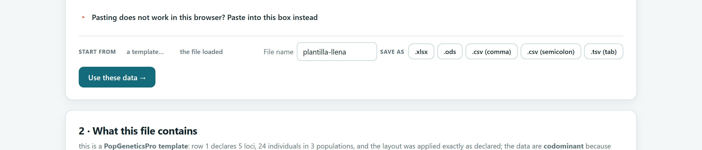
Figura 3.4. El pie de la hoja de datos: empezar desde una plantilla o desde el archivo cargado, guardar en cinco formatos y enviar los datos al análisis con Use these data.
Tabla 3.3. Teclado en la hoja.
Teclas
Acción
Ctrl+V / C / X
Pegar, copiar, cortar
Ctrl+Z / Y
Deshacer, rehacer
Ctrl+A
Seleccionar lo usado
Flechas · Tab · Enter
Moverse (con Mayús, hacia atrás o ampliar la selección)
Inicio · Fin · RePág · AvPág
Saltar a los extremos
F2 o doble clic
Editar la celda
Supr
Borrar la selección
Esc
Cancelar la edición
Tabla 3.4. Formatos para guardar la hoja.
Botón
Úsalo cuando…
.xlsx
quieras seguir trabajando en una hoja de cálculo.
.ods
uses un programa de oficina de formato abierto.
.csv (comma)
necesites texto simple con punto decimal.
.csv (semicolon)
tu computadora use coma decimal, como es común en español.
.tsv (tab)
vayas a pegar los datos en otro programa.
20 000
Capacidad de la hoja
Hasta 20 000 filas y 5 000 columnas. La hoja se guarda sola en tu navegador mientras trabajas: si cierras la app por error, los datos siguen ahí al volver.
Tabla 3.5. La barra de herramientas y los otros controles de la hoja.
Control
Qué hace
Undo · Redo
Deshace o rehace el último cambio, incluso un pegado completo.
Rows: + above · + below · − delete · +100
Inserta filas arriba o abajo de la selección, borra las seleccionadas o añade 100 filas vacías al final.
Columns: + left · + right · − delete · width
Lo mismo para columnas; el deslizador ajusta el ancho con que se ven.
First row = column names
Desmárcala si tus datos empiezan sin fila de nombres.
Clear the sheet
Vacía la hoja (se puede deshacer).
Start from: a template… · the file loaded
Abre el diseñador de plantillas, o copia a la hoja el archivo que cargaste para corregirlo ahí.
Pasting does not work in this browser?
Un cuadro de texto alternativo: pega ahí y pulsa Put it in the sheet at the selected cell. Útil si el navegador bloquea el portapapeles.
iNota · corregir en la hoja lo que el control de calidad encontró
Cuando cargas un archivo y el control de calidad encuentra valores problemáticos, el botón Correct them in the data sheet abre tus datos en la hoja con esas celdas marcadas en rojo. Al pasar el ratón sobre una celda marcada se lee el motivo. Corriges, pulsas Use these data y el control se repite (sección 3.5).
3.3El diseñador de plantillas
La mejor forma de evitar errores de formato es no inventar el formato. Con Design a data template describes lo que muestreaste y la app escribe la hoja por ti: IDs y poblaciones ya puestos, una columna por locus o carácter y una primera fila que declara la disposición, para que al cargarla no haya nada que adivinar.
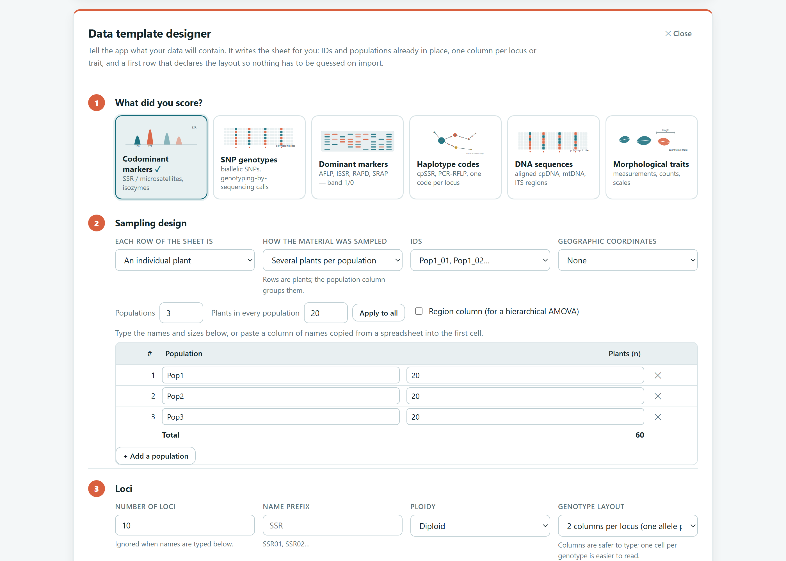
Figura 3.5. El diseñador de plantillas. 1 tipo de dato; 2 diseño de muestreo, con la tabla de poblaciones y el número de plantas de cada una; 3 loci, bandas, regiones o caracteres. Los números de los círculos son de la propia app.
Tabla 3.6. Los seis tipos de dato del diseñador (paso What did you score?).
Tarjeta
Para
Qué pide en el paso 3
Codominant markers
Microsatélites, isoenzimas
Número de loci o sus nombres, prefijo, ploidía, disposición del genotipo (dos columnas o una celda) y código de faltante.
SNP genotypes
SNP bialélicos, genotipado por secuenciación
Lo mismo; los alelos se escriben como nucleótidos.
Dominant markers
AFLP, ISSR, RAPD, SRAP
Bandas por primer (un nombre por primer y cuántas bandas leíste) y si la hoja va con individuos o con bandas en filas.
Haplotype codes
Microsatélites de cloroplasto, PCR-RFLP
Loci con un código por celda.
DNA sequences
cpDNA, mtDNA, ITS alineados
Regiones génicas y su longitud alineada; propone un esqueleto FASTA con hoja de muestras.
Morphological traits
Medidas, conteos, escalas
Nombre, unidad y tipo de cada carácter (cuantitativo, discreto u ordinal).
Tabla 3.7. Opciones del diseño de muestreo (paso Sampling design).
Opción
Significado
Each row of the sheet is
Qué es cada fila: una planta, una raza, una accesión, una variedad, un clon, un genotipo, una muestra, una población en mezcla o una OTU. El nombre elegido se usa en todas las tablas y textos.
How the material was sampled
Varias plantas por población, o una muestra compuesta por unidad (bulk). Con muestras compuestas no hay análisis dentro de poblaciones.
IDs
Pop1_01, Pop1_02… · 001, 002… · vacíos para escribirlos tú.
Geographic coordinates
Ninguna, un punto por población o un punto por planta. Con un punto por planta y al menos 10 plantas se abre la estructura espacial fina (Bloque 9).
Region column · Group column
Añaden una columna para un AMOVA jerárquico o para un grupo como el complejo racial.
Tabla de poblaciones
Nombre y número de plantas de cada población. Puedes pegar una columna de nombres copiada de una hoja de cálculo en la primera celda; Apply to all pone el mismo tamaño a todas.
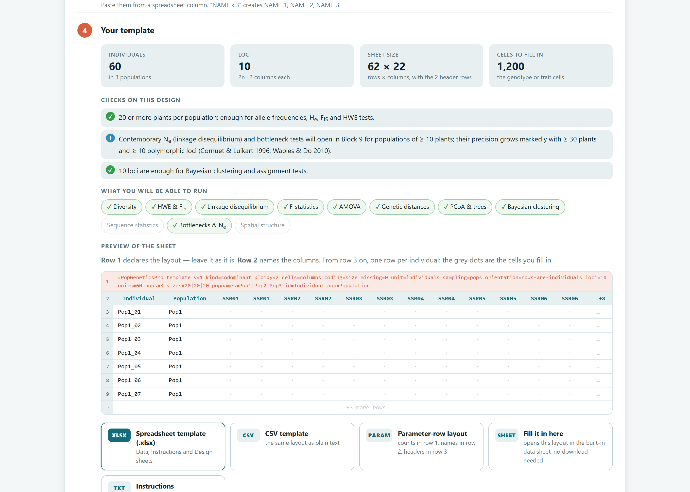
Figura 3.6. El paso Your template: tamaño de la hoja y celdas por llenar, revisiones del diseño, análisis que podrás correr (tachados los que no), vista previa de la hoja y botones de descarga. En la vista previa, la fila 1 declara la disposición y los puntos grises son las celdas por llenar.
Tabla 3.8. Lo que puedes descargar desde el diseñador.
Botón
Archivo
Cuándo usarlo
XLSX
Hoja de cálculo con tres hojas: datos, instrucciones y diseño.
La opción recomendada para llenar en la computadora.
CSV
La misma plantilla como texto.
Para programas que no leen .xlsx.
PARAM
Disposición con fila de parámetros: conteos en la fila 1, nombres en la 2 y encabezados en la 3 (figura 3.7).
Si también usarás programas que leen esa disposición. Solo se habilita para diseños que caben en ella.
SHEET
Abre la plantilla en la hoja de datos integrada.
Para capturar directamente, sin descargar nada.
FASTA
Esqueleto con un encabezado por secuencia.
Con secuencias: pegas cada secuencia debajo de su nombre.
TXT
Instrucciones de llenado y revisiones del diseño.
Para compartir con quien capture los datos en el laboratorio.
La fila que declara la disposición
La primera fila de una plantilla empieza con #PopGeneticsPro template y lleva, celda por celda, pares clave=valor. Al cargar la hoja, la app la lee y aplica la disposición tal como está declarada, sin adivinar. No la borres ni la modifiques.
Tabla 3.9. Claves de la fila 1 de una plantilla.
Clave
Significado
Clave
Significado
kind
tipo de dato
loci
número de loci, bandas o caracteres
ploidy
ploidía
units
número de filas de datos
cells
un alelo por columna o genotipo en una celda
pops
número de poblaciones
coding
tamaños, nucleótidos, 0/1 o valores
sizes
plantas por población (8|8|8)
missing
código de faltante
popnames
nombres de las poblaciones
unit · sampling · orientation
qué es cada fila, cómo se muestreó y si las filas son individuos o bandas
id · pop · region
nombres de las columnas de etiquetas
Figura 3.7. La disposición con fila de parámetros para 3 loci, 5 individuos en 2 poblaciones (3 y 2 plantas) y 2 regiones. La app la reconoce sola al cargarla y convierte las regiones en una columna. En esta disposición, el faltante de una banda dominante suele escribirse −1.
▸Ejemplo · de la plantilla a la verificación
En el diseñador elige Codominant markers, tres poblaciones (SanJuan, ElMirador y LaCumbre) con 8 plantas cada una y 5 loci.
En Your template pulsa Fill it in here. La plantilla se abre en la hoja de datos con 24 filas listas.
Captura los genotipos. Para el ejemplo, deja sin llenar las dos últimas plantas de LaCumbre.
Pulsa Use these data y luego Build the dataset and run the checks. La tarjeta de interpretación dice this is a PopGeneticsPro template: nada fue adivinado.
En el control de calidad aparece Checked against your template (figura 3.8): lo declarado contra lo encontrado.
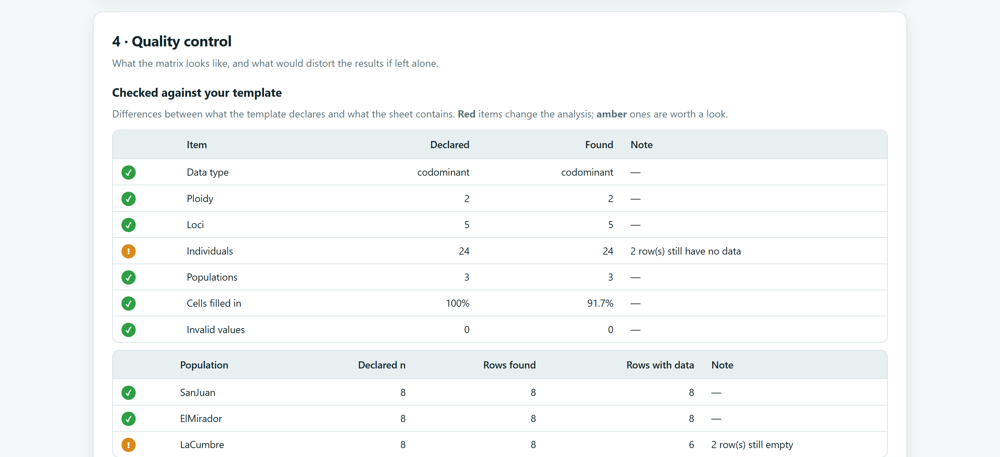
Figura 3.8. Verificación contra la plantilla. Todo coincide excepto dos filas de LaCumbre que siguen vacías, marcadas en ámbar: la app las detecta y no las confunde con plantas reales. Los elementos en rojo cambiarían el análisis (por ejemplo, un número de loci distinto del declarado); los ámbar merecen revisión.
✓Regla de decisión · las revisiones del diseño
Si el diseño tiene…
el diseñador advierte que…
Menos de 5 plantas en una población
no alcanza para ninguna prueba dentro de poblaciones; se necesitan 20 a 30 para estimar bien las frecuencias (Hale y colaboradores, 2012).
20 o más plantas por población
alcanzan para frecuencias alélicas, He, FIS y pruebas de Hardy–Weinberg.
Menos de 5 loci polimórficos
los análisis multilocus (agrupamiento bayesiano, asignación, r̄d) no son confiables; el agrupamiento suele correrse con 10 o más.
Pocas poblaciones por región
el número de permutaciones posibles limita el valor P más pequeño de ΦCT en el AMOVA (Fitzpatrick, 2009). Con 2 + 2 poblaciones solo hay 3 arreglos distintos y P nunca baja de 0.33.
10 o más plantas por población (codominantes)
se abren Ne por desequilibrio de ligamiento y las pruebas de cuello de botella del Bloque 9; su precisión mejora mucho con 30 o más plantas y 10 o más loci polimórficos.
iNota · convertir un conjunto que ya cargaste
Al final del Bloque 2, el botón Export in another layout abre el diseñador con tus datos ya cargados. Así puedes guardar, por ejemplo, un archivo .str o .gen como plantilla de PopGeneticsPro con sus poblaciones, en la disposición con fila de parámetros, o un alineamiento como FASTA con su hoja de muestras.
3.4Interpretación y papel de cada columna
Una tabla simple no dice qué es. Antes de calcular, la app deduce tres cosas: si las filas son individuos o loci, qué tipo de marcador contiene y qué papel tiene cada columna. Te lo muestra en dos tarjetas para que lo confirmes.
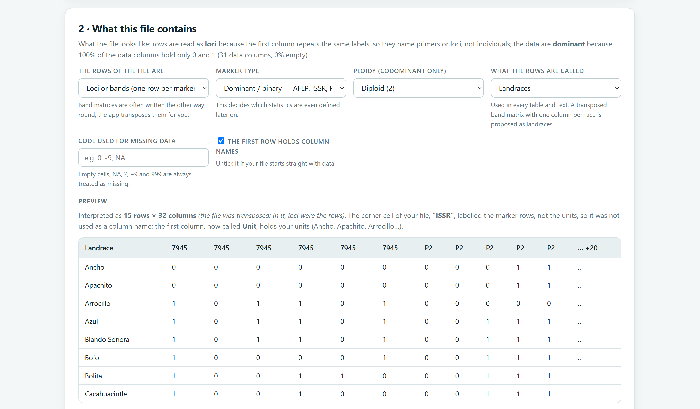
123456
Figura 3.9. La tarjeta 2 · What this file contains con el ejemplo de razas de maíz con ISSR.
1La explicación: por qué leyó las filas como loci y por qué el dato es dominante.
2Orientación. La app transpuso la tabla porque la primera columna repite nombres de primers.
3Tipo de marcador: decide qué estadísticas existen más adelante.
4Nombre de las filas. Con una tabla transpuesta propone Landraces (razas).
5Código de faltante, además de los que siempre se reconocen.
6Vista previa y aviso sobre la celda de la esquina (“ISSR”), que no se usa como nombre de columna.
Tabla 3.10. Opciones de la tarjeta What this file contains.
Opción
Qué decide
Cuándo cambiarla
The rows of the file are
Individuos (una fila por planta) o loci y bandas (una fila por marcador).
Si la app transpuso una tabla que no debía, o al revés.
Marker type
Codominante, dominante, haploide, secuencias o morfológico.
Siempre que lo leído no coincida con tu marcador.
Ploidy
Diploide, haploide, triploide, tetraploide o hexaploide (solo codominantes).
En especies poliploides, con una columna por copia del gen.
How genotypes are written
Un alelo por columna o el genotipo completo en una celda.
Si tus celdas dicen 182/186.
What the rows are called
Individuos, razas, accesiones, variedades, poblaciones, clones, genotipos, muestras u OTU.
Para que tablas, textos e informe usen tu término.
Code used for missing data
Un código propio de faltante.
Si en tu laboratorio se usa, por ejemplo, 999.
The first row holds column names
Si la primera fila son nombres.
Desmárcala si el archivo empieza directo con datos.
✓Regla de decisión · cómo deduce la app el tipo de marcador
#
Si encuentra…
entonces el dato es…
1
la fila 1 de una plantilla de PopGeneticsPro
el tipo declarado en ella
2
una fila de parámetros con dos columnas por locus
codominante (con una columna por locus: dominante o haploide)
3
más del 90 % de las columnas de datos solo con 0 y 1
dominante
4
columnas con secuencias completas de ADN
secuencias
5
columnas con genotipos en una celda (182/186, A/G)
codominante, genotipo en una celda
6
nombres de columna que vienen en pares
codominante, un alelo por columna
7
mayoría de columnas con medidas continuas
morfológico
8
mayoría de columnas con un código de texto
haploide
9
ninguno de los anteriores
codominante (revísalo)
Solo se examinan las columnas de datos: una columna de latitud o de IDs no convierte una matriz de 0 y 1 en medidas. La orientación se deduce antes: una matriz de 0 y 1 cuya primera columna repite nombres, o con muchas más filas que columnas, se lee con las bandas en filas.
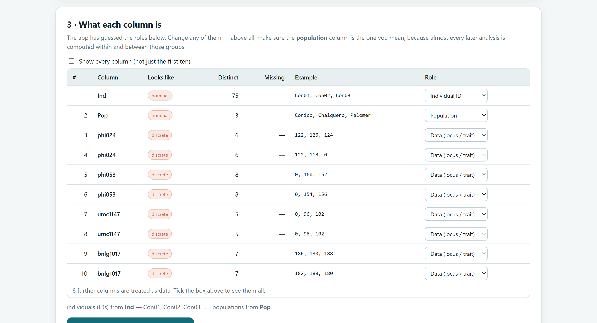
1234
Figura 3.10. La tarjeta 3 · What each column is con el ejemplo de maíz con microsatélites.
1Muestra todas las columnas, no solo las diez primeras.
2Cómo se ve cada columna: nominal (texto), discrete (enteros), binary (0/1) o quantitative, con valores distintos, faltantes y ejemplos.
3El papel asignado; cámbialo con el menú.
4Resumen: de dónde salen los IDs, las poblaciones, las regiones y las coordenadas.
Tabla 3.11. Papeles posibles de una columna.
Papel
Significado
Data (locus / trait)
Una columna de datos: alelo, banda, secuencia o carácter. Es el papel por omisión.
Individual ID
El nombre de cada fila. Si no hay, la app genera Ind1, Ind2…
Population
El grupo de cada fila. Sin esta columna, cada fila se trata como su propia unidad.
Region / group
El nivel superior para un AMOVA jerárquico o para colorear figuras.
Latitude · Longitude
Coordenadas en grados decimales (19.62, −98.12) o proyectadas en metros, como UTM (Northing, Easting).
Ignore this column
Una columna que no debe usarse: observaciones, fechas, número de gel.
!Importante · la columna de población
Casi todos los análisis posteriores se calculan dentro y entre los grupos que define la columna Population. Si la app tomó por población una columna equivocada (por ejemplo, la del número de placa) o no encontró ninguna, corrígelo aquí antes de pulsar Build the dataset and run the checks. Un error en este paso invalida la diversidad por población, FST, el AMOVA y todo lo que sigue.
3.5Control de calidad
Al pulsar Build the dataset and run the checks, la app arma el conjunto de datos y lo revisa. La tarjeta 4 · Quality control muestra primero seis cifras, luego los avisos y, debajo, tablas y figuras de la matriz.
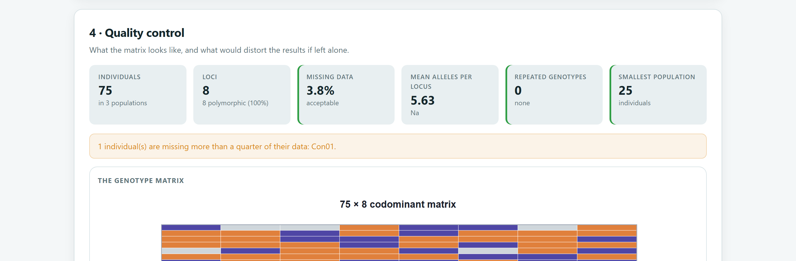
Figura 3.11. Control de calidad del ejemplo de maíz con microsatélites. Las tarjetas con borde verde están dentro de lo aceptable y las de borde ámbar requieren atención. El único aviso señala a Con01, que no tiene datos en 3 de sus 8 loci.
Tabla 3.12. Las cifras del control de calidad y cómo leerlas.
Tarjeta
Qué mide
Señal de alerta
Individuals (o el nombre de tus unidades)
Filas leídas y número de poblaciones.
Menos filas de las que capturaste: revisa la tabla de problemas.
Loci · Bands · Haplotypes · Traits
Columnas de datos y cuántas son polimórficas.
Muchos loci monomórficos: no aportan información.
Missing data
Porcentaje de celdas de datos faltantes.
Más de 10 % (borde ámbar).
Mean alleles per locus · Mean band frequency
Na promedio (codominantes) o frecuencia promedio de la banda (dominantes).
Na muy alto en un solo locus: posibles errores de lectura.
Repeated genotypes
Pares de individuos con genotipo multilocus idéntico.
Cualquier valor mayor que 0: posibles clones o plantas duplicadas.
Smallest population
Tamaño de la población más pequeña. No aparece si no hay columna de población.
Menos de 5 (borde ámbar).
✓Regla de decisión · datos faltantes
Faltantes
Lectura
Qué hacer
Menos de 5 %
Muy bueno
Continúa sin cambios.
5 a 10 %
Aceptable
Continúa, pero revisa si los faltantes se concentran en un locus o en una población.
Más de 10 %
Preocupante
Elimina los loci o individuos con más faltantes en lugar de dejar que los huecos dirijan el resultado.
Un individuo con más de 25 %
Individuo débil
La app lo nombra. Repite su genotipado o exclúyelo si su ausencia no deja la población demasiado pequeña.
Un locus con muchos más faltantes que el resto
Locus problemático
Puede tener alelos nulos o amplificar mal. Revísalo también en el Bloque 4.
Tablas y figuras de la matriz
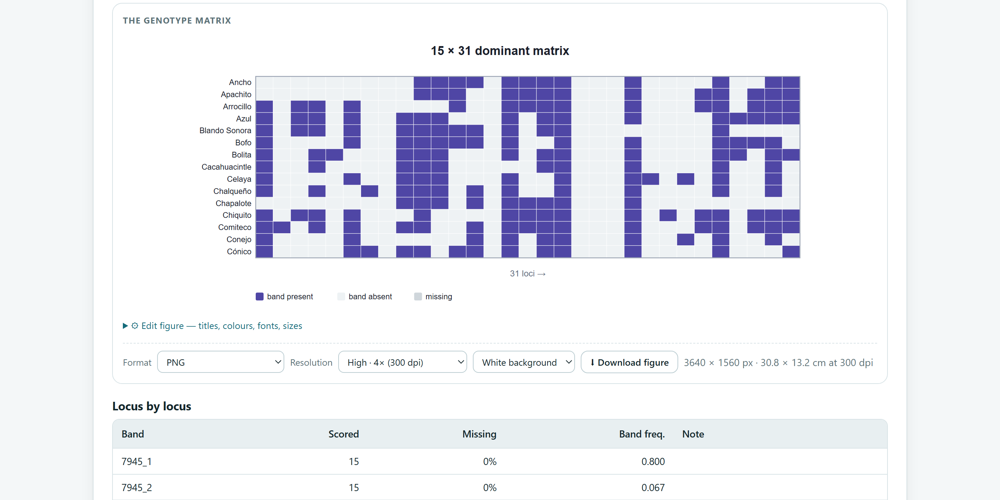
Figura 3.12.The genotype matrix con las 15 razas y las 31 bandas ISSR. Cada celda es un individuo en un locus: con dominantes, banda presente o ausente; con codominantes, homocigoto o heterocigoto; en gris, faltante. Las columnas llenas o vacías de arriba abajo son bandas monomórficas. En Edit figure puedes mostrar solo los faltantes, que revela a simple vista loci o plantas problemáticos.
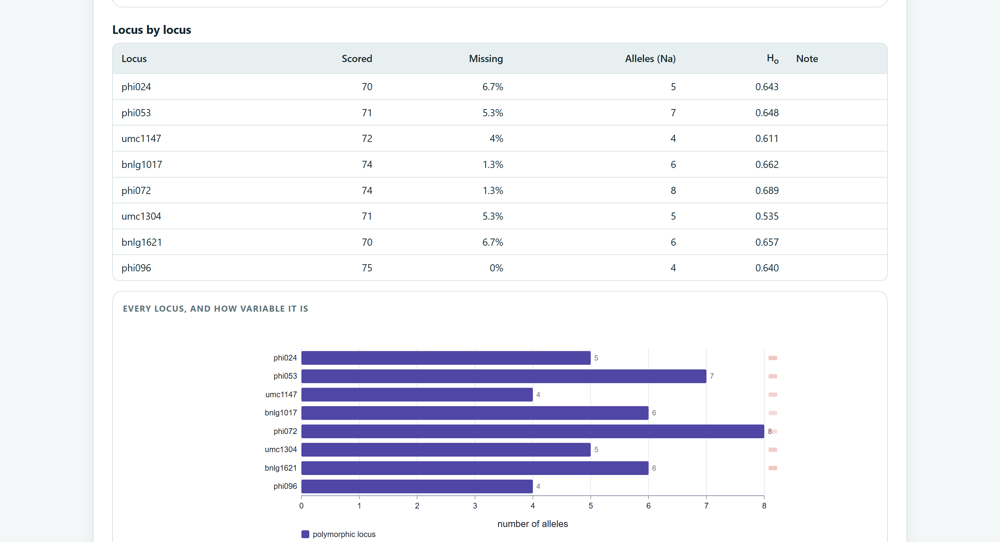
Figura 3.13.Locus by locus con los 8 microsatélites. La tabla da los individuos con dato, los faltantes, el número de alelos Na y la heterocigosis observada Ho; la figura ordena los loci por variabilidad. Con dominantes la tabla da la frecuencia de cada banda; con caracteres morfológicos, media, desviación estándar, coeficiente de variación, mínimo y máximo.
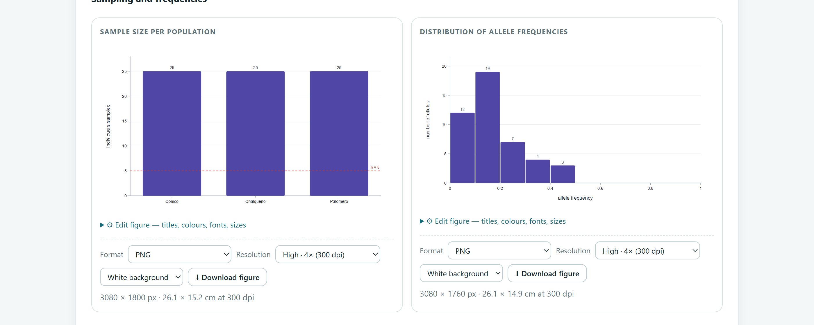
Figura 3.14.Sampling and frequencies. Izquierda: plantas por población, con la línea roja del mínimo recomendado (5, ajustable). Derecha: cuántos de los 45 alelos caen en cada clase de frecuencia. En una población en equilibrio se espera que la clase más baja sea la más numerosa, en forma de L; si la moda se desplaza a frecuencias intermedias puede haber un cuello de botella reciente. Aquí la clase 0.1–0.2 es la más frecuente, pero con las tres poblaciones juntas esto es solo una primera mirada: la prueba formal se hace por población en el Bloque 9.
✓Regla de decisión · loci monomórficos y bandas extremas
Si un locus o banda…
entonces…
Es monomórfico (un solo alelo, o banda en todos o en ninguno)
No aporta a la diferenciación ni a las distancias. La app lo conserva y lo avisa; cuenta para el porcentaje de loci polimórficos (%P).
Es una banda dominante con frecuencia menor de 5 % o mayor de 95 %
Su frecuencia se estima mal a partir de un gel. Es práctica común eliminarla antes de analizar; la app las cuenta en un aviso.
Tiene un alelo único en una sola planta
Puede ser real (un alelo raro) o un error de lectura. Revisa el electroferograma antes de reportarlo como alelo privado.
Clones y genotipos repetidos
θTeoría en breve · rametos y genetos
Muchas plantas se reproducen también de forma vegetativa: por rizomas, estolones, bulbilos o hijuelos, como los agaves. Cada tallo o planta independiente es un rameto, pero todos los que salieron del mismo individuo original forman un solo geneto y comparten el mismo genotipo. Si se muestrean 40 rametos de un geneto como si fueran 40 plantas, el tamaño de muestra se infla, la diversidad se subestima y FIS se distorsiona. La práctica habitual es conservar un representante por genotipo multilocus. La app compara todos los pares de individuos con al menos la mitad de los loci genotipados y reporta los idénticos y los que coinciden en 95 % o más de sus loci.
✓Regla de decisión · genotipos repetidos
Si encuentras…
lo más probable es…
qué hacer
Pares idénticos en una especie clonal
rametos del mismo geneto
conservar uno por genotipo
Pares idénticos en una especie sin reproducción vegetativa
la misma planta muestreada o capturada dos veces, o muy pocos loci
revisar etiquetas y hoja de campo
Pares que coinciden en 95 % o más, sin ser idénticos
parientes cercanos, o la misma planta con un error de lectura
revisar los loci que difieren
Muchos pares idénticos con pocos loci
falta de poder para distinguir individuos
añadir loci antes de concluir clonalidad
Con secuencias es normal compartir haplotipo, y con caracteres no existe un genotipo multilocus: en ambos casos esta revisión no se aplica.
Valores por corregir: un ejemplo con errores a propósito
Para ver cómo reacciona el control de calidad, la tabla 3.13 reproduce una pequeña matriz de 20 plantas y 4 microsatélites con seis errores sembrados a propósito. Puedes capturarla en la hoja de datos y seguir los pasos.
Tabla 3.13. Filas con errores de la matriz de práctica (las demás filas son correctas). En rojo, el valor equivocado; en la fila 8 la celda dice 18O, con la letra O mayúscula en lugar del cero. Los números de fila son los de la hoja, con los nombres de columna en la fila 1.
Fila
ID
Population
Latitude
Longitude
SSR1
SSR1
SSR2
SSR2
SSR3
SSR3
SSR4
SSR4
3
A02
Tlaxco
19.62
−98.12
182
184
138
142
96
96
210
210
4
A03
Tlaxco
19.62
−98.12
182
184
138
142
96
96
210
210
6
A05
Tlaxco
19.62
−98.12
184
186
142
144
96
100
210
216
7
A05
Tlaxco
19.62
−98.12
182
182
138
140
100
102
212
214
8
A07
Tlaxco
19.62
−98.12
18O
186
140
142
96
98
210
212
9
A08
Tlaxco
19.62
−98.12
184
184
142
142
98
98
0
214
11
A10
(vacía)
19.62
−98.12
186
188
140
144
98
100
210
214
12
B01
Apizaco
190.41
−98.14
182
184
144
146
100
102
216
218
20
B09
Apizaco
19.41
−98.14
·
·
·
·
·
·
·
·
Abre la hoja de datos, pega la matriz completa y pulsa Use these data.
Confirma la interpretación (codominante, 4 loci en pares) y pulsa Build the dataset and run the checks.
Lee los avisos y la tabla Values to fix in the sheet (figura 3.15).
Sube a la hoja de datos: las celdas con problemas están en rojo (figura 3.16). Corrige cada una y vuelve a pulsar Use these data.
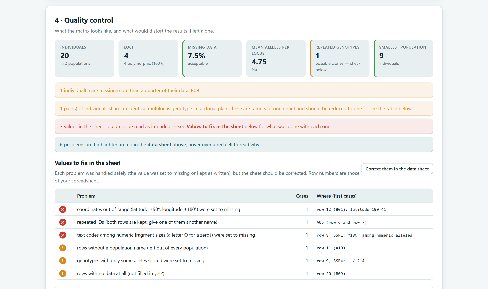
Figura 3.15. El control de calidad con la matriz de práctica. Los avisos resumen lo encontrado y la tabla Values to fix in the sheet dice, para cada problema, qué hizo la app y dónde está. Con ✕ rojo, errores que cambian los datos; con ! ámbar, advertencias. Si cargaste un archivo en lugar de usar la hoja, el botón Correct them in the data sheet lo abre en la hoja con las marcas.
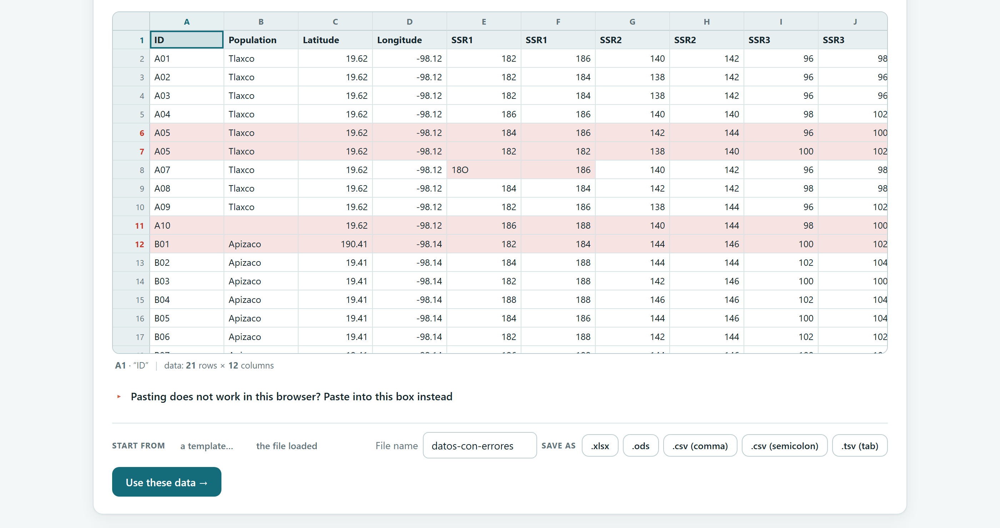
Figura 3.16. La hoja de datos con los problemas marcados: la celda 18O (con letra O) y su pareja en la fila 8, las filas completas 6 y 7 (ID repetido), 11 (sin población) y 12 (latitud imposible). Al pasar el ratón sobre una celda roja se lee el motivo.
Tabla 3.14. Qué detectó el control de calidad en la matriz de práctica y cómo corregirlo.
Error sembrado
Cómo lo reporta la app
Qué hizo y cómo se corrige
18O (con la letra O) en la fila 8
✕ text codes among numeric fragment sizes (a letter O for a zero?) were set to missing
Quitó el genotipo para no inflar Na con un alelo falso. Escribe 180.
A05 dos veces (filas 6 y 7)
✕ repeated IDs (both rows are kept: give one of them another name)
Conservó ambas filas. Renombra la segunda como A06.
Latitud 190.41 (fila 12)
✕ coordinates out of range … were set to missing
Borró la latitud para no distorsionar las distancias. Escribe 19.41.
Población vacía (fila 11)
! rows without a population name (left out of every population)
A10 queda fuera de todos los grupos. Escribe Tlaxco.
0 | 214 en SSR4 (fila 9)
! genotypes with only some alleles scored were set to missing
Un genotipo a medias no es un homocigoto. Repite la lectura o deja ambos alelos vacíos.
B09 sin datos (fila 20)
! rows with no data at all (not filled in yet?) y aviso de más de 25 % de faltantes
Genotipa la planta o elimina la fila.
A02 y A03 idénticas
Repeated genotypes = 1 y la tabla de genotipos repetidos
¿Clon o planta capturada dos veces? Revisa las etiquetas de campo.
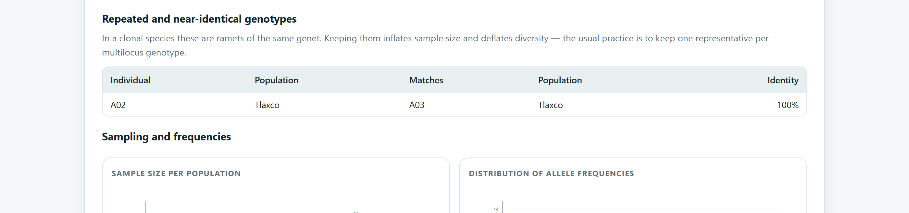
Figura 3.17. La tabla Repeated and near-identical genotypes: A02 y A03, de Tlaxco, coinciden en el 100 % de sus loci.
Tabla 3.15. Todos los problemas que puede reportar la tabla Values to fix in the sheet.
Problema
Qué hace la app con el valor
✕
Banda que no es 0 ni 1
La vuelve faltante.
✕
Genotipo con un número de alelos distinto de la ploidía
Lo vuelve faltante.
✕
Genotipo completo (182/186) en una disposición de un alelo por columna
Lo vuelve faltante; si toda la hoja es así, elige “genotipo en una celda”.
✕
Número de columnas de genotipo que no corresponde a la ploidía
Ignora las columnas sobrantes del final.
✕
Alelo no numérico en una plantilla de tamaños · código de texto entre tamaños
Lo vuelve faltante.
✕
ID repetido
Conserva ambas filas.
✕
Coordenada fuera de rango (±90°, ±180°) entre coordenadas en grados
La vuelve faltante.
✕
Letras que no son nucleótidos IUPAC · sin columnas de datos
Lo señala para corregir.
!
Genotipo con solo algunos alelos leídos
Lo vuelve faltante.
!
Celda haploide que parece tener dos alelos
La conserva y la señala.
!
Fila o locus sin ningún dato
Lo conserva; suele ser una plantilla sin terminar.
!
Fila sin nombre de población
La deja fuera de todas las poblaciones.
!
Coordenada que no es un número
La vuelve faltante.
!
Secuencia más corta que la más larga de su región · secuencia sin capturar
La señala como no alineada · la rellena con ? para mantener el alineamiento.
!
Texto en una columna numérica de caracteres
Lo vuelve faltante.
!Importante · la app protege el análisis, no corrige tu archivo
Cada problema se maneja de forma segura para que los cálculos no se contaminen, pero tu archivo original no cambia. Corrige la hoja de origen o guarda la versión corregida desde la hoja de datos integrada. Así, la próxima vez que cargues los datos, o cuando otra persona los use, estarán limpios.
3.6Qué análisis permiten tus datos
La última tarjeta del bloque, 5 · What you can run with these data, resume qué familias de análisis admite el conjunto tal como quedó y, para las que no, explica por qué.
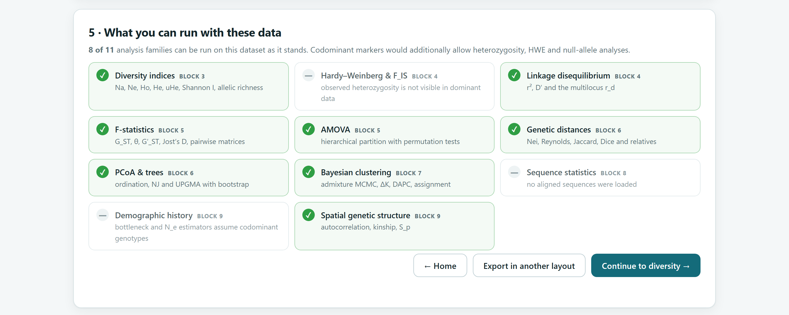
Figura 3.18. Análisis disponibles con el ejemplo de agave con AFLP: 8 de 11. Faltan Hardy–Weinberg y la historia demográfica, porque los marcadores dominantes no muestran heterocigotos, y las estadísticas de secuencias. La estructura espacial sí está disponible, porque el archivo trae coordenadas.
Tabla 3.16. Las 11 familias de análisis y lo que cada una requiere.
Familia en la app
Bloque
Requisito
Diversity indices
3
Marcadores y al menos una población con 2 o más individuos.
Hardy–Weinberg & F_IS
4
Codominantes y al menos una población con individuos repetidos.
Linkage disequilibrium
4
Dos o más loci (no secuencias ni caracteres) y poblaciones con individuos repetidos.
F-statistics · AMOVA
5
Marcadores y al menos dos poblaciones con 2 o más individuos cada una.
Genetic distances
6
Tres o más unidades, con al menos un locus polimórfico o caracteres.
PCoA & trees
6
Tres o más unidades.
Bayesian clustering
7
Marcadores multilocus (no secuencias ni caracteres), 6 o más individuos y 5 o más loci polimórficos.
Sequence statistics
8
Secuencias alineadas.
Demographic history
9
Codominantes, dos o más loci y poblaciones con individuos repetidos.
Spatial genetic structure
9
Coordenadas en 10 o más individuos.
iNota · la tarjeta recomienda, los botones de bloque se abren antes
La tarjeta usa los mínimos recomendados. Los botones de la barra superior son algo más permisivos para que puedas explorar: el Bloque 7 se abre desde 3 loci polimórficos, aunque la tarjeta pide 5, y el Bloque 3 se abre incluso con una muestra por unidad para mostrar la diversidad del conjunto. Cuando un análisis está por debajo del mínimo recomendado, el bloque correspondiente lo advierte en su interpretación.
Tabla 3.17. Botones al final del bloque.
Botón
Qué hace
← Home
Vuelve a la portada; los datos permanecen cargados.
Export in another layout
Abre el diseñador con los datos para guardarlos como plantilla, disposición con fila de parámetros o FASTA con hoja de muestras (sección 3.3).
Continue to diversity →
Pasa al Bloque 3.
3.7Paso a paso con los seis ejemplos
Cada ejemplo muestra una situación distinta del Bloque 2. Todos se cargan desde Or try an example y, salvo los FASTA, se terminan con Build the dataset and run the checks. La tabla 3.18 resume lo que debes obtener.
Tabla 3.18. Resultado del Bloque 2 con cada ejemplo.
Ejemplo
Leído como
Faltantes
Avisos
Análisis
Maize landraces · ISSR
Dominante, transpuesto; 15 razas, 31 bandas (25 polimórficas, 80.6 %); sin columna de población
0 %
6 bandas monomórficas
3 de 11
Maize populations · SSR
Codominante, un alelo por columna; 75 plantas, 3 poblaciones de 25, 8 loci; Na = 5.63
3.8 %
Con01 sin datos en 3 de 8 loci
9 de 11
Agave · AFLP
Dominante; 80 plantas, 4 poblaciones de 20, 60 bandas polimórficas, con coordenadas
0 %
Ninguno: matriz lista
8 de 11
Pine · chloroplast DNA
FASTA; 48 secuencias de 480 pb, 4 poblaciones de 12, 8 haplotipos
FASTA; 16 secuencias de 1600 pb, 6 géneros como poblaciones, 16 haplotipos
0 %
Ofrece añadir información de muestras
6 de 11
Ejemplo 1 · Razas de maíz con ISSR: una tabla que hay que girar
▸Paso a paso
Pulsa Maize landraces · ISSR. El archivo es un libro de hoja de cálculo con las bandas en filas y las razas en columnas, como se lee un gel.
Lee la tarjeta de interpretación (figura 3.9): la app notó que la primera columna repite los nombres de los primers (7945, P2, P5, A8), transpuso la tabla y propone llamar landraces a las filas.
En los papeles, la primera columna, ahora Landrace, es el Individual ID y no hay población. Es correcto: cada raza es una muestra compuesta.
Pulsa Build the dataset and run the checks.
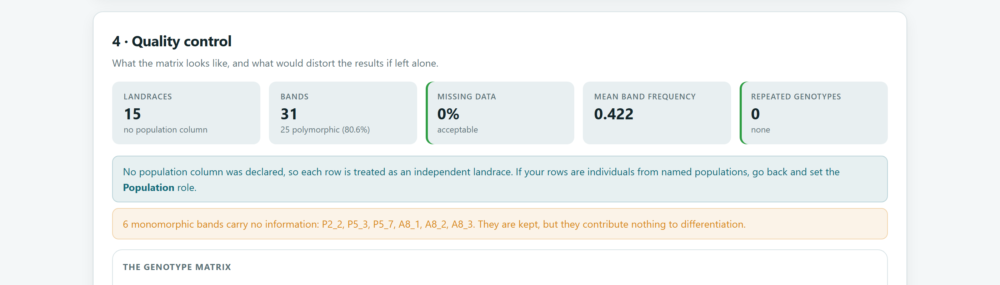
Figura 3.19. Control de calidad de las razas con ISSR. Al no haber columna de población, cada fila se trata como una raza independiente y la tarjeta de población más pequeña no aparece. Seis bandas son monomórficas.
θQué significa para el análisis
Con una sola muestra por raza no hay variación dentro de las unidades, así que no existen la diversidad por población, el equilibrio de Hardy–Weinberg ni el AMOVA. Sí se pueden estudiar las relaciones entre razas: distancias genéticas, coordenadas principales, árboles con bootstrap y agrupamiento bayesiano (3 de 11 familias). Es el camino del Bloque 6, donde este ejemplo se retoma.
Ejemplo 2 · Poblaciones de maíz con microsatélites: el caso completo
▸Paso a paso
Pulsa Maize populations · SSR. Es un CSV con columnas Ind, Pop y dos columnas por locus.
La interpretación dice the column names come in 8 pairs, two per locus: codominante, un alelo por columna, faltante 0.
En los papeles (figura 3.10), Ind es el ID y Pop la población, con 3 valores distintos: Cónico, Chalqueño y Palomero.
Construye el conjunto y revisa: 75 plantas, 8 loci polimórficos, 3.8 % de faltantes y un solo aviso (figura 3.11).
Baja a Locus by locus (figura 3.13): los faltantes van de 0 % en phi096 a 6.7 % en phi024 y bnlg1621, y Na de 4 a 8 alelos.
θCómo leer este resultado
Todo está dentro de lo recomendable: 25 plantas por población, menos de 5 % de faltantes y ningún locus con más de 7 %. La planta Con01 carece de 3 de sus 8 loci (37.5 %); con 25 plantas en su población, conviene conservarla y dejar que cada análisis use los loci que sí tiene. Con 9 de 11 familias disponibles, este conjunto recorre casi todo el manual.
Ejemplo 3 · Agave con AFLP: dominantes con coordenadas
▸Paso a paso
Pulsa Agave · AFLP. La interpretación dice 100% of the data columns hold only 0 and 1: dominante.
En los papeles, Plant es el ID, Population la población y dos columnas son latitud y longitud; el resumen dice coordinates found.
Construye el conjunto: 80 plantas, 60 bandas polimórficas, sin faltantes ni genotipos repetidos.
Revisa la tarjeta de análisis (figura 3.18).
iNota · por qué no hay clones en un agave
Los agaves producen hijuelos, así que en un estudio real conviene revisar con cuidado la tabla de genotipos repetidos. En este ejemplo simulado no hay ninguno. Con 60 bandas, dos rametos del mismo geneto aparecerían como un par idéntico.
Ejemplo 4 · Pino con ADN de cloroplasto: un archivo FASTA
▸Paso a paso
Pulsa Pine · chloroplast DNA. El mensaje dice Read as a FASTA alignment: 48 individuals, 1 alignment, 4 populations. No hay tarjetas de interpretación ni de papeles: el formato ya trae su estructura.
La población salió del encabezado de cada secuencia: >Sierra_Norte_01 | Sierra_Norte.
Aparece Add sample information para añadir regiones o coordenadas con una hoja de muestras (figura 3.20).
El control de calidad reporta 8 haplotipos en 48 secuencias de 480 pb.
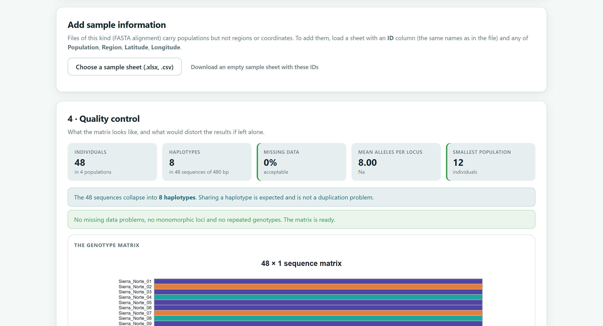
Figura 3.20. Con un FASTA, la app ofrece completar la información de las muestras y el control de calidad avisa que compartir haplotipo es lo esperado, no una duplicación.
iNota · el encabezado de un FASTA
Escribe los encabezados como >ID | Población | Región para no necesitar hoja de muestras. Si ya tienes el archivo sin poblaciones, pulsa Download an empty sample sheet with these IDs, llena las columnas y cárgala con Choose a sample sheet; los IDs deben coincidir con los del FASTA (la app no distingue mayúsculas de minúsculas ni toma en cuenta los espacios de los extremos).
Ejemplo 5 · Morfología de maíz: caracteres en lugar de marcadores
▸Paso a paso
Pulsa Maize · morphology. La interpretación dice the data columns hold continuous measurements: morfológico.
Construye el conjunto. En lugar de la tabla de loci aparece Trait by trait con media, desviación estándar, coeficiente de variación, mínimo y máximo (figura 3.21).
La tarjeta de análisis ofrece 2 de 11 familias: distancias y PCoA. Además se abren la diversidad fenotípica del Bloque 3 y PST del Bloque 9.
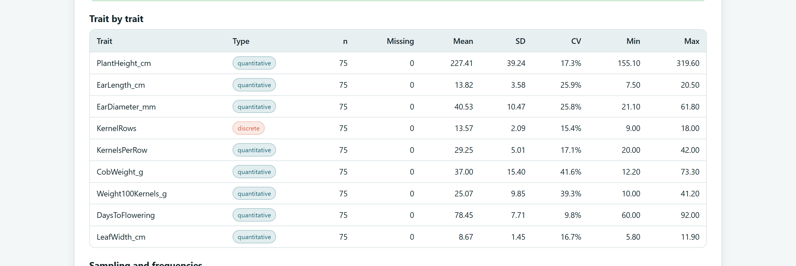
Figura 3.21. Los 9 caracteres del ejemplo morfológico. El número de hileras de la mazorca se reconoce como discrete (entero) y el resto como cuantitativos.
✓Regla de decisión · leer el coeficiente de variación de un carácter
CV
Variación
En el ejemplo
Menos de 10 %
Baja
Días a floración, 9.8 %: carácter muy estable entre plantas.
10 a 30 %
Moderada
Altura de planta (17.3 %), longitud (25.9 %) y diámetro de mazorca (25.8 %).
Más de 30 %
Alta
Peso de olote (41.6 %) y de 100 granos (39.3 %): buenos candidatos para diferenciar poblaciones o para selección.
Guía orientativa: el CV esperado depende del carácter y del ambiente. Un CV muy alto también puede revelar errores de captura, como un peso en gramos escrito en kilogramos; revisa el mínimo y el máximo.
Ejemplo 6 · Cinco géneros para fechar con fósiles
▸Paso a paso
Pulsa Five genera · dating with fossils. Se lee como FASTA con 16 secuencias de 1600 pb, y el nombre del género en cada encabezado se toma como población.
El control de calidad reporta 16 haplotipos: cada especie es distinta, como corresponde a una comparación entre especies.
La población más pequeña tiene 2 secuencias: no importa, porque este ejemplo no se usa para estadísticas de poblaciones sino para el fechado del Bloque 8.
iNota · poblaciones que en realidad son géneros
En estudios entre especies, la columna de población sirve para agrupar taxones (géneros, secciones, clados) y colorear los árboles. Los análisis dentro de poblaciones del Bloque 3 al 5 no tienen sentido biológico en ese caso, aunque la app los permita; ve directo a los Bloques 6 y 8.
5 min
Antes de seguir
Dedica cinco minutos al Bloque 2 cada vez que cargues datos nuevos: confirma el tipo de marcador y la columna de población, revisa los faltantes y la tabla de valores por corregir. Es el paso que más errores evita en todo el estudio.
Con los datos limpios y confirmados, el siguiente capítulo entra al primer análisis propiamente dicho: las frecuencias alélicas y los índices de diversidad del Bloque 3.
B3
Capítulo cuatro · Bloque 3 · Diversity
Frecuencias alélicas y diversidad
¿Cuánta variación genética hay y cómo se reparte entre las poblaciones? El Bloque 3 calcula las frecuencias de cada alelo y, a partir de ellas, los índices de diversidad que se reportan en casi todo artículo: número de alelos, heterocigosis observada y esperada, alelos efectivos, índice de Shannon, riqueza alélica rarefaccionada, contenido de información polimórfica, alelos privados y el índice de fijación.
4.1Teoría en breve
4.2Los índices y qué significan
4.3Reglas de decisión
4.4Ajustes, tablas y figuras del bloque
4.5Paso a paso: maíz con microsatélites
4.6Datos dominantes, haplotipos y morfología
4.1Teoría en breve
La diversidad genética es la materia prima de la evolución y del mejoramiento: una población con muchos alelos y bien repartidos puede responder a cambios del ambiente, a nuevas plagas o a la selección que haga un mejorador. Medirla bien es el primer resultado de cualquier estudio.
θDos formas de medir la variación: cuántos alelos y qué tan repartidos
Imagina dos poblaciones con los mismos cuatro alelos. En la primera, cada alelo tiene una frecuencia de 25 %; en la segunda, uno domina con 85 % y los otros tres son raros. Ambas tienen cuatro alelos (la misma riqueza), pero la primera es mucho más diversa: si tomas al azar dos copias del gen, es mucho más probable que sean distintas. Por eso la genética de poblaciones usa índices de dos familias: los que cuentan alelos (Na, riqueza alélica, alelos privados) y los que toman en cuenta sus frecuencias (He, Ne, índice de Shannon, PIC).
Figura 4.1. Misma riqueza, distinta diversidad. Ambas poblaciones tienen cuatro alelos en un locus, pero en B uno de ellos domina. Na no ve la diferencia; He, Ne, el índice de Shannon (I) y el PIC sí. Ne = 1.37 significa que B se comporta como si tuviera poco más de un alelo igualmente frecuente.
θLa heterocigosis esperada, en una frase
He es la probabilidad de que dos copias del gen tomadas al azar de la población sean distintas. Si una población se apareara al azar, esa sería también la proporción de individuos heterocigotos; por eso se llama heterocigosis “esperada”. Nei (1973) la llamó diversidad génica y mostró que se puede calcular con cualquier tipo de marcador, incluso en especies que se autofecundan o son haploides, donde no hay heterocigotos que contar. Es el índice de diversidad más usado y el que conviene reportar siempre.
1Frecuencias con marcadores dominantes
En AFLP o ISSR solo se ve si la banda está o no. La ausencia corresponde al homocigoto recesivo, cuya frecuencia es q² si hay equilibrio de Hardy–Weinberg. Por eso q se estima como la raíz cuadrada de la proporción de plantas sin banda, con la corrección de Lynch y Milligan (1994) para muestras pequeñas. Todo índice con dominantes descansa en ese supuesto.
2Haplotipos y caracteres
Con secuencias o códigos de cloroplasto cada individuo lleva un solo haplotipo: la diversidad se mide con la diversidad haplotípica Hd, que es He con corrección por tamaño de muestra (Nei, 1987). Con caracteres morfológicos se reparte cada carácter en clases y se calcula el índice de Shannon estandarizado H′, que va de 0 a 1.
3Por qué hace falta rarefaccionar
El número de alelos que encuentras depende de cuántas plantas muestreas: con más plantas aparecen más alelos raros. Si una población tiene 40 plantas y otra 15, su Na no es comparable. La riqueza alélica (Ar) resuelve el problema: calcula cuántos alelos se esperarían si de cada población se tomara la misma cantidad g de copias del gen, igual a la de la muestra más pequeña (Hurlbert, 1971; El Mousadik y Petit, 1996). Es un cálculo exacto, no un sorteo: siempre da el mismo valor.
4.2Los índices y qué significan
Todos los índices se calculan locus por locus en cada población y luego se promedian sobre los loci. En las fórmulas, pi es la frecuencia del alelo i, n el número de individuos con dato y k el número de alelos.
Tabla 4.1. Índices del Bloque 3. Columna “Marcador”: C codominante, D dominante, H haploide o secuencias.
Índice
Fórmula
Qué mide
Intervalo
Marcador
Na número de alelos
k
Alelos distintos observados en la muestra. Sensible al tamaño de muestra.
1 a ∞
C D H
Na ≥ 5 %
alelos con pi ≥ 0.05
Alelos comunes; descarta los raros, que dependen mucho del muestreo.
0 a k
C D H
Ne alelos efectivos
1 / Σ pi²
Cuántos alelos igualmente frecuentes darían la misma diversidad.
1 a k
C D H
I índice de Shannon
− Σ pi ln pi
Diversidad con más peso a los alelos raros que He.
0 a ln k
C D H
Ho heterocigosis observada
heterocigotos / n
Proporción de individuos heterocigotos contados.
0 a 1
C
He heterocigosis esperada
1 − Σ pi²
Probabilidad de que dos copias al azar sean distintas (diversidad génica de Nei).
0 a 1 − 1/k
C D H
uHe · h sin sesgo
2n/(2n − 1) · He
He corregida por tamaño de muestra (Nei, 1978). Con haplotipos: n/(n − 1) · He.
0 a 1
C D H
F índice de fijación
(He − Ho) / He
Déficit (positivo) o exceso (negativo) de heterocigotos.
−1 a 1
C
PIC
He − Σi<j 2pi²pj²
Capacidad de un marcador para distinguir individuos (Botstein y colaboradores, 1980).
0 a 1
C
Ar riqueza alélica
Σ [1 − C(N−Ni, g) / C(N, g)]
Alelos esperados en g copias del gen; N copias en total, Ni del alelo i.
1 a k
C H
%P
loci polimórficos / loci
Porcentaje de loci polimórficos; por omisión, el alelo más común no pasa de 95 %.
0 a 100 %
C D H
Alelos privados
—
Alelos presentes en una sola población. Con dominantes, bandas exclusivas.
0 a ∞
C D H
▸Ejemplo numérico · un locus con tres alelos
En una población de 25 plantas, un microsatélite tiene tres alelos con frecuencias 0.5, 0.3 y 0.2.
Si 13 de las 25 plantas fueran heterocigotas, Ho = 13/25 = 0.520 y F = (0.620 − 0.520)/0.620 = 0.161: un déficit de heterocigotos del 16 %.
Figura 4.2. El efecto Wahlund, en su forma extrema. Por eso el índice de fijación del conjunto (fila Pooled) suele ser mayor que el promedio de las poblaciones: incluye su diferenciación. En el ejemplo de maíz de la sección 4.5, F promedio = 0.104 y F del conjunto = 0.148.
4.3Reglas de decisión
✓Regla de decisión · ¿la diversidad es alta o baja?
Marcador
He habitual
Lectura
Microsatélites en plantas alógamas
0.45 a 0.85
Por debajo de 0.45, diversidad baja (cuello de botella, aislamiento, autogamia); arriba de 0.85, muy alta.
Microsatélites en autógamas
por debajo de 0.45
Valores bajos son normales; compara con otras especies de sistema de apareamiento similar.
AFLP, ISSR, RAPD
0.15 a 0.40
El máximo teórico es 0.5, porque cada banda tiene solo dos estados. Nunca compares He de dominantes con He de microsatélites.
Haplotipos de cloroplasto o secuencias
muy variable
Depende del marcador y de la historia. Reporta junto con el número de haplotipos y la diversidad nucleotídica del Bloque 8.
Son intervalos orientativos tomados de la literatura de plantas: sirven para ubicar un número, no para juzgar un conjunto de datos. Lo que realmente informa es la comparación entre tus poblaciones con el mismo marcador.
✓Regla de decisión · ¿dos poblaciones difieren en diversidad?
Si…
entonces…
Los intervalos al 95 % de He no se traslapan
La diferencia está respaldada por los loci muestreados.
Los intervalos se traslapan
La diferencia no está resuelta: trata a las poblaciones como igual de diversas. La app lo dice explícitamente.
Hay menos de tres loci
No se pueden remuestrear los loci ni calcular intervalos: la diferencia no se prueba (caso de un solo alineamiento de secuencias).
El tamaño de muestra difiere más del doble entre poblaciones
No compares Na ni el número de alelos privados; usa uHe y Ar. La app lo advierte.
Los intervalos se obtienen por bootstrap sobre loci: se remuestrean los loci con reemplazo 1000 veces y se toman los percentiles 2.5 y 97.5 del promedio. Reflejan cuánto cambiaría el resultado con otros loci, no con otras plantas.
✓Índice de fijación F
F
Lectura
Mayor que 0.1
Déficit claro de heterocigotos.
−0.05 a 0.1
Cerca del equilibrio.
Menor que −0.05
Exceso de heterocigotos.
F es una descripción. Si hay endogamia, alelos nulos o efecto Wahlund se decide en el Bloque 4 con FIS y sus pruebas.
✓PIC de un marcador
PIC
Lectura
Mayor que 0.5
Muy informativo.
0.25 a 0.5
Medianamente informativo.
Menor que 0.25
Poco informativo.
Categorías de Botstein y colaboradores (1980). Útil para elegir loci para identificación de variedades o pruebas de paternidad.
✓Regla de decisión · alelos privados y alelos localmente comunes
Si encuentras…
la lectura es…
Un alelo privado con frecuencia ≥ 5 % (frequent)
Evidencia de un acervo genético propio: flujo génico restringido o historia independiente. Prioritario para conservación.
Un alelo privado raro (rare, < 5 %)
Puede ser real o simple azar del muestreo; con más plantas quizá aparezca en otras poblaciones.
Un alelo localmente común, ≥ 5 % en 25 % o menos de las poblaciones
Señal fuerte de flujo génico restringido.
Un alelo localmente común, ≥ 5 % en la mitad o menos de las poblaciones
Señal moderada. La app reporta ambos umbrales cuando hay cuatro poblaciones o más.
4.4Ajustes, tablas y figuras del bloque
Al entrar al Bloque 3 la app calcula todo con los ajustes predeterminados. Si cambias un ajuste, pulsa Compute diversity y el bloque se recalcula completo.
Figura 4.3. La tarjeta 1 · Settings con datos codominantes. Con dominantes aparecen además el método para estimar frecuencias y, con caracteres, el número de clases.
Tabla 4.2. Ajustes del Bloque 3.
Ajuste
Opciones
Recomendación
A locus counts as polymorphic when
El alelo más común ≤ 95 % (predeterminado) · ≤ 99 % · más de un alelo presente.
95 %, el criterio más usado. Con muestras de 20 plantas o menos los tres suelen coincidir.
Rarefy allelic richness to
Número de copias del gen g. Vacío: la muestra más pequeña.
Déjalo vacío. Solo en codominantes y haploides.
Allele frequencies from dominant bands
Lynch y Milligan (predeterminado) · raíz cuadrada · bayesiano con distribución previa uniforme.
Lynch y Milligan para alógamas; bayesiano con F alto para autógamas.
Inbreeding F assumed by the Bayesian estimator
0 a 1.
0 en alógamas; 0.8 a 0.95 en especies que se autofecundan.
Classes per trait
4 a 20 (predeterminado 10).
10 clases de media desviación estándar, la convención habitual.
Bootstrap replicates over loci
0 a 10 000 (predeterminado 1000).
1000; 0 omite los intervalos.
Random seed
Número entero.
Repórtala en los métodos para que los intervalos sean reproducibles.
Tabla 4.3. Tarjetas de resultados del Bloque 3.
Tarjeta
Contenido
Se descarga
2 · What the numbers say
Cifras del conjunto y párrafos de interpretación.
—
3 · Diversity of every population
Tabla de índices por población con la fila del conjunto (Pooled), errores estándar sobre loci, figura de barras y curvas de rarefacción.
Summary (CSV)
4 · Locus by locus
El índice elegido en Show para cada locus en cada población, y la figura Ho contra He.
—
5 · Allele frequencies
Frecuencia de cada alelo en cada población, con los privados marcados; barras apiladas por locus y mapa de calor.
All frequencies (CSV)
6 · Private alleles
Alelos privados con su frecuencia y alelos localmente comunes. Solo aparece si hay alguno.
—
Tabla 4.4. Las siete figuras del bloque. Todas se editan y exportan como se explica en el capítulo del Bloque 10.
Figura en la app
Qué muestra
Cuándo aparece
Diversity of every population
Barras del índice elegido por población, con intervalos o errores estándar y la línea del conjunto.
Dos o más poblaciones con varias muestras
Allelic richness against sampling effort
Curvas de rarefacción: alelos esperados según las copias del gen muestreadas.
Codominantes y haploides
Observed against expected heterozygosity
Cada locus en cada población; los puntos bajo la diagonal tienen déficit de heterocigotos.
Codominantes
Allele frequencies, locus by locus
Barras apiladas con la composición alélica de cada población.
Datos moleculares
Every allele in every population
Mapa de calor de todas las frecuencias; en blanco, alelo ausente en esa población.
Datos moleculares
Private alleles
Alelos privados por población, separando frecuentes y raros.
Si hay alelos privados
Phenotypic diversity by trait and population
Mapa de calor de H′ por carácter y población.
Datos morfológicos
4.5Paso a paso: maíz con microsatélites
El ejemplo de tres poblaciones de maíz con 8 microsatélites recorre todas las tarjetas del bloque. Los valores de este capítulo son los que produce la app con los ajustes predeterminados y la semilla 1.
▸Paso a paso
En el Bloque 2 carga Maize populations · SSR y pulsa Build the dataset and run the checks.
Pulsa Continue to diversity. El bloque se calcula solo en una fracción de segundo, con 1000 remuestreos.
Lee las cifras y la interpretación en 2 · What the numbers say (figura 4.4).
Revisa la tabla por población y la figura de barras (figuras 4.5 y 4.6).
En 4 · Locus by locus cambia Show a F · fixation index para buscar loci problemáticos.
Explora las frecuencias alélicas de cada locus: abre Edit figure bajo las barras apiladas y elige el locus en el menú Locus.
Figura 4.4.What the numbers say con el maíz: 45 alelos en 8 loci, He del conjunto 0.747, Ho 0.636 y F del conjunto 0.148 (tarjeta ámbar: déficit de heterocigotos). La interpretación compara la población más y la menos diversa y explica el significado de F.
Figura 4.5.Diversity of every population: índices promediados sobre los 8 loci y, debajo, sus errores estándar.
Tabla 4.5. Diversidad de las tres poblaciones de maíz (8 microsatélites, 25 plantas cada una).
Población
Na
Ne
I
Ho
He (IC 95 %)
uHe
F
PIC
Ar
Cónico
5.25
3.76
1.433
0.701
0.718 (0.661–0.763)
0.734
0.027
0.678
5.24
Chalqueño
5.38
3.49
1.370
0.546
0.684 (0.601–0.751)
0.698
0.186
0.642
5.35
Palomero
5.50
4.00
1.475
0.661
0.733 (0.676–0.779)
0.748
0.098
0.690
5.47
Conjunto
5.63
4.12
1.523
0.636
0.747
0.752
0.148
0.710
5.49
θCómo leer estos resultados
Las tres razas son igual de diversas. He va de 0.684 en Chalqueño a 0.733 en Palomero, pero los intervalos se traslapan: con estos 8 loci la diferencia no está resuelta. Los valores caen en el intervalo habitual de microsatélites en plantas alógamas.
La riqueza alélica confirma lo mismo. Rarefaccionada a g = 44 copias del gen, el tamaño del locus con menos datos, Ar va de 5.24 a 5.47. Como las tres poblaciones tienen 25 plantas, Na y Ar casi coinciden.
Chalqueño tiene un déficit de heterocigotos. F = 0.186, frente a 0.027 en Cónico. Puede ser endogamia en esa población o un problema en algún locus; el Bloque 4 lo distingue.
El F del conjunto es mayor que el promedio. 0.148 frente a 0.104: la diferencia es el efecto Wahlund de la figura 4.2 y anticipa que las razas están algo diferenciadas (Bloque 5).
Los marcadores son muy informativos. PIC entre 0.642 y 0.690, por encima de 0.5 en las tres poblaciones.
Figura 4.6. He por población con intervalos de bootstrap al 95 % y la línea del conjunto. Los tres intervalos se traslapan ampliamente. La línea del conjunto (0.747) queda por encima de las tres barras: al juntar las razas sus frecuencias se promedian y los alelos quedan más repartidos, lo que solo ocurre si las razas difieren en sus frecuencias. Esa diferencia entre la diversidad total y la de cada población es la base de FST (Bloque 5).
Figura 4.7. Curvas de rarefacción. Cada curva da los alelos esperados, en promedio sobre los loci, al muestrear un número creciente de copias del gen; la línea vertical marca g = 44. Las curvas casi se aplanan antes de 44: muestrear más plantas añadiría pocos alelos nuevos. Una curva que sigue subiendo al final indica que la población tiene alelos raros sin descubrir.
Figura 4.8.Locus by locus con He. Destaca bnlg1017 en Chalqueño (0.437), muy por debajo de su valor en las otras razas.
!Importante · ¿endogamia o un locus defectuoso?
Con Show en F · fixation index se ve que en Chalqueño F va de −0.007 en bnlg1017 a 0.440 en umc1304, con 0.317 en bnlg1621, 0.305 en phi053 y 0.229 en umc1147. Esa variación, por sí sola, no decide nada: con 25 plantas, F de un locus fluctúa mucho por azar. La endogamia eleva F en la mayoría de los loci; un alelo nulo lo eleva en el mismo locus en casi todas las poblaciones. El Bloque 4 hace esa comparación con pruebas formales y, en este ejemplo, concluye que el déficit es general (capítulo 5). No saques conclusiones sobre endogamia antes de revisarlo.
Figura 4.9. Ho contra He para los 8 loci en las 3 poblaciones: 19 de los 24 puntos quedan bajo la diagonal. El punto naranja más bajo (Chalqueño, umc1304) tiene Ho = 0.41 con He = 0.73, es decir F = 0.44.
Figura 4.10. Frecuencias alélicas de phi024. Los cinco alelos están en las tres razas, pero en proporciones muy distintas: el alelo 126 domina en Chalqueño (0.44) y el 122 en Palomero (0.48). Diferencias así, repetidas en varios loci, son las que miden FST y las distancias genéticas.
Figura 4.11. Las 45 frecuencias alélicas del ejemplo en un solo mapa de calor. En blanco, alelos ausentes en una población, como phi053·158 en Cónico o phi072·222 en Palomero. Con Hide alleles below se ocultan los alelos raros para ver el patrón principal.
iNota · verificación de los cálculos
Para este manual, los índices del ejemplo se recalcularon con un programa independiente escrito a partir de los genotipos: He, Ho, uHe, Ne, I, PIC, F y Ar coinciden con la app hasta el decimal 15. La riqueza alélica se comprobó además con 40 000 submuestreos al azar, que difieren de la fórmula exacta en la cuarta cifra decimal (4.9879 y 4.9878), y el estimador de Lynch y Milligan contra su fórmula publicada.
4.6Datos dominantes, haplotipos y morfología
Agave con AFLP: frecuencias estimadas desde bandas
▸Paso a paso
Carga Agave · AFLP en el Bloque 2, construye el conjunto y ve al Bloque 3.
En los ajustes aparece Allele frequencies from dominant bands, con Lynch y Milligan como opción predeterminada.
Lee el resumen (figura 4.12). No hay Ho, F, PIC ni Ar: con bandas no se ven los heterocigotos.
Baja a 6 · Private alleles: no hay bandas privadas, pero sí seis bandas localmente comunes (figura 4.13).
Figura 4.12. Diversidad con 60 bandas AFLP en 4 poblaciones de agave. He va de 0.307 en Oaxaca sur a 0.345 en Oaxaca norte, con intervalos traslapados, y el conjunto llega a 0.368, dentro del intervalo habitual de 0.15 a 0.40 para marcadores dominantes.
Tabla 4.6. He del agave según el método para estimar frecuencias desde bandas.
Método
Oaxaca norte
Oaxaca sur
Puebla
Guerrero
Conjunto
Raíz cuadrada
0.345
0.305
0.340
0.342
0.368
Lynch y Milligan (predeterminado)
0.345
0.307
0.340
0.341
0.368
Bayesiano, F = 0
0.361
0.331
0.356
0.364
0.372
Bayesiano, F = 0.9
0.379
0.329
0.365
0.389
0.394
✓Regla de decisión · ¿qué estimador usar con bandas?
Si tu especie…
usa…
Es alógama y tienes 20 o más plantas por población
Lynch y Milligan. Con muestras grandes coincide con la raíz cuadrada; con pocas plantas corrige su sesgo.
Es alógama pero hay bandas ausentes en casi todas las plantas
Bayesiano con F = 0: no deja frecuencias en 0 o 1 cuando una banda falta en toda la muestra.
Se autofecunda o tiene endogamia conocida
Bayesiano con F entre 0.8 y 0.95: sin esa corrección se subestima la frecuencia del alelo recesivo.
Sea cual sea el método, repórtalo: la He de dominantes depende de él. Las comparaciones entre poblaciones casi no cambian, como muestra la tabla 4.6.
Figura 4.13. Bandas localmente comunes en agave. B005 alcanza 5 % solo en Oaxaca norte (una de cuatro poblaciones, 25 % o menos); las otras cinco, en dos poblaciones. Son indicios de flujo génico restringido aunque no haya bandas privadas.
Razas de maíz con ISSR: una muestra por unidad
Con el ejemplo de razas de maíz cada fila es una muestra compuesta de una raza. No hay diversidad dentro de las razas que medir, así que el bloque cambia su presentación: la tabla por población muestra cuántas bandas tiene cada raza y cuáles le son exclusivas, y la interpretación se centra en el conjunto.
Figura 4.14. Las 15 razas con ISSR. Del conjunto: 25 de 31 bandas polimórficas (80.6 %), He = 0.262 y 4 bandas exclusivas de una sola raza (Comiteco, Bolita, Celaya y Chiquito). Por raza, la tabla da las bandas presentes (de 9 en Chapalote a 17 en Comiteco), su porcentaje y las bandas exclusivas.
iNota · bandas exclusivas en muestras compuestas
Una banda exclusiva de una raza es un buen candidato a marcador de identidad para esa raza, pero con una sola muestra compuesta no se sabe con qué frecuencia la tienen sus plantas. Para confirmarla hacen falta varias plantas por raza. Las relaciones entre las razas se estudian en el Bloque 6.
Pino con ADN de cloroplasto: diversidad haplotípica
Figura 4.15. Con haplotipos, el bloque reporta la diversidad haplotípica sin sesgo h. Sierra Sur es la más diversa (h = 0.712) y Sierra Norte la menos (0.621), pero con un solo alineamiento no hay intervalos y la diferencia no se prueba. Las 48 secuencias juntas dan Hd = 0.882 con 8 haplotipos.
Figura 4.16. Cuatro haplotipos privados, todos frecuentes: H6 en Cofre y H7 en Nevado (la mitad de las secuencias de cada población), H4 en Sierra Sur y H8 en Nevado. Nevado reúne dos haplotipos que no existen en ninguna otra población.
θQué significan los haplotipos privados en el cloroplasto
El ADN de cloroplasto se hereda por un solo progenitor. En la mayoría de las angiospermas viene de la madre y solo viaja en la semilla; en los pinos y demás coníferas viene del padre y viaja en el polen y en la semilla. Por eso, en un pino, que Nevado y Cofre conserven haplotipos propios y frecuentes indica que el flujo génico entre esas poblaciones es escaso tanto por polen como por semilla; en una angiosperma hablaría solo del movimiento de semillas. La distribución geográfica y la genealogía de los haplotipos se estudian con la red del Bloque 8.
Morfología de maíz: diversidad fenotípica
▸Paso a paso
Carga Maize · morphology, construye el conjunto y ve al Bloque 3.
En los ajustes aparece Classes per trait con 10 clases.
Lee la interpretación y la tabla de H′ por población (figura 4.17).
Revisa el mapa de calor por carácter y población (figura 4.18).
Figura 4.17. Diversidad fenotípica de 9 caracteres. Chalqueño es la más diversa (H′ = 0.629 ± 0.044) y Palomero la menos (0.500 ± 0.062). El conjunto llega a 0.846, porque al juntar las razas las plantas ocupan un intervalo mucho más amplio de cada carácter.
Figura 4.18. H′ por carácter y población. El número de hileras (0.73 a 0.82) es el carácter más variable dentro de las razas, y el peso de 100 granos (0.19 a 0.46) el más uniforme. El peso de olote separa bien a Chalqueño (0.69) de Palomero (0.26).
θCómo se calcula H′
Cada carácter cuantitativo se divide en 10 clases de media desviación estándar, centradas en la media de todas las plantas; los valores más allá de 2.5 desviaciones caen en las clases extremas. En cada población se cuenta la proporción pi de plantas en cada clase, se calcula H = −Σ pi ln pi y se divide entre ln 10 para que H′ vaya de 0 (todas las plantas en una clase) a 1 (plantas repartidas por igual en las 10 clases). Los caracteres de texto usan sus propias categorías.
✓Regla de decisión · H′ fenotípico
H′
Diversidad
Lectura
0.6 o más
Alta
Las plantas cubren casi todo el intervalo del carácter. Material útil como fuente de variación.
0.4 a 0.6
Media
Variación moderada, frecuente dentro de una raza o variedad local.
Menor que 0.4
Baja
Carácter uniforme en esa población: fijado por selección o de base genética estrecha.
Guía orientativa usada en estudios de variedades locales. H′ mezcla variación genética y ambiental: para saber si las diferencias entre poblaciones superan lo esperado por deriva se compara PST con FST en el Bloque 9.
iNota · qué reportar en un artículo
Una tabla de diversidad típica incluye, por población, N, Na, Ar con su g, Ho, uHe, F y el número de alelos privados, con sus errores estándar o intervalos. Descárgala con Summary (CSV): trae los índices y sus errores estándar con cuatro decimales. Con dominantes, reporta He, %P y el método de estimación de frecuencias; con haplotipos, h y el número de haplotipos; con caracteres, H′ por carácter. En los métodos indica el criterio de polimorfismo, el valor de g, el número de remuestreos y la semilla.
uHe + Ar
Los dos índices que conviene comparar
Si solo pudieras reportar dos índices para comparar poblaciones, elige la heterocigosis esperada sin sesgo y la riqueza alélica rarefaccionada: una mide qué tan repartidos están los alelos y la otra cuántos hay, y ambas están corregidas para que el tamaño de muestra no favorezca a ninguna población.
El siguiente capítulo toma el índice de fijación que aquí apenas se describió y lo pone a prueba: el Bloque 4 revisa el equilibrio de Hardy–Weinberg, separa la endogamia de los alelos nulos y mide el desequilibrio de ligamiento entre loci.
B4
Capítulo cinco · Bloque 4 · Hardy–Weinberg
Hardy–Weinberg y desequilibrio de ligamiento
¿Los genotipos son los que predice el apareamiento al azar? Y si no lo son, ¿es endogamia, un alelo nulo o una mezcla de poblaciones? El Bloque 4 prueba el equilibrio de Hardy–Weinberg locus por locus, estima el coeficiente de endogamia FIS y la frecuencia de alelos nulos, mide si los loci se heredan de forma independiente y corrige los valores P cuando se hacen muchas pruebas a la vez.
5.1Equilibrio de Hardy–Weinberg
5.2FIS, endogamia y alelos nulos
5.3Desequilibrio de ligamiento
5.4Corrección por pruebas múltiples
5.5Ajustes, tablas y figuras del bloque
5.6Paso a paso: maíz y agave
F = 0.16
Un ejemplo con la respuesta conocida
El conjunto de maíz con microsatélites se simuló con un déficit de heterocigotos F = 0.16 en las tres razas, sin alelos nulos y con 4 % de datos faltantes al azar. A lo largo del capítulo se usa para ver si el bloque llega a la conclusión correcta.
5.1Equilibrio de Hardy–Weinberg
Si las plantas se aparean al azar, las frecuencias de los genotipos quedan fijadas por las de los alelos: con dos alelos de frecuencias p y q, se esperan p² homocigotos AA, 2pq heterocigotos y q² homocigotos aa. Es el equilibrio de Hardy–Weinberg (HWE). Una sola generación de apareamiento al azar basta para alcanzarlo.
Figura 5.1. Izquierda: las proporciones de Hardy–Weinberg para un locus con dos alelos. Los heterocigotos alcanzan su máximo, 0.5, cuando los dos alelos son igual de frecuentes; con endogamia (línea discontinua, F = 0.16) la curva de heterocigotos baja un 16 % en cualquier frecuencia y los homocigotos suben en la misma cantidad. Derecha: el locus con el mayor déficit del ejemplo de maíz, con los genotipos contados por la app contra los esperados.
θQué supone el equilibrio y qué significa alejarse de él
El equilibrio se cumple si el apareamiento es al azar, la población es grande y no hay selección, migración ni mutación que cambien las frecuencias. Ninguna población real cumple todo eso, pero los genotipos suelen quedar muy cerca de lo esperado. Por eso una desviación es información: un exceso de homocigotos habla de autofecundación, cruzas entre parientes, mezcla de poblaciones distintas en una sola muestra o problemas del marcador; un exceso de heterocigotos, de reproducción clonal, de una cruza reciente entre fuentes distintas o de selección a favor de los heterocigotos.
Dos pruebas: χ² y prueba exacta
La prueba de χ² compara genotipos observados y esperados con Σ(O − E)²/E y k(k − 1)/2 grados de libertad, donde k es el número de alelos. Funciona cuando cada genotipo esperado tiene al menos 5 individuos, algo que con microsatélites casi nunca ocurre: con 5 alelos hay 15 genotipos posibles para repartir 25 plantas. La prueba exacta (Guo y Thompson, 1992) no depende de ese supuesto. Mantiene fijos los conteos de alelos, los reparte al azar entre las plantas miles de veces y pregunta qué tan raro es el cuadro de genotipos observado.
Tabla 5.1. Las dos pruebas en los tres loci del ejemplo donde más difieren. En los 24 casos (3 razas × 8 loci) algún genotipo esperado queda por debajo de 5.
Raza · locus
Alelos
P de χ²
P exacta
Lectura
Chalqueño · phi053
7
0.0001
0.043
χ² exagera la evidencia cientos de veces.
Palomero · phi072
7
0.0016
0.024
Con muchos genotipos raros, χ² se dispara.
Chalqueño · umc1304
5
0.0023
0.002
Cuando la desviación es grande, ambas coinciden.
✓Regla de decisión · qué prueba de Hardy–Weinberg leer
Si…
entonces…
Usas microsatélites o SNP con alelos raros
Lee la prueba exacta. La app marca con † los valores de χ² que no son confiables.
Quieres saber la dirección de la desviación
Usa las pruebas de una cola: one-sided: heterozygote deficit o excess (Rousset y Raymond, 1995). Tienen más potencia que la prueba global cuando ya sospechas endogamia.
La P exacta queda cerca de α
Sube las permutaciones a 10 000. Con 1000, una P de 0.05 tiene un error de ±0.007; con 10 000, de ±0.002.
Comparas con un artículo antiguo
Muestra χ² solo como referencia y explica que la conclusión se basa en la prueba exacta.
Una prueba de Monte Carlo nunca da P = 0: con B permutaciones y b tablas tan raras como la observada, P = (b + 1)/(B + 1). El valor más pequeño posible con 1000 permutaciones es 0.001.
5.2FIS, endogamia y alelos nulos
El coeficiente de endogamia FIS mide qué proporción de la heterocigosis esperada falta: FIS = 1 − Ho/He. Vale 0 con apareamiento al azar, es positivo cuando faltan heterocigotos y negativo cuando sobran. La app lo calcula de dos formas equivalentes para una sola población, la de Nei y Chesser (1983) locus por locus y la f de Weir y Cockerham (1984) para todos los loci juntos, con un intervalo de bootstrap sobre loci.
Tabla 5.2. Estadísticos del Bloque 4. n es el número de individuos con dato en el locus, k el de alelos y L el de loci.
Estadístico
Fórmula
Qué mide
Hs sin sesgo
n/(n − 1) · (1 − Σpi² − Ho/2n)
Heterocigosis esperada corregida por tamaño de muestra (Nei y Chesser, 1983).
FIS por locus
1 − Ho / Hs
Déficit (positivo) o exceso (negativo) de heterocigotos en un locus.
f multilocus
1 − ΣL Ho / ΣL Hs
FIS de toda la población: razón de sumas, no promedio de razones (Weir y Cockerham, 1984).
s de equilibrio
2F / (1 + F)
Tasa de autofecundación que produciría ese F en una planta de apareamiento mixto.
χ² de HWE
Σ (O − E)² / E, gl = k(k − 1)/2
Prueba clásica; poco confiable con genotipos esperados menores que 5.
P exacta
Σ Pr(cuadros con Pr ≤ Probs)
Probabilidad de un cuadro de genotipos tan raro como el observado, con los alelos fijos (Levene, 1949; Guo y Thompson, 1992).
Alelo nulo · Chakraborty
(He − Ho) / (He + Ho)
Frecuencia del alelo que no amplifica (Chakraborty y colaboradores, 1992).
Alelo nulo · Brookfield 1
(He − Ho) / (1 + He)
Variante de Brookfield (1996) cuando todas las plantas amplifican algo.
Alelo nulo · EM
máxima verosimilitud por iteración
Separa los homocigotos aparentes A/nulo de los verdaderos A/A (Dempster y colaboradores, 1977).
θTres causas del mismo síntoma
Un FIS positivo puede venir de tres fuentes muy distintas, y conviene separarlas antes de escribir “endogamia” en un artículo:
Endogamia (autofecundación o cruzas entre parientes). Afecta a todo el genoma: eleva FIS en casi todos los loci por una cantidad parecida.
Efecto Wahlund. La muestra junta plantas de dos o más acervos distintos. También eleva FIS en muchos loci y además crea desequilibrio de ligamiento (sección 5.3).
Alelos nulos. Una mutación en el sitio del cebador impide que un alelo amplifique, y sus heterocigotos se leen como homocigotos. Afecta a un locus, y lo hace en casi todas las poblaciones.
Figura 5.2. Los dos patrones que el bloque busca en la figura Inbreeding or null alleles?, con datos ilustrativos. Cada punto es FIS de un locus en una población; la barra gris es el promedio del locus. Los puntos con contorno son desviaciones significativas del equilibrio.
Tabla 5.3. Tasa de autofecundación que corresponde a cada valor de F en equilibrio, s = 2F/(1 + F).
F
0.05
0.10
0.16
0.22
0.33
0.50
0.80
1
s
10 %
18 %
28 %
36 %
50 %
67 %
89 %
100 %
✓Regla de decisión · ¿endogamia, Wahlund o alelos nulos?
Patrón
Causa probable
Qué hacer
FIS positivo en la mayoría de los loci y f con intervalo que excluye 0
Endogamia
Reporta f con su intervalo y la tasa de autofecundación s como referencia. Los loci se conservan.
Un locus con déficit significativo en la mitad o más de las poblaciones y frecuencia de nulo mayor que 5 %
Alelo nulo
La app marca el locus como suspected null allele. Recalcula FST sin él en el Bloque 5 y compara.
Déficit general y desequilibrio de ligamiento en la población
Wahlund o autofecundación
Busca subgrupos con el Bloque 7. Si aparecen, la “población” mezcla acervos.
Ambos patrones a la vez
Endogamia más un nulo
Estima f con los loci no marcados y reporta ambos resultados.
Desviaciones dispersas, sin locus ni población repetidos
Azar o errores de lectura
No justifica eliminar loci. Revisa los geles de los casos extremos.
El diagnóstico automático de la tarjeta 2 aplica esta regla. Un exceso significativo de heterocigotos (f con intervalo por debajo de 0) sugiere clonalidad, una cruza reciente entre fuentes distintas o, en muestras pequeñas, simple azar.
!Importante · los estimadores de alelos nulos no distinguen causas
Los tres estimadores atribuyen todo el déficit de heterocigotos a alelos nulos. En el ejemplo de maíz, simulado sin nulos, el EM llega a 0.183 en Chalqueño · umc1304 porque absorbe la endogamia. Por eso la app no marca un locus solo por su frecuencia estimada: exige además que el déficit se repita en al menos la mitad de las poblaciones. Y la opción Treat missing genotypes as null homozygotes solo debe activarse si los faltantes son fallas de amplificación: en el ejemplo, cuyos faltantes son al azar, eleva el promedio del EM de 0.026, 0.081 y 0.041 a 0.104, 0.139 y 0.092.
5.3Desequilibrio de ligamiento
Dos loci están en desequilibrio de ligamiento (LD) cuando sus alelos no se combinan al azar: saber qué alelo lleva una planta en un locus ayuda a predecir el del otro. La recombinación borra esa asociación generación tras generación; lo que la crea o la mantiene es la cercanía física entre los loci, la autofecundación y la clonalidad, que reducen la recombinación efectiva, la mezcla de poblaciones distintas, la deriva en poblaciones pequeñas y la selección.
θEl índice de asociación, en una idea
Para cada par de plantas se cuenta en cuántas copias difieren en cada locus. Si los loci son independientes, las diferencias se suman como variables independientes y la varianza del total VD es igual a la suma de las varianzas de los loci. Si hay asociación, las plantas que difieren en un locus tienden a diferir en los otros y VD crece. El índice de asociación es IA = VD/ΣVj − 1 (Brown y colaboradores, 1980). Como depende del número de loci, la app reporta también su versión estandarizada, r̄d = (VD − ΣVj) / (2 Σj<k √(VjVk)) (Agapow y Burt, 2001), que queda entre 0 y 1 salvo pequeñas fluctuaciones negativas por azar y se puede comparar entre estudios. Funciona con marcadores codominantes, dominantes y haploides.
La significancia se obtiene permutando: los genotipos de cada locus se barajan entre las plantas por separado, lo que destruye cualquier asociación, y se cuenta cuántas veces el r̄d barajado iguala o supera al observado. Para cada par de loci, r̄d es la correlación entre sus distancias; cuando todos los loci tienen dos alelos, la app añade r² y D′ (Excoffier y Slatkin, 1995, para separar las fases de los dobles heterocigotos). Con marcadores dominantes, r² y D′ se calculan sobre presencia y ausencia de bandas, que no son haplotipos: tómalos como una correlación entre bandas.
✓Regla de decisión · leer r̄d
Si…
entonces…
r̄d ≈ 0 y no significativo en todas las poblaciones
Los loci se comportan como independientes. Los métodos del Bloque 7, que lo suponen, se pueden usar sin reservas.
r̄d significativo y menor que 0.05
Asociación detectable pero débil; no sesga los análisis que suponen independencia.
r̄d significativo y mayor que 0.05 dentro de poblaciones
Autofecundación, clonalidad o mezcla reciente. Lee con cautela el agrupamiento bayesiano y las asignaciones.
Significativo solo en la muestra conjunta
Señal de diferenciación entre poblaciones, no de ligamiento físico.
Un par concreto destaca en varias poblaciones
Posible ligamiento físico entre esos dos loci. Considera usar solo uno en los análisis que exigen independencia.
El umbral de 0.05 es orientativo: en plantas alógamas con marcadores no ligados r̄d suele quedar por debajo de 0.01; en especies clonales o muy autógamas es común encontrar valores de 0.1 a 0.5.
5.4Corrección por pruebas múltiples
Con α = 0.05, una de cada veinte pruebas sale significativa aunque no pase nada. El ejemplo de maíz hace 24 pruebas de Hardy–Weinberg, así que por puro azar se esperarían 1.2 “rechazos”; en el ligamiento se hacen 28 pruebas de pares por raza. Las correcciones ajustan los valores P para que el conjunto de conclusiones siga siendo confiable.
Tabla 5.4. Correcciones disponibles en Correction for multiple tests, y cuántas de las 24 pruebas exactas del ejemplo quedan significativas con cada una.
Método
Qué controla y cómo
Cuándo usarlo
Significativas
None
Nada: cada prueba a nivel α.
Solo para explorar.
7
Bonferroni
La probabilidad de al menos un falso positivo; multiplica cada P por el número de pruebas m.
Pocas pruebas y conclusiones críticas.
1
Holm (predeterminado)
Lo mismo que Bonferroni, pero ordena las P y multiplica la menor por m, la siguiente por m − 1, y así (Holm, 1979).
La opción general: nunca rechaza menos que Bonferroni.
1
Benjamini–Hochberg
La proporción esperada de falsos positivos entre los rechazos (FDR).
Muchas pruebas, como pares de loci; busca candidatos.
1
Benjamini–Yekutieli
El FDR aunque las pruebas estén correlacionadas (Benjamini y Yekutieli, 2001).
Pruebas dependientes entre sí.
0
Figura 5.3. Los 24 valores P exactos del ejemplo, ordenados. Una prueba es significativa si su punto queda por debajo de la línea del método. Solo Chalqueño · umc1304 pasa la corrección; su P ajustada por Holm es 0.002 × 24 = 0.048.
θCombinar en lugar de corregir: el método de Fisher
Corregir responde “¿qué pruebas concretas son significativas?”. A veces la pregunta es otra: “¿esta población, en conjunto, se aleja del equilibrio?”. El método de Fisher suma la evidencia de varias pruebas independientes, X = −2 Σ ln P, que se compara con una χ² de 2k grados de libertad. En el ejemplo, ningún locus de Chalqueño salvo umc1304 pasa la corrección, pero la combinación de sus 8 loci da P < 0.0001: la raza en conjunto tiene menos heterocigotos de lo esperado. La app muestra esta combinación por población (Fisher (all loci)) y por locus (Fisher (all pops)).
✓Regla de decisión · qué corrección usar
Si…
usa…
Tienes decenas de pruebas y cada rechazo cuenta (HWE por locus)
Holm, la opción predeterminada.
Tienes cientos o miles de pruebas (pares de loci con marcadores dominantes)
Benjamini–Hochberg: Holm sería tan estricto que no detectaría nada.
Te interesa la población completa, no cada locus
El método de Fisher, además de la corrección por locus.
Ninguna prueba individual pasa pero hay muchas P pequeñas
Revisa el patrón (¿se repiten en un locus o población?) antes de concluir que no pasa nada.
5.5Ajustes, tablas y figuras del bloque
El Bloque 4 se abre cuando al menos una población tiene cinco o más individuos y hay dos o más loci. No aplica a caracteres morfológicos ni a un único alineamiento de secuencias. Con marcadores codominantes diploides se calcula todo; con marcadores dominantes o haploides, solo el ligamiento. Al entrar, las pruebas corren con los ajustes predeterminados; si cambias alguno, pulsa Run the tests.
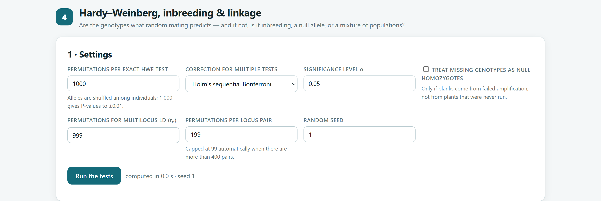
Figura 5.4. La tarjeta 1 · Settings con datos codominantes.
Tabla 5.5. Ajustes del Bloque 4.
Ajuste
Opciones
Recomendación
Permutations per exact HWE test
0 a 100 000 (predeterminado 1000). Solo codominantes.
Holm; Benjamini–Hochberg con muchos pares de loci.
Significance level α
0.001 a 0.2 (predeterminado 0.05).
0.05.
Treat missing genotypes as null homozygotes
Desactivada por omisión. Solo codominantes.
Actívala solo si los faltantes son fallas de amplificación.
Permutations for multilocus LD
0 a 9999 (predeterminado 999).
999.
Permutations per locus pair
0 a 9999 (predeterminado 199); baja a 99 con más de 400 pares.
199; con pocos pares, 999.
Random seed
Número entero.
Repórtala en los métodos.
Tabla 5.6. Tarjetas de resultados del Bloque 4. Las tarjetas 3 a 5 solo aparecen con datos codominantes.
Tarjeta
Contenido
Se descarga
2 · What the tests say
Cifras del conjunto, diagnóstico automático y lectura del ligamiento.
—
3 · Hardy–Weinberg tests, locus by population
La prueba elegida en Show para cada locus y población, con − (déficit) o + (exceso), la combinación de Fisher por locus y el mapa de desviaciones.
HWE, FIS and null alleles (CSV)
4 · Inbreeding coefficient FIS
FIS por población con intervalo y tasa de autofecundación; el diagnóstico locus por locus con su tabla y figura.
—
5 · Null alleles
Frecuencia de alelos nulos con el estimador elegido en Estimator, y su mapa de calor.
—
6 · Linkage disequilibrium
IA y r̄d por población y del conjunto; los pares de loci de la muestra elegida en Sample (los 40 de mayor r̄d), el triángulo de pares y la distribución de permutaciones.
All pairs (CSV)
Tabla 5.7. Las seis figuras del bloque. Se editan y exportan como se explica en el capítulo del Bloque 10.
Figura en la app
Qué muestra
Hardy–Weinberg tests at a glance
Cuadrícula locus × población coloreada por nivel de significancia, con − o +.
Inbreeding coefficient of every population
f multilocus con intervalo al 95 % y los FIS de cada locus como puntos tenues.
Inbreeding or null alleles? FIS locus by locus
El diagnóstico de la figura 5.2 con tus datos.
Estimated null allele frequencies
Mapa de calor locus × población del estimador elegido.
Pairwise linkage disequilibrium
Triángulo de r̄d, r² o D′ entre pares, con asteriscos en los significativos tras corregir; en gris, pares no definidos por un locus monomórfico.
Is the multilocus association more than chance?
Histograma de r̄d en las permutaciones con el valor observado.
5.6Paso a paso: maíz y agave
Maíz con microsatélites: el análisis completo
▸Paso a paso
En el Bloque 2 carga Maize populations · SSR, pulsa Build the dataset and run the checks y abre el Bloque 4 desde la barra de pasos o con Continue to Hardy–Weinberg al final del Bloque 3.
Las pruebas corren solas en menos de un segundo. Lee el diagnóstico en 2 · What the tests say (figura 5.5).
Revisa la tabla de pruebas exactas y su mapa (figuras 5.6 y 5.7). Cambia Show para ver P sin corregir, las pruebas de una cola o χ².
En 4 · Inbreeding coefficient FIS lee f con su intervalo y el diagnóstico locus por locus (figuras 5.8 a 5.10).
Revisa los alelos nulos con el menú Estimator (figura 5.11) y termina con el ligamiento; Sample cambia la raza de los pares (figuras 5.12 y 5.13).
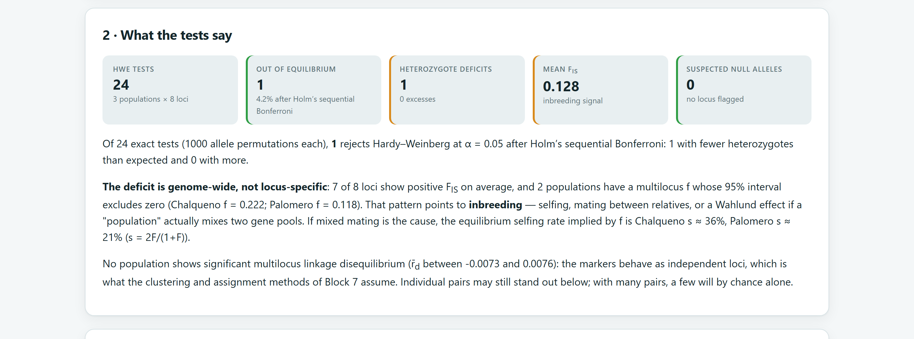
Figura 5.5.What the tests say. De 24 pruebas exactas, una rechaza el equilibrio tras la corrección de Holm. El diagnóstico concluye que el déficit es general: 7 de 8 loci tienen FIS positivo en promedio y dos razas tienen un f cuyo intervalo excluye cero. Es la conclusión correcta para estos datos simulados con endogamia y sin alelos nulos.
iNota · por qué Cónico no detecta la endogamia simulada
Las tres razas se simularon con F = 0.16, pero solo dos muestran un déficit claro. Con 25 plantas y 8 loci hay unos 190 genotipos por raza, y el número de heterocigotos varía de una muestra a otra: en Cónico salieron 133 donde se esperaban unos 117, casi 2.5 desviaciones estándar por encima. Es poco probable, pero con tres razas no es raro que una se aleje así. Es la razón para reportar siempre el intervalo y para no concluir “no hay endogamia” a partir de un intervalo que incluye cero: con más loci o más plantas, el intervalo se estrecha (tabla 5.8).
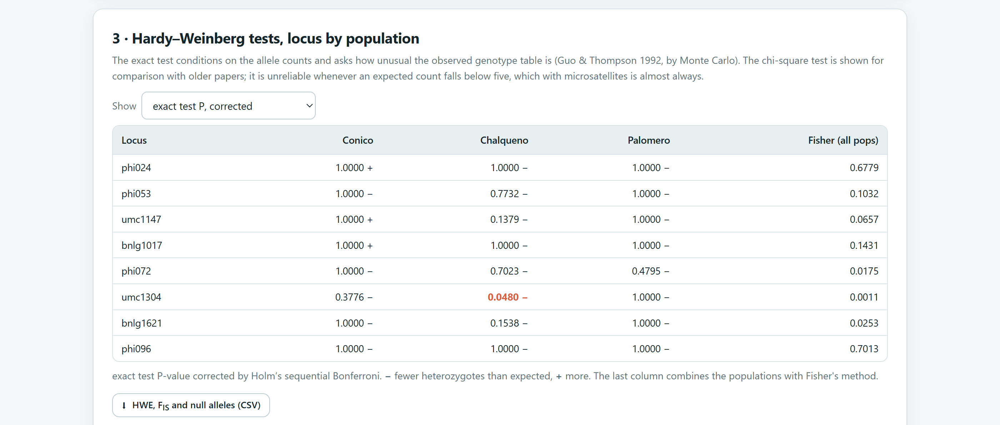
Figura 5.6. P exactas corregidas por Holm. Solo Chalqueño · umc1304 queda por debajo de 0.05 (en rojo). La columna de Fisher combina las tres razas: umc1304 (0.0011), phi072 (0.0175) y bnlg1621 (0.0253) tienen desviaciones que se repiten, aunque ninguna prueba individual lo muestre.
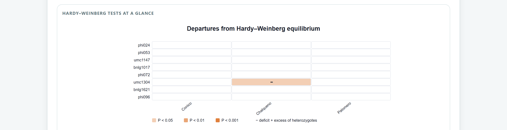
Figura 5.7.Hardy–Weinberg tests at a glance. Cada celda es una prueba; el color indica el nivel de significancia y el signo − un déficit. Con Test shown se cambia a P sin corregir, donde aparecen las 7 desviaciones nominales.
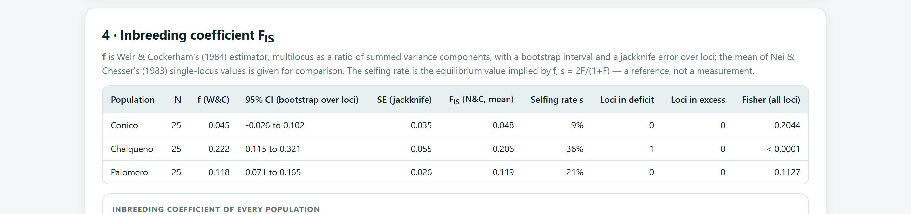
Figura 5.8. FIS por raza. Chalqueño (0.222, intervalo 0.115 a 0.321) y Palomero (0.118, de 0.071 a 0.165) tienen un déficit claro; sus tasas de autofecundación de equilibrio serían 36 % y 21 %. Cónico (0.045) no se distingue de cero.
Tabla 5.8. FIS multilocus del ejemplo contra el valor con el que se simularon los datos.
Raza
f (Weir y Cockerham)
IC 95 %
EE jackknife
FIS medio (N&C)
Simulado
¿Incluye el valor real?
Cónico
0.045
−0.026 a 0.102
0.035
0.048
0.16
No: esta muestra salió con pocos homocigotos por azar.
Chalqueño
0.222
0.115 a 0.321
0.055
0.206
0.16
Sí.
Palomero
0.118
0.071 a 0.165
0.026
0.119
0.16
Sí.
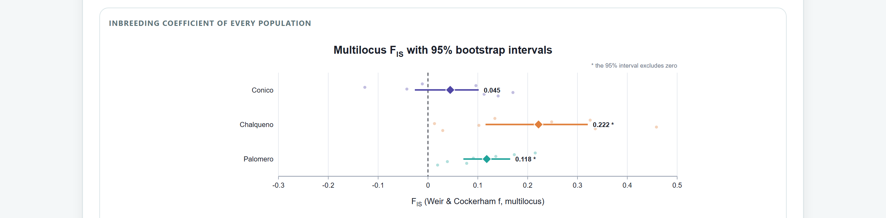
Figura 5.9.Inbreeding coefficient of every population. El rombo es f, la línea su intervalo al 95 % y los puntos tenues el FIS de cada locus; el asterisco marca los intervalos que excluyen cero.
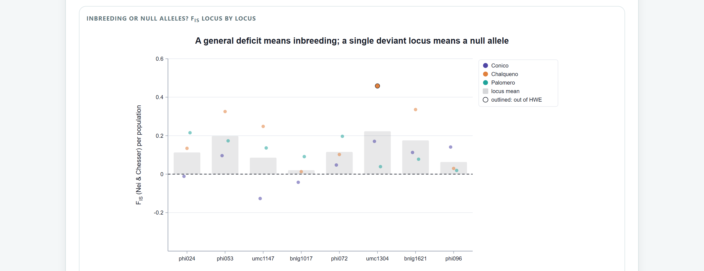
Figura 5.10. El diagnóstico con los datos del ejemplo. Casi todos los loci tienen barras por encima de cero, el patrón de endogamia de la figura 5.2. El único punto con contorno, Chalqueño · umc1304 (0.458), es significativo pero no se repite en Cónico (0.170) ni en Palomero (0.039), así que no se marca como alelo nulo.
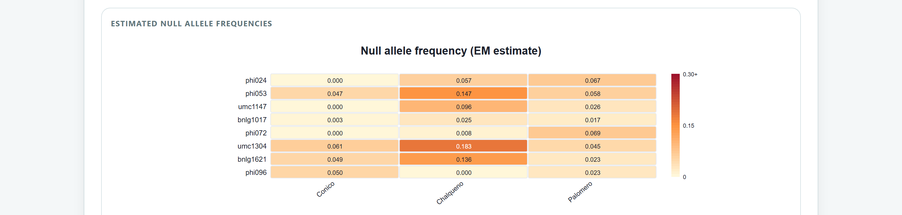
Figura 5.11. Frecuencias de alelos nulos por EM. Los valores más altos están en Chalqueño (0.183 en umc1304, 0.147 en phi053, 0.136 en bnlg1621), justo la raza con más endogamia: los estimadores leen el déficit general como si fueran nulos (recuadro Importante de la sección 5.2).
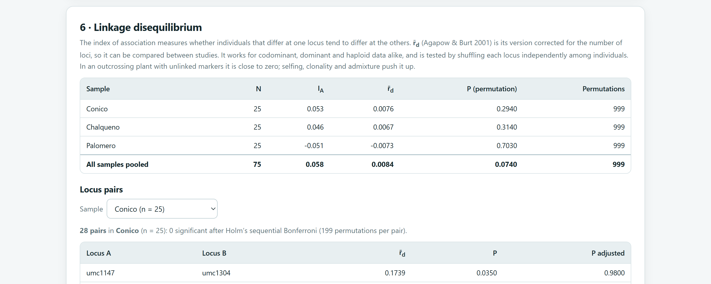
Figura 5.12. Ligamiento multilocus. r̄d va de −0.0073 a 0.0076 dentro de las razas y es 0.0084 en el conjunto; ningún valor es significativo. Entre los pares, 7 de 112 pruebas (28 pares en cada raza y en el conjunto) tienen P < 0.05 sin corregir, cerca de las 5.6 esperadas por azar, y ninguna pasa la corrección de Holm.
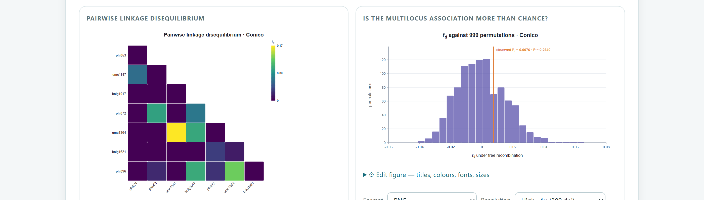
Figura 5.13. Izquierda: r̄d entre los 28 pares de loci en Cónico; el más alto, umc1147–umc1304 (0.174, P = 0.035), no resiste la corrección y no lleva asterisco. Derecha: el r̄d observado de Cónico (0.0076) cae en el centro de la distribución de 999 permutaciones (P = 0.294).
θLo que el ejemplo confirma
La endogamia simulada se detecta como déficit general, no como un problema de loci: ningún locus queda marcado como portador de alelos nulos.
La endogamia no crea ligamiento en estos datos, porque los genotipos se simularon locus por locus. En una especie autógama real, la autofecundación sí lo aumentaría, y ese es un criterio más para distinguirla del efecto de un alelo nulo.
Las pruebas individuales tienen poca potencia con 25 plantas por raza: con un F real de 0.16, solo una de 24 pruebas pasa la corrección. Por eso importan el FIS multilocus con intervalo y la combinación de Fisher.
Agave con AFLP: solo ligamiento
▸Paso a paso
Carga Agave · AFLP en el Bloque 2, construye el conjunto y abre el Bloque 4.
El aviso Dominant or haploid data explica que no hay pruebas de Hardy–Weinberg, FIS ni alelos nulos (figura 5.14).
El cálculo tarda unos segundos: 60 bandas dan 1770 pares por muestra.
Lee la interpretación y la tabla de ligamiento (figura 5.15) y explora los pares de cada población (figura 5.16).
Figura 5.14. El aviso que aparece en 1 · Settings con bandas. También desaparecen los ajustes de la prueba exacta y de los faltantes como nulos, que no aplican.
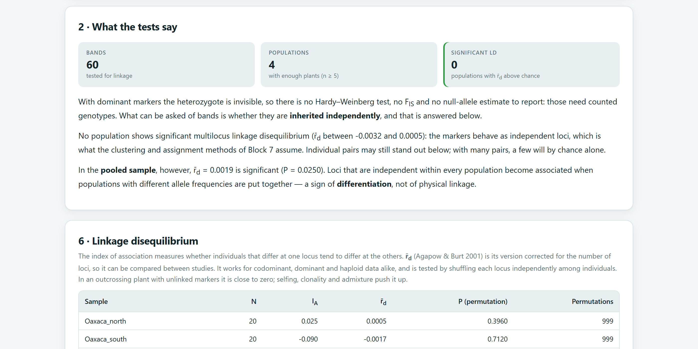
Figura 5.15. Dentro de las cuatro poblaciones de agave, r̄d va de −0.0032 a 0.0005 y ninguno es significativo: las bandas se heredan como loci independientes. En la muestra conjunta, en cambio, r̄d = 0.0019 es significativo (P = 0.025), porque juntar poblaciones con frecuencias distintas crea asociación entre bandas. Es una señal de diferenciación, que se mide en el Bloque 5.
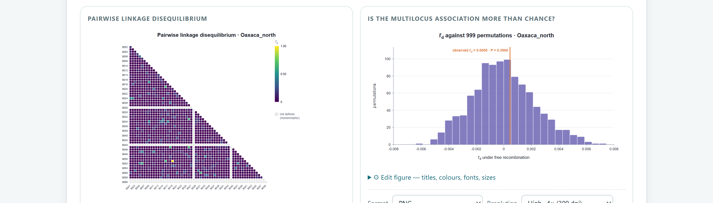
Figura 5.16. Los 1770 pares de bandas en Oaxaca norte. Las filas y columnas grises corresponden a las 4 bandas monomórficas en esa población, cuyo r̄d no está definido (230 pares). Ningún par es significativo tras la corrección; con tantos pares, conviene cambiar a Benjamini–Hochberg si se buscan candidatos a ligamiento.
iNota · qué reportar en un artículo
Para cada población: número de loci en desequilibrio tras la corrección (indica cuál usaste), FIS multilocus con su intervalo y, si lo interpretas como sistema de apareamiento, la tasa de autofecundación como referencia. Menciona los loci con posibles alelos nulos y si los excluiste en los análisis siguientes. Para el ligamiento, r̄d por población con su P. En los métodos, el número de permutaciones y la semilla. La descarga HWE, FIS and null alleles (CSV) trae todos los valores por locus y población con cinco decimales.
iNota · verificación de los cálculos
Para este manual, todos los estadísticos del ejemplo de maíz se recalcularon con código independiente: FIS de Nei y Chesser, f de Weir y Cockerham con su error jackknife, χ², los estimadores de Chakraborty y Brookfield, la corrección de Holm, IA y r̄d coinciden hasta el decimal 12. La prueba exacta se comparó contra la enumeración completa de todos los cuadros de genotipos posibles en los 14 casos con cinco alelos o menos, y contra 20 000 permutaciones en los otros 10. La mayor diferencia, en Cónico · bnlg1017 (0.089 contra 0.065 exacto), es azar de las 1000 permutaciones: con 100 000, la app da entre 0.064 y 0.067. El estimador EM coincide con una implementación propia hasta el noveno decimal.
Con los genotipos revisados y los loci problemáticos identificados, el siguiente capítulo pasa de la población individual al conjunto: el Bloque 5 mide cuánto difieren las poblaciones con FST, GST, D de Jost y el análisis de varianza molecular (AMOVA).
B5
Capítulo seis · Bloque 5 · AMOVA
Diferenciación y AMOVA
¿Cuánta de la variación genética separa a las poblaciones? ¿Qué pares difieren? ¿Las regiones que definiste agrupan de verdad a las poblaciones? El Bloque 5 calcula los estimadores clásicos y modernos de diferenciación (FST, GST, G′ST y D de Jost), el análisis de varianza molecular (AMOVA) con o sin regiones, las matrices por pares con sus pruebas y una conversión orientativa a número de migrantes.
6.1Medir la diferenciación
6.2AMOVA jerárquico
6.3Matrices por pares y flujo génico
6.4Reglas de decisión
6.5Ajustes, tablas y figuras del bloque
6.6Paso a paso: maíz, agave y pino
6.1Medir la diferenciación
Cuando las poblaciones intercambian pocos migrantes, la deriva cambia sus frecuencias alélicas en direcciones distintas y se van separando. La diferenciación mide cuánto se han alejado: compara la diversidad de cada población con la del conjunto.
θLa idea de FST, en una frase
Si las poblaciones fueran una sola, la diversidad dentro de ellas (HS) sería igual a la del conjunto (HT). Cuanto más difieren sus frecuencias, más diversidad “aparece” al juntarlas: FST = (HT − HS)/HT es la fracción de la diversidad total que se debe a las diferencias entre poblaciones. Vale 0 si todas tienen las mismas frecuencias y 1 si cada una está fija en un alelo distinto. Es el mismo razonamiento del efecto Wahlund del capítulo 4.
Figura 6.1. Tres poblaciones con un locus de dos alelos; la barra oscura es la frecuencia p del alelo A. En ambos casos la frecuencia media es 0.5, así que HT = 0.5. A la izquierda cada población conserva casi toda esa diversidad; a la derecha dos poblaciones están cerca de fijar alelos opuestos y HS baja a 0.287.
Cuatro estimadores y por qué no coinciden
GST tiene un techo: nunca puede superar 1 − HS, así que con marcadores muy diversos, como los microsatélites, queda cerca de cero aunque las poblaciones no compartan ni un alelo (figura 6.2). Hedrick (2005) propuso G′ST, que divide GST entre su máximo posible, y Jost (2008) propuso D, que mide directamente qué tan distintos son los conjuntos de alelos. Ninguno sustituye a los otros: miden cosas relacionadas pero diferentes (Meirmans y Hedrick, 2011).
Figura 6.2. El techo de GST. Con cinco alelos igual de frecuentes en cada población y ninguno compartido, GST (y también FST) vale 0.111, mientras que G′ST y D valen 1, su máximo. Por eso los microsatélites, con HS alta, dan FST pequeños aunque las poblaciones sean muy distintas.
Tabla 6.1. Estadísticos del Bloque 5. r es el número de poblaciones; HS y HT llevan las correcciones por tamaño de muestra de Nei y Chesser (1983).
Estadístico
Fórmula
Qué mide y cuándo usarlo
Intervalo
θ · FST Weir y Cockerham (1984)
σ²entre / σ²total, con componentes de varianza sumados sobre alelos y loci
Diferenciación como correlación entre alelos de la misma población. Corrige por tamaño y número de muestras. El estimador que se reporta y el que se relaciona con flujo génico y deriva.
≈ 0 a 1
θB bandas dominantes
θ para unidades haploides aplicado a presencia o ausencia de bandas
La misma idea con AFLP, ISSR o RAPD. Igual a ΦPT del AMOVA.
≈ 0 a 1
GST Nei (1973)
(HT − HS) / HT
Fracción de la diversidad total entre poblaciones. Útil para comparar con estudios antiguos; limitado por el techo 1 − HS.
0 a 1 − HS
G′ST Hedrick (2005)
GST (r − 1 + HS) / [(r − 1)(1 − HS)]
GST dividido entre su máximo posible: comparable entre marcadores con diversidad distinta.
0 a 1
D Jost (2008)
r/(r − 1) · (HT − HS) / (1 − HS)
Qué tan distintos son los conjuntos de alelos: 0 si son idénticos, 1 si no comparten ninguno. No informa sobre migración.
0 a 1
ΦST · ΦPT AMOVA
σ²entre poblaciones / σ²total
La diferenciación del AMOVA; ΦPT con bandas. Sin regiones, igual a θ o θB (sección 6.2).
≈ 0 a 1
Nm Wright
(1 − θ) / (4θ); (1 − θ) / (2θ) en haplotipos
Migrantes por generación que producirían ese θ en el modelo de islas. Solo un orden de magnitud (sección 6.3).
0 a ∞
iNota · cómo se combinan los loci
El θ multilocus es una razón de sumas: se suman los componentes de varianza de todos los loci y luego se divide, de modo que los loci más informativos pesan más. GST, G′ST y D se calculan con el promedio de HS y HT sobre loci, así los tres son comparables entre sí. Algunos estudios promedian en cambio los D de cada locus, con media aritmética o armónica; la app muestra ambas en la nota de la tabla por locus para que compares con el mismo tipo de promedio. Los intervalos al 95 % se obtienen remuestreando loci (bootstrap) y los errores estándar con jackknife sobre loci.
6.2AMOVA jerárquico
El análisis de varianza molecular (AMOVA; Excoffier, Smouse y Quattro, 1992) reparte las distancias genéticas al cuadrado entre los niveles del diseño de muestreo, igual que un análisis de varianza reparte la suma de cuadrados entre tratamientos y repeticiones. De cada nivel sale un componente de varianza y un estadístico Φ, que es la fracción de la variación que ese nivel explica.
Figura 6.3. Los niveles del AMOVA jerárquico con el diseño de la práctica de agave: dos regiones, dos poblaciones en cada una y 20 plantas por población. Con datos codominantes el nivel de las plantas se divide en “entre individuos” y “dentro de individuos”, lo que da ΦIS y ΦIT.
Tabla 6.2. Niveles del AMOVA en la app. N es el número de individuos, P el de poblaciones y G el de regiones.
Fuente de variación
g.l.
Estadístico Φ
Prueba: qué se permuta
Among regions
G − 1
ΦCT = σ²a / σ²
Poblaciones completas entre regiones.
Among populations within regions
P − G
ΦSC = σ²b / (σ²b + σ²c + σ²d)
Individuos entre las poblaciones de su misma región.
Among populations (sin regiones)
P − 1
ΦST (ΦPT con bandas)
Individuos entre todas las poblaciones.
Among individuals within populations
N − P
ΦIS = σ²c / (σ²c + σ²d)
Copias del gen entre individuos de la misma población.
Within individuals
N
ΦIT = (σ²a + σ²b + σ²c) / σ²
—
θLa distancia que usa el AMOVA según el marcador
Codominantes: entre dos copias del gen, 1 si llevan alelos distintos y 0 si iguales, sumado sobre loci. Sin regiones, ΦST, ΦIS y ΦIT son exactamente iguales a θ, f y F de Weir y Cockerham: son dos caminos hacia el mismo número.
Dominantes: entre dos plantas, el número de bandas en que difieren (Peakall, Smouse y Huff, 1995). Da ΦPT, igual a θB.
Haplotipos: 1 si dos secuencias llevan haplotipos distintos. El AMOVA que pondera cuántas mutaciones separan a los haplotipos está en el Bloque 8.
iNota · componentes negativos
Un componente de varianza puede salir negativo cuando un nivel no aporta variación y el azar del muestreo empuja la estimación por debajo de cero. No es un error del cálculo: se interpreta como cero. La app lo conserva en la tabla, para que la suma cuadre, y lo dibuja como cero en la figura.
▸Ejemplo numérico · de cuadrados medios a componentes
En la práctica de agave (sección 6.6) el diseño está balanceado: 2 regiones, 2 poblaciones por región, 20 plantas por población y sin datos faltantes. Los cuadrados medios son 45.60 entre regiones, 38.65 entre poblaciones dentro de regiones y 10.653 dentro de poblaciones. Cada cuadrado medio contiene los componentes de los niveles de abajo, multiplicados por el número de plantas que hay en cada unidad:
Con diseños desbalanceados los multiplicadores (20 y 40) se sustituyen por los coeficientes n, n′ y n″ de Excoffier y colaboradores (1992), y con datos faltantes la app los calcula locus por locus.
!Importante · con pocas poblaciones, ΦCT no puede ser significativo
La prueba de ΦCT permuta poblaciones completas entre regiones. Si hay pocas poblaciones, hay pocas formas distintas de repartirlas, y el valor P nunca baja de 1 entre ese número de formas, sin importar cuántas permutaciones pidas. La app calcula ese número y lo advierte (tabla 6.3). Con menos de unas 8 poblaciones, juzga el nivel regional por el tamaño de su componente, no por su P.
Tabla 6.3. Formas distintas de repartir las poblaciones entre regiones del mismo tamaño y P mínimo posible de ΦCT.
Diseño
4 pobl. en 2 + 2
4 en 3 + 1
6 en 3 + 3
8 en 4 + 4
10 en 5 + 5
12 en 4 + 4 + 4
Formas distintas
3
4
10
35
126
5775
P mínimo
0.33
0.25
0.10
0.029
0.008
0.0002
6.3Matrices por pares y flujo génico
La diferenciación global dice cuánto difieren las poblaciones en conjunto; las matrices por pares dicen cuáles. Para cada par la app calcula θ, Φ del AMOVA, GST, G′ST, D y Nm, y prueba θ y Φ permutando los individuos de las dos poblaciones. Como se hacen tantas pruebas como pares, los valores P se corrigen con el método de Holm (capítulo 5).
θDe FST a migrantes: el modelo de islas de Wright
Si muchas poblaciones del mismo tamaño intercambian migrantes al azar, a la misma tasa, durante el tiempo suficiente para alcanzar el equilibrio entre deriva y migración, FST ≈ 1/(1 + 4Nem) para genes nucleares de un organismo diploide, con marcadores codominantes o dominantes. Despejando, Nem ≈ (1 − FST)/(4FST). Para genomas haploides de herencia uniparental, como el cloroplasto, FST ≈ 1/(1 + 2Nem). La regla clásica dice que con más de un migrante por generación la deriva no alcanza a diferenciar mucho a las poblaciones. El capítulo 2 muestra esta relación con el simulador.
Tabla 6.4. Número de migrantes por generación que corresponde a cada FST en el modelo de islas.
FST
0.01
0.05
0.10
0.15
0.20
0.25
0.33
0.50
Nm, genes nucleares diploides
24.8
4.75
2.25
1.42
1.00
0.75
0.51
0.25
Nm, haplotipos
49.5
9.50
4.50
2.83
2.00
1.50
1.02
0.50
!Importante · Nm es una conversión, no una medición
Ninguna población real cumple el modelo de islas: los tamaños difieren, la migración es mayor entre vecinas, la diferenciación puede venir de un aislamiento antiguo y no de poca migración actual, y el equilibrio tarda muchas generaciones en alcanzarse. Por eso Nm sirve para decir “varios migrantes por generación” o “menos de uno”, no para dar un número exacto de semillas o granos de polen (Whitlock y McCauley, 1999). La app lo marca como indicative. Para el patrón geográfico de la diferenciación usa el aislamiento por distancia del Bloque 6.
6.4Reglas de decisión
✓Regla de decisión · ¿cuánta diferenciación es mucha?
FST o θ
Diferenciación
Lectura
Menor que 0.05
Poca
Las poblaciones comparten casi todas sus frecuencias; flujo génico abundante o separación reciente.
0.05 a 0.15
Moderada
Estructura clara pero no profunda. Frecuente en plantas alógamas con marcadores nucleares.
0.15 a 0.25
Grande
Poblaciones bien diferenciadas; poco intercambio o historia separada.
Mayor que 0.25
Muy grande
Común en especies autógamas, poblaciones aisladas y marcadores de cloroplasto.
Escala de Wright (1978). Se pensó para FST con marcadores de pocos alelos: con microsatélites, cuya HS es alta, un θ de 0.05 puede esconder poblaciones bastante distintas (figura 6.2), así que léelo junto con G′ST o D.
✓Regla de decisión · ¿qué estimador reportar?
Si tu pregunta es…
reporta…
Cuánta estructura hay y su relación con deriva y migración
θ (FST) con su intervalo, y ΦST o ΦPT del AMOVA con su P.
Qué tan distintos son los acervos de alelos, por ejemplo para conservación
D de Jost o G′ST, además de θ.
Comparar con otro estudio o con otro marcador
G′ST o D, que no dependen del techo de HS, y el mismo tipo de promedio de loci que usó el otro estudio.
Comparar con un estudio antiguo que solo dio GST
GST como referencia, advirtiendo su techo.
La recomendación general es no reportar un solo estimador: θ más D o G′ST cubren las dos lecturas (Meirmans y Hedrick, 2011).
✓Regla de decisión · leer el AMOVA con regiones
Si…
entonces…
ΦCT significativo y el componente de regiones mayor que el de poblaciones
La agrupación en regiones es real y captura la mayor parte de la estructura.
ΦCT y ΦSC significativos, poblaciones con más peso
Las regiones difieren, pero dentro de cada una las poblaciones difieren todavía más.
ΦSC significativo y ΦCT no
Las poblaciones difieren, pero no se agrupan según las regiones que definiste. Prueba una agrupación sugerida por los datos (Bloque 7).
Pocas poblaciones (tabla 6.3)
La prueba de ΦCT no puede dar significancia: lee el tamaño del componente.
Ninguno significativo
A esta escala, la especie se comporta casi como una sola población grande.
✓Regla de decisión · pares de poblaciones y migrantes
Si…
entonces…
La P corregida de un par es menor que 0.05
Las dos poblaciones difieren en frecuencias; trátalas como unidades distintas.
Nm mayor que 4
Flujo génico suficiente para mantenerlas parecidas.
Nm entre 1 y 4
Intercambio moderado; la deriva deja huella pero no las separa por completo.
Nm menor que 1
La deriva domina y las poblaciones divergen; prioridad para conservar cada una.
Todas las P corregidas son iguales y pequeñas
Es el mínimo posible con esas permutaciones (con 199 y 3 pares, 0.005 × 3 = 0.015). Sube las permutaciones para distinguirlas.
Los límites de Nm son orientativos y heredan todas las limitaciones del modelo de islas.
6.5Ajustes, tablas y figuras del bloque
El Bloque 5 se abre cuando hay al menos dos poblaciones con dos o más individuos cada una y marcadores moleculares; no aplica a caracteres morfológicos ni a razas con una sola muestra. Al entrar se calcula todo con los ajustes predeterminados; si cambias alguno, pulsa Compute differentiation.
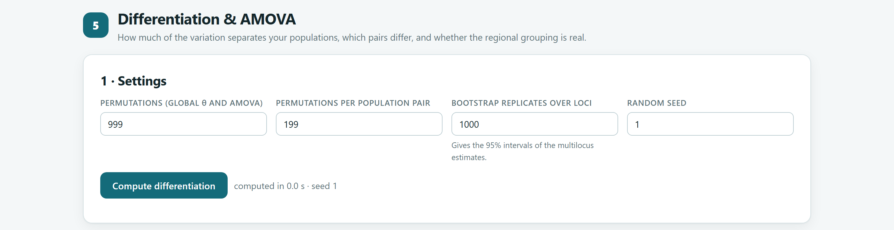
Figura 6.4. La tarjeta 1 · Settings con el maíz, que no tiene regiones. Las casillas del AMOVA jerárquico y de exclusión de loci aparecen solo cuando aplican (figura 6.13).
Tabla 6.5. Ajustes del Bloque 5.
Ajuste
Opciones
Recomendación
Permutations (global θ and AMOVA)
0 a 99 999 (predeterminado 999).
999; 9999 para el artículo.
Permutations per population pair
0 a 9999 (predeterminado 199).
199 para explorar; 999 si los pares son pocos.
Bootstrap replicates over loci
0 a 10 000 (predeterminado 1000).
1000. Requiere tres loci o más.
Hierarchical AMOVA (regions › populations)
Activada por omisión. Aparece si en el Bloque 2 hay dos regiones o más.
Desactívala para ver el AMOVA de un solo nivel.
Leave out the loci flagged for null alleles in Block 4
Aparece si el Bloque 4 marcó algún locus.
Corre con y sin los loci marcados y compara.
Random seed
Número entero.
Repórtala en los métodos.
iNota · cómo declarar regiones
La app toma las regiones de una columna de tus datos. Se reconoce sola si su nombre empieza con Region, Zone, Group, State, Estado, Area, Cluster, Subregion, Watershed, Province, País o Country; si no, asígnale el papel Region / group en el Bloque 2. Cada población debe pertenecer a una sola región. En archivos FASTA, la región puede ir en el nombre de la secuencia, como ID|población|región, o en una hoja de muestras.
Tabla 6.6. Tarjetas de resultados del Bloque 5.
Tarjeta
Contenido
Se descarga
2 · What the numbers say
Cifras principales e interpretación: nivel de diferenciación, techo de GST, regiones, endogamia y pares.
—
3 · Analysis of molecular variance
Tabla del AMOVA con grados de libertad, sumas de cuadrados, componentes, porcentajes, Φ y P, y la figura de la partición.
—
4 · Global F-statistics, locus by locus
HO, HS, HT, GST, G′ST, D, θ, f y F por locus, el valor multilocus con su intervalo y la figura por locus.
Per-locus statistics (CSV)
5 · Pairwise differentiation
Matriz del estadístico elegido en Statistic bajo la diagonal y P corregidas encima; mapa de calor y comparación de estimadores por par.
All pairs, all statistics (CSV)
Tabla 6.7. Las cuatro figuras del bloque. Se editan y exportan como se explica en el capítulo del Bloque 10.
Figura en la app
Qué muestra
AMOVA: where the molecular variance sits
Barra con el porcentaje de cada nivel y sus Φ con P.
Differentiation locus by locus
θ, GST, G′ST o D de cada locus, con el valor multilocus y su intervalo sombreado. Un locus muy por encima del intervalo resalta en otro color.
Pairwise differentiation
Mapa de calor del estadístico por pares, con los P corregidos en la mitad superior.
Four estimators, pair by pair
GST, G′ST, D y θ lado a lado para cada par, ordenados por D.
6.6Paso a paso: maíz, agave y pino
Maíz con microsatélites: diferenciación sin regiones
▸Paso a paso
En el Bloque 2 carga Maize populations · SSR, construye el conjunto y abre el Bloque 5 desde la barra de pasos o con Continue to F-statistics & AMOVA al final del Bloque 4.
El cálculo tarda alrededor de un segundo. Lee las cifras y la interpretación (figura 6.5).
Revisa la tabla y la figura del AMOVA (figuras 6.6 y 6.7).
En la tarjeta 4 compara los estimadores por locus y busca loci extremos (figuras 6.8 y 6.9).
Termina con los pares: cambia Statistic para ver cada estimador (figuras 6.10 a 6.12).
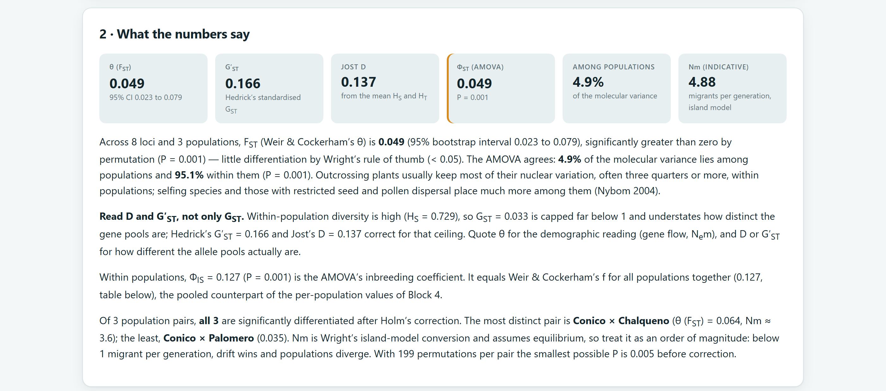
Figura 6.5.What the numbers say con las tres razas de maíz. θ = 0.049 es significativo, pero cae en la categoría de poca diferenciación; la interpretación advierte que con HS = 0.729 el GST de 0.033 está limitado por su techo, y que G′ST y D son varias veces mayores.
Tabla 6.8. Diferenciación multilocus de las tres razas de maíz (8 microsatélites, 75 plantas).
Estimador
Valor
IC 95 % (bootstrap)
EE (jackknife)
Lectura
θ (FST)
0.049
0.023 a 0.079
0.016
Poca a moderada; P = 0.001.
GST
0.033
0.016 a 0.054
0.011
Limitado por HS = 0.729.
G′ST
0.166
0.082 a 0.262
0.051
Cinco veces GST al corregir el techo.
D de Jost
0.137
0.067 a 0.218
0.043
Los acervos de alelos difieren bastante más de lo que sugiere θ.
f (FIS) · F (FIT)
0.127 · 0.169
0.083 a 0.169 · 0.136 a 0.204
0.024 · 0.019
Endogamia del conjunto, igual a ΦIS del AMOVA.
Nm
4.9
—
—
Varios migrantes por generación.
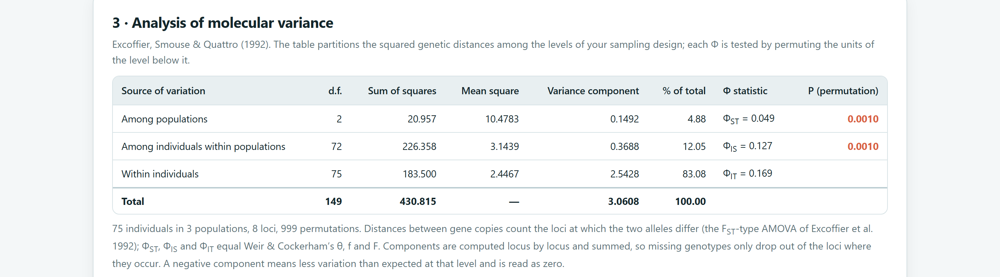
Figura 6.6. AMOVA de tres niveles. El 4.88 % de la variación está entre razas, el 12.05 % entre plantas de la misma raza y el 83.08 % dentro de cada planta. ΦST = 0.049, ΦIS = 0.127 y ΦIT = 0.169 coinciden exactamente con θ, f y F de la tabla 6.8.
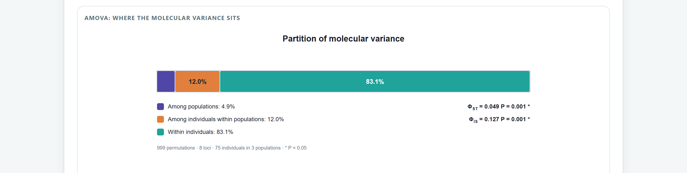
Figura 6.7.AMOVA: where the molecular variance sits. La franja pequeña de la izquierda es la variación entre razas; el asterisco marca los Φ significativos.
θCómo leer estos resultados
La mayor parte de la variación está dentro de las plantas. Es lo esperado en una planta alógama con microsatélites: cada planta lleva dos alelos distintos en la mayoría de sus loci.
Las razas difieren, aunque poco en términos de FST. El 4.9 % entre razas es significativo; G′ST = 0.166 y D = 0.137 muestran que sus acervos de alelos son más distintos de lo que el número pequeño de θ sugiere.
El nivel entre plantas confirma la endogamia del capítulo 5. ΦIS = 0.127 es el equivalente del conjunto a los f de 0.045, 0.222 y 0.118 de cada raza.
Nm ≈ 5 indicaría flujo génico abundante si las razas estuvieran en equilibrio; en razas de maíz, cuya diferenciación depende de la selección y el intercambio de semilla entre agricultores, tómalo solo como orden de magnitud.
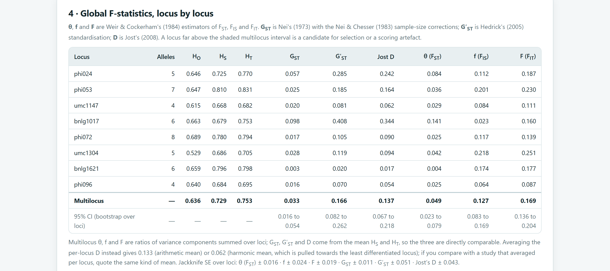
Figura 6.8.Global F-statistics, locus by locus. Debajo de la tabla, la nota muestra que promediar los D de cada locus daría 0.133 (media aritmética) o 0.062 (media armónica); la media armónica queda arrastrada por bnlg1621, con D = 0.017.
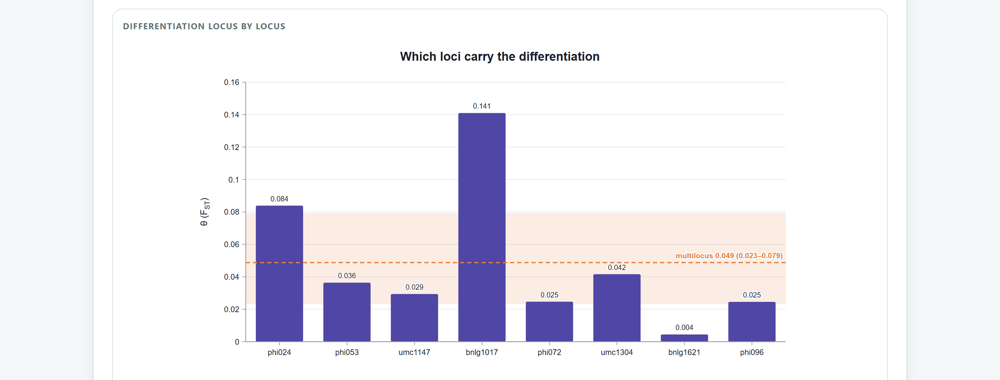
Figura 6.9. θ por locus con el valor multilocus (línea discontinua) y su intervalo sombreado. bnlg1017 (0.141) está casi tres veces por encima del multilocus y fuera del intervalo; bnlg1621 (0.004) casi no diferencia a las razas.
!Importante · un locus extremo no prueba selección
Un locus con FST muy por encima del resto puede estar ligado a un gen bajo selección, pero también puede deberse a alelos nulos, errores de lectura o simple azar: con 8 loci, alguno siempre queda en un extremo. En este ejemplo simulado, bnlg1017 no está bajo selección. Para afirmar selección se necesitan decenas o cientos de loci y pruebas específicas de loci atípicos; aquí basta con revisar sus geles y comprobar que las conclusiones no cambian si se excluye.
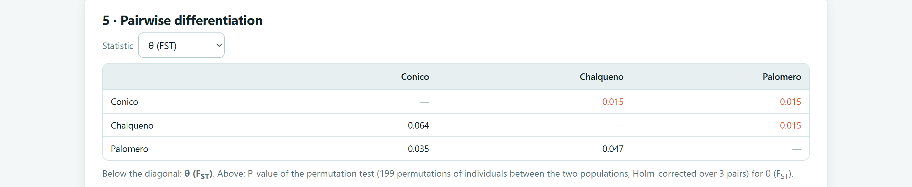
Figura 6.10. θ por pares bajo la diagonal y P corregidos por Holm encima. Los tres pares tienen P = 0.015, el mínimo posible con 199 permutaciones y tres pares.
Tabla 6.9. Diferenciación entre pares de razas de maíz.
Par
θ
GST
G′ST
D
Nm
P (Holm)
Cónico × Chalqueño
0.064
0.033
0.202
0.175
3.6
0.015
Chalqueño × Palomero
0.047
0.024
0.152
0.131
5.0
0.015
Cónico × Palomero
0.035
0.018
0.119
0.103
7.0
0.015
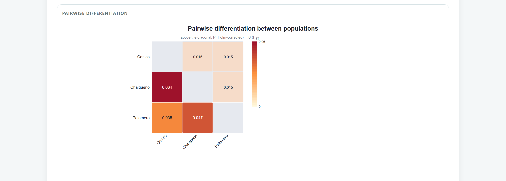
Figura 6.11.Pairwise differentiation. Chalqueño es la raza más distinta de las otras dos; Cónico y Palomero son las más parecidas.
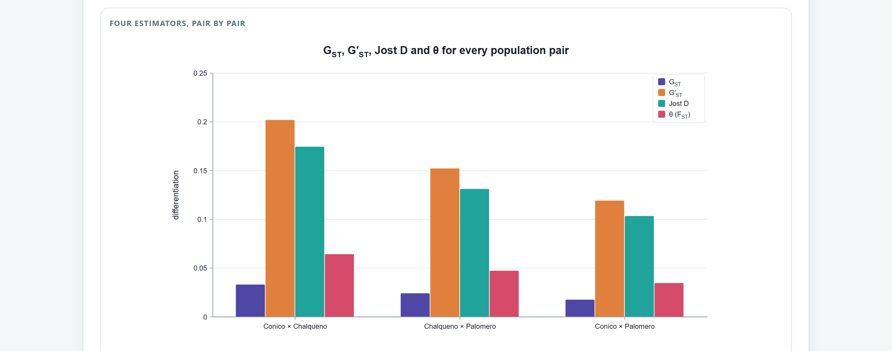
Figura 6.12.Four estimators, pair by pair. Los cuatro estimadores ordenan los pares igual, pero sus valores son muy distintos: GST y θ quedan bajos por el techo de la diversidad y G′ST y D, varias veces por encima.
Agave con AFLP y regiones: el AMOVA jerárquico
Ninguno de los ejemplos incluidos trae regiones, pero es fácil agregarlas al del agave con la hoja de datos integrada. Las plantas vienen ordenadas por población: las filas 2 a 41 son las dos poblaciones de Oaxaca y las filas 42 a 81, Puebla y Guerrero.
▸Paso a paso · agregar una columna de regiones
En el Bloque 2 carga Agave · AFLP, pulsa Open the data sheet y, en la hoja, the file loaded.
Haz clic en cualquier celda de la columna B (Population) y pulsa + right: se inserta una columna C vacía.
Escribe Region en C1 y Oaxaca en C2. Copia C2 con Ctrl+C, selecciona de C2 a C41 (clic en C2 y Shift+clic en C41) y pega con Ctrl+V: un valor pegado sobre un rango llena todo el rango.
Repite con Puebla-Guerrero de C42 a C81.
Pulsa Use these data →, revisa que la columna tenga el papel Region / group, construye el conjunto y abre el Bloque 5.
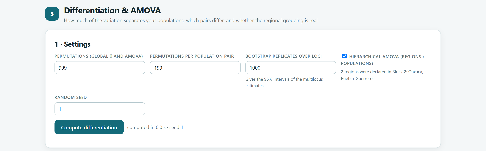
Figura 6.13. Con dos regiones declaradas aparece la casilla Hierarchical AMOVA (regions › populations), activada, con los nombres de las regiones.
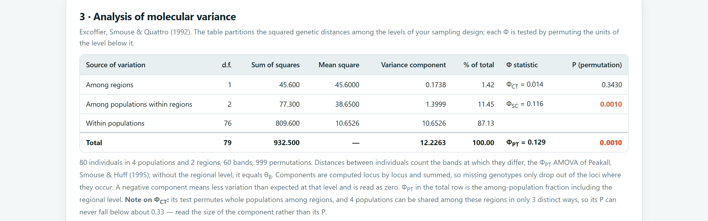
Figura 6.14. AMOVA jerárquico del agave. Las regiones explican el 1.42 % de la variación (ΦCT = 0.014, P = 0.343), las poblaciones dentro de regiones el 11.45 % (ΦSC = 0.116, P = 0.001) y el resto está dentro de las poblaciones. La nota advierte que con 4 poblaciones solo hay 3 formas de repartirlas entre dos regiones.
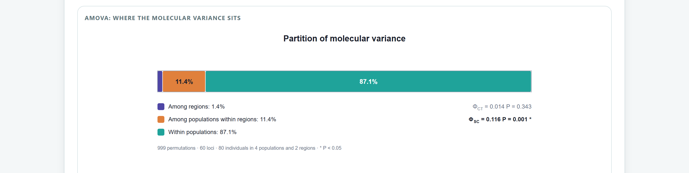
Figura 6.15. La partición con tres niveles. Con bandas dominantes no hay nivel dentro de individuos.
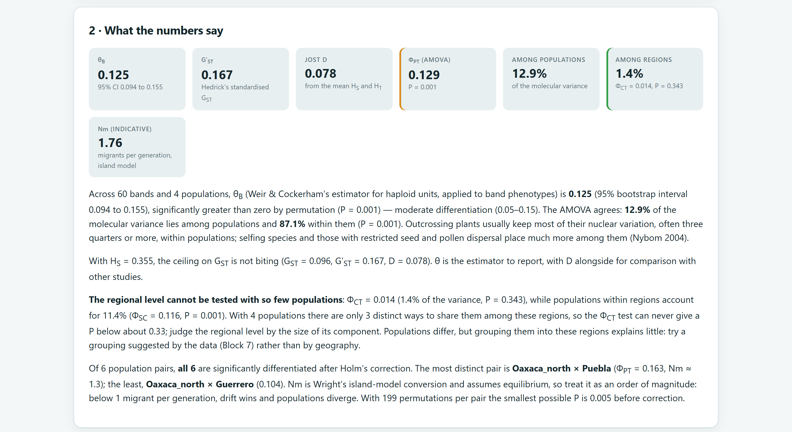
Figura 6.16. La interpretación con regiones. θB = 0.125 indica diferenciación moderada entre las cuatro poblaciones; los seis pares difieren. Sobre las regiones, la app concluye que el nivel regional no se puede probar con tan pocas poblaciones y que, por el tamaño de su componente, la agrupación geográfica explica poco.
θCómo leer estos resultados
La agrupación Oaxaca contra Puebla-Guerrero no captura la estructura. Las poblaciones de la misma región difieren entre sí casi tanto como las de regiones distintas: el par más distinto, Oaxaca norte × Puebla (θB = 0.163), cruza regiones, pero el menos distinto, Oaxaca norte × Guerrero (0.104), también.
Aunque se agregaran más permutaciones, P de ΦCT no bajaría de 0.33. Para probar regiones hacen falta más poblaciones por región.
Con bandas, D (0.078) queda por debajo de GST (0.096). HS = 0.355 es baja y el techo de GST no actúa; D y G′ST no necesitan corregir nada aquí.
ΦPT cambia un poco con regiones (0.129 contra 0.125 sin ellas), porque el diseño con regiones estima los componentes con otros coeficientes; sin regiones, ΦPT es igual a θB.
Nm ≈ 1.8 para el conjunto y entre 1.3 y 2.2 por pares: intercambio moderado.
Pino con ADN de cloroplasto: haplotipos
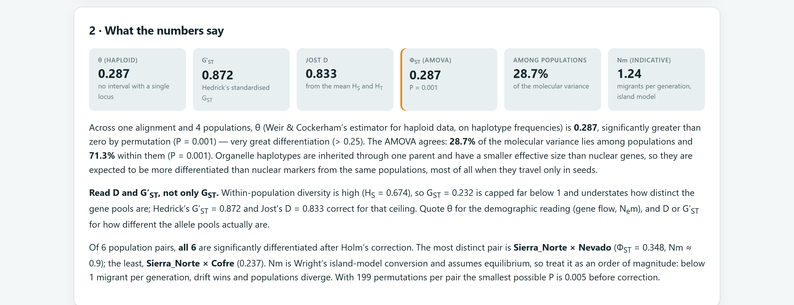
Figura 6.17. Con haplotipos, θ = 0.287 es diferenciación muy grande y el AMOVA pone el 28.7 % de la variación entre poblaciones. Como hay un solo alineamiento, no hay intervalo de bootstrap. G′ST = 0.872 y D = 0.833 muestran que las poblaciones casi no comparten haplotipos.
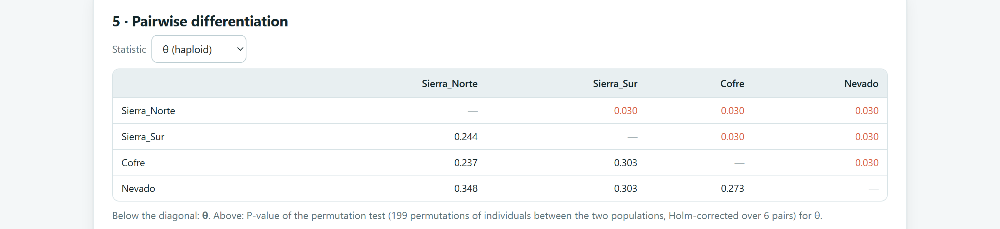
Figura 6.18. θ por pares en el pino; los seis pares difieren (P = 0.030 tras Holm, el mínimo con 199 permutaciones y seis pares).
Tabla 6.10. Pares de poblaciones de pino: θ, D y haplotipos compartidos.
Par
θ
D
Nm (haploide)
Haplotipos en común
Sierra Norte × Nevado
0.348
1
0.9
Ninguno
Sierra Sur × Cofre
0.303
1
1.2
Ninguno
Sierra Sur × Nevado
0.303
1
1.2
Ninguno
Cofre × Nevado
0.273
0.804
1.3
H5
Sierra Norte × Sierra Sur
0.244
0.646
1.5
H2 y H3
Sierra Norte × Cofre
0.237
0.582
1.6
H1
θPor qué D llega a 1 cuando θ no pasa de 0.35
Tres pares no comparten ningún haplotipo, así que sus acervos son totalmente distintos y D = 1. θ no llega a 1 porque cada población conserva tres haplotipos: dos secuencias de la misma población también suelen ser distintas, y θ mide la diferencia entre poblaciones en relación con la que hay dentro. Es el techo de la figura 6.2 con datos reales. Para el cloroplasto, que se hereda por un solo progenitor y tiene un tamaño efectivo menor que el de los genes nucleares, se espera una diferenciación mayor que con microsatélites de las mismas poblaciones.
iNota · qué reportar en un artículo
La tabla del AMOVA completa (g.l., sumas de cuadrados, componentes, porcentajes, Φ y P con el número de permutaciones); θ o θB con su intervalo, junto con D o G′ST; la matriz de pares con P corregidos e indicando el método de corrección; y, si lo usas, Nm como valor orientativo. Con regiones, indica cuántas poblaciones hay por región y cuántas formas distintas de repartirlas existen. Las descargas Per-locus statistics (CSV) y All pairs, all statistics (CSV) traen todos los valores con cinco decimales.
iNota · verificación de los cálculos
Para este manual, θ, f, F, HS, HT, GST, G′ST y D se recalcularon con código independiente para el maíz, por locus, en conjunto y por pares, y para el agave con la versión haploide y con un análisis de varianza sobre las bandas: las diferencias no pasan de 10−12. Las sumas de cuadrados del AMOVA se compararon con la suma directa de todas las distancias entre copias del gen o entre plantas, y el AMOVA jerárquico del agave con las fórmulas del diseño balanceado. Los coeficientes para diseños desbalanceados se comprobaron simulando 300 conjuntos con componentes conocidos: los promedios estimados fueron 0.0143, 0.0064 y 0.229 contra 0.0144, 0.0064 y 0.229 reales. Bajo la hipótesis nula, con poblaciones barajadas al azar, la prueba de θ dio P ≤ 0.05 en 3 de 60 conjuntos, lo esperado por azar.
El siguiente capítulo pasa de cuánto difieren las poblaciones a cómo se relacionan: el Bloque 6 calcula distancias genéticas, ordena poblaciones e individuos en una PCoA, construye árboles con soporte de bootstrap y prueba el aislamiento por distancia.
B6
Capítulo siete · Bloque 6 · Distance
Distancias, ordenación y árboles
¿Qué tan lejos están, genéticamente, las poblaciones y los individuos? El Bloque 6 lo mide con coeficientes de distancia y lo dibuja de tres maneras: como un mapa (análisis de coordenadas principales, PCoA), como un árbol con soporte de bootstrap y, si hay coordenadas, contra la geografía. Sus árboles pueden llevar imágenes de las OTU y quedar listos para publicar.
7.1Distancias genéticas
7.2Coordenadas principales (PCoA)
7.3Árboles NJ y UPGMA con bootstrap
7.4Árboles con imágenes de las OTU
7.5Mantel y aislamiento por distancia
7.6Ajustes, tablas y figuras del bloque
7.7Paso a paso: razas de maíz con ISSR
7.1Distancias genéticas
Una distancia genética resume en un solo número qué tan distintos son dos individuos o dos poblaciones. Con todas las distancias por pares se forma una matriz, y de esa matriz salen el mapa, el árbol y la comparación con la geografía.
Tabla 7.1. Distancias entre poblaciones. xi y yi son las frecuencias del alelo i en las dos poblaciones; JX = Σxi², JY = Σyi² y JXY = Σxiyi, promediados sobre loci.
Coeficiente
Fórmula
Cuándo usarlo
Nei (1972) distancia estándar
D = −ln [JXY / √(JXJY)]
El clásico. Crece con el tiempo de separación si hay equilibrio mutación–deriva. Su cociente es la identidad genética I.
Nei (1978) sin sesgo (predeterminado)
igual, con JX corregido: (2nJX − 1)/(2n − 1)
La opción general: corrige el sesgo de muestras pequeñas.
Cavalli-Sforza y Edwards (1967)
(2/π) √[2(1 − Σ√(xiyi))], promediado sobre loci
Para reconstruir el orden de ramificación cuando las poblaciones divergieron por deriva; recupera el árbol correcto con frecuencia (Takezaki y Nei, 1996).
Reynolds, Weir y Cockerham (1983)
√{ΣΣ(xi − yi)² / [2Σ(1 − Σxiyi)]}, sumas sobre loci y alelos
Basada en el coeficiente de coancestría; apropiada para divergencias recientes por deriva, sin mutación.
Rogers (1972)
√[Σ(xi − yi)²/2], promediado sobre loci
Euclidiana y acotada entre 0 y 1; útil con marcadores dominantes.
Prevosti y colaboradores (1975)
Σ|xi − yi|/2, promediado sobre loci
La proporción de alelos no compartidos; muy intuitiva.
DA neta solo secuencias (predeterminada)
dXY − (dX + dY)/2
Divergencia nucleotídica entre poblaciones descontando la de dentro de cada una (Nei y Li, 1979). Con una tasa de sustitución, estima tiempos de separación.
dXY solo secuencias
media de las distancias p entre secuencias de X y de Y
Divergencia total, sin descontar la variación interna.
▸Ejemplo numérico · un locus con dos alelos
La población X tiene frecuencias 0.8 y 0.2; la población Y, 0.3 y 0.7. Entonces JX = 0.8² + 0.2² = 0.68, JY = 0.58 y JXY = 0.8 × 0.3 + 0.2 × 0.7 = 0.38.
Los valores no se parecen entre sí porque cada coeficiente usa otra escala: nunca compares números de coeficientes distintos. Con loci de dos alelos o bandas, Rogers y Prevosti dan siempre lo mismo.
θDos niveles, dos tipos de distancia
Entre poblaciones se comparan frecuencias alélicas: dos poblaciones con los mismos alelos en las mismas proporciones están a distancia cero, aunque cada planta sea distinta. Entre individuos se comparan genotipos o perfiles de bandas planta por planta. La app calcula ambas con tres o más poblaciones de varios individuos; con una muestra por unidad (las razas con ISSR), todo se hace entre las unidades, y con caracteres morfológicos, entre las plantas.
Distancias entre individuos
Tabla 7.2. Distancias entre individuos según el tipo de dato.
Datos
Coeficiente
Qué cuenta
Codominantes
Smouse y Peakall (1999) (predeterminado)
Distancia genotípica al cuadrado, locus por locus (tabla 7.3), sumada y reescalada si falta algún locus. Es la distancia del AMOVA.
Alelos compartidos (Bowcock y colaboradores, 1994)
1 − (alelos compartidos / 2), promediado sobre loci.
Dominantes
Jaccard (predeterminado)
Bandas distintas / bandas presentes en al menos una planta. Ignora las ausencias compartidas.
Dice (Nei y Li, 1979)
Como Jaccard, pero da doble peso a las bandas compartidas.
Coincidencia simple
Proporción de bandas distintas, contando también las ausencias compartidas.
Euclidiana al cuadrado
Número de bandas distintas; la distancia del AMOVA con bandas.
Secuencias
Distancia p
Proporción de sitios distintos; los sitios con hueco o base ambigua se omiten par por par.
Caracteres
Gower (1971)
Diferencia en cada carácter dividida entre su intervalo; 0 o 1 en caracteres de texto; promedio sobre caracteres.
Tabla 7.3. Distancia de Smouse y Peakall entre dos genotipos diploides en un locus. Las letras son alelos distintos.
Genotipos
AA · AA
AB · AB
AA · AB
AB · AC
AB · CD
AA · BC
AA · BB
Distancia
0
0
1
1
2
3
4
θSecuencias: identidad de haplotipos o divergencia nucleotídica
Las distancias de frecuencias solo preguntan si dos haplotipos son idénticos: si dos poblaciones no comparten ninguno, la distancia de Nei es infinita, aunque los haplotipos difieran en una sola base. Con secuencias, la app usa por omisión la divergencia nucleotídica neta DA, que sí mide cuántos sitios separan a las poblaciones, y remuestrea los sitios del alineamiento para el bootstrap. En el pino, 3 de los 6 pares de poblaciones no comparten haplotipos: la distancia de Nei es infinita, mientras que DA va de 0.0033 a 0.0068 (de 1.6 a 3.3 sitios netos en 480).
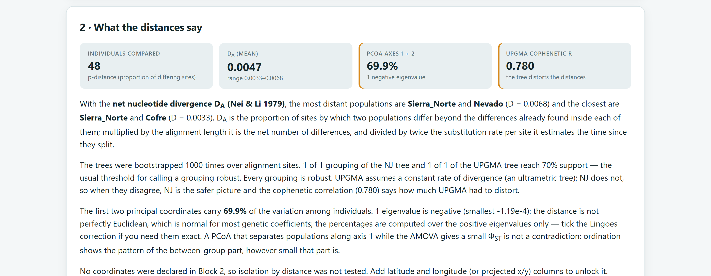
Figura 7.1. Con el pino, la app elige DA. Sierra Norte y Nevado son las poblaciones más divergentes (0.0068) y Sierra Norte y Cofre las más cercanas (0.0033); esa agrupación tiene 87 % de soporte al remuestrear los sitios.
7.2Coordenadas principales (PCoA)
El análisis de coordenadas principales (Gower, 1966) convierte una matriz de distancias en un mapa: busca los ejes en los que las distancias entre puntos reproducen las distancias genéticas lo mejor posible. El primer eje recoge la mayor parte de la variación, el segundo la mayor parte de lo que queda, y así sucesivamente. A diferencia de un análisis de componentes principales, funciona con cualquier coeficiente, por eso es la ordenación habitual en genética de poblaciones.
Figura 7.2. PCoA de cuatro unidades hipotéticas, calculada con la app. El primer eje (90 % de la variación) separa los dos pares, la diferencia más grande de la matriz; el segundo (7 %) separa sobre todo a C de D, que están más lejos entre sí (0.3) que A y B (0.2).
θValores propios negativos y corrección de Lingoes
Si una distancia es euclidiana, se puede dibujar sin deformarla y todos los valores propios de la PCoA son positivos. Muchas distancias genéticas no lo son (Jaccard, Nei, Gower), y aparecen algunos valores propios negativos: son variación que ningún mapa puede representar. La app calcula los porcentajes sobre los valores propios positivos y lo avisa. La corrección de Lingoes suma una constante a las distancias al cuadrado para volverlas euclidianas; así los porcentajes son exactos, aunque algo menores. Las distancias de Smouse y Peakall y la euclidiana al cuadrado de bandas ya están al cuadrado, y la app las usa tal cual.
✓Regla de decisión · leer una PCoA
Si…
entonces…
Los ejes 1 y 2 suman más de 50 %
El mapa es un buen resumen: las cercanías en el plano reflejan la matriz.
Suman menos de 25 %
Lo habitual con individuos y marcadores muy variables. El mapa muestra tendencias; dos puntos cercanos pueden ser distintos en otros ejes. Revisa también el eje 3.
Las elipses de las poblaciones se traslapan mucho
Diferenciación baja, coherente con un FST pequeño (capítulo 6). No es contradictorio que el AMOVA sea significativo.
Un individuo cae en la nube de otra población
Posible migrante, error de etiqueta o mezcla; compruébalo con la asignación del Bloque 7.
Hay muchos valores propios negativos grandes
Activa la corrección de Lingoes antes de reportar porcentajes.
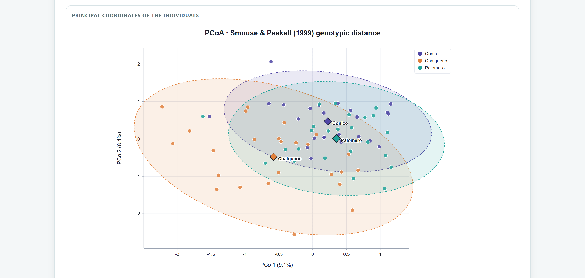
Figura 7.3. PCoA de las 75 plantas de maíz (Smouse y Peakall), con elipses al 95 % y centroides. Los ejes 1 y 2 suman 17.5 %, lo normal con individuos. Chalqueño se separa a la izquierda; Cónico y Palomero, las razas más cercanas (D de Nei 0.114), se traslapan.
7.3Árboles NJ y UPGMA con bootstrap
Un árbol dibuja la matriz como una jerarquía de agrupamientos. La app construye dos, con poblaciones y con individuos: UPGMA (Sokal y Michener, 1958) une primero los pares más cercanos y promedia las distancias; supone que todas las ramas evolucionan a la misma tasa, así que da un árbol con raíz y todas las puntas a la misma altura. Neighbour-joining (NJ; Saitou y Nei, 1987) no hace ese supuesto: permite ramas de longitudes distintas y produce un árbol sin raíz, que la app enraíza en el punto medio o en un grupo externo.
Figura 7.4. Los dos métodos con los mismos cuatro OTU. UPGMA fuerza a que todos lleguen a la misma altura; NJ deja que cada linaje tenga su propia tasa. Cuando no coinciden, NJ es la imagen más segura.
θQué significa el soporte de bootstrap
El bootstrap (Felsenstein, 1985) repite el análisis 1000 veces con loci remuestreados con reemplazo (bandas en dominantes y sitios del alineamiento en secuencias). En cada repetición se construye un árbol nuevo y se anota qué agrupaciones aparecen. El número en una rama es el porcentaje de repeticiones en que reaparece la misma agrupación: mide qué tanto depende esa agrupación de unos pocos loci, no la probabilidad de que sea verdadera. La app lo calcula para los árboles de poblaciones y también para los árboles de individuos cuando son 60 o menos, como las razas con una muestra cada una o las especies de un alineamiento.
✓Regla de decisión · soporte y ajuste del árbol
Si…
entonces…
Soporte de 70 % o más
Agrupación robusta a los loci muestreados; se puede describir.
Soporte de 50 a 70 %
Agrupación débil; menciónala como tendencia.
Soporte menor de 50 %
No interpretes el orden de ramificación. La app lo oculta por omisión.
Solo tres poblaciones
Un árbol sin raíz de tres puntas no tiene ramas internas que probar: solo muestra longitudes. La app lo dice.
Correlación cofenética de UPGMA mayor que 0.85
El árbol reproduce bien las distancias. Menor: el árbol las deforma; prefiere NJ y la PCoA.
Con pocos loci, el soporte bajo es lo normal y no significa que el árbol esté mal: significa que los datos no alcanzan para resolverlo. Las ramas de longitud cero (unidades idénticas) no reciben soporte, porque el orden en que se unen es arbitrario.
Un árbol con respuesta conocida
El ejemplo de los cinco géneros se simuló sobre un árbol conocido: el grupo externo Exterocarpus, y dentro del grupo interno (Fictaria, Modelanthus) y (Demoxylon, (Probocarpa, Testiflora)). El árbol NJ de géneros con DA recupera exactamente esa topología, con soportes de 94, 100 y 99 %.
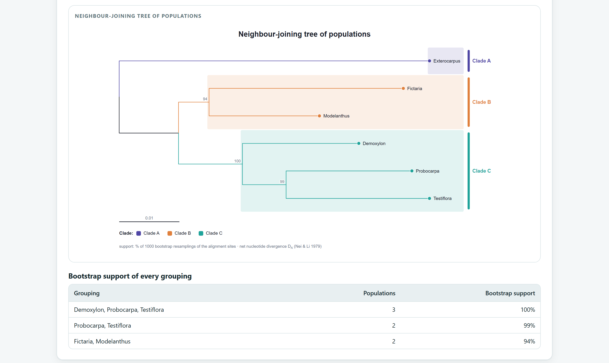
Figura 7.5. Árbol NJ de los géneros con la divergencia nucleotídica neta DA, enraizado en el punto medio, y su tabla de soportes. Las tres agrupaciones coinciden con el árbol con que se simularon los datos; la correlación cofenética de UPGMA es 0.943.
iNota · la raíz del árbol
NJ produce un árbol sin raíz. La app lo muestra enraizado en el punto medio del camino más largo entre dos puntas, que es una buena opción cuando las tasas son parecidas. Si conoces un grupo externo, escríbelo en Outgroup tips con Root en outgroup; la raíz de un árbol de poblaciones de una misma especie casi nunca tiene significado evolutivo, y en ese caso conviene la disposición unrooted.
7.4Árboles con imágenes de las OTU
Los árboles del bloque se editan en un estudio completo: disposición rectangular, circular o sin raíz; clados coloreados por población, región o cortados del árbol; anillos con la población, la región o la ancestría del Bloque 7; e imágenes de cada punta o grupo junto a su rama. Las imágenes se guardan en el navegador, ligadas al archivo de datos, y no salen de la computadora.
▸Paso a paso · añadir imágenes a un árbol
En la tarjeta 6 · Trees elige el árbol en Tree y pulsa 🖼 Images of the OTUs….
La lista muestra los grupos (poblaciones o regiones) y las puntas. Elige un nombre y arrastra su imagen al recuadro, o pulsa Add several images… para cargar varias a la vez: se asignan por nombre de archivo.
Ajusta el encuadre (zoom, desplazamiento, giro), el tono y, si la foto tiene un fondo liso, Remove a plain background.
Escribe la fuente y la licencia, y marca la confirmación de que la imagen muestra exactamente ese taxón. Sin esa marca, la imagen no se dibuja.
Cierra con Done, abre Edit figure y en Images elige one per tip o one per group or clade.
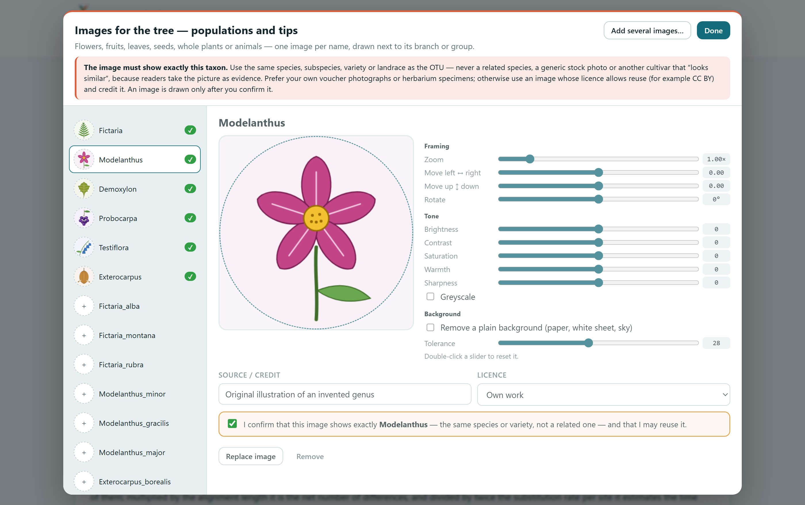
Figura 7.6. El gestor de imágenes. A la izquierda, los nombres con su estado (✓ confirmada); a la derecha, el encuadre, los ajustes de tono y fondo, la fuente, la licencia y la confirmación. Las ilustraciones de este ejemplo son dibujos originales hechos para el manual, porque los géneros del ejemplo son inventados.
!Importante · la imagen es evidencia
Quien lee un árbol con fotografías entiende que cada foto muestra ese taxón. Usa solo imágenes de la misma especie, variedad o raza: tus propias fotos, ejemplares de herbario o imágenes con licencia que permita reutilizarlas (por ejemplo CC BY), y da el crédito. Nunca una especie “parecida” ni una foto genérica. La app pide confirmarlo para cada imagen y guarda la fuente y la licencia para citarlas.
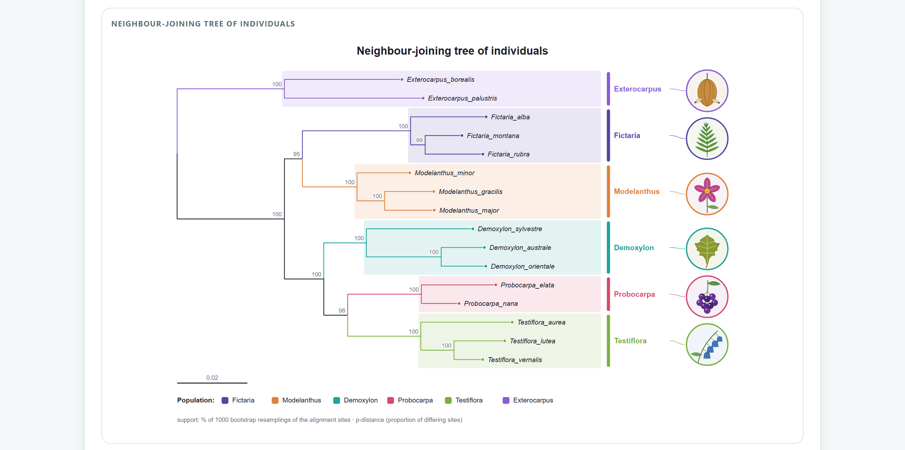
Figura 7.7. Árbol NJ de las 16 especies, enraizado con el grupo externo Exterocarpus, coloreado por género y con una imagen por género. Todas las agrupaciones del árbol tienen soporte de 95 % o más al remuestrear los 1600 sitios del alineamiento.
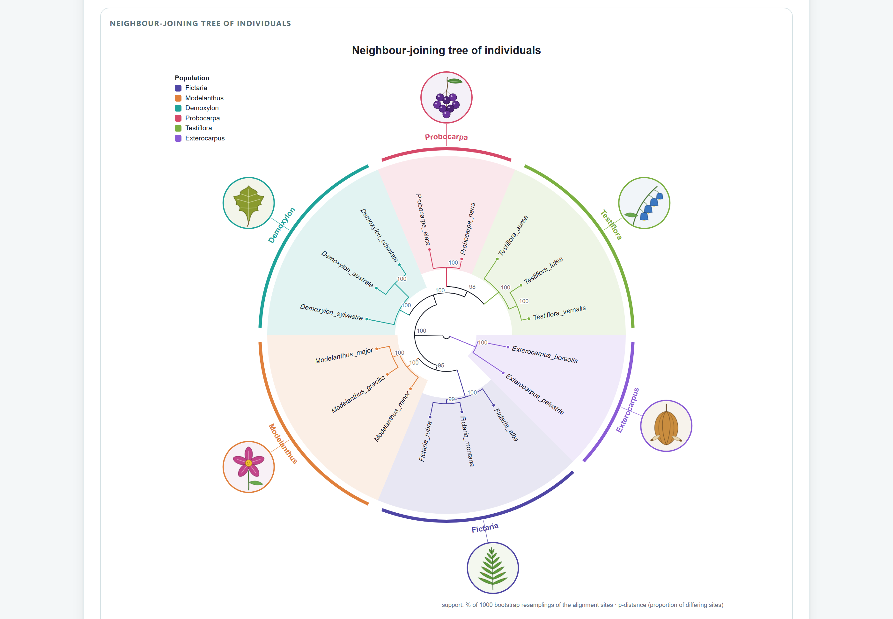
Figura 7.8. El mismo árbol en disposición circular y enraizado en el punto medio, con los clados sombreados, arcos con el nombre de cada género y nombres en cursiva. Se exporta como cualquier figura (PNG, TIFF, SVG, JPG o WEBP) con las imágenes incluidas.
Tabla 7.4. Opciones principales del estudio de árboles (Edit figure).
Opción
Para qué sirve
Layout
Rectangular (predeterminada hasta 25 puntas), circular o sin raíz (equal angle).
Root · Outgroup tips
Raíz tal como se calculó, en el punto medio o en un grupo externo (árboles NJ).
Colour · Number of clades
Colorear por población o región, o cortar el árbol en k clados con nombres propios.
Ring: Population · Ring: Region · Ring: Ancestry (Block 7)
Anillos con la población o la región de cada individuo, o con sus proporciones de ancestría del Bloque 7.
Images · Image size · Image frame
Una imagen por punta o por grupo, su tamaño, marco y líneas guía.
Support · Hide support below (%)
Soporte como puntos o números, y el umbral bajo el cual se oculta.
Italic names · Branch lengths
Nombres científicos en cursiva; ramas proporcionales o puntas alineadas (cladograma).
7.5Mantel y aislamiento por distancia
Si las semillas y el polen viajan poco, las poblaciones cercanas intercambian más migrantes que las lejanas y se parecen más. Ese patrón se llama aislamiento por distancia. La prueba de Mantel (1967) mide la correlación entre la matriz de distancias genéticas y la de distancias geográficas, y la prueba permutando las filas y columnas de una de ellas. La app calcula las distancias geográficas por el gran círculo a partir de la latitud y la longitud.
θLa regresión de Rousset
Rousset (1997) mostró que, en dos dimensiones, FST/(1 − FST) crece en línea recta con el logaritmo de la distancia, y que la pendiente es 1/(4Dπσ²), donde D es la densidad de plantas y σ² la dispersión media al cuadrado entre padres e hijos. Por eso la app grafica θ/(1 − θ) de cada par de poblaciones contra ln(distancia) y prueba esa relación con Mantel. Una pendiente positiva y significativa indica aislamiento por distancia; su valor permite estimar el vecindario genético si se conoce la densidad.
✓Regla de decisión · aislamiento por distancia
Si…
entonces…
Pendiente positiva y Mantel significativo entre poblaciones
Aislamiento por distancia: el flujo génico disminuye con la distancia.
No significativo
La distancia no predice la diferenciación a esta escala: flujo génico amplio, estructura por otra causa (hábitat, altitud, historia) o pocas poblaciones.
Pocas poblaciones (6 o menos)
Con n poblaciones solo hay n! formas de reordenarlas; con 4, el P mínimo es 1/24 ≈ 0.04. Lee la pendiente y la figura, no el P.
Mantel significativo solo entre individuos
Los pares de la misma población están cerca y se parecen, así que la correlación refleja sobre todo las diferencias entre poblaciones. La estructura espacial fina se estudia en el Bloque 9.
Figura 7.9. Aislamiento por distancia en las cuatro poblaciones de agave, separadas entre 152 y 389 km. La pendiente de Rousset es negativa (−0.050; Mantel r = −0.62, P = 0.92): no hay aislamiento por distancia. Entre plantas individuales la correlación es positiva (r = 0.19, P = 0.001), pero se debe a que las plantas de una misma población comparten coordenadas y se parecen; a la derecha se ven las columnas de pares de cada distancia.
iNota · coordenadas
La tarjeta 7 · Isolation by distance aparece cuando el archivo trae latitud y longitud (Bloque 2) para al menos 4 individuos. En grados decimales se usa la distancia de gran círculo en kilómetros; si los valores no caben en grados (coordenadas proyectadas, por ejemplo UTM), se usan como distancias euclidianas en las unidades del mapa. La prueba entre poblaciones usa el centroide de cada población y necesita que todas tengan coordenadas.
7.6Ajustes, tablas y figuras del bloque
El Bloque 6 se abre con tres o más unidades, con cualquier tipo de dato. Al entrar se calcula todo con los ajustes predeterminados; si cambias alguno, pulsa Compute distances, ordination and trees.
Tabla 7.5. Ajustes del Bloque 6.
Ajuste
Opciones
Recomendación
Distance between populations
Los coeficientes de la tabla 7.1. Aparece con tres o más poblaciones replicadas.
Nei (1978); DA con secuencias.
Distance between individuals
Según el tipo de dato (tabla 7.2).
El predeterminado de cada tipo.
Bootstrap replicates over loci
0 a 10 000 (predeterminado 1000); dice bands o alignment sites según los datos.
1000.
Lingoes correction for negative eigenvalues
Desactivada por omisión.
Actívala para reportar porcentajes exactos.
Mantel permutations
0 a 9999 (predeterminado 999).
999; 9999 para el artículo.
Random seed
Número entero.
Repórtala en los métodos.
Tabla 7.6. Tarjetas de resultados del Bloque 6.
Tarjeta
Contenido
Se descarga
2 · What the distances say
Cifras e interpretación: pares más y menos distantes, soporte de los árboles, PCoA y aislamiento por distancia.
—
3 · Distances between populations
Matriz del coeficiente elegido (con la identidad I de Nei), todos los coeficientes par por par y el mapa de calor.
Population matrix (CSV)
4 · Distances between individuals
Resumen y, hasta 30 unidades, la matriz completa.
Individual matrix (CSV)
5 · Principal coordinates
Valores propios y porcentajes, PCoA de individuos y de poblaciones, y la gráfica de valores propios.
Scores of every unit (CSV)
6 · Trees
Árboles NJ y UPGMA de poblaciones y de individuos, con el estudio de árboles y la tabla de soporte.
Newick
7 · Isolation by distance
Distancias geográficas y θ por par, y las gráficas entre poblaciones y entre individuos.
—
7.7Paso a paso: razas de maíz con ISSR
Las 15 razas de maíz tienen una muestra compuesta cada una y 31 bandas ISSR. No hay poblaciones con réplicas, así que el Bloque 6 trabaja entre las razas: es el análisis central para este tipo de datos.
▸Paso a paso
En el Bloque 2 carga Maize landraces · ISSR, construye el conjunto y abre el Bloque 6.
Un aviso explica que el análisis se hace entre razas; la distancia es Jaccard y el bootstrap se hace sobre bandas (figura 7.10).
Lee las cifras y la interpretación (figura 7.11) y revisa la matriz de distancias (figura 7.12).
Explora la PCoA y la gráfica de valores propios (figuras 7.13 y 7.14).
Revisa el árbol NJ y su tabla de soportes (figuras 7.15 y 7.16); en Tree compara con UPGMA.
Figura 7.10. Ajustes con las razas de maíz. No aparece la distancia entre poblaciones y el bootstrap se hace sobre las bandas.Figura 7.11.What the distances say. 15 razas comparadas con Jaccard; los dos primeros ejes de la PCoA suman 49.2 %, y solo 1 de las 12 agrupaciones del árbol NJ alcanza 70 % de soporte.Figura 7.12. Parte de la matriz de Jaccard (media 0.488). El par más parecido es Arrocillo–Chiquito (0.176) y el más distinto Arrocillo–Chapalote (0.737).
Tabla 7.7. Vecino más cercano de cada raza según Jaccard.
Raza
Más parecida
Distancia
Raza
Más parecida
Distancia
Arrocillo
Chiquito
0.176
Cacahuacintle
Bolita
0.286
Ancho
Apachito
0.214
Chalqueño
Cacahuacintle
0.308
Azul
Bolita
0.235
Bofo
Azul
0.333
Comiteco
Chiquito
0.263
Blando Sonora
Cónico
0.375
Celaya
Bofo
0.375
Chapalote
Ancho
0.385
Figura 7.13. PCoA de las razas. El primer eje (29.3 %) va de Chalqueño, Celaya y Cacahuacintle a la izquierda hasta Arrocillo, Chiquito y Apachito a la derecha; el segundo (19.9 %) separa hacia abajo a Chapalote, Ancho y Apachito. Las etiquetas se reparten solas para no encimarse.Figura 7.14. Variación de cada eje y acumulada (Σ). Hay 3 valores propios negativos pequeños (el menor, −0.034); con la corrección de Lingoes los tres primeros ejes pasan a 25.3, 17.7 y 14.1 %.Figura 7.15. Árbol NJ enraizado en el punto medio y cortado en tres clados. El clado A reúne a Comiteco, Arrocillo, Chiquito, Chapalote, Ancho y Apachito, las mismas razas del extremo derecho e inferior de la PCoA. Solo Arrocillo–Chiquito (84 %) y Ancho–Apachito (65 %) superan el 50 % de soporte.Figura 7.16.Bootstrap support of every grouping, ordenada de mayor a menor. Cada fila nombra el lado menor de la agrupación. Los clados grandes casi no tienen soporte: el A, 17 %, y el C, 4 %.
θCómo leer estos resultados
PCoA y árbol cuentan la misma historia. Arrocillo, Chiquito y Comiteco forman un grupo, y Ancho y Apachito otro, en ambas representaciones.
Solo dos pares son robustos. Arrocillo–Chiquito tiene 84 % en NJ y 70 % en UPGMA, y Ancho–Apachito 65 y 72 %. El resto de la ramificación no está resuelto con 31 bandas.
Los tres clados son una forma de ordenar la figura, no grupos demostrados. Su soporte es bajo; para proponer grupos de razas hace falta el agrupamiento del Bloque 7 o más marcadores.
UPGMA deforma algo las distancias (correlación cofenética 0.767): NJ y la PCoA son la referencia.
iNota · qué reportar en un artículo
El coeficiente de distancia y por qué se eligió; la PCoA con el porcentaje de los ejes mostrados e indicando si se aplicó la corrección de Lingoes; el método del árbol, cómo se enraizó y el número de réplicas de bootstrap, mostrando solo soportes de 50 % o más; y, si hay coordenadas, la correlación de Mantel, su P y el número de permutaciones. Si el árbol lleva imágenes, cita la fuente y la licencia de cada una. La descarga Newick guarda el árbol con los soportes para otros programas de edición de árboles.
iNota · verificación de los cálculos
Para este manual, los seis coeficientes entre poblaciones se recalcularon con código independiente para el maíz (diferencias menores que 10−15), igual que las distancias de Smouse y Peakall, alelos compartidos, Jaccard, Dice, coincidencia simple, euclidiana, DA y dXY. La PCoA reproduce exactamente la distancia euclidiana de bandas con todos sus ejes (error de 10−12). NJ recuperó la topología y las longitudes de 20 árboles aditivos generados al azar, UPGMA dio árboles ultramétricos, la distancia de gran círculo Ciudad de México–Oaxaca fue de 365 km, y bajo la hipótesis nula la prueba de Mantel fue significativa en 7 de 100 casos. El árbol de los cinco géneros recuperó la topología simulada.
El siguiente capítulo busca la estructura que no se declaró de antemano: el Bloque 7 agrupa a los individuos con un modelo bayesiano de mezcla, elige el número de grupos, calcula el análisis discriminante de componentes principales y detecta posibles migrantes.
B7
Capítulo ocho · Bloque 7 · Clustering
Agrupamiento bayesiano y asignación
Hasta aquí las poblaciones eran las que tú declaraste. El Bloque 7 le pregunta a los datos cuántos grupos genéticos sostienen y a cuál pertenece cada individuo, con dos métodos complementarios: un modelo bayesiano de mezcla y el análisis discriminante de componentes principales (DAPC). Después asigna cada genotipo a la población donde es más probable y señala a los posibles migrantes.
8.1El modelo de mezcla
8.2¿Cuántos grupos? ΔK, Ln P(D) y Puechmaille
8.3DAPC
8.4Asignación y migrantes
8.5Ajustes, tablas y figuras del bloque
8.6Paso a paso: agave con AFLP
8.1El modelo de mezcla
Si las plantas que muestreaste vienen de varios acervos genéticos, cada acervo tiene sus propias frecuencias alélicas. El modelo de Pritchard, Stephens y Donnelly (2000) busca esos acervos sin saber de antemano de dónde vino cada planta.
θLa idea en una frase
Se suponen K grupos, cada uno con sus frecuencias alélicas P, y para cada individuo la fracción de su genoma que proviene de cada grupo, Q. El algoritmo reparte las copias de los alelos entre los grupos de modo que, dentro de cada grupo, los genotipos se ajusten lo mejor posible al equilibrio de Hardy–Weinberg y los loci sean independientes. Un individuo con Q = (1, 0, 0) viene por completo del grupo 1; uno con Q = (0.6, 0.4, 0) es una mezcla de los grupos 1 y 2.
Figura 8.1. A la izquierda, tres grupos con frecuencias distintas para los alelos de un locus. A la derecha, cada barra es un individuo y sus colores suman 1: la fracción de su genoma que viene de cada grupo. Así se lee la gráfica de barras de pertenencia (barplot) de la app.
Tabla 8.1. Los elementos del modelo y lo que la app reporta de cada uno.
Elemento
Qué es
Dónde aparece
K
Número de grupos que se prueba. La app corre varios valores, de K from a K to.
Tabla de K y gráficas de la tarjeta 2.
Q (pertenencia)
Fracción del genoma de cada individuo que viene de cada grupo; promedio de todas las iteraciones muestreadas.
Gráfica de barras, tabla por población y Q matrix (CSV).
P (frecuencias)
Frecuencias alélicas de cada grupo, con una distribución previa de Dirichlet con λ = 1 (frecuencias independientes entre grupos).
Se usan en el cálculo; no se muestran.
α (mezcla)
Qué tan mezclados están los individuos: pequeño (< 0.2), casi todos puros; cercano a 1 o mayor, mezcla generalizada o K excesivo. Se estima en cada iteración.
Interpretación de la tarjeta 2.
Ln P(D)
Estimación de la verosimilitud del modelo con K grupos: media de ln L menos la mitad de su varianza durante el muestreo.
Tabla de K y gráfica Ln P(D) against K.
Burn-in e iteraciones
Iteraciones que se descartan mientras la cadena se estabiliza, y las que se promedian después.
Burn-in iterations · Sampled iterations.
Réplicas
Corridas independientes con cada K, con semillas distintas; permiten medir la variación de Ln P(D) y el acuerdo entre soluciones.
Replicates per K; columna H′.
iNota · detalles de esta implementación
La app ofrece el modelo con mezcla (predeterminado) y el modelo sin mezcla, en el que cada individuo pertenece a un solo grupo; en ambos las frecuencias alélicas son independientes entre grupos. Las bandas dominantes se tratan como loci haploides, una copia por individuo. Los datos faltantes simplemente no aportan. Las corridas se hacen en un hilo de fondo, así que puedes seguir usando la página; al abrir la app con doble clic algunos navegadores no permiten ese hilo y las corridas se hacen en la página misma, con los mismos resultados.
!Importante · lo que el modelo supone
El modelo espera equilibrio de Hardy–Weinberg y loci independientes dentro de cada grupo. En plantas eso falla con frecuencia: la autofecundación y la propagación clonal crean déficit de heterocigotos y ligamiento; las familias muestreadas juntas forman grupos que no son poblaciones; el aislamiento por distancia convierte un gradiente continuo en grupos artificiales; y un muestreo desigual hace que ΔK subestime K. Antes de interpretar, revisa FIS y el ligamiento del Bloque 4 y el aislamiento por distancia del Bloque 6.
8.2¿Cuántos grupos? ΔK, Ln P(D) y Puechmaille
Ningún número decide K por sí solo. La app corre el modelo con varios K y varias réplicas, y reúne cuatro evidencias: la verosimilitud Ln P(D), el ΔK de Evanno, los estimadores de Puechmaille y el acuerdo entre réplicas. La decisión final se toma mirando también las gráficas de barras.
Tabla 8.2. Los criterios para elegir K. L(K) es el Ln P(D) medio de las réplicas con K grupos y s su desviación estándar.
Criterio
Cálculo
Cómo se lee
Ln P(D) Pritchard y colaboradores (2000)
media(ln L) − varianza(ln L)/2
Suele subir hasta el K mejor sostenido y luego estabilizarse o bajar, mientras las réplicas se dispersan (s crece).
Mide qué tan brusco es el cambio de Ln P(D). Encuentra el nivel superior de estructura; no puede elegir K = 1 ni el último K, y necesita dos réplicas o más.
ΔK(3) = 41.0 / 4.04 = 10.1. La app muestra 10.18 porque trabaja con los valores sin redondear.
Con K = 4, Ln P(D) es mayor, pero su desviación estándar (10.94) casi triplica y ΔK(4) baja a 5.43: ΔK prefiere K = 3 aunque el mejor ajuste esté en K = 4.
✓Regla de decisión · elegir K
Si…
entonces…
ΔK, Ln P(D) y Puechmaille coinciden
Ese K está bien sostenido. Confírmalo en la gráfica de barras.
ΔK da un K menor que Ln P(D)
ΔK marca el nivel superior de estructura; el K de Ln P(D) puede ser la subdivisión dentro de él. Elige el mayor K en el que cada grupo tiene individuos con Q alto y las réplicas concuerdan.
Ln P(D) es máximo en K = 1
El pico de ΔK no es evidencia de grupos por sí solo, porque ΔK nunca elige K = 1. Acepta K = 2 solo si hay individuos con Q ≥ 0.8 en ambos grupos.
H′ baja de 0.90
Réplicas en soluciones distintas: alarga las cadenas, aumenta las réplicas y no interpretes la gráfica de consenso de ese K.
Un estimador de Puechmaille cuenta un grupo cuyo Q medio no llega a 0.6 en ninguna población
El conteo es frágil y la app lo advierte: confírmalo con la gráfica de barras y con los individuos con Q ≥ 0.8.
El agave: cuatro grupos
Las 80 plantas de agave con 60 bandas AFLP, con los ajustes predeterminados (K de 1 a 6, 3 réplicas, 5000 + 10 000 iteraciones), dan un caso típico en el que ΔK y Ln P(D) no coinciden.
Figura 8.2.How many clusters? con el agave. Ln P(D) sube hasta K = 4 (−2671.5) y luego baja mientras la desviación estándar crece (17.47 y 55.68). ΔK tiene su pico en K = 3 (10.18). Los estimadores de Puechmaille llegan a 4 en K = 4 y bajan después; la app advierte que el grupo menos usado, el de Guerrero, apenas llega a 0.52 de pertenencia media. H′ se mantiene arriba de 0.97 hasta K = 4 y de 14 a 15 plantas tienen Q ≥ 0.8 con K de 2 a 4.
Figura 8.3. Ln P(D) medio ± desviación estándar (izquierda; el punto naranja es el máximo) y ΔK (derecha). La barra de K = 6 muestra cómo se dispersan las réplicas cuando K es excesivo.
Figura 8.4. Estimadores de Puechmaille contra el K probado. La línea punteada es K = K: mientras los estimadores la siguen, cada grupo nuevo lo usa alguna población. Se separan de ella después de K = 4.
Figura 8.5.Membership of every individual con K = 4 (consenso de 3 réplicas). Cada población tiene su propio grupo, con pertenencia media de 0.61 (Oaxaca norte), 0.65 (Oaxaca sur), 0.68 (Puebla) y 0.52 (Guerrero), la más mezclada. Las cuatro poblaciones muestreadas son los cuatro grupos genéticos.
Cuando no hay grupos claros: el maíz con microsatélites
Las tres razas de maíz difieren, pero poco: θ = 0.049 en el capítulo 6. Con 8 microsatélites y los ajustes predeterminados, el modelo de mezcla no las separa, y el ejemplo muestra por qué no basta con leer ΔK.
Figura 8.6. El maíz con microsatélites. ΔK tiene un pico claro en K = 2 (13.04), pero Ln P(D) es máximo en K = 1 (−1783.4) y ningún individuo llega a Q ≥ 0.8 con K de 2 a 5. Los estimadores de Puechmaille cuentan 2 grupos en K = 2, pero la app advierte que la pertenencia media apenas pasa de 0.5.
Figura 8.7. La gráfica de barras con K = 2: todas las plantas quedan entre 0.45 y 0.56 en cada grupo, y las tres razas tienen pertenencia media de 0.49 a 0.52. No hay grupos. Compárala con la figura 8.5.
θNo detectar grupos no es lo mismo que no haber diferenciación
El AMOVA del capítulo 6 encontró diferencias significativas entre estas razas, y el DAPC de la sección 8.3 las distingue en 72 % de los casos. El modelo bayesiano necesita diferenciación moderada, o muchos loci, para formar grupos de individuos; con diferencias pequeñas y pocos loci, la respuesta honesta es “un grupo”. Además, los datos simulados de este ejemplo tienen un déficit de heterocigotos dentro de las razas (F = 0.16), que el modelo no espera.
8.3DAPC
El análisis discriminante de componentes principales (Jombart, Devillard y Balloux, 2010) no usa un modelo genético: no supone Hardy–Weinberg ni loci independientes. Primero resume los genotipos con un análisis de componentes principales (PCA) y después busca los ejes que mejor separan a los grupos, ya sean las poblaciones que declaraste o grupos que el propio método encuentra.
Figura 8.8. Los cuatro pasos del DAPC. Conservar pocos componentes pierde información; conservar demasiados hace que los ejes discriminantes se ajusten a los individuos concretos de la muestra.
θReasignación y validación dejando uno fuera
El DAPC calcula, para cada individuo, la probabilidad de pertenecer a cada grupo, y lo reasigna al más probable. Ese porcentaje de éxito es optimista, porque los mismos individuos definieron los ejes. La app calcula también el éxito dejando uno fuera: cada individuo se clasifica con un análisis discriminante construido sin él. Esa es la cifra que conviene reportar y comparar con el azar (1/número de grupos).
Tabla 8.3. Éxito del DAPC con el maíz según los componentes conservados. La reasignación crece sin límite; el éxito dejando uno fuera se estabiliza.
Componentes conservados
2
6
10
12
15
18
22 (automático)
25
Varianza retenida (%)
17.4
42.7
60.9
68.1
77.2
84.5
91.0
94.4
Reasignación (%)
56.0
68.0
77.3
80.0
88.0
92.0
94.7
92.0
Dejando uno fuera (%)
54.7
64.0
68.0
70.7
70.7
72.0
72.0
76.0
Figura 8.9.DAPC results con el agave: 26 componentes (81.2 % de la varianza) y 3 ejes discriminantes. La reasignación es 98.8 % y el éxito dejando uno fuera 82.5 %, frente a 25 % esperado por azar. Oaxaca norte (70 %) y Guerrero (75 %) son los grupos menos distintos.
Figura 8.10. Los dos primeros ejes discriminantes (45.3 % y 30 % de la varianza entre grupos), con elipses al 95 % y centroides. Puebla queda a la izquierda, Oaxaca norte a la derecha y Oaxaca sur abajo; Guerrero, en el centro, se traslapa con Puebla y con Oaxaca norte, y es también la población que más plantas recibe en la asignación de la sección 8.4.
Figura 8.11. Probabilidades de pertenencia del DAPC (compoplot). Casi todas las plantas tienen probabilidad cercana a 1 de pertenecer a su población: es la reasignación optimista de la figura 8.9. No son proporciones de ancestría como las Q de la figura 8.5, sino la certeza de la clasificación.
Figura 8.12. DAPC con grupos de k-means en las 15 razas con ISSR. La app advierte que el BIC sigue bajando en el mayor K probado (7): es el borde de la búsqueda, no una estimación. Los grupos tienen de 1 a 3 razas; la que queda sola no se evalúa dejándola fuera.
Figura 8.13. El BIC de las razas baja de 18.3 (K = 1) a 7.0 (K = 7) sin mínimo ni codo. Mejor usar la PCoA y el árbol del Bloque 6.
✓Regla de decisión · leer un DAPC
Si…
entonces…
El éxito dejando uno fuera supera con claridad al azar
Los grupos son distinguibles genéticamente. Reporta esa cifra, no la reasignación.
La reasignación supera por mucho al éxito dejando uno fuera
Parte del éxito es ajuste a la muestra. Prueba varios números de componentes y quédate con aquel a partir del cual el éxito dejando uno fuera deja de mejorar (tabla 8.3).
Un grupo tiene éxito bajo (menos de 70 %)
Sus individuos se confunden con otros grupos; mira con cuáles en la gráfica de dispersión.
Grupos encontrados por k-means
El éxito es alto por construcción. Busca en la curva de BIC un mínimo o un codo; si sigue bajando en el mayor K probado, no hay óptimo y los grupos son solo una partición cómoda.
8.4Asignación y migrantes
La prueba de asignación responde otra pregunta: ¿cada individuo se parece más a la población donde lo colectaste o a otra? Calcula la probabilidad de su genotipo multilocus en cada población, suponiendo Hardy–Weinberg (p² para un homocigoto, 2pq para un heterocigoto, multiplicando entre loci), y lo asigna a la población donde esa probabilidad es mayor (Paetkau y colaboradores, 1995; Rannala y Mountain, 1997).
Tabla 8.4. Las dos formas de estimar las frecuencias alélicas de cada población. na es el número de copias del alelo, n el total de copias en la población y k el número de alelos del locus en todos los datos.
Método
Frecuencia
Comentario
Rannala y Mountain (1997) bayesiano, predeterminado
(na + 1/k) / (n + 1)
Un alelo ausente en la población recibe una frecuencia pequeña pero razonable. Es el método recomendado.
Paetkau y colaboradores (1995)
na / n, o 0.01 si el alelo falta
El valor 0.01 es una convención arbitraria; se incluye para comparar con estudios antiguos.
▸Ejemplo numérico · una planta AA de la población 1
Un locus con dos alelos. En la población 1 hay 30 copias de A y 10 de B (20 plantas); en la población 2, 12 de A y 28 de B. La planta es AA y se colectó en la población 1, así que antes de calcular se quitan sus dos copias de A de esa población (dejando uno fuera): quedan 28 de 38.
Población
Frecuencia de A (Rannala y Mountain)
L = p²
ln L
1 (su población)
(28 + 1/2) / (38 + 1) = 0.731
0.534
−0.63
2
(12 + 1/2) / (40 + 1) = 0.305
0.093
−2.38
El genotipo es 5.7 veces más probable en la población 1: se asigna a su propia población. Con varios loci se suman los ln L de cada locus. Sin dejarla fuera, la frecuencia de A en su población sería 0.744 y la asignación correcta parecería un poco más fácil de lo que es.
θLa prueba de migrantes de primera generación
Un individuo mal asignado no es necesariamente un migrante: si las poblaciones se parecen, muchos residentes encajan casi igual de bien en otra. Para separar ambos casos, la app calcula λ = ln(Lhome/Lmax), donde Lhome es la verosimilitud en la población donde se colectó y Lmax la mayor entre todas (Paetkau y colaboradores, 2004). λ vale 0 si el individuo encaja mejor en su población y es negativo si encaja mejor en otra. Luego simula genotipos de residentes de esa población (500 por omisión) y calcula λ para cada uno; cada genotipo simulado se evalúa contra un remuestreo con reemplazo de la población, para que tenga el mismo error de muestreo que un residente real evaluado dejándolo fuera. El valor P es la fracción de residentes simulados con un λ tan bajo o más. Con P < α (0.01 por omisión) el individuo se marca como posible migrante.
Figura 8.14. La idea de la prueba de migrantes, con los valores de la planta Oaxaca_south_12 del agave. La distribución es esquemática: la de la app sale de los genotipos simulados de la población donde se colectó la planta.
✓Regla de decisión · asignación y migrantes
Si…
entonces…
La autoasignación es alta
Las poblaciones son distinguibles. Compárala con el azar (1/número de poblaciones) y con el FST del capítulo 6: sube con la diferenciación y con el número y la variabilidad de los loci (Cornuet y colaboradores, 1999).
Dos poblaciones intercambian muchos individuos en la matriz
Son el par menos diferenciado. No es prueba de flujo génico actual.
Pocos individuos marcados como migrantes
Con N individuos y α = 0.01 se esperan unos N × 0.01 por azar. Si el número marcado no pasa mucho de ese valor, trátalos como candidatos a revisar, no como migrantes probados.
Un individuo mal asignado con P alto
Es un residente que se parece a otra población, no un migrante.
Poblaciones con menos de 5 individuos
No entran a la prueba: sus frecuencias no son confiables.
La prueba supone que todas las poblaciones de origen posibles están en los datos. Un migrante de una población no muestreada aparece como un individuo raro en todas.
Figura 8.15.Assignment results con el agave: 87.5 % de las plantas se asignan a su población (70 de 80). Una planta, Oaxaca_south_12, se marca como posible migrante hacia Guerrero (P = 0.002), pero con 80 plantas se espera 0.8 por azar, y la app lo dice.
Figura 8.16. A la izquierda, la matriz de asignación en porcentajes: la diagonal va de 85 a 90 %. A la derecha, la verosimilitud de cada genotipo en su población (eje horizontal) contra la mejor de las demás (eje vertical). Las plantas sobre la diagonal encajan mejor en otra población y llevan nombre; el círculo con borde grueso es el posible migrante.
8.5Ajustes, tablas y figuras del bloque
El Bloque 7 se abre con seis individuos o más y tres marcadores polimórficos; no se aplica a caracteres morfológicos ni a un solo alineamiento de secuencias. Las tres partes (agrupamiento bayesiano, DAPC y asignación) se corren por separado con su propio botón.
Tabla 8.5. Ajustes del Bloque 7.
Ajuste
Opciones
Recomendación
Model
Admixture (con mezcla) o No admixture (cada individuo de un solo grupo).
Con mezcla, salvo que sepas que no hay híbridos.
K from · K to
1 a 20. Al entrar, K va de 1 al número de poblaciones más 2.
Incluye K = 1 y al menos dos valores por encima del esperado.
Replicates per K
1 a 20 (predeterminado 3). ΔK necesita 2 o más.
10 a 20 para publicar.
Burn-in iterations · Sampled iterations
Predeterminado 5000 + 10 000.
1000 + 2000 para explorar; 50 000 + 100 000 para publicar.
Random seed
Número entero; también lo usan el DAPC y la asignación.
Repórtala en los métodos.
Groups (DAPC)
Las poblaciones del Bloque 2, o grupos encontrados por k-means con K elegido por BIC (Largest K to try, predeterminado 10).
Poblaciones si las hay; k-means para explorar.
Principal components retained
Vacío: el menor entre 90 % de la varianza y N/3.
Compara varios valores con el éxito dejando uno fuera.
Allele frequencies (asignación)
Rannala y Mountain (1997) o Paetkau y colaboradores (1995).
Rannala y Mountain.
Simulated genotypes per population
0 a 10 000 (predeterminado 500); 0 omite la prueba de migrantes.
500; 1000 o más para publicar.
Migrant threshold α
0.001 a 0.1 (predeterminado 0.01).
0.01.
Tabla 8.6. Tarjetas de resultados del Bloque 7.
Tarjeta
Contenido
Se descarga
2 · How many clusters?
Interpretación, tabla de K (Ln P(D), ΔK, H′, individuos con Q ≥ 0.8 y estimadores de Puechmaille), gráficas de Ln P(D), ΔK y Puechmaille.
—
3 · Membership of every individual
Gráfica de barras del K y la corrida elegidos (consenso o cada réplica) y pertenencia media por población.
Q matrix (CSV)
5 · DAPC results
Interpretación, éxito por grupo (reasignación y dejando uno fuera), curva de BIC si hubo k-means, dispersión y probabilidades de pertenencia.
Coordinates and memberships (CSV)
7 · Assignment results
Interpretación, matriz de asignación, mapa de calor, gráfica de verosimilitudes y tabla de cada individuo ordenada por el valor P.
Assignment of every individual (CSV)
8.6Paso a paso: agave con AFLP
Las cuatro poblaciones de agave, con 20 plantas y 60 bandas cada una, recorren todo el bloque. Los valores de este capítulo son los que produce la app con los ajustes predeterminados y la semilla 1.
▸Paso a paso
En el Bloque 2 carga Agave · AFLP, construye el conjunto y abre el Bloque 7 (figura 8.17).
Pulsa Run the MCMC. Las 18 corridas tardan unos 3 minutos; la barra de progreso muestra el Ln P(D) de cada una.
En How many clusters? compara Ln P(D), ΔK, los estimadores de Puechmaille y H′ (figuras 8.2 a 8.4).
En Membership of every individual cambia K a 3, 4 y 5 y observa en cuál cada grupo tiene plantas propias (figura 8.5).
Pulsa Run DAPC con las poblaciones como grupos (figuras 8.9 a 8.11).
Pulsa Run the assignment y revisa la matriz, las verosimilitudes y la tabla de individuos (figuras 8.15 y 8.16).
Figura 8.17. Ajustes del agrupamiento bayesiano con el agave: 80 individuos y 60 bandas tratadas como loci haploides, K de 1 a 6 y 3 réplicas.
θCómo leer estos resultados
Cuatro grupos, no tres. ΔK prefiere K = 3, pero Ln P(D) y los cuatro estimadores de Puechmaille señalan K = 4, las réplicas concuerdan (H′ = 0.974) y la gráfica de barras da a cada población su propio grupo. El grupo de Guerrero es el más débil (0.52), así que conviene confirmarlo con cadenas largas y más réplicas antes de publicar.
Poblaciones diferenciadas, con mezcla. La pertenencia media a su grupo va de 0.52 a 0.68 y α ronda 0.5 con K = 3: muchas plantas llevan ancestría de otros grupos, coherente con el θB de 0.125 del capítulo 6.
Los tres métodos coinciden en el orden. Guerrero y Oaxaca norte son los menos distintos en el DAPC (75 y 70 % dejando uno fuera), Guerrero es el más mezclado en la gráfica de barras y recibe cinco de las diez plantas mal asignadas.
Sin evidencia de migrantes. Una planta marcada entre 80, cuando se espera 0.8 por azar.
iNota · qué reportar en un artículo
Del agrupamiento bayesiano: el modelo, los valores de K probados, el número de réplicas, las iteraciones de burn-in y de muestreo, la semilla, y todos los criterios para elegir K con la gráfica de barras del K elegido (y, si difieren, la del K de ΔK). Del DAPC: el número de componentes, cómo se definieron los grupos y el éxito dejando uno fuera. De la asignación: el método de frecuencias, la autoasignación y, para los migrantes, el número de simulaciones, α y cuántos se esperan por azar. La sección de métodos del informe del Bloque 10 redacta todo esto.
iNota · verificación de los cálculos
Para este manual, el Ln P(D) de la app con K = 1 se comparó con su valor analítico bajo la distribución de Dirichlet (−1783.4 contra −1783.3 con el maíz), y el generador de números gamma reprodujo la media y la varianza teóricas. Con datos simulados de tres grupos (90 individuos, 10 loci), Ln P(D) y ΔK señalaron K = 3, H′ fue 0.97 y la Q estimada difirió de la verdadera en 0.05 en promedio. ΔK, H′ y los estimadores de Puechmaille se recalcularon por separado. El PCA, los ejes discriminantes, las probabilidades de pertenencia y el éxito dejando uno fuera del DAPC coincidieron con un análisis discriminante independiente (diferencias menores que 10−12). Las verosimilitudes de la asignación coincidieron con un cálculo independiente (10−15). Sin migrantes, la prueba marcó 2 de 270 residentes con P < 0.01, lo esperado por azar, y detectó 9 de 12 migrantes plantados.
El siguiente capítulo cambia de marcadores a secuencias: el Bloque 8 analiza la diversidad de haplotipos, las pruebas de neutralidad, la historia demográfica y la red de haplotipos de un alineamiento.
B8
Capítulo nueve · Bloque 8 · Sequences
Secuencias de ADN y fechado molecular
Con secuencias alineadas no solo se sabe si dos plantas llevan el mismo alelo: se sabe cuántas mutaciones las separan. El Bloque 8 aprovecha esa información para medir la diversidad de haplotipos y de nucleótidos, probar si la población creció o se mantuvo estable, ver si los linajes están ordenados en el espacio, dibujar la red de haplotipos y fechar las divergencias con fósiles o con una tasa de sustitución.
9.1Diversidad haplotípica y nucleotídica
9.2Pruebas de neutralidad y mismatch
9.3NST frente a GST
9.4Redes de haplotipos
9.5Tiempos de divergencia: fósiles y tasas
9.6Ajustes, tablas y figuras del bloque
9.7Paso a paso: pino y cinco géneros
9.1Diversidad haplotípica y nucleotídica
Un haplotipo es una secuencia distinta. La diversidad de una muestra de secuencias tiene dos caras: cuántos haplotipos hay y qué tan diferentes son entre sí. Dos poblaciones con los mismos cuatro haplotipos pueden tener una diversidad nucleotídica muy distinta si en una difieren por una base y en la otra por veinte.
Figura 9.1. Un alineamiento de práctica de 5 secuencias y 10 pares de bases, calculado con la app. S1 y S2 son idénticas, así que forman un solo haplotipo con dos copias. Los índices se definen en la tabla 9.1.
Tabla 9.1. Índices de diversidad de secuencias. n es el número de secuencias, xi la frecuencia del haplotipo i y L el número de sitios analizados.
Índice
Cálculo
Qué dice
h · haplotipos
número de secuencias distintas
Depende mucho del tamaño de muestra.
Hd · diversidad haplotípica Nei (1987)
n/(n − 1) · (1 − Σ xi²)
Probabilidad de que dos secuencias al azar sean haplotipos distintos. Va de 0 a 1.
k · diferencias medias
promedio de diferencias entre todos los pares de secuencias
Cuántas mutaciones separan en promedio a dos secuencias.
π · diversidad nucleotídica Nei (1987)
k / L
La misma idea por sitio; permite comparar fragmentos de distinta longitud.
S · sitios segregantes
sitios con más de una base
Base de θW y de la D de Tajima.
η · mutaciones mínimas
Σ (bases del sitio − 1)
Igual a S si ningún sitio tiene tres o cuatro bases.
θW Watterson (1975)
S / Σi=1n−1 1/i
Otra estimación de θ = 4Neμ, basada en cuántos sitios varían.
iNota · qué sitios se analizan
La app usa deleción completa: un sitio con hueco (-) o base ambigua (N, R, Y…) en cualquier secuencia se excluye de todos los análisis de las tarjetas 2 a 7. Así todas las secuencias se comparan sobre los mismos sitios. El fechado de la sección 9.5 usa en cambio todos los sitios, porque su modelo de verosimilitud trata los datos faltantes. Revisa en Sites cuántos sitios quedaron.
Tabla 9.2. Lectura conjunta de Hd y π, la que usa la interpretación automática (Grant y Bowen, 1998).
Hd
π
Lectura habitual
Alta (> 0.5)
Baja (< 0.005)
Expansión reciente desde una población pequeña: muchos haplotipos, todos muy parecidos.
Baja
Baja
Cuello de botella o efecto fundador reciente y severo.
Alta
Alta
Población grande y estable, o mezcla de linajes que estuvieron separados.
Baja
Alta
Pocos haplotipos muy divergentes: se perdieron los intermedios.
9.2Pruebas de neutralidad y mismatch
La historia de una población deja huella en la forma de su genealogía. En una población de tamaño constante, las secuencias descienden de ancestros comunes repartidos a lo largo del tiempo. Tras una expansión, casi todas coalescen al mismo tiempo, cerca del inicio del crecimiento, y las mutaciones posteriores quedan en una sola secuencia (variantes raras). Si la muestra mezcla linajes antiguos, abundan las mutaciones en frecuencias intermedias. Las pruebas de neutralidad comparan esas huellas con lo esperado en una población neutral de tamaño constante.
Figura 9.2. Tres genealogías de siete secuencias y sus mutaciones (puntos). Una mutación en una rama terminal aparece en una sola secuencia; una en una rama interna larga, en muchas. Las pruebas leen esa distribución.
Tabla 9.3. Las pruebas del bloque. Todos los valores P salen de simulaciones coalescentes de una población neutral de tamaño constante con θ = θW (Hudson, 1990).
Prueba
Qué compara
Cómo se lee en la app
D de Tajima (1989)
k (pares) contra θW (sitios): coinciden si hay neutralidad y tamaño constante.
Dos colas, α = 0.05. Negativa: exceso de variantes raras; positiva: exceso de intermedias.
Fs de Fu (1997)
¿Hay más haplotipos de los esperados dado k? Usa la fórmula de muestreo de Ewens.
Una cola (valores negativos), α = 0.02, como recomienda Fu. La más sensible al crecimiento.
R2 (Ramos-Onsins y Rozas, 2002)
Diferencia entre las mutaciones únicas de cada secuencia y k/2.
Una cola (valores pequeños), α = 0.05. La más potente con muestras chicas.
D* y F* (Fu y Li, 1993)
Mutaciones únicas (singletons) contra el total de mutaciones η, o contra k.
Se muestran sin prueba; útiles para ver si la señal viene de las variantes únicas.
r de irregularidad (Harpending, 1994)
Qué tan dentada es la distribución de diferencias por pares (mismatch).
Una cola (valores pequeños), α = 0.05: una distribución lisa sugiere expansión.
θLa distribución mismatch y el modelo de expansión
Si se cuentan las diferencias entre todos los pares de secuencias, una población que creció de golpe produce una curva con un solo pico, y una población estable produce una curva irregular con varios picos. La app ajusta por mínimos cuadrados el modelo de expansión súbita de Rogers y Harpending (1992), con tres parámetros: θ0 y θ1 antes y después de la expansión, y τ = 2ut, el tiempo desde la expansión en unidades mutacionales. Si das la tasa de mutación por sitio por año, la app convierte τ en años: t = τ / (2 μ L), con L el número de sitios. Esa fecha solo tiene sentido si hay evidencia de expansión (r significativo, o Fs y R2 significativos).
!Importante · sitios con tres o cuatro bases
Las pruebas suponen el modelo de sitios infinitos: cada sitio mutó a lo más una vez. Un sitio con tres bases necesitó al menos dos mutaciones. S cuenta sitios, así que con muchos de esos sitios subestima las mutaciones, y θW, la D de Tajima y R2 se distorsionan (la D se infla hacia valores positivos). La app los cuenta en Sites, calcula η, usa η en D* y F*, y advierte cuando hay sitios así. Dentro de una especie son raros: si aparecen muchos, revisa el alineamiento.
✓Regla de decisión · neutralidad y mismatch
Si…
entonces…
D, Fs y R2 no son significativos
Nada obliga a proponer cambios de tamaño: los datos son compatibles con una población estable.
Fs y R2 son significativos (con D negativa o no)
Evidencia de expansión. Mira la mismatch: si r también es pequeño, lee τ como la fecha de la expansión.
D negativa y significativa, pero Fs y R2 no
Exceso de variantes raras que puede venir de un barrido selectivo tanto como de un crecimiento.
D positiva y significativa
Contracción, selección balanceadora o, lo más común en plantas, una muestra que mezcla linajes o poblaciones diferenciadas. Repite las pruebas población por población.
La mismatch es irregular (r no significativo)
No hay evidencia de expansión; τ no es una fecha.
Selección y demografía dejan huellas parecidas en un solo locus. Solo varios loci independientes con la misma señal permiten atribuirla a la demografía.
9.3NST frente a GST
GST mide la diferenciación con las frecuencias de los haplotipos, como si todos fueran igual de distintos. NST (Pons y Petit, 1996) pondera cada par de haplotipos por el número de mutaciones que los separan. Si los haplotipos emparentados tienden a estar en la misma población, NST supera a GST: hay estructura filogeográfica, es decir, los linajes están ordenados en el espacio.
Figura 9.3. En ambos casos cada población tiene dos haplotipos exclusivos, así que GST es el mismo. A la izquierda, los dos haplotipos del linaje A (azul) están en la población 1 y los del linaje B (naranja) en la 2: las diferencias entre poblaciones son mucho mayores que dentro, y NST sube.
θCómo se calculan y se prueban
Con πij las diferencias entre los haplotipos i y j y xki la frecuencia del haplotipo i en la población k, la diversidad dentro de poblaciones es vS = (1/n) Σk [nk/(nk − 1)] Σij πij xki xkj, la total vT promedia los pares de haplotipos de poblaciones distintas, y NST = 1 − vS/vT (Pons y Petit, 1996, ecuaciones 6 a 8). GST es lo mismo con πij = 1 para todo par distinto. Para probar NST > GST, la app baraja las identidades de los haplotipos en la matriz de distancias 999 veces: así se rompe la relación entre parentesco y población sin tocar las frecuencias. También calcula ΦST con un AMOVA sobre el número de diferencias; con tamaños de muestra iguales coincide con NST.
✓Regla de decisión · estructura filogeográfica
Si…
entonces…
NST significativamente mayor que GST
Estructura filogeográfica: linajes emparentados comparten región. Busca en la red de haplotipos qué linajes son.
NST ≈ GST, ambos altos
Poblaciones diferenciadas en frecuencias, sin orden geográfico de los linajes: aislamiento reciente o haplotipos poco divergentes.
Seis haplotipos o menos
Pocas formas de barajarlos: el valor P no puede bajar mucho. La app lo advierte; lee la diferencia NST − GST.
ADN de organelos
Compara con el FST nuclear del capítulo 6. El ADN que viaja en la semilla suele estar mucho más estructurado que el nuclear; en la mayoría de las coníferas el cloroplasto viaja en el polen.
9.4Redes de haplotipos
Un árbol obliga a que cada haplotipo tenga un solo camino hacia los demás. Dentro de una especie, donde los ancestros siguen vivos en la población y hay homoplasia, una red representa mejor las relaciones: los haplotipos observados son nodos, las líneas unen haplotipos cercanos y los ciclos muestran caminos alternativos. La app construye la red median-joining de Bandelt, Forster y Röhl (1999) con ε = 0.
Figura 9.4. Tres haplotipos que difieren de dos en dos. La red de expansión mínima los une por pares con dos mutaciones cada vez (marcas azules); el algoritmo propone su mediana, AAAA, un haplotipo no muestreado que los une con una mutación a cada uno. Es el caso más simple que la app resuelve correctamente, y también los de una cadena, un cuadrado y un cubo.
Tabla 9.4. Los pasos del algoritmo median-joining con ε = 0.
Paso
Qué hace
1
Construye la red de expansión mínima: la unión de todos los árboles de expansión mínima, así que conserva los empates y puede tener ciclos.
2
Elimina los vectores medianos obsoletos, los que tienen a lo más dos vecinos, y repite el paso 1.
3
Para cada trío de haplotipos unidos por al menos dos líneas, calcula su mediana y el costo de conectarla. Agrega las medianas nuevas con el menor costo.
4
Vuelve al paso 1 hasta que no haya medianas nuevas. La red final es la red de expansión mínima del conjunto que queda.
✓Regla de decisión · leer una red de haplotipos
Si la red muestra…
entonces…
Una estrella: un haplotipo central frecuente y muchos derivados raros a un paso
La imagen de una expansión reciente desde ese haplotipo.
Grupos de haplotipos separados por muchas mutaciones
Linajes antiguos; si cada grupo ocupa una región, estructura filogeográfica (compara con NST).
Muchos ciclos
Homoplasia (el mismo cambio en dos linajes), recombinación o haplotipos intermedios que no se muestrearon.
Vectores medianos (nodos negros pequeños)
Haplotipos inferidos: extintos o no muestreados. No son observaciones.
El área de cada círculo es proporcional al número de secuencias, los sectores muestran las poblaciones y cada marca sobre una línea es una mutación.
9.5Tiempos de divergencia: fósiles y tasas
Un reloj molecular convierte sustituciones en tiempo: si dos linajes acumulan diferencias a una tasa r por sitio por millón de años, una distancia d entre ellos corresponde a t = d / (2r). Pero algo externo tiene que fijar el reloj: fósiles o edades publicadas para nodos de un árbol de especies o géneros, o una tasa de sustitución conocida para haplotipos de una misma especie, donde casi nunca hay fósiles.
▸Ejemplo numérico · el reloj más simple
Dos especies difieren en d = 0.03 sustituciones por sitio y el grupo evoluciona a r = 0.0015 sustituciones por sitio por millón de años. Cada linaje acumuló la mitad de la distancia, así que se separaron hace t = 0.03 / (2 × 0.0015) = 10 millones de años. Si la tasa real fuera 0.001, la fecha sería 15 Ma: la tasa o las calibraciones determinan la escala de todo el árbol.
Figura 9.5. A la izquierda, dónde se coloca una calibración. A la derecha, las cuatro formas que ofrece la app para la edad de un nodo calibrado. Las tres primeras parten de la edad mínima del fósil y dejan una cola hacia edades mayores; la normal centra la edad de una calibración secundaria en el valor publicado.
Tabla 9.5. Los dos métodos de fechado de la app.
Mínimos cuadrados (LSD; To y colaboradores, 2016)
Bayesiano con reloj relajado (MCMC; Drummond et al., 2006)
Reloj
Estricto: una tasa para todas las ramas.
Relajado lognormal no correlacionado (cada rama con su tasa) o estricto.
Calibraciones
Límites duros.
Distribuciones previas (figura 9.5), combinadas con un modelo del árbol: Yule entre especies o coalescente dentro de una especie.
Incertidumbre
Intervalo de confianza por remuestreo de las longitudes de rama.
Intervalo de máxima densidad posterior (HPD) al 95 % de cada nodo.
Tiempo
Segundos.
Minutos; revisa el tamaño efectivo de muestra (ESS ≥ 200).
Úsalo para
Explorar y revisar calibraciones.
Reportar.
iNota · el árbol que se fecha
Antes de fechar, la app construye el árbol: una punta por haplotipo o por secuencia, topología por neighbour-joining con distancias K2P o importada en Newick o NEXUS, raíz en un grupo externo o en el punto medio, y longitudes de rama por máxima verosimilitud. Por omisión elige el modelo de sustitución con menor AICc entre JC, K80, HKY y GTR, con o sin variación Γ entre sitios. La topología queda fija: la app no incorpora la incertidumbre del árbol, ni puntas fechadas, ni modelos de nacimiento y muerte.
Tabla 9.6. Tasas típicas que ofrece la app para fechar con una tasa (sustituciones por sitio por millón de años; entre paréntesis, por año).
Marcador
Media ± DE que llena la app
Intervalo publicado
ADN de cloroplasto no codificante
0.002 ± 0.0006
1.1–2.9 × 10⁻⁹ (Wolfe et al., 1987)
ADN mitocondrial de plantas
0.0006 ± 0.0002
0.2–1.0 × 10⁻⁹ (Wolfe et al., 1987)
Genes nucleares, sitios sinónimos
0.006 ± 0.0005
5.1–7.1 × 10⁻⁹ (Wolfe et al., 1987)
ITS ribosomal nuclear
0.0024 ± 0.0015
0.38–8.34 × 10⁻⁹ (Kay et al., 2006)
✓Regla de decisión · calibrar y leer un árbol fechado
Si…
entonces…
Solo hay edades mínimas
Las fechas pueden derivar hacia edades mayores: da un máximo a alguna calibración, una secundaria o una edad máxima para la raíz. La app lo advierte.
Algún ESS es menor que 200
La cadena no exploró bien la distribución posterior: alárgala o repítela con otra semilla antes de reportar.
El intervalo de σ llega cerca de cero
Los datos son compatibles con un reloj estricto.
Una calibración posterior se parece a su previa
Las secuencias dicen poco de esa edad. Compáralo con la opción Sample from the prior only.
Datos de una sola especie
Usa una tasa y el modelo coalescente. Las edades son de coalescencia de los haplotipos, más antiguas que la separación de las poblaciones que los llevan.
9.6Ajustes, tablas y figuras del bloque
El Bloque 8 se abre solo con secuencias alineadas (FASTA o una hoja con secuencias). Al entrar se analizan las secuencias con los ajustes predeterminados; el fechado de la tarjeta 8 se corre paso a paso.
Tabla 9.7. Ajustes del Bloque 8.
Ajuste
Opciones
Recomendación
Coalescent simulations
0 a 20 000 (predeterminado 1000).
1000; 10 000 para publicar.
Permutations
0 a 9999 (predeterminado 999), para NST y ΦST.
999.
Mutation rate (per site per year)
Opcional; convierte τ en años.
La publicada para tu marcador y grupo.
Generation time (years)
Predeterminado 1; convierte los años en generaciones.
La edad de reproducción de tu especie.
Random seed
Número entero.
Repórtala.
Tarjeta 8 · fechado
Tips of the tree · Topology · Root
Haplotipos o secuencias; neighbour-joining o árbol importado; grupo externo o punto medio.
Grupo externo siempre que exista.
Substitution model
El mejor por AICc o uno fijo, con o sin Γ.
El mejor por AICc.
What sets the clock
Calibraciones (fósiles o secundarias) o una tasa con su desviación estándar.
Calibraciones entre especies; tasa dentro de una especie.
Clock · Tree prior
Relajado o estricto; Yule o coalescente.
Relajado; Yule entre especies.
Chain length · Burn-in (%)
Predeterminado 200 000 y 25 %.
Lo necesario para ESS ≥ 200.
Tabla 9.8. Tarjetas de resultados del Bloque 8.
Tarjeta
Contenido
Se descarga
2 · What the sequences say
Cifras e interpretación de diversidad, pruebas, mismatch, estructura y red.
—
3 · Sites
Sitios analizados, segregantes, con tres o cuatro bases, η, informativos, transiciones y transversiones; mapa de sitios variables.
—
4 · Haplotypes
Frecuencia de cada haplotipo por población, sus sitios variables y haplotipos privados.
FASTA · CSV
5 · Diversity and neutrality tests
Índices y pruebas por población y total, gráfica por población y distribución mismatch.
—
6 · Structure among populations
hS, hT, GST, vS, vT, NST y ΦST con sus pruebas.
—
7 · Haplotype network
Red median-joining con sectores por población.
Network links (CSV)
8 · Divergence times
Modelos comparados, calibraciones, árbol fechado, edad de cada nodo y diagnóstico de la cadena.
NEXUS · Newick · CSV · registro MCMC
9.7Paso a paso: pino y cinco géneros
Dos ejemplos recorren el bloque: 48 secuencias de cloroplasto de un pino en cuatro poblaciones (12 por población, 480 pares de bases) y 16 especies de cinco géneros inventados más un grupo externo, simuladas sobre un árbol de edades conocidas. Los valores son los que produce la app con los ajustes predeterminados y la semilla 1.
El pino: diversidad, pruebas, estructura y red
▸Paso a paso
En el Bloque 2 carga Pine · chloroplast DNA y abre el Bloque 8: el análisis corre solo con los ajustes de la tabla 9.7.
Lee las cifras y la interpretación (figura 9.6) y revisa los sitios (figura 9.7) y los haplotipos (figura 9.8).
Compara las pruebas por población (figura 9.9) y mira la distribución mismatch (figura 9.10).
Revisa la estructura (figura 9.11) y la red de haplotipos (figura 9.12).
Figura 9.6.What the sequences say. Las 48 secuencias forman 8 haplotipos (Hd = 0.882, π = 0.0152). La app advierte que los 11 sitios variables tienen tres o cuatro bases (η = 28), así que la D de Tajima de 5.70 está inflada.
Figura 9.7.Sites: 480 sitios analizados, 11 segregantes, todos informativos y todos con tres o cuatro bases. El mapa muestra dónde están a lo largo del fragmento.
Figura 9.8.Haplotypes: H1 es el más frecuente (10 secuencias, en Sierra Norte y Cofre). Sierra Sur y Cofre tienen un haplotipo privado cada una y Nevado dos; Sierra Norte ninguno.
Figura 9.9. Diversidad y pruebas por población. Cada población tiene 3 haplotipos; π va de 0.0105 (Cofre) a 0.0133 (Sierra Sur). La D de Tajima es positiva en todas, significativa en tres, mientras Fs, R2 y r están lejos de indicar expansión.
Figura 9.10. Distribución mismatch de las 48 secuencias. Tiene dos picos, en 0 diferencias (pares del mismo haplotipo) y en 8, y r = 0.087 (P = 0.46): nada que no produzca una población estable. El modelo de expansión ajustado da τ = 8.98, pero no debe leerse como fecha.
Figura 9.11.Structure among populations: GST = 0.287 y NST = 0.288, sin diferencia significativa (P = 0.47). ΦST = 0.288 es significativo (P = 0.001) e igual a NST, porque las cuatro poblaciones tienen 12 secuencias.
Figura 9.12. Red median-joining: 8 haplotipos observados, 10 vectores medianos y 22 líneas con ciclos. Los ciclos reflejan los sitios con varias mutaciones; los sectores muestran que H2 y H3 comparten Sierra Norte y Sierra Sur, y H5 Cofre y Nevado.
θCómo leer los resultados del pino
Mucha diversidad, sin expansión. Hd y π son altas, Fs es positiva, R2 es grande (ambas lejos de la significación) y la mismatch es irregular: nada indica crecimiento.
La D positiva no es una señal demográfica fiable aquí. Viene en parte de los sitios con varias bases (los datos de práctica son sintéticos) y en parte de mezclar poblaciones diferenciadas.
Poblaciones diferenciadas, linajes no ordenados. Casi 29 % de la variación está entre poblaciones, el mismo valor que el θ de 0.287 del capítulo 6, pero NST no supera a GST: los haplotipos emparentados no se concentran en una región.
Una fecha con tasa, con cautela. Con la tasa de cloroplasto que ofrece la app (0.002 ± 0.0006 por sitio por millón de años), el LSD sobre los 8 haplotipos pone su ancestro común en 8.5 Ma (4.4–17.5); la app advierte que el α de la variación Γ quedó en su límite, porque solo 11 de 480 sitios varían.
Cinco géneros: fechar con fósiles
Las secuencias se simularon con un modelo HKY + Γ y un reloj relajado de 0.0015 sustituciones por sitio por millón de años sobre un árbol con la raíz en 62 Ma. Los géneros y los fósiles son inventados, así que cada fecha se puede comparar con la verdadera.
▸Paso a paso
Carga Five genera · dating with fossils, abre el Bloque 8 y baja a la tarjeta 8. Pulsa Fill in the example setup: fija el grupo externo (Exterocarpus) y cuatro calibraciones.
Pulsa Build and fit the tree. En unos segundos compara ocho modelos y elige HKY + Γ (figura 9.13). Revisa las calibraciones del paso 2 (figura 9.14 y tabla 9.9).
Pulsa Run LSD y revisa la tabla de nodos (figura 9.15).
Sube Chain length a 1 000 000 y pulsa Run the MCMC (unos 4 minutos). Revisa el resumen, el árbol fechado, las edades y la convergencia (figuras 9.16 a 9.19).
Tabla 9.9. Las cuatro calibraciones del ejemplo.
Nombre
Nodo
Evidencia
Edades (Ma)
Forma
F1
Corona de Fictaria + Modelanthus
Fósil del Rupeliano (Oligoceno temprano)
mínimo 27.82 · máximo suave 45
lognormal
F2
Corona de Demoxylon
Fósil del Aquitaniano (Mioceno temprano)
mínimo 20.44
lognormal
F3
Tallo de Probocarpa
Fósil del Chattiano (Oligoceno tardío)
mínimo 23.03
exponencial
S1
Corona de los cinco géneros
Secundaria, de un árbol publicado
50 ± 4
normal
Figura 9.13. Paso 1 con el ejemplo: todas las secuencias como puntas, neighbour-joining, raíz en el grupo externo y el mejor modelo por AICc. HKY + Γ tiene peso de Akaike 0.971, con κ = 3.93 y α = 0.465, cerca de los valores con que se simularon los datos (4 y 0.5).
Figura 9.14. Paso 2: las cuatro calibraciones con su nodo, tipo de evidencia, edades, forma, unidad estratigráfica y el intervalo previo al 95 % que resulta (por ejemplo, 28.29–51.36 Ma para F1). La nota bajo cada intervalo dice cuántas puntas tiene el clado calibrado.
Figura 9.15. Edades con el LSD y reloj estricto: raíz en 78.8 Ma (62.1–100.6) y 12 de 15 edades simuladas dentro del intervalo. La raíz y el grupo externo salen demasiado antiguos porque en esta simulación el grupo externo evolucionó más rápido, algo que un reloj estricto no puede absorber; la tercera falla es el par F. montana–F. rubra.
Figura 9.16. Resumen del MCMC con reloj relajado y 1 000 000 de generaciones: raíz en 63.5 Ma (47.8–83.0), tasa media 1.68 × 10⁻³, σ = 0.276 y el ESS más bajo de 208.
Figura 9.17. El árbol fechado: barras de HPD al 95 % en cada nodo, los cuatro nodos calibrados marcados en rojo y la escala geológica. La barra de la raíz es la más ancha: ninguna calibración la acota directamente.
Figura 9.18.Age of every node: la raíz queda a 1.5 Ma de la verdadera (62 Ma) y 13 de 15 edades simuladas caen dentro del HPD. Fallan el clado de Demoxylon, Probocarpa y Testiflora (33.0 contra 40 Ma) y el par F. montana–F. rubra.
Figura 9.19.Did the chain converge?: parámetros con su ESS (todos ≥ 200), la traza del log de la verosimilitud y, para cada calibración, la previa ingresada frente a la posterior. En S1 la posterior (44 Ma) queda más joven que la previa de 50 ± 4 Ma: las secuencias y las otras calibraciones la corrigen. La tasa estimada y σ quedan cerca de los valores simulados (1.5 × 10⁻³ y 0.25).
θCómo leer los resultados de los géneros
El reloj relajado corrige al estricto. El LSD dejó la raíz 17 Ma más antigua; el MCMC la recupera porque permite que el grupo externo tenga su propia tasa.
La longitud de la cadena importa. Con las 200 000 generaciones predeterminadas, la raíz sale en 66.3 Ma pero su ESS es de 29 y 12 nodos quedan bajo 200; con 1 000 000, todos superan 200.
Dos fallas de 15 son lo esperable. Con intervalos al 95 % se espera fallar en uno de cada veinte nodos en promedio; en una sola simulación, dos fallas son normales.
iNota · qué reportar en un artículo
De la diversidad: n, h, Hd, π y S por población, con la deleción completa y los sitios analizados. De las pruebas: el estadístico, su valor P, el número de simulaciones y el modelo nulo (población neutral de tamaño constante). De la estructura: GST, NST y el número de permutaciones. De la red: el método y ε. Del fechado: modelo de sustitución, árbol y raíz, cada calibración con su evidencia, forma y edades (o la tasa y su fuente), reloj, modelo del árbol, longitud de la cadena, burn-in, ESS mínimo y la semilla. La sección de métodos del informe del Bloque 10 redacta todo esto.
iNota · verificación de los cálculos
Para este manual, Hd, k, π, S, η y θW del pino se recalcularon de forma independiente sin diferencias; GST y NST se recalcularon con las ecuaciones 6 y 7 de Pons y Petit (10−16), el índice r con la fórmula de Harpending y los números de Stirling de Fs con aritmética exacta de enteros. Con 4000 muestras de un simulador coalescente independiente, D, D* y F* tuvieron media cercana a 0. Con 250 muestras neutrales, las pruebas rechazaron 4.8 % (D), 3.6 % (Fs, α = 0.02), 4.0 % (R2) y 6.4 % (r). El modelo de expansión coincidió con una implementación independiente, y la red median-joining reprodujo los casos de estrella, cadena, cuadrado y cubo. El motor de fechado pasa sus pruebas de matrices de transición, distribución Γ, verosimilitud exacta y colocación de la raíz, y en el ejemplo recupera 13 de 15 edades simuladas.
El siguiente capítulo vuelve a los marcadores para estudiar la demografía y el espacio: el Bloque 9 busca cuellos de botella, estima el tamaño efectivo, mide la estructura genética espacial y la autofecundación, y compara la diferenciación de caracteres con la genética.
B9
Capítulo diez · Bloque 9 · Demography
Demografía y estructura espacial
Las frecuencias alélicas guardan la memoria de lo que le pasó a una población: si se redujo hace poco, cuántas plantas contribuyen de verdad a la siguiente generación, qué tan lejos viajan el polen y la semilla, cuánto se autofecunda y si sus caracteres se diferenciaron más de lo que permite la deriva. El Bloque 9 reúne cinco análisis que aparecen según los datos que cargues.
10.1Cuellos de botella recientes
10.2Tamaño efectivo de población
10.3Estructura genética espacial
10.4Sistema de apareamiento
10.5PST frente a FST
10.6Ajustes, tablas y figuras del bloque
10.7Paso a paso: tres poblaciones, un rodal y la morfología del maíz
No todos los análisis sirven para todos los datos. Los cuellos de botella y el tamaño efectivo necesitan genotipos codominantes de plantas diploides; la estructura espacial, una coordenada para cada planta; PST, caracteres medidos. La tarjeta 1 · Settings dice cuáles aplican a tus datos y el bloque corre solo al abrirlo.
Tabla 10.1. Qué análisis aparece con qué datos.
Análisis
Datos que necesita
Ejemplo del capítulo
Cuellos de botella
Codominantes diploides, poblaciones declaradas con 10 plantas o más.
Tres poblaciones simuladas
Tamaño efectivo (Ne)
Los mismos.
Tres poblaciones simuladas
Estructura espacial
Al menos 10 plantas con su propia latitud y longitud; cualquier marcador.
Rodal simulado · agave
Sistema de apareamiento
Codominantes diploides con poblaciones declaradas.
Tres poblaciones simuladas
PST frente a FST
Caracteres cuantitativos en dos o más poblaciones.
Morfología del maíz
10.1Cuellos de botella recientes
Cuando una población se reduce, pierde primero sus alelos raros: un alelo presente en unas pocas plantas desaparece con facilidad si esas plantas no dejan descendencia. La heterocigosis esperada, en cambio, casi no cambia, porque depende sobre todo de los alelos frecuentes. Durante un tiempo la población queda con más heterocigosis de la que corresponde a su número de alelos. Cornuet y Luikart (1996) llamaron a esto exceso de heterocigosis y lo convirtieron en una prueba.
Figura 10.1. Lo que deja un cuello de botella, con los datos de práctica de la sección 10.7. Izquierda: la población que pasó 8 generaciones con 40 plantas tiene 35 alelos con frecuencia menor que 0.1, contra 75 de la estable, y casi los mismos alelos intermedios. Derecha: la curva es la Heq que la app simula para 80 copias con el modelo TPM, y los puntos son los promedios de los 20 loci. Con 5.2 alelos, la población reducida conserva una He de 0.695, más de la que corresponde a ese número de alelos.
!Importante · dos excesos distintos
El exceso de heterocigosis de esta prueba compara la He calculada con las frecuencias alélicas contra la que se espera para el número de alelos observado. No tiene que ver con el exceso de heterocigotos (Ho > He) del Bloque 4, que compara genotipos observados contra Hardy–Weinberg.
Para saber cuánta He “corresponde” a un número de alelos, hay que suponer cómo mutan. La app ofrece los tres modelos clásicos (tabla 10.2) y simula, locus por locus, muestras de una población estable con ese modelo.
Tabla 10.2. Modelos de mutación de la prueba.
Modelo
Cómo cambia un alelo
Cuándo usarlo
IAM · alelos infinitos
Cada mutación crea un alelo que no existía.
Aloenzimas y marcadores sin orden de tamaños. Con microsatélites encuentra cuellos de botella con demasiada facilidad.
SMM · paso a paso
Cada mutación suma o resta una repetición.
Microsatélites muy regulares. Es el más conservador: le cuesta detectar reducciones.
TPM · dos fases Di Rienzo y colaboradores (1994)
La mayoría de las mutaciones son de un paso (95 % por omisión) y el resto de varios pasos, con varianza 12.
Microsatélites en general; es el recomendado (Piry, Luikart y Cornuet, 1999). La app lo usa junto con el SMM.
θCómo se obtiene la heterocigosis en equilibrio
Para cada locus con n plantas y k alelos, la app simula genealogías coalescentes de 2n copias con el modelo de mutación elegido. Ajusta θ = 4Neμ hasta que las muestras tengan en promedio unos k alelos y conserva solo las que tienen exactamente k (300 por omisión). La media de su He es Heq, y la fracción de simulaciones con He igual o mayor que la observada es la probabilidad de exceso de ese locus.
Si las plantas se autofecundan, sus dos copias de un locus a menudo descienden de una sola copia ancestral: n plantas con endogamia F llevan en promedio n(2 − F) copias independientes, no 2n. Con menos copias independientes se ven menos alelos, y la población parecería tener exceso sin haberse reducido. Por eso la app estima FIS en cada población y, si es positivo, simula el equilibrio con n(2 − F) copias.
Cada locus da una comparación ruidosa; la conclusión sale de juntar los loci. La app aplica tres pruebas estadísticas y dos indicadores de forma (tabla 10.3).
Tabla 10.3. Pruebas e indicadores de un cuello de botella.
Prueba
Qué hace
Cómo se lee
Signos Cornuet y Luikart (1996)
Cuenta los loci con He > Heq y los compara con los esperados en equilibrio, que son un poco más de la mitad porque la distribución de He es asimétrica.
P < 0.05: sobran loci con exceso. Poca potencia.
Diferencias estandarizadas (T2)
Suma (He − Heq)/DE de todos los loci y la divide entre √L.
P < 0.05: exceso promedio. Pide 20 loci o más.
Wilcoxon de rangos con signo Luikart y colaboradores (1998)
Ordena los loci por la posición de su He dentro de su propia distribución de equilibrio y prueba si predominan las posiciones altas.
La más potente con pocos loci (desde 4). Es la que usan la interpretación y las cifras.
Cambio de moda Luikart y colaboradores (1998)
Reparte los alelos de todos los loci en clases de frecuencia (0–0.1, 0.1–0.2…).
En forma de L: estable. Si la clase 0–0.1 ya no es la mayor, la distribución se desplazó. Cualitativo; pide muestras grandes.
Razón M Garza y Williamson (2001)
M = k / (rango de tamaños en repeticiones + 1): tras una reducción quedan huecos en la escalera de tamaños.
M < 0.68 sugiere una reducción más antigua o prolongada que la que ve el exceso. Necesita tamaños en pb y el motivo.
iNota · por qué Wilcoxon no usa las diferencias crudas
La prueba de Wilcoxon supone que, sin cuello de botella, las diferencias He − Heq se reparten simétricamente alrededor de cero. No es así: dado k, la He suele quedar un poco arriba de su media y a veces muy abajo. Con 200 poblaciones estables de 40 plantas y 20 microsatélites, simuladas para este manual, Wilcoxon sobre las diferencias crudas “encontró” un cuello de botella en 47 (23.5 %), en lugar del 5 % esperado. Aplicada a la posición de cada locus dentro de su distribución de equilibrio, convertida a puntuación normal, rechazó 17 (8.5 %); la prueba de signos, 10 (5 %). Por eso la app usa la segunda forma. Ese 8.5 % todavía es algo mayor que el nominal, porque θ se estima de los mismos datos: es una razón más para exigir que TPM y SMM coincidan.
✓Regla de decisión · ¿hubo un cuello de botella?
Si…
entonces…
Wilcoxon da P < 0.05 para exceso con TPM y con SMM
Hay señal de una reducción reciente. Confírmala con otra muestra o con el historial de la población.
Solo el IAM da exceso
Con microsatélites no basta: el IAM exagera el exceso.
El exceso viene de uno o dos loci
Revisa esos loci: un alelo nulo o la selección afectan a un locus, la demografía a todos.
Hay déficit significativo
La población pudo crecer o recibir inmigrantes con alelos raros.
M < 0.68 sin exceso
Una reducción más antigua o larga es compatible; el exceso ya se borró.
Hay menos de 10 loci polimórficos o menos de 20 plantas
La prueba tiene poca potencia: “sin señal” no demuestra estabilidad (Luikart y Cornuet, 1998).
La señal es pasajera: cuando la población alcanza un nuevo equilibrio entre mutación y deriva, el exceso desaparece aunque siga siendo pequeña.
10.2Tamaño efectivo de población
El tamaño efectivo, Ne, es el número de plantas de una población ideal que perdería diversidad por deriva al mismo ritmo que la real. Casi siempre es menor que el censo: no todas las plantas se reproducen, unas dejan mucha más descendencia que otras y el tamaño cambia de un año a otro. En promedio, Ne ronda la décima parte del número de adultos (Frankham, 1995). Es la cifra que importa para la conservación, porque fija la velocidad a la que se pierde la diversidad y aumenta la endogamia.
La app lo estima con el método del desequilibrio de ligamiento (Hill, 1981; Waples, 2006). En una población pequeña, la deriva crea asociaciones al azar entre alelos de loci no ligados. La asociación se mide con r², que tiene dos fuentes: el muestreo de S plantas (cerca de 1/S) y la deriva (cerca de 1/(3Ne)). La app resta lo que se espera del muestreo y convierte el resto en Ne con las correcciones de Waples (2006). Estima el Ne de la generación de los padres de las plantas muestreadas.
Figura 10.2. El r² medio entre los 190 pares de loci de las tres poblaciones de práctica. Con 40 plantas, el muestreo solo da 0.02699 (gris). En la población estable no queda nada más y Ne = ∞. En la que pasó por 40 plantas sobra 0.00472, que da Ne = 68. En la autógama sobra 0.00140, que no viene de la deriva sino de la endogamia correlacionada entre loci.
▸Ejemplo numérico · de r² a Ne
En la población Cuello_botella se analizaron S = 40 plantas. El muestreo aporta E(r²) = 1/S + 3.19/S² = 0.025 + 0.00199 = 0.02699 (Waples, 2006, para S ≥ 30). El r² observado es 0.03171, así que a la deriva le corresponde r²′ = 0.03171 − 0.02699 = 0.00472. Entonces Ne = [1/3 + √(1/9 − 2.76 r²′)] / (2 r²′) = (0.3333 + 0.3132) / 0.00944 = 68.5. La población se simuló con 40 plantas: en 150 simulaciones iguales la mediana de la estimación fue 42, y esta muestra quedó por arriba del percentil 90.
Tabla 10.4. Los dos estimadores de Ne y las cifras de referencia para conservación.
Estimador
En qué se basa
Cuándo sirve
Desequilibrio de ligamiento Waples (2006); Waples y Do (2008)
r² medio entre pares de loci menos lo esperado por el muestreo. Excluye alelos con frecuencia menor que Pcrit (0.02) porque inflan r². Intervalo por jackknife sobre loci.
El más preciso de una sola muestra. Funciona bien con Ne pequeño o mediano; con Ne grande el límite superior es ∞.
Exceso de heterocigotos Pudovkin y colaboradores (1996)
Con pocos padres, las frecuencias de machos y hembras difieren por azar y los hijos tienen más heterocigotos: D = (Ho − He)/He y Ne = 1/(2D) + 1/(2(D + 1)).
Solo con Ne muy pequeño (decenas). Con D cerca de 0 su límite superior es ∞.
Cifras de referencia · Ne ≥ 50 evita la depresión por endogamia a corto plazo y Ne ≥ 500 conserva el potencial evolutivo (Franklin, 1980); Frankham y colaboradores (2014) proponen elevarlas a 100 y 1000.
✓Regla de decisión · leer un Ne
Si…
entonces…
La estimación o su límite superior es ∞
El r² no se distingue del ruido del muestreo: Ne es grande en relación con la muestra, no desconocido. Reporta el límite inferior.
Los límites quedan bajo 50 o bajo 100
La población pierde diversidad rápido; es una alerta de conservación.
La población se autofecunda o tiene FIS alto
La endogamia correlacionada entre loci infla r² y baja Ne; interprétalo como un mínimo.
La muestra mezcla subpoblaciones o inmigrantes
La mezcla también crea desequilibrio: revisa la estructura (Bloque 7) antes de reportar.
Hay menos de 25 plantas o pocos loci
El intervalo será muy amplio; más loci ayudan tanto como más plantas.
El método supone apareamiento al azar, loci no ligados y una población cerrada, y estima Ne por generación.
10.3Estructura genética espacial
Dentro de una población continua, si la semilla cae cerca de la madre y el polen viaja poco, las plantas vecinas son parientes: hermanas, medias hermanas o primas. El parentesco disminuye con la distancia y forma manchas de familias. Medir cómo cae el parentesco con la distancia dice qué tan lejos se mueven los genes en cada generación, sin seguir una sola semilla (Vekemans y Hardy, 2004).
Figura 10.3. Izquierda: esquema de un rodal donde la semilla cae cerca de la madre. Las plantas de una misma familia quedan juntas, y σ mide cuánto se mueven los genes por generación. Derecha: parentesco medio de las 10 clases de distancia del rodal simulado de la sección 10.7, contra el logaritmo de la distancia, con la recta de regresión sobre los 19 900 pares. Los vecinos tienen F1 = 0.029, y la pendiente bF = −0.021 da Sp = 0.021.
Tabla 10.5. Estadísticos de la estructura genética espacial.
Para codominantes. 0 entre plantas tomadas al azar; 0.25 entre hermanas completas y 0.125 entre medias hermanas.
r · autocorrelación Smouse y Peakall (1999)
Se calcula desde una distancia genética al cuadrado entre plantas, centrada.
Para cualquier marcador. Sin estructura su valor esperado es −1/(n − 1), no 0: la banda de permutaciones lo toma en cuenta.
F1
Parentesco medio en la primera clase de distancia.
Qué tan emparentados están los vecinos.
bF
Pendiente de Fij sobre ln(distancia), con todos los pares.
Qué tan rápido cae el parentesco.
Sp Vekemans y Hardy (2004)
Sp = −bF / (1 − F1)
La intensidad de la estructura, comparable entre estudios.
Nb · vecindario
Nb ≈ 1/Sp = 4πDσ²
Con la densidad D de plantas, da la varianza de dispersión de genes σ² por generación.
La app agrupa los pares de plantas en clases de distancia con el mismo número de pares, calcula el parentesco medio (o r) de cada clase y construye una banda del 95 % permutando las plantas entre las ubicaciones 999 veces. Una clase por arriba de la banda indica que esas plantas están más emparentadas de lo que el azar explica.
!Importante · pares dentro de las poblaciones
Si cargas varias poblaciones separadas por kilómetros, los pares de plantas de poblaciones distintas quedan en las clases lejanas y arrastran la diferenciación entre poblaciones al correlograma, que ya mide el Bloque 5. Por eso pairs usa por omisión within populations (fine scale): solo pares de la misma población, con el parentesco referido a las frecuencias de cada una y permutaciones dentro de cada población, y combina todas en un solo correlograma. all pairs mezcla ambas escalas. Si todas las plantas de una población comparten la coordenada del sitio, no hay estructura fina que medir: usa el aislamiento por distancia del Bloque 6.
▸Ejemplo numérico · de Sp a la distancia de dispersión
En el rodal simulado, bF = −0.0207 y F1 = 0.0292, así que Sp = 0.0207 / (1 − 0.0292) = 0.0213 y Nb ≈ 1/Sp = 47 plantas. Con una densidad de 400 plantas por hectárea (D = 0.04 plantas/m²), σ² = Nb/(4πD) = 47 / (4π × 0.04) = 93 m², es decir σ ≈ 9.7 m por generación. La simulación usó σ² = 78 m² (σ = 8.8 m), que corresponde a Nb = 39: Sp da el orden de magnitud correcto, con el error habitual de esta aproximación.
✓Regla de decisión · estructura genética espacial
Si…
entonces…
La primera clase queda sobre la banda y bF es significativa
Los vecinos son parientes. Reporta Sp y la distancia hasta la que dura la señal.
Sp ronda 0.01
Estructura débil, típica de especies de polinización cruzada (Sp medio 0.013; Vekemans y Hardy, 2004).
Sp ronda 0.04 o más
Estructura fuerte, como en especies con apareamiento mixto (0.037) o autógamas, o con semilla que cae cerca.
Ninguna clase sale de la banda
El polen y la semilla se mueven lejos a esta escala, o faltan plantas cercanas en la muestra.
Muestreaste pocas plantas o solo plantas lejanas
Se recomiendan unas 100 plantas o más, con muchos pares de vecinos cercanos.
Hay clones
Los rametos de un mismo geneto inflan F1: deja un rameto por geneto.
10.4Sistema de apareamiento
Una planta que se autofecunda produce hijos más homocigos. Si la tasa de autofecundación s se mantiene por varias generaciones, la endogamia se estabiliza en F = s/(2 − s), de donde s = 2F/(1 + F). La app usa el FIS de Weir y Cockerham de cada población (Bloque 4) y su intervalo por remuestreo de loci para estimar s y la tasa de cruzamiento t = 1 − s.
Figura 10.4. Izquierda: la endogamia que alcanza una población con tasa de autofecundación constante. Los puntos son dos poblaciones de práctica de la sección 10.7: la autógama, simulada con s = 0.60, y el rodal, donde casi toda la endogamia viene de cruzas entre vecinos emparentados. Derecha: la conversión inversa que usa la app, con la tasa de cruzamiento t.
✓Regla de decisión · ¿cuánto se autofecunda?
Si…
entonces…
FIS es positivo en casi todos los loci
El déficit es de todo el genoma: autofecundación o cruzas entre parientes. s es una estimación razonable.
El déficit viene de unos pocos loci
Sospecha alelos nulos (Bloque 4) antes que autofecundación.
Hay estructura espacial
Las cruzas entre vecinos emparentados también producen FIS > 0; s sobrestima la autofecundación.
Mezclaste plantas de grupos distintos
El efecto Wahlund crea déficit sin endogamia.
Necesitas la tasa real de una temporada
Genotipa madres y sus semillas y usa un modelo de apareamiento mixto (Ritland, 2002).
10.5PST frente a FST
La deriva diferencia a las poblaciones por igual en todo el genoma: FST de marcadores neutrales mide cuánto. Un carácter cuantitativo bajo selección puede diferenciarse más (selección divergente, adaptación local) o menos (selección estabilizadora, el mismo óptimo en todas partes). Su equivalente de FST es QST = σ²B/(σ²B + 2σ²W), calculado con varianzas genéticas aditivas entre (B) y dentro (W) de poblaciones, que requieren un jardín común o cruzas (Whitlock, 2008).
Con medidas de campo solo hay varianzas fenotípicas. PST las usa con dos supuestos explícitos: c, la parte de la varianza entre poblaciones que es genética aditiva, y h², la heredabilidad dentro de ellas (Brommer, 2011). PST = cσ²B/(cσ²B + 2h²σ²W). Con c/h² = 1 la comparación es la más optimista.
Figura 10.5. Cómo se lee la comparación, con tres caracteres hipotéticos. Cada barra es el PST de un carácter y la línea vertical su intervalo del 95 %; la línea discontinua es el FST de marcadores neutrales de las mismas poblaciones.
θEl intervalo de PST
La app obtiene σ²B y σ²W de un ANOVA de una vía. En el modelo aleatorio, el cociente F/(1 + n0λ) sigue una distribución F con G − 1 y N − G grados de libertad, donde λ = σ²B/σ²W y n0 es el tamaño medio de población (Searle, Casella y McCulloch, 1992). De ahí salen límites exactos para λ y, como PST crece con λ, para PST. Con G poblaciones, σ²B descansa en solo G − 1 grados de libertad: con tres poblaciones el intervalo es muy ancho, y un PST alto puede ser compatible con la deriva.
✓Regla de decisión · PST frente a FST
Si…
entonces…
Todo el intervalo de PST queda sobre FST
El carácter se diferenció más que por deriva: selección divergente, si c/h² es realista.
Todo el intervalo queda bajo FST
Selección estabilizadora: las poblaciones se parecen más de lo esperado.
El intervalo cruza FST
No hay evidencia contra la deriva.
La conclusión cambia al bajar c/h² a 0.5
Depende del supuesto: dilo, o mide el carácter en jardín común.
Tienes menos de 10 poblaciones
Espera intervalos anchos; la comparación tiene poca potencia.
FST debe venir de marcadores neutrales de las mismas poblaciones (θ del Bloque 5).
10.6Ajustes, tablas y figuras del bloque
La tarjeta 1 · Settings muestra solo los ajustes de los análisis que aplican a tus datos. Al cambiar uno, pulsa Run the analyses.
Tabla 10.6. Ajustes del Bloque 9.
Ajuste
Opciones
Recomendación
IAM · TPM · SMM
Modelos de mutación de la prueba de exceso; por omisión TPM y SMM.
TPM y SMM con microsatélites.
accepted simulations per locus
50 a 2000 (predeterminado 300).
300; 1000 para publicar.
TPM single-step fraction · TPM variance
Predeterminados 0.95 y 12.
Los de Piry y colaboradores (1999).
repeat motif (bp) for M-ratio
1 a 6 (predeterminado 2).
El motivo de tus microsatélites.
Ne (LD method): exclude alleles rarer than
0 a 0.1 (predeterminado 0.02).
0.02 (Waples y Do, 2010).
classes · permutations
3 a 30 clases con el mismo número de pares; 99 a 9999 permutaciones.
10 clases y 999 permutaciones.
pairs
within populations (fine scale) o all pairs; aparece con dos o más poblaciones.
Dentro de poblaciones.
c · h² · FST
c y h² de 0.05 a 1; FST neutral de referencia.
Prueba c/h² = 1 y 0.5.
Random seed
Número entero.
Repórtala.
Tabla 10.7. Tarjetas de resultados del Bloque 9.
Tarjeta
Contenido
Figuras
2 · What the analyses say
Cifras e interpretación de todos los análisis; descarga de todo en CSV.
—
3 · Recent bottlenecks
Pruebas por población y modelo, tabla locus por locus.
He frente a Heq · cambio de moda
4 · Effective population size
r² observado y esperado, Ne con intervalo y Ne por exceso de heterocigotos.
Ne por población
5 · Fine-scale spatial genetic structure
Clases de distancia, valor, banda de permutaciones, P, bF, Sp y Nb.
Correlograma
6 · Mating system
FIS, tasa de autofecundación y de cruzamiento con intervalos.
—
7 · PST versus FST
σ²B, σ²W, ANOVA, PST con intervalo exacto y comparación con FST.
PST por carácter
10.7Paso a paso: tres poblaciones, un rodal y la morfología del maíz
Tres archivos recorren el bloque. Los dos de microsatélites se simularon para este manual con parámetros conocidos y están en la carpeta manual/herramientas, junto con el programa que los genera (generar-demografia.pl). El tercero es el ejemplo de morfología del maíz de la app. Los valores son los que produce la app con los ajustes predeterminados y la semilla 1.
Tabla 10.8. Los datos de práctica y lo que se simuló en cada uno.
Estable: muestra de una población grande en equilibrio (modelo TPM). Cuello_botella: 40 plantas durante 8 generaciones y 400 en la última, así que Ne ≈ 40. Autogama: equilibrio con 60 % de autofecundación (F = 0.43).
ssr-espacial.csv
200 plantas con latitud y longitud en una parcela de 1 ha, 12 microsatélites.
Un rodal continuo de 22 500 plantas separadas 5 m, con 3000 generaciones de semilla (σ = 5 m) y polen (σ = 10 m desde la madre): σ² = 78 m² y Nb = 39.
Maize · morphology
3 razas × 25 plantas, 9 caracteres.
Las medias de cada raza se fijaron al simular; no hay datos de jardín común.
Tres poblaciones: cuellos de botella, Ne y autofecundación
▸Paso a paso
En el Bloque 2 arrastra ssr-demografia.csv a Drop your file here, revisa que la app vea 20 loci codominantes y 3 poblaciones, y pulsa Build the dataset and run the checks →.
Abre el Bloque 9: los análisis corren solos en unos 30 segundos. Lee las cifras y la interpretación (figura 10.6).
En 3 · Recent bottlenecks elige Cuello_botella y revisa las pruebas (figura 10.7), la tabla por locus (figura 10.8) y las gráficas (figuras 10.9 y 10.10).
Revisa Ne (figura 10.11) y la tasa de autofecundación (figura 10.12).
Figura 10.6.What the analyses say. Solo Cuello_botella tiene exceso de heterocigosis con TPM y con SMM (P = 0.011 y 0.049). Estable y Autogama no lo tienen (P = 0.121 y 0.088 con TPM); en Autogama la app simuló el equilibrio con n(2 − F) copias porque FIS = 0.43.
Figura 10.7. Pruebas de Cuello_botella con TPM: 14 de 20 loci con exceso contra 11.7 esperados (signos, P = 0.150), T2 = 2.40 (P = 0.008) y Wilcoxon P = 0.011. La distribución conserva la forma de L y 9 de 20 loci tienen M < 0.68.
Figura 10.8. Locus por locus: el exceso (en rojo) aparece en 14 loci. Cinco tienen una probabilidad de exceso menor que 0.05, de 0.043 (Ssr19) a menos de 0.001 (Ssr17), y ninguno domina: la señal viene de todo el genoma.
Figura 10.9. He observada (círculos) contra Heq ± 2 desviaciones estándar (barras grises) en cada locus de Cuello_botella. Los círculos naranjas quedan sobre su equilibrio.
Figura 10.10. Cambio de moda: las tres poblaciones conservan la forma de L. Cuello_botella tiene menos alelos raros (34 % contra 49 % en la estable), pero la clase 0–0.1 sigue siendo la mayor. Tras 8 generaciones de reducción, este indicador todavía no la ve.
Figura 10.11. Ne por desequilibrio de ligamiento: ∞ en la estable (límite inferior 295), 68 (46–127) en la que se redujo y 237 (88–∞) en la autógama. Con el método de exceso de heterocigotos, el límite superior es ∞ en las tres.
Figura 10.12.Mating system: Autogama tiene FIS = 0.425 y una tasa de autofecundación de 59.7 % (57.2–62.1 %); la simulada fue 60 %. Las otras dos poblaciones no tienen déficit de heterocigotos.
θCómo leer los resultados de las tres poblaciones
La reducción se detecta y la estabilidad no se confunde. Wilcoxon da exceso con los dos modelos solo en la población que pasó 8 generaciones con 40 plantas.
La autofecundación ya no parece un cuello de botella. Sin el ajuste por endogamia, la muestra autógama daba exceso con la prueba de signos (P = 0.027) y con T2 (P = 0.020). Con F = 0.43, sus 40 plantas llevan unas 40 × (2 − 0.43) = 63 copias independientes, no 80.
Una sola estimación de Ne varía. El Ne verdadero es 40 y esta muestra dio 68, con un intervalo que no lo incluye. En 150 repeticiones de la misma simulación, la mediana fue 42 y el intervalo incluyó el valor verdadero en 95 % de los casos: esta muestra es de las que fallan.
La autógama muestra el sesgo de la endogamia. Viene de una población enorme, pero la endogamia correlacionada entre loci eleva r² y el método da Ne = 237.
Un rodal: estructura genética espacial
▸Paso a paso
Carga ssr-espacial.csv en el Bloque 2 (200 plantas con Latitude y Longitude, 12 loci) y construye el conjunto.
Abre el Bloque 9 y baja a 5 · Fine-scale spatial genetic structure (figuras 10.13 y 10.14). Con una sola población, pairs no aparece: todos los pares son de la misma población.
Figura 10.13. Clases de distancia del rodal, en metros. El parentesco medio pasa de 0.029 entre vecinos (5 a 21 m) a valores negativos después de 46 m. La nota da bF = −0.0207 (P = 0.002), Sp = 0.021 y Nb = 47.
Figura 10.14. Correlograma del rodal. Las cuatro primeras clases quedan sobre la banda de permutaciones y las lejanas por debajo: los vecinos son parientes hasta unos 46 m.
Las demás tarjetas también corren con este archivo, pero no son su objetivo, y enseñan dos precauciones. La tasa de autofecundación sale en 10.5 %, aunque en la simulación solo el 4 % de las semillas vino del polen de la propia planta: el resto del FIS de 0.056 viene de cruzas entre vecinos emparentados, como advierte la sección 10.4. Y la prueba de cuellos de botella encuentra exceso solo con TPM (P = 0.006; con SMM, P = 0.088): la simulación partió de frecuencias alélicas parejas y el rodal no está en equilibrio entre mutación y deriva, así que la app lo reporta como una señal débil.
Agave: sin estructura fina dentro de las poblaciones
El ejemplo Agave · AFLP trae coordenadas por planta en cuatro poblaciones separadas por 150 a 400 km. Con within populations (fine scale), la app usa solo los 760 pares de plantas de la misma población y la r de Smouse y Peakall, porque las bandas son dominantes (figura 10.15). Con all pairs, las dos primeras clases (hasta 5 km, pares de la misma población) salen con r = 0.092 y 0.083, muy por encima de la banda, y las lejanas quedan negativas: esa “estructura” es la diferenciación entre poblaciones.
Figura 10.15. Agave con pares dentro de las poblaciones. r ronda −0.05, lo esperado sin estructura con 20 plantas por población (−1/19 = −0.053), y la primera clase queda dentro de la banda. La clase de 2.8 a 3.2 km sale apenas por debajo (P = 0.042), algo esperable al revisar 10 clases. Los datos se simularon sin estructura dentro de las poblaciones.
Morfología del maíz: PST frente a FST
▸Paso a paso
Carga Maize · morphology en el Bloque 2, construye el conjunto y abre el Bloque 9.
En FST escribe 0.049, el θ de las mismas tres razas con microsatélites (sección 6.6). Revisa la tabla y la figura (figuras 10.16 y 10.17).
Cambia c a 0.5, pulsa Run the analyses y observa qué carácter cambia de lectura.
Figura 10.16. PST de los nueve caracteres con c/h² = 1. Las F del ANOVA van de 21.8 a 431, así que, aun con solo 2 grados de libertad entre razas, el límite inferior de cada intervalo supera 0.049.
Figura 10.17. PST con sus intervalos exactos y el FST neutral. Los intervalos llegan casi a 1: con tres razas la estimación es imprecisa aunque las diferencias sean enormes.
θCómo leer los resultados del maíz
La conclusión resiste casi siempre. Con c/h² = 0.5, el límite inferior de KernelRows baja a 0.044 y queda bajo el FST: su diferenciación ya no se distingue de la deriva. Los otros ocho caracteres siguen arriba.
Son datos sintéticos. Las medias de cada raza se fijaron al simular y no hay jardín común, así que la conclusión depende del supuesto c/h².
iNota · qué reportar en un artículo
De los cuellos de botella: modelos de mutación y parámetros del TPM, simulaciones aceptadas por locus, pruebas con su P y si hubo ajuste por endogamia. De Ne: método, Pcrit, número de plantas y de loci, y el intervalo. De la estructura espacial: estimador, si los pares fueron dentro de poblaciones, clases, permutaciones, F1, bF con su P y Sp. De la autofecundación: FIS con su intervalo y la advertencia de que es una inferencia indirecta. De PST: c/h², el FST de referencia y cómo se obtuvieron los intervalos. La sección de métodos del informe del Bloque 10 redacta todo esto con la semilla.
iNota · verificación de los cálculos
Para este manual, la Heq simulada bajo el IAM coincidió con el valor exacto de la fórmula de Ewens en cuatro casos (40 a 80 copias), dentro de un error estándar, y las expectativas sin condicionar del IAM y del SMM coincidieron con la teoría. La prueba exacta de Wilcoxon coincidió con una enumeración independiente en 300 casos con empates. Con un generador coalescente independiente, la prueba corregida rechazó 8.5 % de 200 poblaciones estables (la de signos, 5 %), 3 % de 100 autógamas con el ajuste (15 % sin él) y detectó el 76 % de 49 poblaciones reducidas. Ne por desequilibrio de ligamiento y el D de Pudovkin se recalcularon en otro lenguaje desde los conteos de genotipos sin diferencias; en 150 simulaciones con Ne = 40, la mediana fue 42 y el intervalo cubrió el valor verdadero 95 % de las veces. El parentesco de Loiselle, F1, bF y Sp del rodal, y la r de Smouse y Peakall del agave con la fórmula de pares ordenados, se recalcularon sin diferencias. El intervalo exacto de PST cubrió el valor verdadero en 94 a 96 % de 2000 conjuntos simulados por escenario.
El siguiente capítulo cierra los análisis: el Bloque 10 reúne figuras, tablas e interpretaciones en un informe y un paquete ZIP listos para publicar.
B10
Capítulo once · Bloque 10 · Figures & report
Figuras e informe
Un análisis termina cuando se puede publicar. Cada figura de la app se ajusta y se exporta en el formato y la resolución que pide una revista. El Bloque 10 reúne lo que corriste en un informe: cifras, tablas, interpretaciones, figuras tal como las dejaste, un párrafo de métodos con los ajustes usados y un paquete ZIP con los datos, las tablas, los árboles y las figuras.
11.1El editor de figuras
11.2Exportar para publicar
11.3El informe automático y el paquete ZIP
11.4Paso a paso: el informe del maíz
Hay dos caminos para sacar resultados de la app. El primero es figura por figura, desde la fila de exportación que cada figura trae debajo, en cualquier bloque. El segundo es todo a la vez, desde el Bloque 10, cuando ya corriste los bloques que te interesan.
Tabla 11.1. Qué se puede sacar de la app y desde dónde.
Salida
Dónde
Para qué
Una figura en PNG, TIFF, SVG, JPG o WEBP
Fila de exportación bajo cada figura
Un artículo, una tesis o una presentación.
Tablas en CSV
Botones de descarga de cada bloque
Rehacer una tabla con el formato de la revista.
Informe HTML
Bloque 10 · Report (HTML)
Compartir todo el análisis en un solo archivo que abre cualquier navegador.
Informe en PDF
Bloque 10 · Print / save as PDF
Una versión para imprimir o archivar.
Paquete ZIP
Bloque 10 · Full package (ZIP)
Material suplementario y respaldo del análisis.
Párrafo de métodos
Bloque 10 · Copy the methods paragraph
Punto de partida para la sección de métodos.
11.1El editor de figuras
Todas las figuras de la app son gráficos vectoriales y comparten el mismo editor. Bajo cada una, ⚙ Edit figure — titles, colours, fonts, sizes abre dos pestañas: Content & colours, con las opciones propias de esa figura, y Style & typography, con las que tienen todas. Cada cambio redibuja la figura al momento.
Figura 11.1.Content & colours de la figura de diversidad del Bloque 3: título, índice, barras de error, orden, paleta y opciones de valores. Debajo está la fila de exportación, que informa el tamaño en píxeles y centímetros del archivo que se descargará.
La pestaña de contenido cambia con cada figura: un árbol ofrece raíz, forma y soportes; un mapa de calor, su escala de colores; una gráfica de barras, además, Flip axes (horizontal bars) para girarla cuando los nombres son largos. La pestaña de estilo es igual en todas (figura 11.2 y tabla 11.2).
Figura 11.2.Style & typography: tema, familia tipográfica, cuatro controles de tamaño de letra, líneas de cuadrícula, orientación de las etiquetas de categorías y tamaño de la figura.
Tabla 11.2. Controles de Style & typography.
Control
Opciones
Nota
Theme
Light, Paper, Dark, Minimal y Journal (ejes negros, sin cuadrícula).
Journal para artículos; Dark para presentaciones con fondo oscuro.
Font family
Sans-serif, System interface font, Serif, Monospace.
Son familias genéricas: cada computadora usa la tipografía de ese tipo que tenga instalada.
Font size: all · titles · axes & ticks · labels & legend
Multiplicadores de 0.6 a 2.6 (todo) y de 0.6 a 3 (cada grupo).
Si el texto crece, el lienzo crece con él para no cortarlo.
Bold axis titles · Gridlines · Dashed gridlines
Casillas.
—
Category labels
Auto (partir en renglones y luego inclinar), horizontales, a 45° o verticales.
Solo en gráficas de categorías.
Width (px) · Height (px)
400 a 2400 y 300 a 2000.
Define el tamaño de la figura y, con él, el de las letras al imprimirla (sección 11.2).
iNota · el estilo se recuerda
El tema, la tipografía, los tamaños de letra, la cuadrícula y la orientación de las etiquetas son preferencias compartidas: al cambiarlas en una figura, la app las guarda en este navegador y las usa en las figuras que dibuje después, incluso en otra sesión. El título, los colores y el tamaño son de cada figura. Así se consigue que todas las figuras de un artículo tengan el mismo aspecto.
Figura 11.3. La figura de diversidad con tres estilos. Izquierda: tema Light y paleta de la app. Centro: tema Journal, paleta de Okabe e Ito (2008), tipografía con remates y letras 1.25 veces más grandes. Derecha: tema Dark con la paleta de Tol (2021).
Viridis, Magma, Inferno, Plasma y Cividis (apta para daltonismo); divergentes Red–Yellow–Blue, Red–Blue, Spectral y Blue–White–Red; secuenciales Greens, Yellow–Green, Browns y Heat.
✓Regla de decisión · preparar una figura
Si…
entonces…
La figura va en un artículo
Tema Journal o Minimal, la misma tipografía y tamaños en todas las figuras.
Distingues grupos por color
Okabe e Ito o Tol: evitan confundir rojo y verde. En mapas de calor, Viridis o Cividis.
Se imprimirá en blanco y negro
Greyscale, y valores o formas que no dependan del color.
Los nombres de categorías son largos
Flip axes, o Category labels a 45°.
La revista reduce la figura a una columna
Baja Width y sube Font size: all antes de exportar (sección 11.2).
11.2Exportar para publicar
La fila de exportación tiene tres menús y un botón: Format, Resolution, fondo blanco o transparente y Download figure. A la derecha, la app informa las dimensiones del archivo que va a crear: en la figura 11.1, 3400 × 2040 px · 28.8 × 17.3 cm at 300 dpi.
Tabla 11.4. Formatos de exportación.
Formato
Qué guarda
Cuándo usarlo
PNG
Imagen sin pérdida con la resolución escrita en el archivo. Fondo blanco o transparente.
Casi siempre; transparente para colocarla sobre otro fondo.
TIFF
Imagen RGB sin compresión con la resolución en el archivo. Pesa mucho.
Revistas que piden TIFF.
SVG
El dibujo vectorial: se amplía sin perder nitidez y cada texto o color se puede editar.
Retocar en un programa de dibujo vectorial, o figuras muy grandes.
JPG
Imagen comprimida con pérdida (calidad 97 %) y resolución en el archivo.
Solo si lo piden; en líneas y letras la compresión deja halos.
WEBP
Imagen comprimida para la web, sin resolución en el archivo.
Páginas web y documentos en línea.
θPíxeles, dpi y tamaño impreso
La app dibuja cada figura a 75 píxeles por pulgada. Resolution multiplica los píxeles: 2× son 150 dpi, 4× (predeterminado) 300 dpi, 6× 450, 8× 600 y 12× 900. El tamaño impreso a esa resolución no cambia: una figura de 850 px mide 850/75 = 11.3 pulgadas, 28.8 cm, en cualquier resolución. Lo que la resolución aumenta es la nitidez.
Las letras se dibujan en píxeles: 11 px las marcas de los ejes y las leyendas, 13 px los títulos de los ejes y 17 px el título. A tamaño natural, 11 px son 10.6 puntos. Si la revista reduce la figura, las letras se reducen en la misma proporción: tamaño impreso (pt) ≈ 28.3 × tamaño en px × ancho final (cm) / ancho de la figura (px).
Figura 11.4. La figura de diversidad a su tamaño natural y reducida a una columna de 8.5 cm. Las proporciones entre los tres casos son reales; los tres tamaños de letra se dibujan más grandes que en la escala del esquema para que se lean. Con Width 400 y Font size: all 1.5 la figura mide 410 px y sus marcas llegan a 9.7 pt en la columna.
▸Ejemplo numérico · una figura para una columna
La revista publica las figuras a una columna de 8.5 cm con 600 dpi y letras de al menos 7 pt. La figura de diversidad mide 850 px: reducida a 8.5 cm, sus marcas de 11 px quedarían en 28.3 × 11 × 8.5 / 850 = 3.1 pt. Con Width 400 y Font size: all 1.5, la figura mide 410 px y las marcas 16.5 px, que quedan en 28.3 × 16.5 × 8.5 / 410 = 9.7 pt. Para 600 dpi en 8.5 cm hacen falta 8.5/2.54 × 600 = 2008 px de ancho; Publication · 8× (600 dpi) da 410 × 8 = 3280 px, así que sobra.
!Importante · figuras muy grandes
El navegador no puede crear imágenes de más de 16 000 píxeles por lado ni de más de 120 megapíxeles. Si la resolución elegida los supera (un árbol con cientos de puntas a 900 dpi, por ejemplo), la app baja la resolución lo necesario, conserva las proporciones y lo avisa en naranja junto al botón. Para más detalle, exporta en SVG.
✓Regla de decisión · qué formato y resolución
Si…
entonces…
La revista pide TIFF o PNG
Revisa el ancho final y la resolución que exige; calcula los píxeles necesarios y elige el factor que los alcance.
La figura tiene líneas finas y texto
PNG o TIFF a 600 dpi, o SVG; no JPG.
La vas a editar después
SVG: cada texto y color se puede cambiar.
Es para una presentación
PNG a 150 o 300 dpi, con fondo transparente si la diapositiva tiene color.
La revista cambia la resolución del archivo
No importa: lo que conserva la calidad es el número de píxeles.
11.3El informe automático y el paquete ZIP
El Bloque 10 no calcula nada nuevo: toma lo que ya está en pantalla en los demás bloques. Cada tabla y cada interpretación entran tal como las ves, y cada figura como la dejaste en su editor. Si cambias un ajuste o una figura, vuelve al Bloque 10 y el informe se reconstruye con el cambio.
Figura 11.5.1 · What goes into the report con el maíz SSR: seis bloques con resultados y 27 figuras. Arriba van el título, los autores y una nota; en medio, las secciones disponibles y las partes opcionales; abajo, el formato y la resolución de las figuras del ZIP y los botones de salida.
Tabla 11.5. Partes del informe.
Parte
Contenido
Encabezado e índice
Título, autores, fecha, archivo de datos, número de individuos, loci y poblaciones, nota opcional e índice con enlaces.
Executive summary
Cifras clave: datos, diversidad, endogamia, diferenciación, aislamiento por distancia, grupos, asignación, secuencias, edad de la raíz y estructura espacial, según lo que corriste.
Drafted results section
Las interpretaciones de todos los bloques, sin los recuadros de advertencia, como borrador de resultados.
Una sección por bloque
Cifras, interpretación, tablas numeradas con título y figuras numeradas. El pie de cada figura agrega los ajustes que la afectan: permutaciones, remuestreos, modelo o semilla.
Methods paragraph
Los métodos usados, con los ajustes reales y los autores y años de cada método.
How to cite the software
La cita del programa, su licencia y la entrada BibTeX.
Appendix: data as analysed
La matriz de datos tal como se analizó (opcional).
!Importante · lo que ves es lo que entra
El informe copia lo que muestra cada tarjeta en ese momento. Si en el Bloque 9 elegiste ver una población en 3 · Recent bottlenecks, esa es la que entra en su figura; si una tarjeta está oculta porque no aplica a tus datos, no entra. Los tres botones de salida reconstruyen el informe antes de guardarlo, así que un título o una casilla que cambies después de la vista previa siempre se incluyen.
iNota · el párrafo de métodos es un borrador
El párrafo nombra cada método con sus autores y año, y los ajustes con que corrió (permutaciones, remuestreos, modelos, semillas). No trae la lista de referencias completas: tómalas del apéndice E, que las reúne con sus datos y marca las que puede nombrar el párrafo. Revisa también que el párrafo describa lo que de verdad reportarás; si quitaste una sección del informe, sus métodos siguen en el párrafo.
Tabla 11.6. Contenido del paquete ZIP. Solo aparecen los archivos de los análisis que corriste.
Carpeta o archivo
Contenido
report.html
El informe, idéntico al de Report (HTML).
data/
Los datos tal como se analizaron (CSV) y, con secuencias, los haplotipos en FASTA.
tables/
Frecuencias alélicas, diversidad, Hardy–Weinberg y alelos nulos, estadísticos F por locus, diferenciación por pares, distancias, coordenadas del PCoA, proporciones de ancestría por K y elección de K, asignación, haplotipos, pruebas de cuello de botella, Ne, autocorrelación espacial, autofecundación, PST y edades de los nodos.
trees/
Árboles de poblaciones y de individuos (Newick) y árboles fechados (Newick y NEXUS).
dating/
El registro de la cadena MCMC del fechado.
figures/svg/ · figures/png/
Cada figura en SVG y en el formato elegido (PNG, TIFF, JPG o WEBP) a la resolución elegida.
methods.txt · README.txt
El párrafo de métodos en texto simple y la guía del paquete.
✓Regla de decisión · qué salida usar
Si…
entonces…
Escribes el artículo o la tesis
Copia el párrafo de métodos y adáptalo; rehaz las tablas desde los CSV; exporta las figuras con la regla de la sección 11.2.
Compartes el análisis con coautores
El informe HTML: un solo archivo que abre cualquier navegador, con las figuras vectoriales.
Preparas el material suplementario
El ZIP: datos, tablas, árboles y figuras.
Quieres una copia fija
Print / save as PDF y el ZIP, con las semillas anotadas.
11.4Paso a paso: el informe del maíz
Con el ejemplo de microsatélites del maíz y cinco bloques corridos con sus ajustes predeterminados, el informe tiene 6 secciones, 20 tablas y 27 figuras, pesa 346 KB y ocupa 30 hojas tamaño carta al imprimirlo.
▸Paso a paso
En el Bloque 2 carga Maize populations · SSR y pulsa Build the dataset and run the checks →. Abre los Bloques 3, 4, 5, 6 y 9: cada uno corre al abrirlo.
En el Bloque 3 abre el editor de Diversity of every population y prueba temas, paletas y tamaños (figuras 11.1 a 11.3). Deja el estilo que usarás en todas.
Abre el Bloque 10, escribe el título y los autores y revisa las secciones marcadas (figura 11.5).
Pulsa Build and preview the report y recorre la vista previa (figuras 11.6 a 11.8).
Guarda el resultado con Report (HTML), Print / save as PDF o Full package (ZIP), y copia el párrafo de métodos con Copy the methods paragraph.
θQué revisar antes de entregar el informe
El resumen repite las interpretaciones. El borrador de resultados junta los textos que después aparecen en cada sección; si el informe es para ti, desmarca Drafted results section y queda más corto.
Cada interpretación es un borrador. Las frases se generan con reglas generales; revisa que se apliquen a tu especie y a tu diseño de muestreo.
El ZIP completo del maíz tiene 72 archivos y 7.6 MB con figuras PNG a 300 dpi: el informe, los datos, 12 tablas, 2 árboles, 27 figuras en SVG y 27 en PNG, los métodos y la guía. En TIFF pesa varias veces más.
Al imprimir a PDF, activa los gráficos de fondo en el cuadro de impresión para conservar el color de las cifras clave. Las figuras no se parten entre hojas y las tablas cortas quedan con su título.
Figura 11.6. Inicio del informe: título, autores, fecha y datos; el índice con enlaces; las cifras clave, con FIS y G′ST escritos con subíndices; y el borrador de resultados, que reúne las interpretaciones de los bloques.
Figura 11.7. La sección del Bloque 5: cifras, interpretación y la tabla del AMOVA con su nota. Las tablas y las figuras se numeran solas a lo largo del informe; esta es la tabla 11.
Figura 11.8. El párrafo de métodos, con los ajustes que se usaron (1000 permutaciones por prueba exacta, corrección de Holm, 999 permutaciones del AMOVA, 300 simulaciones por locus…), y la sección para citar el programa con su entrada BibTeX.
iNota · verificación de las salidas
Para este manual, el paquete ZIP se leyó con un lector independiente del formato: sus 68 archivos de prueba tenían encabezados y directorio correctos y un CRC-32 idéntico al recalculado bit a bit, y sus 27 PNG se abrieron sin error. El TIFF de la figura del AMOVA tenía sus etiquetas en orden, 150 dpi en ambos ejes y los mismos píxeles que el PNG equivalente, sin una sola diferencia. El PNG llevaba 5906 puntos por metro (150 dpi). El editor redibujó las 27 figuras del maíz con cinco combinaciones de tema, tipografía, tamaños de letra de 0.6 a 2.2, ejes girados y anchos de 520 a 1600 px: 135 figuras sin errores y sin ningún texto fuera del lienzo.
iNota · correcciones hechas en la app al preparar este capítulo
El fondo transparente de PNG salía blanco, porque la figura pinta su propio fondo; ahora queda transparente. El JPG no guardaba la resolución y los programas lo leían a 72 o 96 dpi; ahora la lleva. Las descargas del Bloque 10 usaban la vista previa anterior aunque se hubiera cambiado el título o las secciones; ahora el informe se reconstruye en cada salida. El ZIP no incluía los resultados del Bloque 9 ni los del fechado; ahora trae sus tablas, árboles y el registro MCMC. El informe impreso numeraba dos veces el índice, cortaba la entrada BibTeX, partía los recuadros de cifras y separaba títulos de sus tablas; y los símbolos como FST aparecían con guion bajo en los títulos de tablas, figuras y cifras.
Con este capítulo termina el recorrido por los bloques. Los apéndices reúnen los formatos de archivo, las reglas de decisión de todo el manual, un glosario, la solución de problemas, las referencias y los componentes de terceros.
A–F
Apéndices · material de consulta
Apéndices
Los apéndices no se leen de corrido: se consultan. Aquí están las reglas exactas con que la app lee y escribe cada archivo, las 43 reglas de decisión del manual reunidas, un glosario de términos, siglas y símbolos, las soluciones a los problemas más comunes, las referencias completas de los métodos y los componentes de terceros con sus licencias.
AFormatos de archivo
BResumen de reglas de decisión
CGlosario
DSolución de problemas
EReferencias
FComponentes de terceros
AFormatos de archivo
El capítulo 3 explica cómo acomodar los datos (tablas 3.1 y 3.2). Este apéndice reúne las reglas exactas: cómo reconoce la app cada archivo, qué nombres de columna entiende, qué cuenta como faltante y qué contiene cada archivo que descarga.
A.1 Cómo reconoce la app un archivo
Tabla A.1. Tipos de archivo que se cargan en el Bloque 2 y cómo los distingue la app.
Archivo
Cómo lo reconoce
Qué conviene saber
Hoja de cálculo .xlsx .xls .xlsm .xlsb .ods
Por la extensión.
Se lee la primera hoja; si hay varias aparece Sheet para elegir otra. Los números se guardan como números, así que la coma decimal no causa problemas.
Texto delimitado .csv .txt .tsv
Todo lo que no es de los otros tipos.
Separador: el más frecuente entre coma, punto y coma y tabulador en las primeras 20 líneas (si empatan, la coma). Los espacios no separan columnas. Codificación UTF-8, con o sin marca inicial. Admite comillas dobles.
FASTA .fasta .fas .fa
El texto empieza con >, sea cual sea la extensión.
Secuencias en una o varias líneas por muestra. No exige alineamiento, pero señala las longitudes distintas.
VCF
Una línea ##fileformat=VCF al principio.
Genotipos SNP diploides; ver tabla A.7.
Archivo de proyecto .arp
Una sección [Profile] con NbSamples, SampleData o GenotypicData.
Datos genotípicos o haplotípicos por muestra.
Archivo de poblaciones .gen
Una línea que solo dice POP y alguna coma en el texto.
Solo diploides.
Archivo de genotipos .str
Solo por la extensión.str o .stru.
El mismo archivo guardado como .txt se lee como tabla: cámbiale la extensión.
A.2 Tablas: una fila por individuo
Tabla A.2. Cómo se escribe cada tipo de dato en una tabla y cómo lo reconoce la app sola. Si se equivoca, corrige Marker type y How genotypes are written (sección 3.4).
Dato
Cómo se escribe
Cuándo lo reconoce sola
Codominante, un alelo por columna
Dos columnas por locus (tres o cuatro con poliploides). El nombre va en la primera; la segunda repite el nombre, queda vacía o termina en _1/_2, a/b o A/B. Tamaños en pb o códigos.
Cuando los pares de nombres cubren al menos el 80 % de las columnas de datos.
Codominante, genotipo en una celda
Una columna por locus: 182/186, 182|186, 182:186, 182;186, 182,186 o con espacio. También 182186 (2 o 3 cifras por alelo), 94-98 y AG.
Cuando más del 60 % de las celdas se ven como x/y, x|y, x:y, NN-NN o dos letras. Las demás formas se leen bien, pero hay que elegir Whole genotype in one cell.
Dominante (bandas)
1 presente y 0 ausente; también p/a, present/absent, +/−, yes/no. −1 siempre es faltante.
Cuando más del 90 % de las columnas de datos solo tienen 0 y 1. Una columna con −1 ya no parece binaria: usa celdas vacías o elige el tipo a mano.
Haploide
Un código por columna (haplotipo de cloroplasto, tamaño de un cpSSR).
Cuando más del 60 % de las columnas de datos tienen texto. Con códigos numéricos, elige el tipo a mano.
Secuencias en celdas
Una columna por región génica, con la secuencia completa (20 letras o más). Letras IUPAC, − para huecos; la U se convierte en T y el punto en hueco.
Cuando más del 60 % de las celdas son secuencias. Las regiones se concatenan en el orden de las columnas.
Morfológico
Una columna por carácter. Números con punto o coma decimal (13.5 o 13,5); los caracteres de clase pueden ir como texto.
Cuando más de la mitad de las columnas son medidas continuas (más de 12 valores distintos). Un archivo de 12 filas o menos se tipifica a mano.
iFaltantes
Siempre son faltantes: la celda vacía, -9, -99, -999, NA, N/A, NaN, ?, ., .., null, missing y x, en mayúsculas o minúsculas. Además, el valor de Code used for missing data: 0 por omisión con codominantes. Con haploides y caracteres, 0 es un valor. Un genotipo con solo uno de sus alelos se vuelve faltante y se señala.
iTipos de carácter morfológico
Cada columna se clasifica sola: binario (solo 0 y 1), cuantitativo (sobre todo números, más de 12 valores distintos), discreto (sobre todo números, 12 valores o menos) o nominal (sobre todo texto). En una columna numérica, el texto que no es número se vuelve faltante y se señala.
A.3 Columnas de etiquetas y coordenadas
Tabla A.3. Nombres de columna que la app asigna sola a cada papel. Se cambian en la tarjeta de papeles (sección 3.4).
Papel
Nombres que reconoce
ID
ID, Ind, Individual, Unit, Sample, Plant, Tree, Accession, Genotype, Code, OTU, Taxon, Name, Clave, Individuo, Muestra, Planta, Unidad, o el nombre de la unidad elegida (Landrace, Accession…).
Cuenta el nombre completo, en plural o con una unidad o nota: Poblaciones, Latitude (°), Lat_N. Un nombre que solo empieza con la palabra, como Poblacion_origen, cuenta para población o región si la columna tiene texto; así, Longitud_mazorca, Area_foliar o Estado_fenologico quedan como caracteres. Sin columna de ID, la app numera Ind1, Ind2…; sin columna de población, cada fila es su propia unidad.
Tabla A.4. Cómo se leen las coordenadas.
Si las coordenadas son…
la app…
Unidades de los resultados
Grados decimales (sur y oeste negativos)
Calcula la distancia de gran círculo (radio de la Tierra 6371 km). Un valor fuera de ±90° o ±180° se vuelve faltante y se señala.
Kilómetros; en la estructura espacial del Bloque 9, metros si todos los pares están a menos de 5 km.
Proyectadas (UTM en metros)
Las reconoce cuando la mayoría no cabe en grados y usa la distancia euclidiana.
Unidades del mapa (metros con UTM).
Por población (todas las plantas con la misma)
Sirven para el aislamiento por distancia entre poblaciones, pero no para la estructura espacial fina, que pide una coordenada por planta.
—
!Importante · detalles que confunden al cargar una tabla
Ceros a la izquierda. En un CSV, un ID 001 se lee como el número 1 y ya no coincide con el 001 de un FASTA o de la hoja de muestras. Usa IDs con letras (P001) o un .xlsx con esas celdas en formato de texto.
Coma decimal en un CSV separado por comas.19,43 sin comillas parte la fila en dos columnas. Guarda el CSV con punto y coma o usa punto decimal.
Nombres de población. Se comparan exactos: Tlaxco y tlaxco son dos poblaciones distintas.
Group es región en una tabla, pero población en la hoja de muestras (tabla A.8).
A.4 Fila de la plantilla
Las plantillas del diseñador (sección 3.3) llevan en la fila 1 la celda #PopGeneticsPro template seguida de pares clave=valor, uno por celda. La fila 2 tiene los nombres de columna y los datos empiezan en la fila 3. Con esa fila la app no adivina nada: lee la disposición declarada y la compara con lo que encontró.
Tabla A.5. Claves de la fila de la plantilla. Los valores distinguen mayúsculas; las claves no.
Tabla A.6. Qué va en cada celda de la disposición con filas de parámetros (figura 3.7). La app la reconoce cuando los números de la fila 1 son congruentes.
Celda
Contenido
A1 · B1 · C1
Número de loci, de individuos y de poblaciones.
D1 en adelante
Plantas de cada población (tantas celdas como poblaciones); deben sumar B1.
Celda siguiente (opcional)
Número de regiones y, a la derecha, las plantas de cada región; también suman B1.
Fila 2
Título en A2; nombres de las poblaciones debajo de sus tamaños, y de las regiones debajo de los suyos.
Fila 3
Encabezados: individuo, población y los loci. Con codominantes, dos columnas por locus con el nombre solo en la primera.
Fila 4 en adelante
Datos, con las poblaciones en bloques seguidos. Tras una columna vacía pueden ir Lat y Long.
Las columnas de datos van de la C hasta la primera columna vacía; divididas entre A1 dan las columnas por locus: dos, codominante; una, dominante si más del 90 % son 0/1, y haploide si no. Con dominantes, el faltante predeterminado es −1. Esta disposición solo existe para codominantes diploides, dominantes y haploides con población.
Ejemplo. 3 loci, 5 individuos en 2 poblaciones (3 y 2 plantas). Para una región se escribe 3,5,2,3,2,1,5 en la fila 1 y su nombre en G2.
3,5,2,3,2
Maize SSR subset,,,Conico,Chalqueno
Sample,Pop,phi024,,phi053,,umc1147,
Con01,Conico,122,122,0,0,0,0
Con02,Conico,126,118,160,154,96,96
Con03,Conico,124,118,152,156,102,102
Cha01,Chalqueno,126,126,164,164,96,96
Cha02,Chalqueno,126,120,160,164,96,96
A.6 Archivos con formato propio
Tabla A.7. Qué lee la app de cada formato especial. Ninguno trae regiones ni coordenadas, y algunos tampoco poblaciones: se completan con la hoja de muestras (tabla A.8).
Formato
Estructura que lee
Faltantes y límites
FASTA
Encabezado >ID | Población | Región (también separados por dos espacios o más). >ID_pob no se separa. Secuencias idénticas forman un haplotipo.
− hueco; N y ? desconocidos. El Bloque 8 descarta los sitios con hueco o base ambigua (sección 9.1); el fechado los usa como estados parciales. Los IDs repetidos no se señalan.
VCF
Columnas separadas por tabulador; muestras desde la columna 10. Locus: el ID o CHROM_POS. Se lee el campo GT: 0 es REF y 1 el primer ALT; / y | valen igual.
./. faltante. Un alelo 2, 3… o una llamada parcial (0/.) vuelven faltante el genotipo. QUAL, FILTER e INFO no se usan: filtra antes. Sin poblaciones.
.str
Línea opcional con los nombres de los marcadores; columna 1 ID, columna 2 población; luego un alelo por marcador. Dos filas seguidas por individuo = diploide; una fila = haploide.
Solo −9 es faltante (0 es un alelo). IDs sin espacios. Una fila con dos columnas por locus no se admite.
.gen
Línea 1, título; nombres de loci hasta el primer POP; cada individuo: nombre , códigos. Códigos de 4 cifras (2 por alelo) o 6 (3 por alelo).
0000 o 000000 faltante. Las poblaciones se llaman Pop1, Pop2… (se renombran con la hoja de muestras). Solo diploides.
.arp
GenotypicData=1 diploide y =0 haploide (sin la clave, diploide). Muestras en SampleName="…" y SampleData={ … }; en genotípicos, el segundo alelo va en la línea siguiente.
? faltante. La columna de frecuencia se ignora: cada línea es un individuo. Las secuencias entran como códigos, no como alineamiento.
Ejemplo. VCF con dos sitios; en el archivo, las columnas se separan con un tabulador (aquí se alinean con espacios para leerlas). Con02 en el segundo sitio (0/2) queda faltante porque usa el segundo alelo alternativo.
##fileformat=VCFv4.2
#CHROM POS ID REF ALT QUAL FILTER INFO FORMAT Con01 Con02 Con03
1 10234 S1_10234 A G . PASS . GT:DP 0/1:12 1|1:8 ./.:0
1 55871 . C T,A . PASS . GT 0/0 0/2 1/1
A.7 Hoja de muestras
Tabla A.8. Columnas de la hoja de muestras (Choose a sample sheet), que completa un FASTA, un VCF o un archivo .str, .gen o .arp. Se lee la primera hoja de un .xlsx, .xls u .ods, o un CSV.
Solo las celdas con valor reemplazan lo que traía el archivo. Las coordenadas aceptan coma decimal.
Región
Region, Zone, State, Estado, Area, Province, Country, País.
Latitud · Longitud
Lat, Latitude, Latitud, Y · Lon, Long, Longitude, Longitud, X.
Download an empty sample sheet with these IDs escribe <archivo>_samples.csv con las columnas ID, Population, Region, Latitude, Longitude y los IDs ya puestos.
A.8 Archivos que produce la app
Tabla A.9. Formato de cada archivo que se descarga. Las figuras, el informe y el ZIP se describen en las secciones 11.2 y 11.3.
Archivo
Contenido y formato
Tablas de resultados (.csv)
Separadas por comas, con punto decimal, en UTF-8 con marca inicial y fin de línea de Windows. Los valores que no existen quedan vacíos. El nombre es el del archivo de datos más un sufijo: _diversity_summary, _hwe_fis_null, _pairwise_differentiation, _pcoa_scores, _assignment, _haplotype_table, _demography…
Hoja de datos
Save as: .xlsx u .ods (hoja Data), .csv, _semicolon.csv o .tsv, con los valores tal como se escribieron.
Plantillas
.xlsx con las hojas Data, Instructions y Design; .csv con la fila de la plantilla; _parameter_rows.csv; .fasta (>ID | Población | Región, 60 bases por línea); _samples.csv; _instructions.txt. Export in another layout escribe los datos cargados en estas mismas disposiciones.
Árboles del Bloque 6 (.nwk)
Newick con longitudes de rama de 6 decimales y el soporte bootstrap como porcentaje entero tras cada paréntesis. Espacios y signos de los nombres se cambian por _.
Árboles fechados (.nwk, .nex)
_ml_tree.nwk: longitudes en sustituciones por sitio. _dated_lsd y _dated_mcmc: cronograma con longitudes en millones de años; los nombres con signos van entre comillas simples. El NEXUS añade una tabla TRANSLATE y anota cada nodo como [&height=…,height_95%_HPD={a,b},posterior=…,calibration="…"]. Con MCMC, height es la mediana y el intervalo es el HPD al 95 %; con LSD, la estimación y los percentiles 2.5 y 97.5 del remuestreo.
Edades de los nodos (.csv)
Una fila por nodo interno: Clade (puntas separadas por |), Tips, Age (Ma) o Median age (Ma), Lower 95%, Upper 95%, ESS (solo MCMC), Calibration y Epoch (época o periodo de la escala geológica).
Registro del MCMC (_mcmc.log)
Texto separado por tabuladores, con una línea de comentario inicial. Columnas: state, posterior, log_likelihood, prior, clock_rate; rate_sigma con reloj relajado, kappa con K80 o HKY, alpha con Γ; birth_rate (Yule) o theta (coalescente); root_age y una columna height(clado) por nodo interno. Solo muestras tras el burn-in, unas 2000 filas.
BResumen de reglas de decisión
Las 43 reglas de decisión del manual, en el orden de la app. Cada recuadro indica la sección donde se explica la teoría que lo sustenta; léelas como guías para interpretar, no como leyes: el contexto biológico de tu especie siempre manda.
Busca primero la pregunta en el índice. La regla de la sección 2.2 sobre cuánta diferenciación es mucha se repite, más completa, en la 6.4, y aquí aparece una sola vez.
1Introducción a PopGeneticsPro
1.8¿Cuántas plantas por población?
1.9Lectura de un valor P
B1Inicio, teoría y simulador
2.3¿Gana la selección o la deriva?
2.4¿Más loci o más individuos?
B2Datos y control de calidad
3.3Las revisiones del diseño
3.4Cómo deduce la app el tipo de marcador
3.5Datos faltantes
3.5Loci monomórficos y bandas extremas
3.5Genotipos repetidos
3.7Leer el coeficiente de variación de un carácter
B3Frecuencias alélicas y diversidad
4.3¿La diversidad es alta o baja?
4.3¿Dos poblaciones difieren en diversidad?
4.3Índice de fijación F
4.3PIC de un marcador
4.3Alelos privados y alelos localmente comunes
4.6¿Qué estimador usar con bandas?
4.6H′ fenotípico
B4Hardy–Weinberg y desequilibrio de ligamiento
5.1Qué prueba de Hardy–Weinberg leer
5.2¿Endogamia, Wahlund o alelos nulos?
5.3Leer r̄d
5.4Qué corrección usar
B5Diferenciación y AMOVA
6.4¿Cuánta diferenciación es mucha?
6.4¿Qué estimador reportar?
6.4Leer el AMOVA con regiones
6.4Pares de poblaciones y migrantes
B6Distancias, ordenación y árboles
7.2Leer una PCoA
7.3Soporte y ajuste del árbol
7.5Aislamiento por distancia
B7Agrupamiento bayesiano y asignación
8.2Elegir K
8.3Leer un DAPC
8.4Asignación y migrantes
B8Secuencias de ADN y fechado molecular
9.2Neutralidad y mismatch
9.3Estructura filogeográfica
9.4Leer una red de haplotipos
9.5Calibrar y leer un árbol fechado
B9Demografía y estructura espacial
10.1¿Hubo un cuello de botella?
10.2Leer un Ne
10.3Estructura genética espacial
10.4¿Cuánto se autofecunda?
10.5PST frente a FST
B10Figuras e informe
11.1Preparar una figura
11.2Qué formato y resolución
11.3Qué salida usar
1Introducción a PopGeneticsPro
✓Regla de decisión · ¿cuántas plantas por población?Sección 1.8
Tamaño por población
Lectura
Qué hacer
25 a 30 o más
Adecuado
Suficiente para estimar bien las frecuencias alélicas con microsatélites (Hale y colaboradores, 2012). Todos los análisis son confiables.
10 a 24
Aceptable con cautela
Compara la diversidad con la riqueza alélica rarefaccionada, no con el número bruto de alelos, y reporta intervalos de confianza.
5 a 9
Limitado
Los alelos raros se pierden y los FIS son inestables. Úsalo para describir, no para comparar poblaciones con precisión.
Menos de 5
Insuficiente
La app lo marca en el control de calidad. Considera unir poblaciones vecinas o limitarte a distancias y ordenación.
Con marcadores dominantes conviene un número mayor de plantas y de bandas polimórficas, porque cada banda aporta menos información que un microsatélite.
✓Regla de decisión · lectura de un valor PSección 1.9
Valor P
Evidencia contra la hipótesis nula
Cómo redactarlo
P < 0.001
Muy fuerte
“La desviación es altamente significativa”.
0.001 ≤ P < 0.01
Fuerte
“La desviación es significativa”.
0.01 ≤ P < 0.05
Moderada
“Hay evidencia de desviación”; confirma con otros loci o poblaciones.
P ≥ 0.05
Insuficiente
“No se detectó desviación”. No afirmes que la población está en equilibrio: quizá faltó poder estadístico.
Reporta siempre el valor exacto de P y el tamaño del efecto (por ejemplo, FIS con su intervalo), no solo si es significativo.
B1Inicio, teoría y simulador
✓Regla de decisión · ¿gana la selección o la deriva?Sección 2.3
4 Ne |s|
Quién domina
Qué esperar
Menos de 1
La deriva
El alelo se comporta casi como neutral; puede perderse aunque sea ventajoso. Ejemplo: Ne = 10 y s = 0.01 dan 0.4.
1 a 10
Ambas
La selección orienta el cambio, pero el azar produce resultados variables entre poblaciones.
Más de 10
La selección
El cambio es casi determinista. Ejemplo: Ne = 100 y s = 0.1 dan 40.
Consecuencia práctica: en poblaciones pequeñas, incluso las variantes adaptativas pueden perderse por azar. Conservar tamaños efectivos grandes también conserva la capacidad de adaptación.
✓Regla de decisión · ¿más loci o más individuos?Sección 2.4
Si tu objetivo es…
… invierte en
Estimar la diferenciación (FST, AMOVA, distancias)
Más loci. Cada locus es una réplica independiente de la historia de las poblaciones, y la varianza de FST baja más rápido al sumar loci que al sumar individuos.
Encontrar alelos raros o privados
Más individuos. Un alelo con frecuencia de 2 % tiene apenas un 64 % de probabilidad de aparecer en 25 plantas diploides.
Detectar parentesco o estructura espacial
Ambos, con individuos mapeados y marcadores muy polimórficos.
B2Datos y control de calidad
✓Regla de decisión · las revisiones del diseñoSección 3.3
Si el diseño tiene…
el diseñador advierte que…
Menos de 5 plantas en una población
no alcanza para ninguna prueba dentro de poblaciones; se necesitan 20 a 30 para estimar bien las frecuencias (Hale y colaboradores, 2012).
20 o más plantas por población
alcanzan para frecuencias alélicas, He, FIS y pruebas de Hardy–Weinberg.
Menos de 5 loci polimórficos
los análisis multilocus (agrupamiento bayesiano, asignación, r̄d) no son confiables; el agrupamiento suele correrse con 10 o más.
Pocas poblaciones por región
el número de permutaciones posibles limita el valor P más pequeño de ΦCT en el AMOVA (Fitzpatrick, 2009). Con 2 + 2 poblaciones solo hay 3 arreglos distintos y P nunca baja de 0.33.
10 o más plantas por población (codominantes)
se abren Ne por desequilibrio de ligamiento y las pruebas de cuello de botella del Bloque 9; su precisión mejora mucho con 30 o más plantas y 10 o más loci polimórficos.
✓Regla de decisión · cómo deduce la app el tipo de marcadorSección 3.4
#
Si encuentra…
entonces el dato es…
1
la fila 1 de una plantilla de PopGeneticsPro
el tipo declarado en ella
2
una fila de parámetros con dos columnas por locus
codominante (con una columna por locus: dominante o haploide)
3
más del 90 % de las columnas de datos solo con 0 y 1
dominante
4
columnas con secuencias completas de ADN
secuencias
5
columnas con genotipos en una celda (182/186, A/G)
codominante, genotipo en una celda
6
nombres de columna que vienen en pares
codominante, un alelo por columna
7
mayoría de columnas con medidas continuas
morfológico
8
mayoría de columnas con un código de texto
haploide
9
ninguno de los anteriores
codominante (revísalo)
Solo se examinan las columnas de datos: una columna de latitud o de IDs no convierte una matriz de 0 y 1 en medidas. La orientación se deduce antes: una matriz de 0 y 1 cuya primera columna repite nombres, o con muchas más filas que columnas, se lee con las bandas en filas.
✓Regla de decisión · datos faltantesSección 3.5
Faltantes
Lectura
Qué hacer
Menos de 5 %
Muy bueno
Continúa sin cambios.
5 a 10 %
Aceptable
Continúa, pero revisa si los faltantes se concentran en un locus o en una población.
Más de 10 %
Preocupante
Elimina los loci o individuos con más faltantes en lugar de dejar que los huecos dirijan el resultado.
Un individuo con más de 25 %
Individuo débil
La app lo nombra. Repite su genotipado o exclúyelo si su ausencia no deja la población demasiado pequeña.
Un locus con muchos más faltantes que el resto
Locus problemático
Puede tener alelos nulos o amplificar mal. Revísalo también en el Bloque 4.
✓Regla de decisión · loci monomórficos y bandas extremasSección 3.5
Si un locus o banda…
entonces…
Es monomórfico (un solo alelo, o banda en todos o en ninguno)
No aporta a la diferenciación ni a las distancias. La app lo conserva y lo avisa; cuenta para el porcentaje de loci polimórficos (%P).
Es una banda dominante con frecuencia menor de 5 % o mayor de 95 %
Su frecuencia se estima mal a partir de un gel. Es práctica común eliminarla antes de analizar; la app las cuenta en un aviso.
Tiene un alelo único en una sola planta
Puede ser real (un alelo raro) o un error de lectura. Revisa el electroferograma antes de reportarlo como alelo privado.
✓Regla de decisión · genotipos repetidosSección 3.5
Si encuentras…
lo más probable es…
qué hacer
Pares idénticos en una especie clonal
rametos del mismo geneto
conservar uno por genotipo
Pares idénticos en una especie sin reproducción vegetativa
la misma planta muestreada o capturada dos veces, o muy pocos loci
revisar etiquetas y hoja de campo
Pares que coinciden en 95 % o más, sin ser idénticos
parientes cercanos, o la misma planta con un error de lectura
revisar los loci que difieren
Muchos pares idénticos con pocos loci
falta de poder para distinguir individuos
añadir loci antes de concluir clonalidad
Con secuencias es normal compartir haplotipo, y con caracteres no existe un genotipo multilocus: en ambos casos esta revisión no se aplica.
✓Regla de decisión · leer el coeficiente de variación de un carácterSección 3.7
CV
Variación
En el ejemplo
Menos de 10 %
Baja
Días a floración, 9.8 %: carácter muy estable entre plantas.
10 a 30 %
Moderada
Altura de planta (17.3 %), longitud (25.9 %) y diámetro de mazorca (25.8 %).
Más de 30 %
Alta
Peso de olote (41.6 %) y de 100 granos (39.3 %): buenos candidatos para diferenciar poblaciones o para selección.
Guía orientativa: el CV esperado depende del carácter y del ambiente. Un CV muy alto también puede revelar errores de captura, como un peso en gramos escrito en kilogramos; revisa el mínimo y el máximo.
B3Frecuencias alélicas y diversidad
✓Regla de decisión · ¿la diversidad es alta o baja?Sección 4.3
Marcador
He habitual
Lectura
Microsatélites en plantas alógamas
0.45 a 0.85
Por debajo de 0.45, diversidad baja (cuello de botella, aislamiento, autogamia); arriba de 0.85, muy alta.
Microsatélites en autógamas
por debajo de 0.45
Valores bajos son normales; compara con otras especies de sistema de apareamiento similar.
AFLP, ISSR, RAPD
0.15 a 0.40
El máximo teórico es 0.5, porque cada banda tiene solo dos estados. Nunca compares He de dominantes con He de microsatélites.
Haplotipos de cloroplasto o secuencias
muy variable
Depende del marcador y de la historia. Reporta junto con el número de haplotipos y la diversidad nucleotídica del Bloque 8.
Son intervalos orientativos tomados de la literatura de plantas: sirven para ubicar un número, no para juzgar un conjunto de datos. Lo que realmente informa es la comparación entre tus poblaciones con el mismo marcador.
✓Regla de decisión · ¿dos poblaciones difieren en diversidad?Sección 4.3
Si…
entonces…
Los intervalos al 95 % de He no se traslapan
La diferencia está respaldada por los loci muestreados.
Los intervalos se traslapan
La diferencia no está resuelta: trata a las poblaciones como igual de diversas. La app lo dice explícitamente.
Hay menos de tres loci
No se pueden remuestrear los loci ni calcular intervalos: la diferencia no se prueba (caso de un solo alineamiento de secuencias).
El tamaño de muestra difiere más del doble entre poblaciones
No compares Na ni el número de alelos privados; usa uHe y Ar. La app lo advierte.
Los intervalos se obtienen por bootstrap sobre loci: se remuestrean los loci con reemplazo 1000 veces y se toman los percentiles 2.5 y 97.5 del promedio. Reflejan cuánto cambiaría el resultado con otros loci, no con otras plantas.
✓Índice de fijación FSección 4.3
F
Lectura
Mayor que 0.1
Déficit claro de heterocigotos.
−0.05 a 0.1
Cerca del equilibrio.
Menor que −0.05
Exceso de heterocigotos.
F es una descripción. Si hay endogamia, alelos nulos o efecto Wahlund se decide en el Bloque 4 con FIS y sus pruebas.
✓PIC de un marcadorSección 4.3
PIC
Lectura
Mayor que 0.5
Muy informativo.
0.25 a 0.5
Medianamente informativo.
Menor que 0.25
Poco informativo.
Categorías de Botstein y colaboradores (1980). Útil para elegir loci para identificación de variedades o pruebas de paternidad.
✓Regla de decisión · alelos privados y alelos localmente comunesSección 4.3
Si encuentras…
la lectura es…
Un alelo privado con frecuencia ≥ 5 % (frequent)
Evidencia de un acervo genético propio: flujo génico restringido o historia independiente. Prioritario para conservación.
Un alelo privado raro (rare, < 5 %)
Puede ser real o simple azar del muestreo; con más plantas quizá aparezca en otras poblaciones.
Un alelo localmente común, ≥ 5 % en 25 % o menos de las poblaciones
Señal fuerte de flujo génico restringido.
Un alelo localmente común, ≥ 5 % en la mitad o menos de las poblaciones
Señal moderada. La app reporta ambos umbrales cuando hay cuatro poblaciones o más.
✓Regla de decisión · ¿qué estimador usar con bandas?Sección 4.6
Si tu especie…
usa…
Es alógama y tienes 20 o más plantas por población
Lynch y Milligan. Con muestras grandes coincide con la raíz cuadrada; con pocas plantas corrige su sesgo.
Es alógama pero hay bandas ausentes en casi todas las plantas
Bayesiano con F = 0: no deja frecuencias en 0 o 1 cuando una banda falta en toda la muestra.
Se autofecunda o tiene endogamia conocida
Bayesiano con F entre 0.8 y 0.95: sin esa corrección se subestima la frecuencia del alelo recesivo.
Sea cual sea el método, repórtalo: la He de dominantes depende de él. Las comparaciones entre poblaciones casi no cambian, como muestra la tabla 4.6.
✓Regla de decisión · H′ fenotípicoSección 4.6
H′
Diversidad
Lectura
0.6 o más
Alta
Las plantas cubren casi todo el intervalo del carácter. Material útil como fuente de variación.
0.4 a 0.6
Media
Variación moderada, frecuente dentro de una raza o variedad local.
Menor que 0.4
Baja
Carácter uniforme en esa población: fijado por selección o de base genética estrecha.
Guía orientativa usada en estudios de variedades locales. H′ mezcla variación genética y ambiental: para saber si las diferencias entre poblaciones superan lo esperado por deriva se compara PST con FST en el Bloque 9.
B4Hardy–Weinberg y desequilibrio de ligamiento
✓Regla de decisión · qué prueba de Hardy–Weinberg leerSección 5.1
Si…
entonces…
Usas microsatélites o SNP con alelos raros
Lee la prueba exacta. La app marca con † los valores de χ² que no son confiables.
Quieres saber la dirección de la desviación
Usa las pruebas de una cola: one-sided: heterozygote deficit o excess (Rousset y Raymond, 1995). Tienen más potencia que la prueba global cuando ya sospechas endogamia.
La P exacta queda cerca de α
Sube las permutaciones a 10 000. Con 1000, una P de 0.05 tiene un error de ±0.007; con 10 000, de ±0.002.
Comparas con un artículo antiguo
Muestra χ² solo como referencia y explica que la conclusión se basa en la prueba exacta.
Una prueba de Monte Carlo nunca da P = 0: con B permutaciones y b tablas tan raras como la observada, P = (b + 1)/(B + 1). El valor más pequeño posible con 1000 permutaciones es 0.001.
✓Regla de decisión · ¿endogamia, Wahlund o alelos nulos?Sección 5.2
Patrón
Causa probable
Qué hacer
FIS positivo en la mayoría de los loci y f con intervalo que excluye 0
Endogamia
Reporta f con su intervalo y la tasa de autofecundación s como referencia. Los loci se conservan.
Un locus con déficit significativo en la mitad o más de las poblaciones y frecuencia de nulo mayor que 5 %
Alelo nulo
La app marca el locus como suspected null allele. Recalcula FST sin él en el Bloque 5 y compara.
Déficit general y desequilibrio de ligamiento en la población
Wahlund o autofecundación
Busca subgrupos con el Bloque 7. Si aparecen, la “población” mezcla acervos.
Ambos patrones a la vez
Endogamia más un nulo
Estima f con los loci no marcados y reporta ambos resultados.
Desviaciones dispersas, sin locus ni población repetidos
Azar o errores de lectura
No justifica eliminar loci. Revisa los geles de los casos extremos.
El diagnóstico automático de la tarjeta 2 aplica esta regla. Un exceso significativo de heterocigotos (f con intervalo por debajo de 0) sugiere clonalidad, una cruza reciente entre fuentes distintas o, en muestras pequeñas, simple azar.
✓Regla de decisión · leer r̄dSección 5.3
Si…
entonces…
r̄d ≈ 0 y no significativo en todas las poblaciones
Los loci se comportan como independientes. Los métodos del Bloque 7, que lo suponen, se pueden usar sin reservas.
r̄d significativo y menor que 0.05
Asociación detectable pero débil; no sesga los análisis que suponen independencia.
r̄d significativo y mayor que 0.05 dentro de poblaciones
Autofecundación, clonalidad o mezcla reciente. Lee con cautela el agrupamiento bayesiano y las asignaciones.
Significativo solo en la muestra conjunta
Señal de diferenciación entre poblaciones, no de ligamiento físico.
Un par concreto destaca en varias poblaciones
Posible ligamiento físico entre esos dos loci. Considera usar solo uno en los análisis que exigen independencia.
El umbral de 0.05 es orientativo: en plantas alógamas con marcadores no ligados r̄d suele quedar por debajo de 0.01; en especies clonales o muy autógamas es común encontrar valores de 0.1 a 0.5.
✓Regla de decisión · qué corrección usarSección 5.4
Si…
usa…
Tienes decenas de pruebas y cada rechazo cuenta (HWE por locus)
Holm, la opción predeterminada.
Tienes cientos o miles de pruebas (pares de loci con marcadores dominantes)
Benjamini–Hochberg: Holm sería tan estricto que no detectaría nada.
Te interesa la población completa, no cada locus
El método de Fisher, además de la corrección por locus.
Ninguna prueba individual pasa pero hay muchas P pequeñas
Revisa el patrón (¿se repiten en un locus o población?) antes de concluir que no pasa nada.
B5Diferenciación y AMOVA
✓Regla de decisión · ¿cuánta diferenciación es mucha?Sección 6.4 y 2.2
FST o θ
Diferenciación
Lectura
Menor que 0.05
Poca
Las poblaciones comparten casi todas sus frecuencias; flujo génico abundante o separación reciente.
0.05 a 0.15
Moderada
Estructura clara pero no profunda. Frecuente en plantas alógamas con marcadores nucleares.
0.15 a 0.25
Grande
Poblaciones bien diferenciadas; poco intercambio o historia separada.
Mayor que 0.25
Muy grande
Común en especies autógamas, poblaciones aisladas y marcadores de cloroplasto.
Escala de Wright (1978). Se pensó para FST con marcadores de pocos alelos: con microsatélites, cuya HS es alta, un θ de 0.05 puede esconder poblaciones bastante distintas (figura 6.2), así que léelo junto con G′ST o D.
✓Regla de decisión · ¿qué estimador reportar?Sección 6.4
Si tu pregunta es…
reporta…
Cuánta estructura hay y su relación con deriva y migración
θ (FST) con su intervalo, y ΦST o ΦPT del AMOVA con su P.
Qué tan distintos son los acervos de alelos, por ejemplo para conservación
D de Jost o G′ST, además de θ.
Comparar con otro estudio o con otro marcador
G′ST o D, que no dependen del techo de HS, y el mismo tipo de promedio de loci que usó el otro estudio.
Comparar con un estudio antiguo que solo dio GST
GST como referencia, advirtiendo su techo.
La recomendación general es no reportar un solo estimador: θ más D o G′ST cubren las dos lecturas (Meirmans y Hedrick, 2011).
✓Regla de decisión · leer el AMOVA con regionesSección 6.4
Si…
entonces…
ΦCT significativo y el componente de regiones mayor que el de poblaciones
La agrupación en regiones es real y captura la mayor parte de la estructura.
ΦCT y ΦSC significativos, poblaciones con más peso
Las regiones difieren, pero dentro de cada una las poblaciones difieren todavía más.
ΦSC significativo y ΦCT no
Las poblaciones difieren, pero no se agrupan según las regiones que definiste. Prueba una agrupación sugerida por los datos (Bloque 7).
Pocas poblaciones (tabla 6.3)
La prueba de ΦCT no puede dar significancia: lee el tamaño del componente.
Ninguno significativo
A esta escala, la especie se comporta casi como una sola población grande.
✓Regla de decisión · pares de poblaciones y migrantesSección 6.4
Si…
entonces…
La P corregida de un par es menor que 0.05
Las dos poblaciones difieren en frecuencias; trátalas como unidades distintas.
Nm mayor que 4
Flujo génico suficiente para mantenerlas parecidas.
Nm entre 1 y 4
Intercambio moderado; la deriva deja huella pero no las separa por completo.
Nm menor que 1
La deriva domina y las poblaciones divergen; prioridad para conservar cada una.
Todas las P corregidas son iguales y pequeñas
Es el mínimo posible con esas permutaciones (con 199 y 3 pares, 0.005 × 3 = 0.015). Sube las permutaciones para distinguirlas.
Los límites de Nm son orientativos y heredan todas las limitaciones del modelo de islas.
B6Distancias, ordenación y árboles
✓Regla de decisión · leer una PCoASección 7.2
Si…
entonces…
Los ejes 1 y 2 suman más de 50 %
El mapa es un buen resumen: las cercanías en el plano reflejan la matriz.
Suman menos de 25 %
Lo habitual con individuos y marcadores muy variables. El mapa muestra tendencias; dos puntos cercanos pueden ser distintos en otros ejes. Revisa también el eje 3.
Las elipses de las poblaciones se traslapan mucho
Diferenciación baja, coherente con un FST pequeño (capítulo 6). No es contradictorio que el AMOVA sea significativo.
Un individuo cae en la nube de otra población
Posible migrante, error de etiqueta o mezcla; compruébalo con la asignación del Bloque 7.
Hay muchos valores propios negativos grandes
Activa la corrección de Lingoes antes de reportar porcentajes.
✓Regla de decisión · soporte y ajuste del árbolSección 7.3
Si…
entonces…
Soporte de 70 % o más
Agrupación robusta a los loci muestreados; se puede describir.
Soporte de 50 a 70 %
Agrupación débil; menciónala como tendencia.
Soporte menor de 50 %
No interpretes el orden de ramificación. La app lo oculta por omisión.
Solo tres poblaciones
Un árbol sin raíz de tres puntas no tiene ramas internas que probar: solo muestra longitudes. La app lo dice.
Correlación cofenética de UPGMA mayor que 0.85
El árbol reproduce bien las distancias. Menor: el árbol las deforma; prefiere NJ y la PCoA.
Con pocos loci, el soporte bajo es lo normal y no significa que el árbol esté mal: significa que los datos no alcanzan para resolverlo. Las ramas de longitud cero (unidades idénticas) no reciben soporte, porque el orden en que se unen es arbitrario.
✓Regla de decisión · aislamiento por distanciaSección 7.5
Si…
entonces…
Pendiente positiva y Mantel significativo entre poblaciones
Aislamiento por distancia: el flujo génico disminuye con la distancia.
No significativo
La distancia no predice la diferenciación a esta escala: flujo génico amplio, estructura por otra causa (hábitat, altitud, historia) o pocas poblaciones.
Pocas poblaciones (6 o menos)
Con n poblaciones solo hay n! formas de reordenarlas; con 4, el P mínimo es 1/24 ≈ 0.04. Lee la pendiente y la figura, no el P.
Mantel significativo solo entre individuos
Los pares de la misma población están cerca y se parecen, así que la correlación refleja sobre todo las diferencias entre poblaciones. La estructura espacial fina se estudia en el Bloque 9.
B7Agrupamiento bayesiano y asignación
✓Regla de decisión · elegir KSección 8.2
Si…
entonces…
ΔK, Ln P(D) y Puechmaille coinciden
Ese K está bien sostenido. Confírmalo en la gráfica de barras.
ΔK da un K menor que Ln P(D)
ΔK marca el nivel superior de estructura; el K de Ln P(D) puede ser la subdivisión dentro de él. Elige el mayor K en el que cada grupo tiene individuos con Q alto y las réplicas concuerdan.
Ln P(D) es máximo en K = 1
El pico de ΔK no es evidencia de grupos por sí solo, porque ΔK nunca elige K = 1. Acepta K = 2 solo si hay individuos con Q ≥ 0.8 en ambos grupos.
H′ baja de 0.90
Réplicas en soluciones distintas: alarga las cadenas, aumenta las réplicas y no interpretes la gráfica de consenso de ese K.
Un estimador de Puechmaille cuenta un grupo cuyo Q medio no llega a 0.6 en ninguna población
El conteo es frágil y la app lo advierte: confírmalo con la gráfica de barras y con los individuos con Q ≥ 0.8.
✓Regla de decisión · leer un DAPCSección 8.3
Si…
entonces…
El éxito dejando uno fuera supera con claridad al azar
Los grupos son distinguibles genéticamente. Reporta esa cifra, no la reasignación.
La reasignación supera por mucho al éxito dejando uno fuera
Parte del éxito es ajuste a la muestra. Prueba varios números de componentes y quédate con aquel a partir del cual el éxito dejando uno fuera deja de mejorar (tabla 8.3).
Un grupo tiene éxito bajo (menos de 70 %)
Sus individuos se confunden con otros grupos; mira con cuáles en la gráfica de dispersión.
Grupos encontrados por k-means
El éxito es alto por construcción. Busca en la curva de BIC un mínimo o un codo; si sigue bajando en el mayor K probado, no hay óptimo y los grupos son solo una partición cómoda.
✓Regla de decisión · asignación y migrantesSección 8.4
Si…
entonces…
La autoasignación es alta
Las poblaciones son distinguibles. Compárala con el azar (1/número de poblaciones) y con el FST del capítulo 6: sube con la diferenciación y con el número y la variabilidad de los loci (Cornuet y colaboradores, 1999).
Dos poblaciones intercambian muchos individuos en la matriz
Son el par menos diferenciado. No es prueba de flujo génico actual.
Pocos individuos marcados como migrantes
Con N individuos y α = 0.01 se esperan unos N × 0.01 por azar. Si el número marcado no pasa mucho de ese valor, trátalos como candidatos a revisar, no como migrantes probados.
Un individuo mal asignado con P alto
Es un residente que se parece a otra población, no un migrante.
Poblaciones con menos de 5 individuos
No entran a la prueba: sus frecuencias no son confiables.
La prueba supone que todas las poblaciones de origen posibles están en los datos. Un migrante de una población no muestreada aparece como un individuo raro en todas.
B8Secuencias de ADN y fechado molecular
✓Regla de decisión · neutralidad y mismatchSección 9.2
Si…
entonces…
D, Fs y R2 no son significativos
Nada obliga a proponer cambios de tamaño: los datos son compatibles con una población estable.
Fs y R2 son significativos (con D negativa o no)
Evidencia de expansión. Mira la mismatch: si r también es pequeño, lee τ como la fecha de la expansión.
D negativa y significativa, pero Fs y R2 no
Exceso de variantes raras que puede venir de un barrido selectivo tanto como de un crecimiento.
D positiva y significativa
Contracción, selección balanceadora o, lo más común en plantas, una muestra que mezcla linajes o poblaciones diferenciadas. Repite las pruebas población por población.
La mismatch es irregular (r no significativo)
No hay evidencia de expansión; τ no es una fecha.
Selección y demografía dejan huellas parecidas en un solo locus. Solo varios loci independientes con la misma señal permiten atribuirla a la demografía.
✓Regla de decisión · estructura filogeográficaSección 9.3
Si…
entonces…
NST significativamente mayor que GST
Estructura filogeográfica: linajes emparentados comparten región. Busca en la red de haplotipos qué linajes son.
NST ≈ GST, ambos altos
Poblaciones diferenciadas en frecuencias, sin orden geográfico de los linajes: aislamiento reciente o haplotipos poco divergentes.
Seis haplotipos o menos
Pocas formas de barajarlos: el valor P no puede bajar mucho. La app lo advierte; lee la diferencia NST − GST.
ADN de organelos
Compara con el FST nuclear del capítulo 6. El ADN que viaja en la semilla suele estar mucho más estructurado que el nuclear; en la mayoría de las coníferas el cloroplasto viaja en el polen.
✓Regla de decisión · leer una red de haplotiposSección 9.4
Si la red muestra…
entonces…
Una estrella: un haplotipo central frecuente y muchos derivados raros a un paso
La imagen de una expansión reciente desde ese haplotipo.
Grupos de haplotipos separados por muchas mutaciones
Linajes antiguos; si cada grupo ocupa una región, estructura filogeográfica (compara con NST).
Muchos ciclos
Homoplasia (el mismo cambio en dos linajes), recombinación o haplotipos intermedios que no se muestrearon.
Vectores medianos (nodos negros pequeños)
Haplotipos inferidos: extintos o no muestreados. No son observaciones.
El área de cada círculo es proporcional al número de secuencias, los sectores muestran las poblaciones y cada marca sobre una línea es una mutación.
✓Regla de decisión · calibrar y leer un árbol fechadoSección 9.5
Si…
entonces…
Solo hay edades mínimas
Las fechas pueden derivar hacia edades mayores: da un máximo a alguna calibración, una secundaria o una edad máxima para la raíz. La app lo advierte.
Algún ESS es menor que 200
La cadena no exploró bien la distribución posterior: alárgala o repítela con otra semilla antes de reportar.
El intervalo de σ llega cerca de cero
Los datos son compatibles con un reloj estricto.
Una calibración posterior se parece a su previa
Las secuencias dicen poco de esa edad. Compáralo con la opción Sample from the prior only.
Datos de una sola especie
Usa una tasa y el modelo coalescente. Las edades son de coalescencia de los haplotipos, más antiguas que la separación de las poblaciones que los llevan.
B9Demografía y estructura espacial
✓Regla de decisión · ¿hubo un cuello de botella?Sección 10.1
Si…
entonces…
Wilcoxon da P < 0.05 para exceso con TPM y con SMM
Hay señal de una reducción reciente. Confírmala con otra muestra o con el historial de la población.
Solo el IAM da exceso
Con microsatélites no basta: el IAM exagera el exceso.
El exceso viene de uno o dos loci
Revisa esos loci: un alelo nulo o la selección afectan a un locus, la demografía a todos.
Hay déficit significativo
La población pudo crecer o recibir inmigrantes con alelos raros.
M < 0.68 sin exceso
Una reducción más antigua o larga es compatible; el exceso ya se borró.
Hay menos de 10 loci polimórficos o menos de 20 plantas
La prueba tiene poca potencia: “sin señal” no demuestra estabilidad (Luikart y Cornuet, 1998).
La señal es pasajera: cuando la población alcanza un nuevo equilibrio entre mutación y deriva, el exceso desaparece aunque siga siendo pequeña.
✓Regla de decisión · leer un NeSección 10.2
Si…
entonces…
La estimación o su límite superior es ∞
El r² no se distingue del ruido del muestreo: Ne es grande en relación con la muestra, no desconocido. Reporta el límite inferior.
Los límites quedan bajo 50 o bajo 100
La población pierde diversidad rápido; es una alerta de conservación.
La población se autofecunda o tiene FIS alto
La endogamia correlacionada entre loci infla r² y baja Ne; interprétalo como un mínimo.
La muestra mezcla subpoblaciones o inmigrantes
La mezcla también crea desequilibrio: revisa la estructura (Bloque 7) antes de reportar.
Hay menos de 25 plantas o pocos loci
El intervalo será muy amplio; más loci ayudan tanto como más plantas.
El método supone apareamiento al azar, loci no ligados y una población cerrada, y estima Ne por generación.
✓Regla de decisión · estructura genética espacialSección 10.3
Si…
entonces…
La primera clase queda sobre la banda y bF es significativa
Los vecinos son parientes. Reporta Sp y la distancia hasta la que dura la señal.
Sp ronda 0.01
Estructura débil, típica de especies de polinización cruzada (Sp medio 0.013; Vekemans y Hardy, 2004).
Sp ronda 0.04 o más
Estructura fuerte, como en especies con apareamiento mixto (0.037) o autógamas, o con semilla que cae cerca.
Ninguna clase sale de la banda
El polen y la semilla se mueven lejos a esta escala, o faltan plantas cercanas en la muestra.
Muestreaste pocas plantas o solo plantas lejanas
Se recomiendan unas 100 plantas o más, con muchos pares de vecinos cercanos.
Hay clones
Los rametos de un mismo geneto inflan F1: deja un rameto por geneto.
✓Regla de decisión · ¿cuánto se autofecunda?Sección 10.4
Si…
entonces…
FIS es positivo en casi todos los loci
El déficit es de todo el genoma: autofecundación o cruzas entre parientes. s es una estimación razonable.
El déficit viene de unos pocos loci
Sospecha alelos nulos (Bloque 4) antes que autofecundación.
Hay estructura espacial
Las cruzas entre vecinos emparentados también producen FIS > 0; s sobrestima la autofecundación.
Mezclaste plantas de grupos distintos
El efecto Wahlund crea déficit sin endogamia.
Necesitas la tasa real de una temporada
Genotipa madres y sus semillas y usa un modelo de apareamiento mixto (Ritland, 2002).
✓Regla de decisión · PST frente a FSTSección 10.5
Si…
entonces…
Todo el intervalo de PST queda sobre FST
El carácter se diferenció más que por deriva: selección divergente, si c/h² es realista.
Todo el intervalo queda bajo FST
Selección estabilizadora: las poblaciones se parecen más de lo esperado.
El intervalo cruza FST
No hay evidencia contra la deriva.
La conclusión cambia al bajar c/h² a 0.5
Depende del supuesto: dilo, o mide el carácter en jardín común.
Tienes menos de 10 poblaciones
Espera intervalos anchos; la comparación tiene poca potencia.
FST debe venir de marcadores neutrales de las mismas poblaciones (θ del Bloque 5).
B10Figuras e informe
✓Regla de decisión · preparar una figuraSección 11.1
Si…
entonces…
La figura va en un artículo
Tema Journal o Minimal, la misma tipografía y tamaños en todas las figuras.
Distingues grupos por color
Okabe e Ito o Tol: evitan confundir rojo y verde. En mapas de calor, Viridis o Cividis.
Se imprimirá en blanco y negro
Greyscale, y valores o formas que no dependan del color.
Los nombres de categorías son largos
Flip axes, o Category labels a 45°.
La revista reduce la figura a una columna
Baja Width y sube Font size: all antes de exportar (sección 11.2).
✓Regla de decisión · qué formato y resoluciónSección 11.2
Si…
entonces…
La revista pide TIFF o PNG
Revisa el ancho final y la resolución que exige; calcula los píxeles necesarios y elige el factor que los alcance.
La figura tiene líneas finas y texto
PNG o TIFF a 600 dpi, o SVG; no JPG.
La vas a editar después
SVG: cada texto y color se puede cambiar.
Es para una presentación
PNG a 150 o 300 dpi, con fondo transparente si la diapositiva tiene color.
La revista cambia la resolución del archivo
No importa: lo que conserva la calidad es el número de píxeles.
✓Regla de decisión · qué salida usarSección 11.3
Si…
entonces…
Escribes el artículo o la tesis
Copia el párrafo de métodos y adáptalo; rehaz las tablas desde los CSV; exporta las figuras con la regla de la sección 11.2.
Compartes el análisis con coautores
El informe HTML: un solo archivo que abre cualquier navegador, con las figuras vectoriales.
Preparas el material suplementario
El ZIP: datos, tablas, árboles y figuras.
Quieres una copia fija
Print / save as PDF y el ZIP, con las semillas anotadas.
CGlosario
Los términos, siglas y símbolos del manual con una definición breve y la sección donde se explican con calma. Entre paréntesis va el nombre en inglés, tal como aparece en la app o en la literatura.
C.1 Siglas
Tabla C.1. Siglas del manual y de la app. Los formatos de archivo se describen en el apéndice A.
Sigla
Significado
Sigla
Significado
AFLP
Polimorfismo en la longitud de fragmentos amplificados
K80, K2P
Modelo de sustitución de dos parámetros de Kimura
AICc
Criterio de información de Akaike corregido para muestras chicas
LD
Desequilibrio de ligamiento
AMOVA
Análisis de varianza molecular
LSD
Fechado por mínimos cuadrados (least-squares dating)
BIC
Criterio de información bayesiano
Ma
Millones de años
cpDNA
ADN de cloroplasto
MCMC
Monte Carlo con cadenas de Markov
CV
Coeficiente de variación
mtDNA
ADN mitocondrial
DAPC
Análisis discriminante de componentes principales
NJ
Neighbour-joining, unión de vecinos
DE · EE
Desviación estándar · error estándar
OTU
Unidad taxonómica operativa: cada punta de un árbol
dpi
Puntos por pulgada
pb
Pares de bases
EM
Algoritmo de esperanza-maximización
PCA
Análisis de componentes principales
ESS
Tamaño efectivo de muestra de una cadena MCMC
PCoA
Análisis de coordenadas principales
FDR
Tasa de falsos descubrimientos
PIC
Contenido de información polimórfica
g.l.
Grados de libertad
RAPD
ADN polimórfico amplificado al azar
GTR
Modelo de sustitución general reversible en el tiempo
SMM
Modelo de mutación paso a paso
HKY
Modelo de sustitución de Hasegawa, Kishino y Yano
SNP
Polimorfismo de un solo nucleótido
HPD
Intervalo de máxima densidad posterior
SRAP
Polimorfismo amplificado relacionado con secuencias
HWE
Equilibrio de Hardy–Weinberg
SSR
Secuencias simples repetidas: microsatélites
IAM
Modelo de alelos infinitos
TPM
Modelo de mutación de dos fases
IC
Intervalo de confianza
UPGMA
Agrupamiento por pares no ponderado con media aritmética
ISSR
Regiones entre secuencias simples repetidas
IUPAC
Códigos de bases ambiguas de la Unión Internacional de Química Pura y Aplicada (R = A o G, Y = C o T, N = cualquiera)
ITS
Espaciadores transcritos internos del ADN ribosomal
JC
Modelo de sustitución de Jukes y Cantor
C.2 Términos
Tabla C.2. Glosario en orden alfabético.
Término
Definición
Sección
A
Aislamiento por distancia isolation by distance
Las poblaciones cercanas intercambian más migrantes que las lejanas y se parecen más. Se prueba con Mantel entre θ/(1 − θ) y el logaritmo de la distancia; una pendiente positiva y significativa lo indica.
7.5
Alelo allele
Cada variante que existe en un locus. Una planta diploide lleva dos alelos por locus.
1.3
Alelo nulo null allele
Alelo que no amplifica por una mutación en el sitio del cebador: sus heterocigotos se leen como homocigotos. Afecta a un locus en casi todas las poblaciones.
5.2
Alelos efectivos (Ne) effective number of alleles
1/Σpi²: cuántos alelos igual de frecuentes darían la misma diversidad. No confundir con el tamaño efectivo de población.
4.2
Alelos privados private alleles
Alelos presentes en una sola población (con dominantes, bandas exclusivas). Uno frecuente (≥ 5 %) sugiere un acervo propio.
4.2
Alógama y autógama outcrossing, selfing
Planta que se cruza con otras o que se autofecunda. En las alógamas, del 80 al 95 % de la variación está dentro de las poblaciones; en las autógamas suele ocurrir lo contrario.
2.4
AMOVA analysis of molecular variance
Reparte las distancias genéticas al cuadrado entre los niveles del muestreo (regiones, poblaciones, individuos). Cada nivel da un componente de varianza y un Φ.
6.2
Asignación assignment test
Calcula la probabilidad del genotipo de cada individuo en cada población, suponiendo Hardy–Weinberg, y lo asigna a la más probable.
8.4
Autocorrelación espacial r spatial autocorrelation
Correlación genética entre plantas de una clase de distancia, desde una distancia genética al cuadrado. Sirve con cualquier marcador; sin estructura vale −1/(n − 1), no 0.
10.3
Autofecundación (tasa s) selfing rate
Proporción de semillas producidas por autopolinización. En equilibrio F = s/(2 − s), de donde s = 2F/(1 + F); la tasa de cruzamiento es t = 1 − s.
10.4
B
Bootstrap
Remuestreo con reemplazo (de loci, o de sitios con secuencias) para obtener intervalos o soportes. Refleja cuánto cambiaría el resultado con otros loci, no con otras plantas.
4.3
Burn-in
Iteraciones iniciales de una cadena MCMC que se descartan mientras se estabiliza.
8.1
C
Calibración calibration
Edad conocida que fija el reloj de un árbol: un fósil (edad mínima de un nodo) o una edad publicada (calibración secundaria).
9.5
Cambio de moda mode shift
Una población estable tiene más alelos raros (0–0.1) que de cualquier otra clase de frecuencia; si esa clase ya no es la mayor, la distribución se desplazó por una reducción.
10.1
Coalescente coalescent
Modelo que sigue hacia atrás en el tiempo las genealogías de una muestra hasta su ancestro común. La app lo usa para simular los valores P de las pruebas de neutralidad y de cuellos de botella.
9.2
Codominante codominant marker
Marcador en el que se leen los dos alelos de cada individuo (SSR, SNP, isoenzimas). Permite todas las pruebas de equilibrio y endogamia.
1.4
Componente de varianza
Parte de la variación que corresponde a un nivel del AMOVA. Uno negativo no es un error: se interpreta como cero.
6.2
Corrección de Holm
Ordena los valores P y multiplica el menor por el número de pruebas m, el siguiente por m − 1, y así. Controla los falsos positivos y nunca rechaza menos que Bonferroni.
5.4
Corrección de Lingoes
Suma una constante a las distancias al cuadrado para eliminar los valores propios negativos de una PCoA; los porcentajes quedan exactos, aunque algo menores.
7.2
Correlación cofenética
Correlación entre las distancias originales y las que reproduce un árbol. Mayor que 0.85: el árbol las representa bien.
7.3
Cuello de botella bottleneck
Reducción fuerte y reciente del tamaño de una población. Se pierden primero los alelos raros y queda un exceso transitorio de heterocigosis.
10.1
D
D de Jost
Qué tan distintos son los conjuntos de alelos de las poblaciones: 0 si son idénticos, 1 si no comparten ninguno. No informa sobre migración.
6.1
D de Tajima
Compara la diversidad por pares con la que predice el número de sitios variables. Negativa: exceso de variantes raras (expansión o selección purificadora); positiva: exceso de variantes intermedias.
9.2
DA neta net nucleotide divergence
Divergencia media entre secuencias de dos poblaciones menos la de dentro de cada una. Distancia predeterminada con secuencias.
7.1
DAPC
Resume los genotipos con componentes principales y busca los ejes que mejor separan a los grupos. No supone Hardy–Weinberg; sus probabilidades miden la certeza de la clasificación, no la ancestría.
8.3
Dejando uno fuera leave-one-out
Cada individuo se clasifica con un análisis construido sin él. Es el porcentaje de éxito que conviene reportar del DAPC.
8.3
Deleción completa complete deletion
Un sitio con hueco o base ambigua en cualquier secuencia se excluye de todos los análisis de diversidad, neutralidad y red.
9.1
Delta K (ΔK)
Qué tan brusco es el cambio de Ln P(D) entre valores de K consecutivos. Encuentra el nivel superior de estructura; no puede elegir K = 1 y necesita dos réplicas o más.
8.2
Deriva génica genetic drift
Cambio al azar de las frecuencias alélicas, más fuerte en poblaciones chicas. Pierde 1/(2Ne) de la heterocigosis por generación y diferencia a las poblaciones.
2.3
Desequilibrio de ligamiento linkage disequilibrium
Asociación no aleatoria entre alelos de loci distintos. Lo crean la cercanía física, la autofecundación, la clonalidad, la mezcla de poblaciones, la deriva y la selección.
5.3
Distancia genética
Número que resume qué tan distintos son dos individuos o dos poblaciones. Cada coeficiente tiene su escala: no compares valores de coeficientes distintos.
7.1
Distribución mismatch
Frecuencias del número de diferencias entre todos los pares de secuencias. Un solo pico sugiere expansión súbita; varios picos, tamaño estable.
9.2
Diversidad haplotípica (Hd)
Probabilidad de que dos secuencias tomadas al azar sean haplotipos distintos, con corrección por tamaño de muestra. Va de 0 a 1.
9.1
Diversidad nucleotídica (π)
Número medio de diferencias por sitio entre dos secuencias. Permite comparar fragmentos de distinta longitud.
9.1
Dominante dominant marker
Marcador que solo registra presencia o ausencia de una banda (AFLP, ISSR, RAPD); no distingue heterocigotos. Las frecuencias se estiman suponiendo Hardy–Weinberg.
1.4
E
Efecto Wahlund
Déficit de heterocigotos que aparece al juntar en una muestra plantas de acervos distintos. Eleva FIS en muchos loci y crea desequilibrio de ligamiento.
5.2
Endogamia inbreeding
Cruza entre parientes o autofecundación. Eleva FIS en casi todos los loci por una cantidad parecida.
5.2
Equilibrio de Hardy–Weinberg
Con apareamiento al azar y sin otras fuerzas, las proporciones de genotipos son p², 2pq y q². Una desviación es información: endogamia, alelos nulos o mezcla.
5.1
Equilibrio mutación–deriva
Estado en que la variación que crea la mutación compensa la que elimina la deriva.
2.3
ESS
Número de muestras independientes que equivale a una cadena MCMC. Por debajo de 200, alarga la cadena o repítela con otra semilla.
Parentesco entre plantas vecinas por dispersión corta de polen y semilla. Se mide cómo cae el parentesco con la distancia (correlograma).
10.3
Exceso de heterocigosis (Heq) heterozygosity excess
La He observada supera la esperada para su número de alelos en una población en equilibrio; señal de un cuello de botella reciente. No es el exceso de heterocigotos (Ho > He).
10.1
F
F (índice de fijación)
(He − Ho)/He: positivo con déficit de heterocigotos y negativo con exceso. Es una descripción; la causa se decide en el Bloque 4.
4.2
Fij (parentesco de Loiselle)
Coeficiente de parentesco entre dos plantas con codominantes: 0 entre plantas al azar, 0.25 entre hermanas completas y 0.125 entre medias hermanas.
10.3
FIS
Coeficiente de endogamia: 1 − Ho/He. Vale 0 con apareamiento al azar, es positivo cuando faltan heterocigotos y negativo cuando sobran.
5.2
FST
Fracción de la diversidad total que se debe a diferencias entre poblaciones: 0 si todas tienen las mismas frecuencias, 1 si cada una está fija en un alelo distinto. Se reporta el θ de Weir y Cockerham.
6.1
ΦST, ΦPT, ΦCT
Fracciones de la variación molecular entre poblaciones (ΦPT con bandas) y entre regiones que estima el AMOVA.
6.2
Fisher, método de
Combina los valores P de pruebas independientes (−2 Σ ln P contra χ²) para preguntar si una población, en conjunto, se aleja del equilibrio.
5.4
Flujo génico gene flow
Movimiento de genes entre poblaciones por polen o semilla. Aumenta la diversidad dentro y reduce la diferenciación.
1.3
Formato vectorial (SVG)
Figura guardada como dibujo: se amplía sin perder nitidez y cada texto o color se puede editar.
11.2
Frecuencia alélica
Proporción de las copias del gen de una población que son de un alelo. Es la unidad de la genética de poblaciones.
1.3
Fs de Fu
Prueba si hay más haplotipos de los esperados para la diversidad observada. Muy negativa: crecimiento de la población; es significativa con P < 0.02.
9.2
G
Genotipo
Los alelos de un individuo en un locus: homocigoto si son iguales (152/152), heterocigoto si son distintos (152/158).
1.3
Grupo externo outgroup
Puntas que se sabe fuera del grupo de interés y que dan la raíz a un árbol. Sin él, la raíz va en el punto medio del camino más largo.
7.3
GST y G′ST
GST: fracción de la diversidad entre poblaciones, con techo en 1 − HS. G′ST: GST dividido entre su máximo posible, comparable entre marcadores.
6.1
H
H′ (fenotípico)
Índice de Shannon estandarizado de un carácter morfológico, de 0 (todas las plantas en una clase) a 1.
4.6
H′ (entre réplicas)
Similitud entre las matrices Q de dos corridas del agrupamiento: 1 si son idénticas; por debajo de 0.90, llegaron a soluciones distintas.
8.2
Haploide
Dato con un solo alelo por individuo: códigos de cloroplasto o mitocondria, heredados por un solo progenitor.
1.4
Haplotipo
Cada secuencia distinta, o cada combinación distinta de alelos de un genoma haploide.
9.1
He (heterocigosis esperada)
Probabilidad de que dos copias del gen tomadas al azar sean distintas; también llamada diversidad génica. uHe la corrige por tamaño de muestra.
4.1
Ho (heterocigosis observada)
Proporción de individuos heterocigotos contados. Solo con codominantes.
4.2
HS y HT
Diversidad génica promedio dentro de las poblaciones y del conjunto de todas.
6.1
Hoja de muestras sample sheet
Tabla con ID, población, región y coordenadas que completa un FASTA, un VCF u otro archivo que no los trae.
3.1
HPD
Intervalo más corto que contiene el 95 % de la distribución posterior de una edad.
9.5
I
I
Dos cantidades: el índice de Shannon de diversidad alélica (4.2) y la identidad genética de Nei, cuyo logaritmo negativo es la distancia (7.1).
4.2 · 7.1
IA y r̄d
Índice de asociación entre loci y su versión estandarizada. r̄d no depende del número de loci y se compara entre estudios.
5.3
Intervalo de confianza
Rango de valores compatibles con los datos. Si incluye valores con lecturas opuestas, los datos no distinguen entre ellas.
1.9
J · K
Jackknife
Remuestreo que quita un locus a la vez para estimar errores estándar o intervalos.
6.1
K
Número de grupos genéticos que se prueba en el agrupamiento bayesiano o en k-means.
8.1
L
Ln P(D)
Verosimilitud de los datos para un K. Suele subir hasta el K mejor sostenido y luego estabilizarse o bajar.
8.2
Locus (plural loci)
Lugar concreto del genoma: un microsatélite, una banda AFLP o un fragmento de ADN de cloroplasto.
1.3
Locus polimórfico
Locus cuyo alelo más común no pasa del 95 % (criterio predeterminado). Un locus monomórfico tiene un solo alelo y no aporta información.
4.2
M
Mantel, prueba de
Correlación entre dos matrices de distancias (genéticas y geográficas), probada permutando filas y columnas.
7.5
MCMC
Método que explora una distribución posterior dando pasos al azar; las muestras tras el burn-in describen los parámetros.
8.1
Median-joining (red)
Red de haplotipos en la que los ciclos muestran caminos alternativos y los vectores medianos son haplotipos inferidos, extintos o no muestreados.
9.4
Migrante de primera generación
Individuo cuyo genotipo es mucho menos probable en su población que en otra; se prueba contra genotipos residentes simulados.
8.4
Modelo de islas
Poblaciones del mismo tamaño que intercambian migrantes por igual. Relaciona FST con Nm, pero ninguna población real lo cumple.
6.3
Modelo de sustitución
Describe cómo cambian las bases con el tiempo (JC, K80, HKY, GTR, con o sin variación Γ entre sitios); la app elige el de menor AICc.
9.5
Muestra compuesta bulk
Una sola muestra por unidad (por ejemplo, por raza). No permite análisis dentro de poblaciones.
3.3
N
Na
Número de alelos distintos observados. Aumenta con el tamaño de muestra.
4.2
Nb (vecindario)
Nb ≈ 1/Sp = 4πDσ²: número de plantas que actúan como una unidad reproductiva local. Con la densidad D da la dispersión de genes σ².
10.3
Ne (tamaño efectivo)
Número de plantas de una población ideal que perdería diversidad por deriva al mismo ritmo que la real; suele rondar la décima parte de los adultos.
10.2
Neighbour-joining (NJ)
Método de árbol que permite ramas de longitudes distintas y produce un árbol sin raíz.
7.3
Newick y NEXUS
Formatos de texto para árboles; NEXUS admite además anotaciones como edades e intervalos (tabla A.9).
A.8
Nm
(1 − θ)/(4θ): migrantes por generación que producirían ese θ en el modelo de islas. Solo un orden de magnitud.
6.3
NST
Diferenciación que pondera cada par de haplotipos por las mutaciones que los separan. Si supera a GST, hay estructura filogeográfica.
9.3
P
PCoA
Convierte una matriz de distancias en un mapa de pocos ejes; funciona con cualquier coeficiente.
7.2
Permutación, prueba de
Baraja los datos para destruir la asociación y cuenta cuántas veces se iguala o supera lo observado: P = (b + 1)/(B + 1), nunca 0.
5.3
PIC
Capacidad de un marcador para distinguir individuos: más de 0.5, muy informativo; menos de 0.25, poco.
4.3
Plantilla data template
Hoja que escribe el diseñador del Bloque 2 con la disposición declarada en la fila 1.
3.3
Prueba exacta de Hardy–Weinberg
Mantiene fijos los conteos de alelos, los reparte al azar entre las plantas y pregunta qué tan raro es el cuadro de genotipos observado.
5.1
Pruebas de neutralidad
Comparan las huellas de las secuencias (D de Tajima, Fs de Fu, R2) con lo esperado en una población neutral de tamaño constante.
9.2
Pruebas de signos, T2 y Wilcoxon
Tres formas de probar si hay más loci con exceso de heterocigosis de lo esperado. Wilcoxon es la más potente con pocos loci.
10.1
PST y QST
Diferenciación de caracteres cuantitativos. QST usa varianzas aditivas de un jardín común; PST, varianzas fenotípicas con c y h² supuestas. Se comparan con FST.
10.5
Q · R
Q (pertenencia)
Fracción del genoma de cada individuo que viene de cada grupo en el agrupamiento bayesiano.
8.1
R2
Prueba de neutralidad basada en las mutaciones únicas de cada secuencia; la más potente con muestras chicas.
9.2
Rameto y geneto ramet, genet
En una planta clonal, cada tallo independiente es un rameto; todos los que salieron del mismo individuo original forman un geneto.
3.5
Razón M
Número de alelos entre el rango de tamaños en repeticiones más 1. Menos de 0.68 sugiere una reducción antigua o prolongada.
10.1
Reloj molecular
Convierte sustituciones en tiempo. Estricto: una tasa para todas las ramas; relajado: una tasa por rama.
9.5
Riqueza alélica (Ar)
Alelos que se esperarían con el mismo número de copias del gen en todas las poblaciones (rarefacción). Cálculo exacto, no un sorteo.
4.1
r de irregularidad raggedness
Qué tan dentada es la distribución mismatch; una distribución lisa sugiere expansión.
9.2
S
Selección
Cambio de frecuencias porque unos genotipos dejan más descendencia. La divergente diferencia a las poblaciones; la estabilizadora las mantiene parecidas.
2.3
Semilla aleatoria random seed
Número que fija el azar de permutaciones, remuestreos y cadenas: con la misma semilla y los mismos datos se obtienen los mismos resultados.
1.6
Sitios segregantes (S) y η
S: sitios con más de una base. η: número mínimo de mutaciones; igual a S si ningún sitio tiene tres o cuatro bases.
9.1
Soporte de bootstrap
Porcentaje de réplicas en que reaparece una agrupación del árbol. Mide cuánto depende de unos pocos loci, no la probabilidad de que sea verdadera.
7.3
Sp
−bF/(1 − F1), con bF la pendiente del parentesco sobre el logaritmo de la distancia y F1 el parentesco de la primera clase. Intensidad de la estructura espacial, comparable entre estudios.
10.3
T
τ (tau)
Tiempo desde una expansión en unidades mutacionales: τ = 2ut.
9.2
θ de Weir y Cockerham
Estimador de FST que corrige por tamaño y número de muestras; θB es su versión para bandas.
6.1
θW (Watterson)
Estimación de θ = 4Neμ a partir del número de sitios variables.
9.1
TPM, SMM e IAM
Modelos de mutación de microsatélites: dos fases (sobre todo pasos de una repetición), paso a paso y alelos infinitos. El TPM es el recomendado; el SMM, el más conservador.
10.1
U · V
UPGMA
Método de árbol que une primero los pares más cercanos y supone la misma tasa en todas las ramas: todas las puntas quedan a la misma altura.
7.3
Valor P
Probabilidad de obtener un resultado tan extremo como el observado si no hubiera efecto. Un P ≥ 0.05 no prueba que no haya efecto.
1.9
C.3 Símbolos con más de un significado
Tabla C.3. La literatura usa las mismas letras para cantidades distintas; el bloque y la sección aclaran cuál es.
Símbolo
Significados (sección)
Ne
Alelos efectivos (4.2) · tamaño efectivo de población (10.2).
H′
Diversidad fenotípica estandarizada (4.6) · similitud entre réplicas del agrupamiento (8.2).
I
Índice de Shannon (4.2) · identidad genética de Nei (7.1).
D
D de Jost (6.1) · distancia de Nei (7.1) · D de Tajima (9.2) · desviación de heterocigotos de Pudovkin (10.2) · densidad de plantas (10.3).
θ
Estimador de FST de Weir y Cockerham (6.1) · parámetro poblacional 4Neμ (9.1).
s, S
Tasa de autofecundación (10.4) · coeficiente de selección del simulador (2.3) · sitios segregantes (9.1).
α
Nivel de significancia (1.9) · parámetro de mezcla del agrupamiento (8.1) · forma de la variación Γ entre sitios (9.5).
λ
Previa de las frecuencias en el agrupamiento (8.1) · cociente de verosimilitudes de un migrante (8.4) · cociente de varianzas del PST (10.5).
k
Número de alelos (4.2) · diferencias medias entre pares de secuencias (9.1) · número de clados de un árbol cortado (7.4).
r
Autocorrelación espacial (10.3) · índice de irregularidad (9.2) · tasa de sustitución (9.5) · correlación de Mantel (7.5).
t
Tiempo o generaciones (2.2, 9.5) · tasa de cruzamiento (10.4).
σ
Dispersión de genes (10.3) · variación de las tasas del reloj relajado (9.5).
F
Índice de fijación (4.2) · FIT de Weir y Cockerham (6.1) · cociente del análisis de varianza (10.5).
DSolución de problemas
Los problemas más comunes, agrupados por el momento en que aparecen. Los mensajes de la app van en inglés, tal como se ven en pantalla; {n} marca una parte que cambia.
D.1 Abrir la app y conservar el trabajo
Tabla D.1. Problemas al abrir la app y al volver a ella.
Síntoma o mensaje
Causa
Qué hacer
Ver
La página no responde, o se ve sin colores ni botones.
Faltan carpetas (js/, css/, vendor/) o el navegador es antiguo: la app usa funciones recientes y uno viejo no la ejecuta ni muestra error.
Conserva la carpeta completa y usa un navegador actualizado.
1.5
server.ps1 dice que no pudo iniciar en el puerto.
El puerto está ocupado, casi siempre por otra copia abierta.
Cierra la otra ventana o usa el puerto que sugiere el mensaje (-Port 9001). Deja abierta la ventana de PowerShell mientras trabajas.
1.5
La hoja de datos, las imágenes de las OTU o el estilo de las figuras «desaparecen».
Se guardan en el navegador y por separado para cada forma de abrir la app: lo guardado con doble clic no aparece desde localhost, ni en otro navegador o en una ventana privada. Borrar los datos del sitio los elimina.
Abre la app siempre de la misma manera. Guarda la hoja con Save as y conserva los archivos originales de las imágenes.
3.2 · 7.4
Las imágenes de las OTU no aparecen al volver a cargar los datos.
Quedan ligadas al nombre del archivo de datos; con otro nombre, o desde la hoja integrada, la app no las encuentra.
Carga siempre el mismo archivo con el mismo nombre.
7.4
La página se congela durante el MCMC del Bloque 7 o del fechado, y Cancel tarda.
El navegador no permitió el hilo de fondo y la cadena corre en la página.
Espera a que termine la corrida en curso; abre la app con server.ps1. Para explorar, usa menos iteraciones o réplicas.
8.1
No hay forma de detener un cálculo largo.
Solo el agrupamiento del Bloque 7 y el MCMC del fechado tienen Cancel.
Mientras exploras, baja permutaciones y remuestreos; súbelos para el resultado final.
1.6
Las semillas 0 y 1 dan el mismo resultado.
Una semilla vacía o 0 se toma como 1.
Usa enteros de 1 en adelante y anótalos en los métodos.
1.6
D.2 Cargar los datos
Tabla D.2. Problemas al leer un archivo en el Bloque 2.
Síntoma o mensaje
Causa
Qué hacer
Ver
The file could not be read.
El archivo está abierto en otro programa o guardado en la nube sin descargar.
Ciérralo o cópialo a una carpeta de tu computadora.
—
Error del lector de hojas de cálculo al abrir un .xlsx.
Libro protegido con contraseña o dañado.
Quita la protección o guárdalo de nuevo como .xlsx o CSV.
A.1
Acentos convertidos en «�» (Poblaci�n).
CSV guardado con una codificación antigua, no UTF-8.
Guárdalo como CSV UTF-8, usa .xlsx o pega los datos en la hoja integrada.
A.1
This file looks like {formato} but could not be parsed: …
Estructura incompleta de un FASTA, VCF o archivo .str, .gen o .arp.
Revísalo contra la tabla A.7.
A.6
Un archivo de genotipos con dos filas por individuo se lee como tabla de una sola columna.
Ese formato solo se reconoce con extensión .str o .stru.
Cambia la extensión del archivo.
A.1
Una fila con 19,43 se parte en dos columnas.
CSV separado por comas con coma decimal.
Guárdalo como CSV con punto y coma o usa punto decimal.
A.3
Los IDs 001, 002 de un CSV no coinciden con los del FASTA o de la hoja de muestras.
En texto delimitado, los números pierden los ceros a la izquierda.
Usa IDs con letras (P001) o un .xlsx con esas celdas como texto.
A.3
None of the IDs in {archivo} matches the names in the data file o {m} of {n} … matched.
Los IDs de la hoja de muestras no son los de los datos.
Pulsa Download an empty sample sheet with these IDs y llena esa hoja.
A.7
Se cargaron datos que no son los esperados de un libro con varias hojas.
Se lee la primera hoja.
Elige la hoja correcta en Sheet.
3.1
Faltan filas o columnas de una tabla muy grande pegada en la hoja integrada.
La hoja admite hasta 20 000 filas y 5 000 columnas; lo demás se descarta sin aviso.
Carga los datos desde un archivo.
3.2
D.3 Interpretación, papeles de columna y control de calidad
Tabla D.3. Problemas al revisar cómo se leyeron los datos.
Síntoma o mensaje
Causa
Qué hacer
Ver
La app deduce otro tipo de marcador (…because no clearer pattern was found).
Ninguna regla de detección se cumplió; por ejemplo, bandas con −1 como faltante o genotipos escritos 182186.
Elige Marker type y How genotypes are written.
3.4
Un carácter o un locus desaparece de la lista de datos.
Su nombre coincide con el de una etiqueta y tomó ese papel.
En la tarjeta de papeles, devuélvele el papel Data.
A.3
no population column — each row will be treated as its own {unidad}
No se detectó la columna de población.
Asígnale el papel Population.
3.4
{n} further columns are treated as data.
Hay más de 10 columnas y las ocultas (notas, fechas) cuentan como datos.
Marca Show every column y asígnales Ignore this column.
3.4
The dataset could not be built: No data columns were left after assigning roles.
Todas las columnas quedaron como etiqueta o ignoradas.
Devuelve el papel Data a las columnas de loci.
3.4
coordinates out of range (latitude ±90°, longitude ±180°) were set to missing
Un error de dedo entre coordenadas en grados, o latitud y longitud intercambiadas.
Corrige el valor. Con UTM, que toda la columna esté en metros.
A.3
Una población aparece dos veces con nombres casi iguales.
Los nombres se comparan exactos: Tlaxco y tlaxco son distintos.
Unifica la escritura en el archivo.
3.1
{n} value(s) in the sheet could not be read as intended
Celdas inválidas: bandas que no son 0/1, genotipos a medias, letras en tamaños…
Corrige cada celda con la fila y columna que da Values to fix in the sheet.
3.5
Los loci monomórficos siguen en el análisis.
La app los señala, pero no los quita.
Elimínalos del archivo si no los quieres.
3.5
No aparecen los pares de genotipos casi idénticos.
Esa búsqueda solo se hace con 400 individuos o menos y tres loci o más.
Revisa las distancias entre individuos del Bloque 6.
3.5
D.4 Análisis
Tabla D.4. Mensajes y resultados que faltan en los bloques de análisis.
Síntoma o mensaje
Causa
Qué hacer
Ver
Un bloque aparece en gris, o …so it is not available for these data.
Los datos no cumplen su requisito (tipo de marcador, réplicas, número de loci).
Revisa la tarjeta de análisis disponibles del Bloque 2.
3.6
…the difference is not tested here
Menos de tres loci, o remuestreo en 0.
Con pocos loci, compara sin intervalos y con cautela.
4.3
No population has the five or more plants needed to test linkage disequilibrium
Todas las poblaciones tienen menos de cinco plantas.
Solo se informa la muestra conjunta.
5.5
El Bloque 4 dice Dominant or haploid data o {n}-ploid genotypes.
Hardy–Weinberg, FIS y alelos nulos solo están definidos para codominantes diploides.
El desequilibrio de ligamiento sí se calcula.
5.5
No aparece la casilla para dejar fuera los loci con alelos nulos.
El Bloque 4 no se ha corrido o no marcó ningún locus.
Abre el Bloque 4 y vuelve al 5.
6.5
∞ · {n} pair(s) share no allele
Dos poblaciones no comparten alelos: la distancia de Nei es infinita.
Elige la distancia de cuerda o la de Rogers; con secuencias, DA.
7.1
No hay árbol de individuos, o no tiene soporte.
Árboles de individuos hasta 400 unidades (NJ hasta 150); soporte de individuos entre 4 y 60.
Usa el árbol de poblaciones o un subconjunto de individuos.
7.3
outgroup not monophyletic — root left as it was u outgroup names not found
Nombres mal escritos o puntas que no forman un solo clado.
Escribe los nombres exactos, separados por comas, o enraíza en el punto medio.
7.3
ΔK could not be computed: it needs at least three consecutive K values and two replicates per K
Rango de K corto o una sola réplica.
Prueba tres valores de K o más con dos réplicas o más.
8.2
Assignment needs at least two populations with five or more individuals.
Las poblaciones con menos de cinco individuos no entran a la asignación.
Junta muestras o amplía el muestreo.
8.4
…sites with gaps or ambiguous bases were excluded (complete deletion) y quedan pocos sitios.
Extremos del alineamiento con huecos en algunas secuencias.
Recorta los extremos antes de cargar el alineamiento.
9.1
the search stopped at {n} median vectors, so the network may be incomplete
Red muy compleja: se alcanzó el tope de 100 vectores medianos.
Usa menos secuencias o un fragmento más corto.
9.4
{n} tips are too many to date in the browser
Más de 400 puntas.
Elige One tip per haplotype o un subconjunto.
9.5
Tips of the tree not found among the sequences
Los nombres del árbol importado no son los del FASTA (espacio y guion bajo valen igual).
Iguala los nombres.
9.5
Unexpected “{c}” at position {i} of the Newick string.
Árbol mal formado: paréntesis, comas o ; final.
Revisa el texto del árbol en esa posición.
9.5
The starting ages violate a calibration…
Edades mínimas y máximas incompatibles entre nodos anidados.
Corrige las calibraciones.
9.5
too low: run a longer chain (ESS menor que 200)
La cadena no exploró bien la distribución posterior.
Alárgala o repítela con otra semilla.
9.5
El fechado desaparece.
Cargar otros datos borra el fechado y detiene la cadena en curso.
Exporta árboles, edades y registro antes de cambiar de datos.
9.5
{población}: too few locus pairs above the frequency threshold for the LD estimate.
Pocos loci o alelos casi todos raros.
Usa más loci o baja el umbral de alelos raros.
10.2
Spatial genetic structure: not computed — fewer than 30 pairs of plants at different locations
Coordenadas por población y no por planta, o pocas plantas.
Da una coordenada a cada planta, o usa el aislamiento por distancia del Bloque 6.
10.3
{poblaciones} left out with fewer than 5 mapped plants
Esas poblaciones tienen menos de cinco plantas con coordenadas.
Es un aviso: el resto de las poblaciones sí se analiza.
10.3
D.5 Figuras, informe y paquete
Tabla D.5. Problemas al exportar.
Síntoma o mensaje
Causa
Qué hacer
Ver
Aviso naranja This figure is too large for {n} dpi in a browser…, o Export failed: The browser could not create an image this large.
La imagen pasaría de 16 000 píxeles por lado o de 120 megapíxeles.
Exporta en SVG, baja la resolución o reduce el tamaño de la figura o la altura de las filas.
11.2
Allow pop-ups to print.
El navegador bloqueó la ventana del informe para imprimir.
Permite ventanas emergentes para la app y vuelve a pulsar el botón.
11.3
El PDF sale sin los colores de las cifras clave.
Los gráficos de fondo están desactivados en el cuadro de impresión.
Activa los gráficos de fondo.
11.4
Could not build the package: {mensaje}, o faltan imágenes de algunas figuras en el ZIP.
Falta memoria, casi siempre con TIFF a resoluciones altas.
Baja la resolución del ZIP o elige solo SVG.
11.3
Una tabla del informe dice Showing {n} of {m} rows.
El informe copia la tabla de pantalla, que muestra solo las primeras filas.
Usa el CSV completo de la carpeta tables/ del ZIP.
11.3
Select and copy the text below.
El navegador no dejó copiar el párrafo de métodos al portapapeles.
Selecciona el texto del cuadro y cópialo a mano.
11.3
Un CSV se abre en una sola columna en tu hoja de cálculo.
La computadora usa coma decimal y espera punto y coma entre columnas.
Impórtalo como texto indicando la coma como separador.
A.8
iNota · correcciones hechas en la app al preparar los apéndices
Revisar los formatos y los mensajes contra el código permitió corregir la app:
Una columna escrita toda con coma decimal (13,5) se leía como texto; ahora es numérica.
Las coordenadas UTM se volvían faltantes porque no cabían en grados; ahora se usan como distancias del mapa.
Columnas llamadas Longitud_mazorca o Area_foliar se tomaban como coordenada o región; ahora cuenta el nombre completo.
Un 0/0 en una celda se señalaba como genotipo a medias.
La U de un FASTA de ARN no se convertía en T.
El árbol fechado en NEXUS guardaba las ramas en sustituciones y las edades en millones de años; ahora ambos están en millones de años.
El Bloque 4 llamaba «dominantes o haploides» a los poliploides, y la tarjeta de análisis disponibles los daba por válidos para Hardy–Weinberg y demografía.
En el Bloque 9, un umbral de alelos raros de 0 se cambiaba por 0.02.
Con cientos de plantas, la nota de distancias entre individuos y la figura de aislamiento por distancia del Bloque 6, y la estructura espacial del Bloque 9, podían detenerse con un error.
La lista de referencias de la portada tenía títulos recortados.
EReferencias
Las obras citadas en el manual y en los textos de la app, con sus datos completos.
El símbolo ◆ marca las que puede nombrar el párrafo de métodos del Bloque 10: con ellas completas la lista de referencias de tu artículo (sección 11.3). Cinco títulos originales incluyen el nombre de un programa; en su lugar va […]. Los registros se comprobaron contra las bases de datos de las editoriales y de las revistas.
Agapow, P.-M. y Burt, A. (2001). Indices of multilocus linkage disequilibrium. Molecular Ecology Notes 1: 101–102. doi:10.1046/j.1471-8278.2000.00014.x◆
Bandelt, H.-J., Forster, P. y Röhl, A. (1999). Median-joining networks for inferring intraspecific phylogenies. Molecular Biology and Evolution 16: 37–48. doi:10.1093/oxfordjournals.molbev.a026036◆
Benjamini, Y. y Yekutieli, D. (2001). The control of the false discovery rate in multiple testing under dependency. Annals of Statistics 29: 1165–1188. doi:10.1214/aos/1013699998
Botstein, D., White, R.L., Skolnick, M. y Davis, R.W. (1980). Construction of a genetic linkage map in man using restriction fragment length polymorphisms. American Journal of Human Genetics 32: 314–331. ◆
Bowcock, A.M., Ruiz-Linares, A., Tomfohrde, J., Minch, E., Kidd, J.R. y Cavalli-Sforza, L.L. (1994). High resolution of human evolutionary trees with polymorphic microsatellites. Nature 368: 455–457. doi:10.1038/368455a0
Brommer, J.E. (2011). Whither PST? The approximation of QST by PST in evolutionary and conservation biology. Journal of Evolutionary Biology 24: 1160–1168. doi:10.1111/j.1420-9101.2011.02268.x◆
Brookfield, J.F.Y. (1996). A simple new method for estimating null allele frequency from heterozygote deficiency. Molecular Ecology 5: 453–455. doi:10.1111/j.1365-294X.1996.tb00336.x◆
Brown, A.H.D., Feldman, M.W. y Nevo, E. (1980). Multilocus structure of natural populations of Hordeum spontaneum. Genetics 96: 523–536. doi:10.1093/genetics/96.2.523
Cavalli-Sforza, L.L. y Edwards, A.W.F. (1967). Phylogenetic analysis: models and estimation procedures. American Journal of Human Genetics 19: 233–257.
Chakraborty, R., de Andrade, M., Daiger, S.P. y Budowle, B. (1992). Apparent heterozygote deficiencies observed in DNA typing data and their implications in forensic applications. Annals of Human Genetics 56: 45–57. doi:10.1111/j.1469-1809.1992.tb01128.x◆
Chapuis, M.-P. y Estoup, A. (2007). Microsatellite null alleles and estimation of population differentiation. Molecular Biology and Evolution 24: 621–631. doi:10.1093/molbev/msl191◆
Cohen, K.M., Finney, S.C., Gibbard, P.L. y Fan, J.-X. (2013, actualizada). The ICS International Chronostratigraphic Chart. Episodes 36: 199–204. La app usa la versión 2020/03. doi:10.18814/epiiugs/2013/v36i3/002
Cornuet, J.-M. y Luikart, G. (1996). Description and power analysis of two tests for detecting recent population bottlenecks from allele frequency data. Genetics 144: 2001–2014. doi:10.1093/genetics/144.4.2001◆
Cornuet, J.-M., Piry, S., Luikart, G., Estoup, A. y Solignac, M. (1999). New methods employing multilocus genotypes to select or exclude populations as origins of individuals. Genetics 153: 1989–2000. doi:10.1093/genetics/153.4.1989
Dempster, A.P., Laird, N.M. y Rubin, D.B. (1977). Maximum likelihood from incomplete data via the EM algorithm. Journal of the Royal Statistical Society, Series B 39: 1–38. doi:10.1111/j.2517-6161.1977.tb01600.x◆
Di Rienzo, A., Peterson, A.C., Garza, J.C., Valdes, A.M., Slatkin, M. y Freimer, N.B. (1994). Mutational processes of simple-sequence repeat loci in human populations. Proceedings of the National Academy of Sciences USA 91: 3166–3170. doi:10.1073/pnas.91.8.3166
Drummond, A.J., Ho, S.Y.W., Phillips, M.J. y Rambaut, A. (2006). Relaxed phylogenetics and dating with confidence. PLoS Biology 4: e88. doi:10.1371/journal.pbio.0040088◆
El Mousadik, A. y Petit, R.J. (1996). High level of genetic differentiation for allelic richness among populations of the argan tree [Argania spinosa (L.) Skeels] endemic to Morocco. Theoretical and Applied Genetics 92: 832–839. doi:10.1007/BF00221895◆
Evanno, G., Regnaut, S. y Goudet, J. (2005). Detecting the number of clusters of individuals using the software […]: a simulation study. Molecular Ecology 14: 2611–2620. doi:10.1111/j.1365-294X.2005.02553.x◆
Excoffier, L. y Slatkin, M. (1995). Maximum-likelihood estimation of molecular haplotype frequencies in a diploid population. Molecular Biology and Evolution 12: 921–927. doi:10.1093/oxfordjournals.molbev.a040269◆
Excoffier, L., Smouse, P.E. y Quattro, J.M. (1992). Analysis of molecular variance inferred from metric distances among DNA haplotypes: application to human mitochondrial DNA restriction data. Genetics 131: 479–491. doi:10.1093/genetics/131.2.479◆
Felsenstein, J. (1981). Evolutionary trees from DNA sequences: a maximum likelihood approach. Journal of Molecular Evolution 17: 368–376. doi:10.1007/BF01734359◆
Felsenstein, J. (1985). Confidence limits on phylogenies: an approach using the bootstrap. Evolution 39: 783–791. doi:10.1111/j.1558-5646.1985.tb00420.x◆
Fitzpatrick, B.M. (2009). Power and sample size for nested analysis of molecular variance. Molecular Ecology 18: 3961–3966. doi:10.1111/j.1365-294X.2009.04314.x
Frankham, R. (1995). Effective population size/adult population size ratios in wildlife: a review. Genetical Research 66: 95–107. doi:10.1017/S0016672300034455
Frankham, R., Bradshaw, C.J.A. y Brook, B.W. (2014). Genetics in conservation management: revised recommendations for the 50/500 rules, Red List criteria and population viability analyses. Biological Conservation 170: 56–63. doi:10.1016/j.biocon.2013.12.036
Franklin, I.R. (1980). Evolutionary change in small populations. En: Soulé, M.E. y Wilcox, B.A. (eds.), Conservation Biology: An Evolutionary-Ecological Perspective, pp. 135–149. Sinauer Associates, Sunderland, Massachusetts.
Fu, Y.-X. (1997). Statistical tests of neutrality of mutations against population growth, hitchhiking and background selection. Genetics 147: 915–925. doi:10.1093/genetics/147.2.915◆
Fu, Y.-X. y Li, W.-H. (1993). Statistical tests of neutrality of mutations. Genetics 133: 693–709. doi:10.1093/genetics/133.3.693◆
Garza, J.C. y Williamson, E.G. (2001). Detection of reduction in population size using data from microsatellite loci. Molecular Ecology 10: 305–318. doi:10.1046/j.1365-294X.2001.01190.x◆
Gernhard, T. (2008). The conditioned reconstructed process. Journal of Theoretical Biology 253: 769–778. doi:10.1016/j.jtbi.2008.04.005◆
Gower, J.C. (1966). Some distance properties of latent root and vector methods used in multivariate analysis. Biometrika 53: 325–338. doi:10.1093/biomet/53.3-4.325◆
Gower, J.C. (1971). A general coefficient of similarity and some of its properties. Biometrics 27: 857–871. doi:10.2307/2528823
Grant, W.S. y Bowen, B.W. (1998). Shallow population histories in deep evolutionary lineages of marine fishes: insights from sardines and anchovies and lessons for conservation. Journal of Heredity 89: 415–426. doi:10.1093/jhered/89.5.415
Guo, S.W. y Thompson, E.A. (1992). Performing the exact test of Hardy–Weinberg proportion for multiple alleles. Biometrics 48: 361–372. doi:10.2307/2532296◆
Hale, M.L., Burg, T.M. y Steeves, T.E. (2012). Sampling for microsatellite-based population genetic studies: 25 to 30 individuals per population is enough to accurately estimate allele frequencies. PLoS ONE 7: e45170. doi:10.1371/journal.pone.0045170
Harpending, H.C. (1994). Signature of ancient population growth in a low-resolution mitochondrial DNA mismatch distribution. Human Biology 66: 591–600. ◆
Hasegawa, M., Kishino, H. y Yano, T. (1985). Dating of the human–ape splitting by a molecular clock of mitochondrial DNA. Journal of Molecular Evolution 22: 160–174. doi:10.1007/BF02101694◆
Hill, W.G. (1981). Estimation of effective population size from data on linkage disequilibrium. Genetical Research 38: 209–216. doi:10.1017/S0016672300020553◆
Holm, S. (1979). A simple sequentially rejective multiple test procedure. Scandinavian Journal of Statistics 6: 65–70.
Hudson, R.R. (1990). Gene genealogies and the coalescent process. Oxford Surveys in Evolutionary Biology 7: 1–44. ◆
Hurlbert, S.H. (1971). The nonconcept of species diversity: a critique and alternative parameters. Ecology 52: 577–586. doi:10.2307/1934145◆
Jakobsson, M. y Rosenberg, N.A. (2007). […]: a cluster matching and permutation program for dealing with label switching and multimodality in analysis of population structure. Bioinformatics 23: 1801–1806. doi:10.1093/bioinformatics/btm233◆
Jombart, T., Devillard, S. y Balloux, F. (2010). Discriminant analysis of principal components: a new method for the analysis of genetically structured populations. BMC Genetics 11: 94. doi:10.1186/1471-2156-11-94◆
Jost, L. (2008). GST and its relatives do not measure differentiation. Molecular Ecology 17: 4015–4026. doi:10.1111/j.1365-294X.2008.03887.x◆
Jukes, T.H. y Cantor, C.R. (1969). Evolution of protein molecules. En: Munro, H.N. (ed.), Mammalian Protein Metabolism, vol. III, pp. 21–132. Academic Press, Nueva York. doi:10.1016/B978-1-4832-3211-9.50009-7◆
Kay, K.M., Whittall, J.B. y Hodges, S.A. (2006). A survey of nuclear ribosomal internal transcribed spacer substitution rates across angiosperms: an approximate molecular clock with life history effects. BMC Evolutionary Biology 6: 36. doi:10.1186/1471-2148-6-36
Kimura, M. (1980). A simple method for estimating evolutionary rates of base substitutions through comparative studies of nucleotide sequences. Journal of Molecular Evolution 16: 111–120. doi:10.1007/BF01731581◆
Kingman, J.F.C. (1982). The coalescent. Stochastic Processes and their Applications 13: 235–248. doi:10.1016/0304-4149(82)90011-4◆
Leinonen, T., McCairns, R.J.S., O’Hara, R.B. y Merilä, J. (2013). QST–FST comparisons: evolutionary and ecological insights from genomic heterogeneity. Nature Reviews Genetics 14: 179–190. doi:10.1038/nrg3395◆
Levene, H. (1949). On a matching problem arising in genetics. Annals of Mathematical Statistics 20: 91–94. doi:10.1214/aoms/1177730093
Loiselle, B.A., Sork, V.L., Nason, J. y Graham, C. (1995). Spatial genetic structure of a tropical understory shrub, Psychotria officinalis (Rubiaceae). American Journal of Botany 82: 1420–1425. doi:10.1002/j.1537-2197.1995.tb12679.x◆
Luikart, G., Allendorf, F.W., Cornuet, J.-M. y Sherwin, W.B. (1998). Distortion of allele frequency distributions provides a test for recent population bottlenecks. Journal of Heredity 89: 238–247. doi:10.1093/jhered/89.3.238◆
Luikart, G. y Cornuet, J.-M. (1998). Empirical evaluation of a test for identifying recently bottlenecked populations from allele frequency data. Conservation Biology 12: 228–237. doi:10.1046/j.1523-1739.1998.96388.x
Lynch, M. y Milligan, B.G. (1994). Analysis of population genetic structure with RAPD markers. Molecular Ecology 3: 91–99. doi:10.1111/j.1365-294X.1994.tb00109.x◆
Mantel, N. (1967). The detection of disease clustering and a generalized regression approach. Cancer Research 27: 209–220.
Meirmans, P.G. y Hedrick, P.W. (2011). Assessing population structure: FST and related measures. Molecular Ecology Resources 11: 5–18. doi:10.1111/j.1755-0998.2010.02927.x
Nei, M. (1972). Genetic distance between populations. American Naturalist 106: 283–292. doi:10.1086/282771
Nei, M. (1973). Analysis of gene diversity in subdivided populations. Proceedings of the National Academy of Sciences USA 70: 3321–3323. doi:10.1073/pnas.70.12.3321◆
Nei, M. (1978). Estimation of average heterozygosity and genetic distance from a small number of individuals. Genetics 89: 583–590. doi:10.1093/genetics/89.3.583◆
Nei, M. (1987). Molecular Evolutionary Genetics. Columbia University Press, Nueva York. doi:10.7312/nei-92038◆
Nei, M. y Chesser, R.K. (1983). Estimation of fixation indices and gene diversities. Annals of Human Genetics 47: 253–259. doi:10.1111/j.1469-1809.1983.tb00993.x◆
Nei, M. y Li, W.-H. (1979). Mathematical model for studying genetic variation in terms of restriction endonucleases. Proceedings of the National Academy of Sciences USA 76: 5269–5273. doi:10.1073/pnas.76.10.5269
Núñez, J.R., Anderton, C.R. y Renslow, R.S. (2018). Optimizing colormaps with consideration for color vision deficiency to enable accurate interpretation of scientific data. PLoS ONE 13: e0199239. doi:10.1371/journal.pone.0199239
Nybom, H. (2004). Comparison of different nuclear DNA markers for estimating intraspecific genetic diversity in plants. Molecular Ecology 13: 1143–1155. doi:10.1111/j.1365-294X.2004.02141.x
Okabe, M. e Ito, K. (2008). […]: how to make figures and presentations that are friendly to colorblind people. Página web. https://jfly.uni-koeln.de/color/
Paetkau, D., Calvert, W., Stirling, I. y Strobeck, C. (1995). Microsatellite analysis of population structure in Canadian polar bears. Molecular Ecology 4: 347–354. doi:10.1111/j.1365-294X.1995.tb00227.x◆
Paetkau, D., Slade, R., Burden, M. y Estoup, A. (2004). Genetic assignment methods for the direct, real-time estimation of migration rate: a simulation-based exploration of accuracy and power. Molecular Ecology 13: 55–65. doi:10.1046/j.1365-294X.2004.02008.x◆
Parham, J.F., Donoghue, P.C.J., Bell, C.J. y colaboradores (2012). Best practices for justifying fossil calibrations. Systematic Biology 61: 346–359. doi:10.1093/sysbio/syr107
Peakall, R., Smouse, P.E. y Huff, D.R. (1995). Evolutionary implications of allozyme and RAPD variation in diploid populations of dioecious buffalograss Buchloë dactyloides. Molecular Ecology 4: 135–148. doi:10.1111/j.1365-294X.1995.tb00203.x
Piry, S., Luikart, G. y Cornuet, J.-M. (1999). […]: a computer program for detecting recent reductions in the effective population size using allele frequency data. Journal of Heredity 90: 502–503. doi:10.1093/jhered/90.4.502◆
Pons, O. y Petit, R.J. (1996). Measuring and testing genetic differentiation with ordered versus unordered alleles. Genetics 144: 1237–1245. doi:10.1093/genetics/144.3.1237◆
Prevosti, A., Ocaña, J. y Alonso, G. (1975). Distances between populations of Drosophila subobscura, based on chromosome arrangement frequencies. Theoretical and Applied Genetics 45: 231–241. doi:10.1007/BF00831894
Pritchard, J.K., Stephens, M. y Donnelly, P. (2000). Inference of population structure using multilocus genotype data. Genetics 155: 945–959. doi:10.1093/genetics/155.2.945◆
Pudovkin, A.I., Zaykin, D.V. y Hedgecock, D. (1996). On the potential for estimating the effective number of breeders from heterozygote-excess in progeny. Genetics 144: 383–387. doi:10.1093/genetics/144.1.383◆
Puechmaille, S.J. (2016). The program […] does not reliably recover the correct population structure when sampling is uneven: subsampling and new estimators alleviate the problem. Molecular Ecology Resources 16: 608–627. doi:10.1111/1755-0998.12512◆
Ramos-Onsins, S.E. y Rozas, J. (2002). Statistical properties of new neutrality tests against population growth. Molecular Biology and Evolution 19: 2092–2100. doi:10.1093/oxfordjournals.molbev.a004034◆
Rannala, B. y Mountain, J.L. (1997). Detecting immigration by using multilocus genotypes. Proceedings of the National Academy of Sciences USA 94: 9197–9201. doi:10.1073/pnas.94.17.9197◆
Reynolds, J., Weir, B.S. y Cockerham, C.C. (1983). Estimation of the coancestry coefficient: basis for a short-term genetic distance. Genetics 105: 767–779. doi:10.1093/genetics/105.3.767
Ritland, K. (2002). Extensions of models for the estimation of mating systems using n independent loci. Heredity 88: 221–228. doi:10.1038/sj.hdy.6800029
Rogers, J.S. (1972). Measures of genetic similarity and genetic distance. Studies in Genetics VII, University of Texas Publication 7213: 145–153.
Rogers, A.R. y Harpending, H. (1992). Population growth makes waves in the distribution of pairwise genetic differences. Molecular Biology and Evolution 9: 552–569. doi:10.1093/oxfordjournals.molbev.a040727◆
Rousset, F. (1997). Genetic differentiation and estimation of gene flow from F-statistics under isolation by distance. Genetics 145: 1219–1228. doi:10.1093/genetics/145.4.1219◆
Rousset, F. y Raymond, M. (1995). Testing heterozygote excess and deficiency. Genetics 140: 1413–1419. doi:10.1093/genetics/140.4.1413◆
Saitou, N. y Nei, M. (1987). The neighbor-joining method: a new method for reconstructing phylogenetic trees. Molecular Biology and Evolution 4: 406–425. doi:10.1093/oxfordjournals.molbev.a040454◆
Searle, S.R., Casella, G. y McCulloch, C.E. (1992). Variance Components. John Wiley and Sons, Nueva York. doi:10.1002/9780470316856◆
Smouse, P.E. y Peakall, R. (1999). Spatial autocorrelation analysis of individual multiallele and multilocus genetic structure. Heredity 82: 561–573. doi:10.1038/sj.hdy.6885180◆
Sokal, R.R. y Michener, C.D. (1958). A statistical method for evaluating systematic relationships. University of Kansas Science Bulletin 38: 1409–1438.
Tajima, F. (1989). Statistical method for testing the neutral mutation hypothesis by DNA polymorphism. Genetics 123: 585–595. doi:10.1093/genetics/123.3.585◆
Takezaki, N. y Nei, M. (1996). Genetic distances and reconstruction of phylogenetic trees from microsatellite DNA. Genetics 144: 389–399. doi:10.1093/genetics/144.1.389
Tavaré, S. (1986). Some probabilistic and statistical problems in the analysis of DNA sequences. Lectures on Mathematics in the Life Sciences 17: 57–86. ◆
To, T.-H., Jung, M., Lycett, S. y Gascuel, O. (2016). Fast dating using least-squares criteria and algorithms. Systematic Biology 65: 82–97. doi:10.1093/sysbio/syv068◆
Tol, P. (2021). Colour Schemes. Nota técnica SRON/EPS/TN/09-002, número 3.2. https://sronpersonalpages.nl/~pault/data/colourschemes.pdf
Vekemans, X. y Hardy, O.J. (2004). New insights from fine-scale spatial genetic structure analyses in plant populations. Molecular Ecology 13: 921–935. doi:10.1046/j.1365-294X.2004.02076.x◆
Wahlund, S. (1928). Zusammensetzung von Populationen und Korrelationserscheinungen vom Standpunkt der Vererbungslehre aus betrachtet. Hereditas 11: 65–106. doi:10.1111/j.1601-5223.1928.tb02483.x
Waples, R.S. (2006). A bias correction for estimates of effective population size based on linkage disequilibrium at unlinked gene loci. Conservation Genetics 7: 167–184. doi:10.1007/s10592-005-9100-y◆
Waples, R.S. y Do, C. (2008). […]: a program for estimating effective population size from data on linkage disequilibrium. Molecular Ecology Resources 8: 753–756. doi:10.1111/j.1755-0998.2007.02061.x
Waples, R.S. y Do, C. (2010). Linkage disequilibrium estimates of contemporary Ne using highly variable genetic markers: a largely untapped resource for applied conservation and evolution. Evolutionary Applications 3: 244–262. doi:10.1111/j.1752-4571.2009.00104.x
Watterson, G.A. (1975). On the number of segregating sites in genetical models without recombination. Theoretical Population Biology 7: 256–276. doi:10.1016/0040-5809(75)90020-9◆
Weir, B.S. (1996). Genetic Data Analysis II: Methods for Discrete Population Genetic Data. Sinauer Associates, Sunderland, Massachusetts. ◆
Weir, B.S. y Cockerham, C.C. (1984). Estimating F-statistics for the analysis of population structure. Evolution 38: 1358–1370. doi:10.1111/j.1558-5646.1984.tb05657.x◆
Whitlock, M.C. y McCauley, D.E. (1999). Indirect measures of gene flow and migration: FST ≠ 1/(4Nm + 1). Heredity 82: 117–125. doi:10.1038/sj.hdy.6884960
Wolfe, K.H., Li, W.-H. y Sharp, P.M. (1987). Rates of nucleotide substitution vary greatly among plant mitochondrial, chloroplast, and nuclear DNAs. Proceedings of the National Academy of Sciences USA 84: 9054–9058. doi:10.1073/pnas.84.24.9054
Wright, S. (1978). Evolution and the Genetics of Populations. Vol. 4: Variability Within and Among Natural Populations. University of Chicago Press, Chicago.
Yang, Z. (1994). Maximum likelihood phylogenetic estimation from DNA sequences with variable rates over sites: approximate methods. Journal of Molecular Evolution 39: 306–314. doi:10.1007/BF00160154◆
Zhivotovsky, L.A. (1999). Estimating population structure in diploids with multilocus dominant DNA markers. Molecular Ecology 8: 907–913. doi:10.1046/j.1365-294x.1999.00620.x◆
FComponentes de terceros
PopGeneticsPro es obra original: su código, su motor de figuras, sus paletas y escalas de color, sus ilustraciones y sus datos de práctica se hicieron para este programa. Un solo componente de programa es de terceros. La app y el manual usan además algunos datos y diseños publicados, que se declaran aquí con sus condiciones de uso.
Tabla F.1. Componente de programa de terceros incluido en la app.
Componente
Versión
Licencia
Uso y aviso
Biblioteca de lectura y escritura de hojas de cálculo vendor/xlsx.full.min.js
0.18.5
Apache 2.0
Lee los libros .xlsx, .xls y .ods y escribe .xlsx y .ods en el Bloque 2: carga de datos, hoja integrada y plantillas. Es una copia sin modificar que no forma parte de la obra original. Su aviso de derechos de autor, su fuente y el texto completo de la licencia están en vendor/THIRD-PARTY-NOTICES.txt, que debe acompañar siempre a la app.
Tabla F.2. Datos y diseños publicados que usa la app.
Recurso
Autoría
Condiciones
Dónde se usa
Paleta para daltonismo
Okabe e Ito (2008): ocho colores; la app añade un gris y un café oscuro.
Guía de acceso libre; la app y el manual citan a sus autores.
Paleta Okabe & Ito 2008 (colour-blind safe).
Esquemas de color cualitativos
Tol (2021): esquema bright más negro y dos colores del esquema vibrant.
Nota técnica de acceso libre; se cita al autor.
Paleta Tol 2021 (colour-blind safe).
Mapas de color Viridis, Magma, Inferno y Plasma
Nathaniel J. Smith y Stéfan van der Walt; Viridis también con Eric Firing (2015).
Dedicados al dominio público (CC0 1.0); sus autores agradecen el crédito.
Escalas continuas de los mapas de calor (cinco colores de cada una).
Mapa de color Cividis
Núñez, Anderton y Renslow (2018).
Artículo de acceso abierto (CC BY 4.0); se cita.
Escala Cividis (colour-blind safe).
Escala del tiempo geológico
Límites y colores de la Carta Cronoestratigráfica Internacional, versión 2020/03 (Cohen y colaboradores, 2013, actualizada).
La app cita la carta y su versión.
Árboles fechados y ayuda para leer la edad de un piso (Bloque 8).
Figura F.1. Las ocho escalas de los mapas de calor diseñadas para la app, con los nombres del menú. Parten de colores anclados en un espacio de color perceptual: en las divergentes, la luminosidad sube hacia el centro y baja igual hacia los extremos; en las secuenciales, baja de forma continua. Los extremos de las divergentes se siguen distinguiendo con daltonismo rojo–verde.
iNota · revisión de componentes
Al preparar este apéndice se revisó el origen de cada color de la app. Siete escalas de los mapas de calor copiaban especificaciones de color publicadas cuya licencia exige un reconocimiento en la documentación. Se reemplazaron por las escalas originales de la figura F.1, con los mismos nombres en el menú, y se rehicieron las capturas de los capítulos que las mostraban (figuras de alelos nulos, diferenciación por pares, diversidad fenotípica y asignación). Los valores de las figuras no cambian, solo sus colores.
Tabla F.3. Recursos del manual.
Recurso
Autoría y licencia
Uso
Tipografías Cormorant, Crimson Pro y Jost
Christian Thalmann; Jacques Le Bailly; Owen Earl. Licencia de Tipografías Abiertas SIL (OFL), versión 1.1.
Títulos, texto y rótulos. Las páginas HTML las cargan de un servicio público de tipografías y el PDF las incrusta, como permite la licencia; sin conexión, el navegador usa tipografías del sistema.
Ilustraciones y esquemas
Originales de este manual.
Portada vectorial, figuras explicativas y las ilustraciones de los géneros inventados del ejemplo de fechado.
Datos de práctica
Del autor. La matriz ISSR de 15 razas de maíz contiene datos reales; los demás ejemplos se simularon con los programas incluidos (data/generate_examples.pl, data/generate_dating_example.pl y manual/herramientas/generar-demografia.pl), con semillas fijas.
Ejemplos de la app y archivos de manual/herramientas/. Los nombres de loci del ejemplo de microsatélites de maíz son nombres públicos de marcadores; sus genotipos son simulados.
Capturas de pantalla
De la propia app.
Figuras de los capítulos.
!Importante · al compartir o redistribuir la app
El código de PopGeneticsPro se distribuye con la Licencia Pública General de GNU, versión 3 o posterior (archivo LICENSE). Si compartes la carpeta, consérvala completa: LICENSE, vendor/THIRD-PARTY-NOTICES.txt y la biblioteca de vendor/ deben viajar juntas. Si publicas una figura hecha con la paleta de Okabe e Ito, la de Tol o la escala Cividis, cita a sus autores.
Con este apéndice termina la versión en español del manual.
 1
2
3
4
5
6
1
2
3
4
5
6

 1
2
3
4
5
6
1
2
3
4
5
6